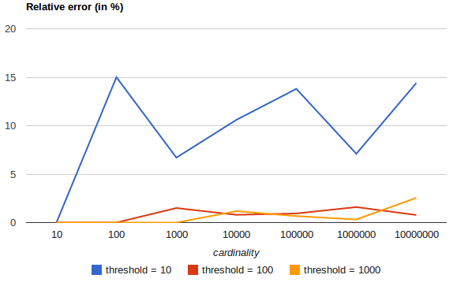
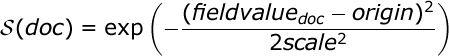
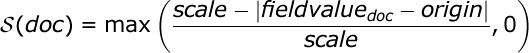

- Setup
- Breaking changes in 1.0
- API Conventions
- Document APIs
- Search APIs
- Indices APIs
- Create Index
- Delete Index
- Indices Exists
- Open / Close Index API
- Put Mapping
- Get Mapping
- Get Field Mapping
- Types Exists
- Delete Mapping
- Index Aliases
- Update Indices Settings
- Get Settings
- Analyze
- Index Templates
- Warmers
- Status
- Indices Stats
- Indices Segments
- Indices Recovery
- Clear Cache
- Flush
- Refresh
- Optimize
- Gateway Snapshot
- cat APIs
- Cluster APIs
- Query DSL
- Queries
- Match Query
- Multi Match Query
- Bool Query
- Boosting Query
- Common Terms Query
- Constant Score Query
- Dis Max Query
- Filtered Query
- Fuzzy Like This Query
- Fuzzy Like This Field Query
- Function Score Query
- Fuzzy Query
- GeoShape Query
- Has Child Query
- Has Parent Query
- Ids Query
- Indices Query
- Match All Query
- More Like This Query
- More Like This Field Query
- Nested Query
- Prefix Query
- Query String Query
- Simple Query String Query
- Range Query
- Regexp Query
- Span First Query
- Span Multi Term Query
- Span Near Query
- Span Not Query
- Span Or Query
- Span Term Query
- Term Query
- Terms Query
- Top Children Query
- Wildcard Query
- Minimum Should Match
- Multi Term Query Rewrite
- Template Query
- Filters
- And Filter
- Bool Filter
- Exists Filter
- Geo Bounding Box Filter
- Geo Distance Filter
- Geo Distance Range Filter
- Geo Polygon Filter
- GeoShape Filter
- Geohash Cell Filter
- Has Child Filter
- Has Parent Filter
- Ids Filter
- Indices Filter
- Limit Filter
- Match All Filter
- Missing Filter
- Nested Filter
- Not Filter
- Or Filter
- Prefix Filter
- Query Filter
- Range Filter
- Regexp Filter
- Script Filter
- Term Filter
- Terms Filter
- Type Filter
- Mapping
- Analysis
- Analyzers
- Tokenizers
- Token Filters
- Standard Token Filter
- ASCII Folding Token Filter
- Length Token Filter
- Lowercase Token Filter
- Uppercase Token Filter
- NGram Token Filter
- Edge NGram Token Filter
- Porter Stem Token Filter
- Shingle Token Filter
- Stop Token Filter
- Word Delimiter Token Filter
- Stemmer Token Filter
- Stemmer Override Token Filter
- Keyword Marker Token Filter
- Keyword Repeat Token Filter
- KStem Token Filter
- Snowball Token Filter
- Phonetic Token Filter
- Synonym Token Filter
- Compound Word Token Filter
- Reverse Token Filter
- Elision Token Filter
- Truncate Token Filter
- Unique Token Filter
- Pattern Capture Token Filter
- Pattern Replace Token Filter
- Trim Token Filter
- Limit Token Count Token Filter
- Hunspell Token Filter
- Common Grams Token Filter
- Normalization Token Filter
- Delimited Payload Token Filter
- Keep Words Token Filter
- Character Filters
- ICU Analysis Plugin
- Modules
- Index Modules
- Testing
- Glossary of terms
This section includes information on how to setup elasticsearch and get it running. If you haven’t already, download it, and then check the installation docs.
Elasticsearch can also be installed from our repositories using apt or yum.
See Repositories.
Installation
After downloading the latest release and extracting it, elasticsearch can be started using:
$ bin/elasticsearch
Under *nix system, the command will start the process in the foreground.
To run it in the background, add the -d switch to it:
$ bin/elasticsearch -d
Elasticsearch is built using Java, and requires at least
Java 6 in order to run.
The version of Java that will be used can be set by setting the
JAVA_HOME environment variable.
Environment Variables
Within the scripts, Elasticsearch comes with built in JAVA_OPTS passed
to the JVM started. The most important setting for that is the -Xmx to
control the maximum allowed memory for the process, and -Xms to
control the minimum allocated memory for the process (in general, the
more memory allocated to the process, the better).
Most times it is better to leave the default JAVA_OPTS as they are,
and use the ES_JAVA_OPTS environment variable in order to set / change
JVM settings or arguments.
The ES_HEAP_SIZE environment variable allows to set the heap memory
that will be allocated to elasticsearch java process. It will allocate
the same value to both min and max values, though those can be set
explicitly (not recommended) by setting ES_MIN_MEM (defaults to
256m), and ES_MAX_MEM (defaults to 1gb).
It is recommended to set the min and max memory to the same value, and
enable mlockall.
System Configuration
File Descriptors
Make sure to increase the number of open files descriptors on the machine (or for the user running elasticsearch). Setting it to 32k or even 64k is recommended.
In order to test how many open files the process can open, start it with
-Des.max-open-files set to true. This will print the number of open
files the process can open on startup.
Alternatively, you can retrieve the max_file_descriptors for each node
using the Nodes Info API, with:
curl localhost:9200/_nodes/process?pretty
Memory Settings
There is an option to use
mlockall to
try to lock the process address space so it won’t be swapped. For this
to work, the bootstrap.mlockall should be set to true and it is
recommended to set both the min and max memory allocation to be the
same. Note: This option is only available on Linux/Unix operating
systems.
In order to see if this works or not, set the common.jna logging to
DEBUG level. A solution to "Unknown mlockall error 0" can be to set
ulimit -l unlimited.
Note, mlockall might cause the JVM or shell
session to exit if it fails to allocate the memory (because not enough
memory is available on the machine).
Elasticsearch Settings
elasticsearch configuration files can be found under ES_HOME/config
folder. The folder comes with two files, the elasticsearch.yml for
configuring Elasticsearch different
modules, and logging.yml for
configuring the Elasticsearch logging.
The configuration format is YAML. Here is an example of changing the address all network based modules will use to bind and publish to:
network :
host : 10.0.0.4Paths
In production use, you will almost certainly want to change paths for data and log files:
path: logs: /var/log/elasticsearch data: /var/data/elasticsearch
Cluster name
Also, don’t forget to give your production cluster a name, which is used to discover and auto-join other nodes:
cluster: name: <NAME OF YOUR CLUSTER>
Node name
You may also want to change the default node name for each node to something like the display hostname. By default Elasticsearch will randomly pick a Marvel character name from a list of around 3000 names when your node starts up.
node: name: <NAME OF YOUR NODE>
Internally, all settings are collapsed into "namespaced" settings. For
example, the above gets collapsed into node.name. This means that
its easy to support other configuration formats, for example,
JSON. If JSON is a preferred configuration format,
simply rename the elasticsearch.yml file to elasticsearch.json and
add:
Configuration styles
{
"network" : {
"host" : "10.0.0.4"
}
}It also means that its easy to provide the settings externally either
using the ES_JAVA_OPTS or as parameters to the elasticsearch
command, for example:
$ elasticsearch -Des.network.host=10.0.0.4
Another option is to set es.default. prefix instead of es. prefix,
which means the default setting will be used only if not explicitly set
in the configuration file.
Another option is to use the ${...} notation within the configuration
file which will resolve to an environment setting, for example:
{
"network" : {
"host" : "${ES_NET_HOST}"
}
}The location of the configuration file can be set externally using a system property:
$ elasticsearch -Des.config=/path/to/config/file
Index Settings
Indices created within the cluster can provide their own settings. For example, the following creates an index with memory based storage instead of the default file system based one (the format can be either YAML or JSON):
$ curl -XPUT http://localhost:9200/kimchy/ -d \
'
index :
store:
type: memory
'Index level settings can be set on the node level as well, for example,
within the elasticsearch.yml file, the following can be set:
index :
store:
type: memoryThis means that every index that gets created on the specific node started with the mentioned configuration will store the index in memory unless the index explicitly sets it. In other words, any index level settings override what is set in the node configuration. Of course, the above can also be set as a "collapsed" setting, for example:
$ elasticsearch -Des.index.store.type=memory
All of the index level configuration can be found within each index module.
Logging
Elasticsearch uses an internal logging abstraction and comes, out of the
box, with log4j. It tries to simplify
log4j configuration by using YAML to configure it,
and the logging configuration file is config/logging.yml file.
In order to run elasticsearch as a service on your operating system, the provided packages try to make it as easy as possible for you to start and stop elasticsearch during reboot and upgrades.
Linux
Currently our build automatically creates a debian package and an RPM package, which is available on the download page. The package itself does not have any dependencies, but you have to make sure that you installed a JDK.
Each package features a configuration file, which allows you to set the following parameters
|
|
The user to run as, defaults to |
|
|
The group to run as, defaults to |
|
|
The heap size to start with |
|
|
The size of the new generation heap |
|
|
The maximum size of the direct memory |
|
|
Maximum number of open files, defaults to |
|
|
Maximum locked memory size. Set to "unlimited" if you use the bootstrap.mlockall option in elasticsearch.yml. You must also set ES_HEAP_SIZE. |
|
|
Maximum number of memory map areas a process may have. If you use |
|
|
Log directory, defaults to |
|
|
Data directory, defaults to |
|
|
Work directory, defaults to |
|
|
Configuration file directory (which needs to include |
|
|
Path to configuration file, defaults to |
|
|
Any additional java options you may want to apply. This may be useful, if you need to set the |
|
|
Configure restart on package upgrade, defaults to |
Debian/Ubuntu
The debian package ships with everything you need as it uses standard debian tools like update update-rc.d to define the runlevels it runs on. The init script is placed at /etc/init.d/elasticsearch is you would expect it. The configuration file is placed at /etc/default/elasticsearch.
The debian package does not start up the service by default. The reason for this is to prevent the instance to accidentally join a cluster, without being configured appropriately. After installing using dpkg -i you can use the following commands to ensure, that elasticsearch starts when the system is booted and then start up elasticsearch:
sudo update-rc.d elasticsearch defaults 95 10 sudo /etc/init.d/elasticsearch start
Installing the oracle JDK
The usual recommendation is to run the Oracle JDK with elasticsearch. However Ubuntu and Debian only ship the OpenJDK due to license issues. You can easily install the oracle installer package though. In case you are missing the add-apt-repository command under Debian GNU/Linux, make sure have at least Debian Wheezy and the package python-software-properties installed
sudo add-apt-repository ppa:webupd8team/java sudo apt-get update sudo apt-get install oracle-java7-installer java -version
The last command should verify a successful installation of the Oracle JDK.
RPM based distributions
Using chkconfig
Some RPM based distributions are using chkconfig to enable and disable services. The init script is located at /etc/init.d/elasticsearch, where as the configuration file is placed at /etc/sysconfig/elasticsearch. Like the debian package the RPM package is not started by default after installation, you have to do this manually by entering the following commands
sudo /sbin/chkconfig --add elasticsearch sudo service elasticsearch start
Using systemd
Distributions like SUSE do not use the chkconfig tool to register services, but rather systemd and its command /bin/systemctl to start and stop services (at least in newer versions, otherwise use the chkconfig commands above). The configuration file is also placed at /etc/sysconfig/elasticsearch. After installing the RPM, you have to change the systemd configuration and then start up elasticsearch
sudo /bin/systemctl daemon-reload sudo /bin/systemctl enable elasticsearch.service sudo /bin/systemctl start elasticsearch.service
Also note that changing the MAX_MAP_COUNT setting in /etc/sysconfig/elasticsearch does not have any effect, you will have to change it in /usr/lib/sysctl.d/elasticsearch.conf in order to have it applied at startup.
Windows users can configure Elasticsearch to run as a service to run in the background or start automatically
at startup without any user interaction.
This can be achieved through service.bat script under bin/ folder which allows one to install,
remove, manage or configure the service and potentially start and stop the service, all from the command-line.
c:\elasticsearch-0.90.5\bin>service Usage: service.bat install|remove|start|stop|manager [SERVICE_ID]
The script requires one parameter (the command to execute) followed by an optional one indicating the service id (useful when installing multiple Elasticsearch services).
The commands available are:
|
|
Install Elasticsearch as a service |
|
|
Remove the installed Elasticsearch service (and stop the service if started) |
|
|
Start the Elasticsearch service (if installed) |
|
|
Stop the Elasticsearch service (if started) |
|
|
Start a GUI for managing the installed service |
Note that the environment configuration options available during the installation are copied and will be used during the service lifecycle. This means any changes made to them after the installation will not be picked up unless the service is reinstalled.
Based on the architecture of the available JDK/JRE (set through JAVA_HOME), the appropriate 64-bit(x64) or 32-bit(x86)
service will be installed. This information is made available during install:
c:\elasticsearch-0.90.5\bin>service install Installing service : "elasticsearch-service-x64" Using JAVA_HOME (64-bit): "c:\jvm\jdk1.7" The service 'elasticsearch-service-x64' has been installed.
While a JRE can be used for the Elasticsearch service, due to its use of a client VM (as oppose to a server JVM which offers better performance for long-running applications) its usage is discouraged and a warning will be issued.
Customizing service settings
There are two ways to customize the service settings:
- Manager GUI
-
accessible through
managercommand, the GUI offers insight into the installed service including its status, startup type, JVM, start and stop settings among other things. Simply invokingservice.batfrom the command-line with the aforementioned option will open up the manager window:

-
Customizing
service.bat -
at its core,
service.batrelies on Apache Commons Daemon project to install the services. For full flexibility such as customizing the user under which the service runs, one can modify the installation parameters to tweak all the parameters accordingly. Do note that this requires reinstalling the service for the new settings to be applied.
The directory layout of an installation is as follows:
| Type | Description | Default Location | Setting |
|---|---|---|---|
home | Home of elasticsearch installation |
| |
bin | Binary scripts including |
| |
conf | Configuration files including |
|
|
data | The location of the data files of each index / shard allocated on the node. Can hold multiple locations. |
|
|
work | Temporal files that are used by different nodes. |
|
|
logs | Log files location |
|
|
plugins | Plugin files location. Each plugin will be contained in a subdirectory. |
|
|
The multiple data locations allows to stripe it. The striping is simple,
placing whole files in one of the locations, and deciding where to place
the file based on the value of the index.store.distributor setting:
-
least_used(default) always selects the directory with the most available space -
randomselects directories at random. The probability of selecting a particular directory is proportional to amount of available space in this directory.
Note, there are no multiple copies of the same data, in that, its similar to RAID 0. Though simple, it should provide a good solution for people that don’t want to mess with RAID. Here is how it is configured:
path.data: /mnt/first,/mnt/second
Or the in an array format:
path.data: ["/mnt/first", "/mnt/second"]
We also have repositories available for APT and YUM based distributions.
We have split the major versions in separate urls to avoid accidental upgrades across major version. For all 0.90.x releases use 0.90 as version number, for 1.0.x use 1.0, etc.
APT
Download and install the Public Signing Key
wget -O - http://packages.elasticsearch.org/GPG-KEY-elasticsearch | apt-key add -
Add the following to your /etc/apt/sources.list to enable the repository
deb http://packages.elasticsearch.org/elasticsearch/0.90/debian stable main
Run apt-get update and the repository is ready for use.
YUM
Download and install the Public Signing Key
rpm --import http://packages.elasticsearch.org/GPG-KEY-elasticsearch
Add the following in your /etc/yum.repos.d/ directory
[elasticsearch-0.90] name=Elasticsearch repository for 0.90.x packages baseurl=http://packages.elasticsearch.org/elasticsearch/0.90/centos gpgcheck=1 gpgkey=http://packages.elasticsearch.org/GPG-KEY-elasticsearch enabled=1
And your repository is ready for use.
This section discusses the changes that you need to be aware of when migrating your application to Elasticsearch 1.0.
-
Elasticsearch now runs in the foreground by default. There is no more
-fflag on the command line. Instead, to run elasticsearch as a daemon, use the-dflag:
./bin/elasticsearch -d
-
Command line settings can now be passed without the
-Des.prefix, for instance:
./bin/elasticsearch --node.name=search_1 --cluster.name=production
-
Elasticsearch on 64 bit Linux now uses
mmapfsby default. Make sure that you setMAX_MAP_COUNTto a sufficiently high number. The RPM and Debian packages default this value to262144. - The RPM and Debian packages no longer start Elasticsearch by default.
The
cluster.routing.allocationsettings (disable_allocation,disable_new_allocationanddisable_replica_location) have been replaced by the single setting:cluster.routing.allocation.enable: all|primaries|new_primaries|none
The cluster_state, nodes_info,
nodes_stats and indices_stats
APIs have all been changed to make their format more RESTful and less clumsy.
For instance, if you just want the nodes section of the the cluster_state,
instead of:
GET /_cluster/state?filter_metadata&filter_routing_table&filter_blocks
you now use:
GET /_cluster/state/nodes
Simliarly for the nodes_stats API, if you want the transport and http
metrics only, instead of:
GET /_nodes/stats?clear&transport&http
you now use:
GET /_nodes/stats/transport,http
See the links above for full details.
The mapping, alias, settings, and warmer index APIs are all similar
but there are subtle differences in the order of the URL and the response
body. For instance, adding a mapping and a warmer look slightly different:
PUT /{index}/{type}/_mapping
PUT /{index}/_warmer/{name}These URLs have been unified as:
PUT /{indices}/_mapping/{type}
PUT /{indices}/_alias/{name}
PUT /{indices}/_warmer/{name}
GET /{indices}/_mapping/{types}
GET /{indices}/_alias/{names}
GET /{indices}/_settings/{names}
GET /{indices}/_warmer/{names}
DELETE /{indices}/_mapping/{types}
DELETE /{indices}/_alias/{names}
DELETE /{indices}/_warmer/{names}All of the {indices}, {types} and {names} parameters can be replaced by:
-
_all,*or blank (ie left out altogether), all of which mean “all” -
wildcards like
test* -
comma-separated lists:
index_1,test_*
The only exception is DELETE which doesn’t accept blank (missing)
parameters. If you want to delete something, you should be specific.
Similarly, the return values for GET have been unified with the following
rules:
-
Only return values that exist. If you try to
GETa mapping which doesn’t exist, then the result will be an empty object:{}. We no longer throw a404if the requested mapping/warmer/alias/setting doesn’t exist. The response format always has the index name, then the section, then the element name, for instance:
{ "my_index": { "mappings": { "my_type": {...} } } }This is a breaking change for the
get_mappingAPI.
In the future we will also provide plural versions to allow putting multiple mappings etc in a single request.
See put-mapping, get-
mapping, get-field-mapping,
delete-mapping,
update-settings, get-settings,
warmers, and aliases for more details.
Previously a document could be indexed as itself, or wrapped in an outer
object which specified the type name:
PUT /my_index/my_type/1
{
"my_type": {
... doc fields ...
}
}This led to some ambiguity when a document also included a field with the same
name as the type. We no longer accept the outer type wrapper, but this
behaviour can be reenabled on an index-by-index basis with the setting:
index.mapping.allow_type_wrapper.
While the search API takes a top-level query parameter, the
count, delete-by-query and
validate-query requests expected the whole body to be a
query. These now require a top-level query parameter:
GET /_count
{
"query": {
"match": {
"title": "Interesting stuff"
}
}
}Also, the top-level filter parameter in search has been renamed to
post_filter, to indicate that it should not
be used as the primary way to filter search results (use a
filtered query instead), but only to filter
results AFTER facets/aggregations have been calculated.
This example counts the top colors in all matching docs, but only returns docs
with color red:
GET /_search
{
"query": {
"match_all": {}
},
"aggs": {
"colors": {
"terms": { "field": "color" }
}
},
"post_filter": {
"term": {
"color": "red"
}
}
}Multi-fields are dead! Long live multi-fields! Well, the field type
multi_field has been removed. Instead, any of the core field types
(excluding object and nested) now accept a fields parameter. It’s the
same thing, but nicer. Instead of:
"title": {
"type": "multi_field",
"fields": {
"title": { "type": "string" },
"raw": { "type": "string", "index": "not_analyzed" }
}
}you can now write:
"title": {
"type": "string",
"fields": {
"raw": { "type": "string", "index": "not_analyzed" }
}
}Existing multi-fields will be upgraded to the new format automatically.
Also, instead of having to use the arcane path and index_name parameters
in order to index multiple fields into a single “custom _all field”, you
can now use the copy_to parameter.
Previously, the standard and
pattern analyzers used the list of English stopwords
by default, which caused some hard to debug indexing issues. Now they are set to
use the empty stopwords list (ie _none_) instead.
When dates are specified without a year, for example: Dec 15 10:00:00 they
are treated as dates in 2000 during indexing and range searches… except for
the upper included bound lte where they were treated as dates in 1970! Now,
all dates without years
use 1970 as the default.
-
Geo queries used to use
milesas the default unit. And we all know what happened at NASA because of that decision. The new default unit ismeters. -
For all queries that support fuzziness, the
min_similarity,fuzzinessandedit_distanceparameters have been unified as the single parameterfuzziness. See the section called “Fuzziness” for details of accepted values. -
The
ignore_missingparameter has been replaced by theexpand_wildcards,ignore_unavailableandallow_no_indicesparameters, all of which have sensible defaults. See the multi-index docs for more. An index name (or pattern) is now required for destructive operations like deleting indices:
# v0.90 - delete all indices: DELETE / # v1.0 - delete all indices: DELETE /_all DELETE /*
Setting
action.destructive_requires_nametotrueprovides further safety by disabling wildcard expansion on destructive actions.
-
The
okreturn value has been removed from all response bodies as it added no useful information. -
The
found,not_foundandexistsreturn values have been unified asfoundon all relevant APIs. Field values, in response to the
fieldsparameter, are now always returned as arrays. A field could have single or multiple values, which meant that sometimes they were returned as scalars and sometimes as arrays. By always returning arrays, this simplifies user code. The only exception to this rule is whenfieldsis used to retrieve metadata like theroutingvalue, which are always singular. Metadata fields are always returned as scalars.The
fieldsparameter is intended to be used for retrieving stored fields, rather than for fields extracted from the_source. That means that it can no longer be used to return whole objects and it no longer accepts the_source.fieldnameformat. For these you should use the_source_source_includeand_source_excludeparameters instead.Settings, like
index.analysis.analyzer.defaultare now returned as proper nested JSON objects, which makes them easier to work with programatically:{ "index": { "analysis": { "analyzer": { "default": xxx } } } }You can choose to return them in flattened format by passing
?flat_settingsin the query string.-
The
analyzeAPI no longer supports the text response format, but does support JSON and YAML.
-
The
textquery has been removed. Use thematchquery instead. -
The
fieldquery has been removed. Use thequery_stringquery instead. -
Per-document boosting with the
_boostfield has been removed. You can use thefunction_scoreinstead. -
The
pathparameter in mappings has been deprecated. Use thecopy_toparameter instead. -
The
custom_scoreandcustom_boost_scoreis no longer supported. You can usefunction_scoreinstead.
The percolator has been redesigned and because of this the dedicated _percolator index is no longer used by the percolator,
but instead the percolator works with a dedicated .percolator type. Read the redesigned percolator
blog post for the reasons why the percolator has been redesigned.
Elasticsearch will not delete the _percolator index when upgrading, only the percolate api will not use the queries
stored in the _percolator index. In order to use the already stored queries, you can just re-index the queries from the
_percolator index into any index under the reserved .percolator type. The format in which the percolate queries
were stored has not been changed. So a simple script that does a scan search to retrieve all the percolator queries
and then does a bulk request into another index should be sufficient.
The elasticsearch REST APIs are exposed using:
The conventions listed in this chapter can be applied throughout the REST API, unless otherwise specified.
Most APIs that refer to an index parameter support execution across multiple indices,
using simple test1,test2,test3 notation (or _all for all indices). It also
support wildcards, for example: test*, and the ability to "add" (+)
and "remove" (-), for example: +test*,-test3.
All multi indices API support the following url query string parameters:
-
ignore_unavailable -
Controls whether to ignore if any specified indices are unavailable, this
includes indices that don’t exist or closed indices. Either
trueorfalsecan be specified. -
allow_no_indices -
Controls whether to fail if a wildcard indices expressions results into no
concrete indices. Either
trueorfalsecan be specified. For example if the wildcard expressionfoo*is specified and no indices are available that start withfoothen depending on this setting the request will fail. This setting is also applicable when_all,*or no index has been specified. -
expand_wildcards -
Controls to what kind of concrete indices wildcard indices expression expand
to. If
openis specified then the wildcard expression if expanded to only open indices and ifclosedis specified then the wildcard expression if expanded only to closed indices. Also both values (open,closed) can be specified to expand to all indices.
The defaults settings for the above parameters depend on the api being used.
Single index APIs such as the Document APIs and the
single-index alias APIs do not support multiple indices.
The following options can be applied to all of the REST APIs.
Pretty Results
When appending ?pretty=true to any request made, the JSON returned
will be pretty formatted (use it for debugging only!). Another option is
to set format=yaml which will cause the result to be returned in the
(sometimes) more readable yaml format.
Human readable output
Statistics are returned in a format suitable for humans
(eg "exists_time": "1h" or "size": "1kb") and for computers
(eg "exists_time_in_millis": 3600000` or "size_in_bytes": 1024).
The human readable values can be turned off by adding ?human=false
to the query string. This makes sense when the stats results are
being consumed by a monitoring tool, rather than intended for human
consumption. The default for the human flag is
false.
[1.00.Beta]
Added in 1.00.Beta. Previously defaulted to true.
Flat Settings
The flat_settings flag affects rendering of the lists of settings. When
flat_settings` flag is true settings are returned in a flat format:
{
"persistent" : { },
"transient" : {
"discovery.zen.minimum_master_nodes" : "1"
}
}When the flat_settings flag is false settings are returned in a more
human readable structured format:
{
"persistent" : { },
"transient" : {
"discovery" : {
"zen" : {
"minimum_master_nodes" : "1"
}
}
}
}By default the flat_settings is set to false.
Parameters
Rest parameters (when using HTTP, map to HTTP URL parameters) follow the convention of using underscore casing.
Boolean Values
All REST APIs parameters (both request parameters and JSON body) support
providing boolean "false" as the values: false, 0, no and off.
All other values are considered "true". Note, this is not related to
fields within a document indexed treated as boolean fields.
Number Values
All REST APIs support providing numbered parameters as string on top
of supporting the native JSON number types.
Time units
Whenever durations need to be specified, eg for a timeout parameter, the duration
can be specified as a whole number representing time in milliseconds, or as a time value like 2d for 2 days. The supported units are:
|
|
Year |
|
|
Month |
|
|
Week |
|
|
Hour |
|
|
Minute |
|
|
Second |
Distance Units
Wherever distances need to be specified, such as the distance parameter in
the Geo Distance Filter) or the precision parameter in the
Geohash Cell Filter, the default unit if none is specified is
the meter. Distances can be specified in other units, such as "1km" or
"2mi" (2 miles).
The full list of units is listed below:
|
Mile |
|
|
Yard |
|
|
Feet |
|
|
Inch |
|
|
Kilometer |
|
|
Meter |
|
|
Centimeter |
|
|
Millimeter |
|
|
Nautical mile |
|
Fuzziness
Some queries and APIs support parameters to allow inexact fuzzy matching,
using the fuzziness parameter. The fuzziness parameter is context
sensitive which means that it depends on the type of the field being queried:
Numeric, date and IPv4 fields
When querying numeric, date and IPv4 fields, fuzziness is interpreted as a
`+/- margin. It behaves like a Range Query where:
-fuzziness <= field value <= +fuzziness
The fuzziness parameter should be set to a numeric value, eg 2 or 2.0. A
date field interprets a long as milliseconds, but also accepts a string
containing a time value — "1h" — as explained in the section called “Time units”. An ip
field accepts a long or another IPv4 address (which will be converted into a
long).
String fields
When querying string fields, fuzziness is interpreted as a
Levenshtein Edit Distance — the number of one character changes that need to be made to one string to
make it the same as another string.
The fuzziness parameter can be specified as:
-
0,1,2 - the maximum allowed Levenshtein Edit Distance (or number of edits)
-
AUTO generates an edit distance based on the length of the term. For lengths:
-
0..1 - must match exactly
-
1..4 - one edit allowed
-
>4 - two edits allowed
AUTOshould generally be the preferred value forfuzziness.-
-
0.0..1.0 -
converted into an edit distance using the formula:
length(term) * (1.0 - fuzziness), eg afuzzinessof0.6with a term of length 10 would result in an edit distance of4. Note: in all APIs except for the Fuzzy Like This Query, the maximum allowed edit distance is2.
Result Casing
All REST APIs accept the case parameter. When set to camelCase, all
field names in the result will be returned in camel casing, otherwise,
underscore casing will be used. Note, this does not apply to the source
document indexed.
JSONP
All REST APIs accept a callback parameter resulting in a
JSONP result.
Request body in query string
For libraries that don’t accept a request body for non-POST requests,
you can pass the request body as the source query string parameter
instead.
Many users use a proxy with URL-based access control to secure access to Elasticsearch indices. For multi-search, multi-get and bulk requests, the user has the choice of specifying an index in the URL and on each individual request within the request body. This can make URL-based access control challenging.
To prevent the user from overriding the index which has been specified in the
URL, add this setting to the config.yml file:
rest.action.multi.allow_explicit_index: false
The default value is true, but when set to false, Elasticsearch will
reject requests that have an explicit index specified in the request body.
This section describes the following CRUD APIs:
Single document APIs
Multi-document APIs
All CRUD APIs are single-index APIs. The index parameter accepts a single
index name, or an alias which points to a single index.
The index API adds or updates a typed JSON document in a specific index, making it searchable. The following example inserts the JSON document into the "twitter" index, under a type called "tweet" with an id of 1:
$ curl -XPUT 'http://localhost:9200/twitter/tweet/1' -d '{
"user" : "kimchy",
"post_date" : "2009-11-15T14:12:12",
"message" : "trying out Elasticsearch"
}'The result of the above index operation is:
{
"_index" : "twitter",
"_type" : "tweet",
"_id" : "1",
"_version" : 1,
"created" : true
}Automatic Index Creation
The index operation automatically creates an index if it has not been created before (check out the create index API for manually creating an index), and also automatically creates a dynamic type mapping for the specific type if one has not yet been created (check out the put mapping API for manually creating a type mapping).
The mapping itself is very flexible and is schema-free. New fields and objects will automatically be added to the mapping definition of the type specified. Check out the mapping section for more information on mapping definitions.
Note that the format of the JSON document can also include the type (very handy
when using JSON mappers) if the index.mapping.allow_type_wrapper setting is
set to true, for example:
$ curl -XPOST 'http://localhost:9200/twitter' -d '{
"settings": {
"index": {
"mapping.allow_type_wrapper": true
}
}
}'
{"acknowledged":true}
$ curl -XPUT 'http://localhost:9200/twitter/tweet/1' -d '{
"tweet" : {
"user" : "kimchy",
"post_date" : "2009-11-15T14:12:12",
"message" : "trying out Elasticsearch"
}
}'Automatic index creation can be disabled by setting
action.auto_create_index to false in the config file of all nodes.
Automatic mapping creation can be disabled by setting
index.mapper.dynamic to false in the config files of all nodes (or
on the specific index settings).
Automatic index creation can include a pattern based white/black list,
for example, set action.auto_create_index to +aaa*,-bbb*,+ccc*,-* (+
meaning allowed, and - meaning disallowed).
Versioning
Each indexed document is given a version number. The associated
version number is returned as part of the response to the index API
request. The index API optionally allows for
optimistic
concurrency control when the version parameter is specified. This
will control the version of the document the operation is intended to be
executed against. A good example of a use case for versioning is
performing a transactional read-then-update. Specifying a version from
the document initially read ensures no changes have happened in the
meantime (when reading in order to update, it is recommended to set
preference to _primary). For example:
curl -XPUT 'localhost:9200/twitter/tweet/1?version=2' -d '{
"message" : "elasticsearch now has versioning support, double cool!"
}'NOTE: versioning is completely real time, and is not affected by the near real time aspects of search operations. If no version is provided, then the operation is executed without any version checks.
By default, internal versioning is used that starts at 1 and increments
with each update, deletes included. Optionally, the version number can be
supplemented with an external value (for example, if maintained in a
database). To enable this functionality, version_type should be set to
external. The value provided must be a numeric, long value greater than 0,
and less than around 9.2e+18. When using the external version type, instead
of checking for a matching version number, the system checks to see if
the version number passed to the index request is greater than the
version of the currently stored document. If true, the document will be
indexed and the new version number used. If the value provided is less
than or equal to the stored document’s version number, a version
conflict will occur and the index operation will fail.
A nice side effect is that there is no need to maintain strict ordering of async indexing operations executed as a result of changes to a source database, as long as version numbers from the source database are used. Even the simple case of updating the elasticsearch index using data from a database is simplified if external versioning is used, as only the latest version will be used if the index operations are out of order for whatever reason.
Version types
Next to the internal & external version types explained above, Elasticsearch
also supports other types for specific use cases. Here is an overview of
the different version types and their semantics.
-
internal - only index the document if the given version is identical to the version of the stored document.
-
externalorexternal_gt - only index the document if the given version is strictly higher than the version of the stored document or if there is no existing document. The given version will be used as the new version and will be stored with the new document.
-
external_gte - only index the document if the given version is equal or higher than the version of the stored document. If there is no existing document the operation will succeed as well. The given version will be used as the new version and will be stored with the new document.
-
force - the document will be indexed regardless of the version of the stored document or if there is no existing document. The given version will be used as the new version and will be stored with the new document. This version type is typically used for correcting errors.
NOTE: The external_gte & force version types are meant for special use cases and should be used
with care. If used incorrectly, they can result in loss of data.
Operation Type
The index operation also accepts an op_type that can be used to force
a create operation, allowing for "put-if-absent" behavior. When
create is used, the index operation will fail if a document by that id
already exists in the index.
Here is an example of using the op_type parameter:
$ curl -XPUT 'http://localhost:9200/twitter/tweet/1?op_type=create' -d '{
"user" : "kimchy",
"post_date" : "2009-11-15T14:12:12",
"message" : "trying out Elasticsearch"
}'Another option to specify create is to use the following uri:
$ curl -XPUT 'http://localhost:9200/twitter/tweet/1/_create' -d '{
"user" : "kimchy",
"post_date" : "2009-11-15T14:12:12",
"message" : "trying out Elasticsearch"
}'Automatic ID Generation
The index operation can be executed without specifying the id. In such a
case, an id will be generated automatically. In addition, the op_type
will automatically be set to create. Here is an example (note the
POST used instead of PUT):
$ curl -XPOST 'http://localhost:9200/twitter/tweet/' -d '{
"user" : "kimchy",
"post_date" : "2009-11-15T14:12:12",
"message" : "trying out Elasticsearch"
}'The result of the above index operation is:
{
"_index" : "twitter",
"_type" : "tweet",
"_id" : "6a8ca01c-7896-48e9-81cc-9f70661fcb32",
"_version" : 1,
"created" : true
}Routing
By default, shard placement — or routing — is controlled by using a
hash of the document’s id value. For more explicit control, the value
fed into the hash function used by the router can be directly specified
on a per-operation basis using the routing parameter. For example:
$ curl -XPOST 'http://localhost:9200/twitter/tweet?routing=kimchy' -d '{
"user" : "kimchy",
"post_date" : "2009-11-15T14:12:12",
"message" : "trying out Elasticsearch"
}'In the example above, the "tweet" document is routed to a shard based on
the routing parameter provided: "kimchy".
When setting up explicit mapping, the _routing field can be optionally
used to direct the index operation to extract the routing value from the
document itself. This does come at the (very minimal) cost of an
additional document parsing pass. If the _routing mapping is defined,
and set to be required, the index operation will fail if no routing
value is provided or extracted.
Parents & Children
A child document can be indexed by specifying its parent when indexing. For example:
$ curl -XPUT localhost:9200/blogs/blog_tag/1122?parent=1111 -d '{
"tag" : "something"
}'When indexing a child document, the routing value is automatically set
to be the same as its parent, unless the routing value is explicitly
specified using the routing parameter.
Timestamp
A document can be indexed with a timestamp associated with it. The
timestamp value of a document can be set using the timestamp
parameter. For example:
$ curl -XPUT localhost:9200/twitter/tweet/1?timestamp=2009-11-15T14%3A12%3A12 -d '{
"user" : "kimchy",
"message" : "trying out Elasticsearch",
}'If the timestamp value is not provided externally or in the _source,
the timestamp will be automatically set to the date the document was
processed by the indexing chain. More information can be found on the
_timestamp mapping page.
TTL
A document can be indexed with a ttl (time to live) associated with
it. Expired documents will be expunged automatically. The expiration
date that will be set for a document with a provided ttl is relative
to the timestamp of the document, meaning it can be based on the time
of indexing or on any time provided. The provided ttl must be strictly
positive and can be a number (in milliseconds) or any valid time value
as shown in the following examples:
curl -XPUT 'http://localhost:9200/twitter/tweet/1?ttl=86400000' -d '{
"user": "kimchy",
"message": "Trying out elasticsearch, so far so good?"
}'curl -XPUT 'http://localhost:9200/twitter/tweet/1?ttl=1d' -d '{
"user": "kimchy",
"message": "Trying out elasticsearch, so far so good?"
}'curl -XPUT 'http://localhost:9200/twitter/tweet/1' -d '{
"_ttl": "1d",
"user": "kimchy",
"message": "Trying out elasticsearch, so far so good?"
}'More information can be found on the _ttl mapping page.
Distributed
The index operation is directed to the primary shard based on its route (see the Routing section above) and performed on the actual node containing this shard. After the primary shard completes the operation, if needed, the update is distributed to applicable replicas.
Write Consistency
To prevent writes from taking place on the "wrong" side of a network
partition, by default, index operations only succeed if a quorum
(>replicas/2+1) of active shards are available. This default can be
overridden on a node-by-node basis using the action.write_consistency
setting. To alter this behavior per-operation, the consistency request
parameter can be used.
Valid write consistency values are one, quorum, and all.
Asynchronous Replication
By default, the index operation only returns after all shards within the
replication group have indexed the document (sync replication). To
enable asynchronous replication, causing the replication process to take
place in the background, set the replication parameter to async.
When asynchronous replication is used, the index operation will return
as soon as the operation succeeds on the primary shard.
Refresh
To refresh the index immediately after the operation occurs, so that the
document appears in search results immediately, the refresh parameter
can be set to true. Setting this option to true should ONLY be
done after careful thought and verification that it does not lead to
poor performance, both from an indexing and a search standpoint. Note,
getting a document using the get API is completely realtime.
Timeout
The primary shard assigned to perform the index operation might not be
available when the index operation is executed. Some reasons for this
might be that the primary shard is currently recovering from a gateway
or undergoing relocation. By default, the index operation will wait on
the primary shard to become available for up to 1 minute before failing
and responding with an error. The timeout parameter can be used to
explicitly specify how long it waits. Here is an example of setting it
to 5 minutes:
$ curl -XPUT 'http://localhost:9200/twitter/tweet/1?timeout=5m' -d '{
"user" : "kimchy",
"post_date" : "2009-11-15T14:12:12",
"message" : "trying out Elasticsearch"
}'The get API allows to get a typed JSON document from the index based on its id. The following example gets a JSON document from an index called twitter, under a type called tweet, with id valued 1:
curl -XGET 'http://localhost:9200/twitter/tweet/1'
The result of the above get operation is:
{
"_index" : "twitter",
"_type" : "tweet",
"_id" : "1",
"_version" : 1,
"found": true,
"_source" : {
"user" : "kimchy",
"postDate" : "2009-11-15T14:12:12",
"message" : "trying out Elasticsearch"
}
}The above result includes the _index, _type, _id and _version
of the document we wish to retrieve, including the actual _source
of the document if it could be found (as indicated by the found
field in the response).
The API also allows to check for the existence of a document using
HEAD, for example:
curl -XHEAD -i 'http://localhost:9200/twitter/tweet/1'
Realtime
By default, the get API is realtime, and is not affected by the refresh rate of the index (when data will become visible for search).
In order to disable realtime GET, one can either set realtime
parameter to false, or globally default it to by setting the
action.get.realtime to false in the node configuration.
When getting a document, one can specify fields to fetch from it. They
will, when possible, be fetched as stored fields (fields mapped as
stored in the mapping). When using realtime GET, there is no notion of
stored fields (at least for a period of time, basically, until the next
flush), so they will be extracted from the source itself (note, even if
source is not enabled). It is a good practice to assume that the fields
will be loaded from source when using realtime GET, even if the fields
are stored.
Optional Type
The get API allows for _type to be optional. Set it to _all in order
to fetch the first document matching the id across all types.
Source filtering
Added in 1.0.0.Beta1.
By default, the get operation returns the contents of the _source field unless
you have used the fields parameter or if the _source field is disabled.
You can turn off _source retrieval by using the _source parameter:
curl -XGET 'http://localhost:9200/twitter/tweet/1?_source=false'
If you only need one or two fields from the complete _source, you can use the _source_include
& _source_exclude parameters to include or filter out that parts you need. This can be especially helpful
with large documents where partial retrieval can save on network overhead. Both parameters take a comma separated list
of fields or wildcard expressions. Example:
curl -XGET 'http://localhost:9200/twitter/tweet/1?_source_include=*.id&_source_exclude=entities'
If you only want to specify includes, you can use a shorter notation:
curl -XGET 'http://localhost:9200/twitter/tweet/1?_source=*.id,retweeted'
Fields
The get operation allows specifying a set of stored fields that will be
returned by passing the fields parameter. For example:
curl -XGET 'http://localhost:9200/twitter/tweet/1?fields=title,content'
For backward compatibility, if the requested fields are not stored, they will be fetched
from the _source (parsed and extracted). This functionality has been replaced by the
source filtering parameter.
Field values fetched from the document it self are always returned as an array. Metadata fields like _routing and
_parent fields are never returned as an array.
Also only leaf fields can be returned via the field option. So object fields can’t be returned and such requests
will fail.
Getting the _source directly
Use the /{index}/{type}/{id}/_source endpoint to get
just the _source field of the document,
without any additional content around it. For example:
curl -XGET 'http://localhost:9200/twitter/tweet/1/_source'
You can also use the same source filtering parameters to control which parts of the _source will be returned:
curl -XGET 'http://localhost:9200/twitter/tweet/1/_source?_source_include=*.id&_source_exclude=entities'
Note, there is also a HEAD variant for the _source endpoint to efficiently test for document existence. Curl example:
curl -XHEAD -i 'http://localhost:9200/twitter/tweet/1/_source'
Routing
When indexing using the ability to control the routing, in order to get a document, the routing value should also be provided. For example:
curl -XGET 'http://localhost:9200/twitter/tweet/1?routing=kimchy'
The above will get a tweet with id 1, but will be routed based on the user. Note, issuing a get without the correct routing, will cause the document not to be fetched.
Preference
Controls a preference of which shard replicas to execute the get
request on. By default, the operation is randomized between the shard
replicas.
The preference can be set to:
-
_primary - The operation will go and be executed only on the primary shards.
-
_local - The operation will prefer to be executed on a local allocated shard if possible.
- Custom (string) value
- A custom value will be used to guarantee that the same shards will be used for the same custom value. This can help with "jumping values" when hitting different shards in different refresh states. A sample value can be something like the web session id, or the user name.
Refresh
The refresh parameter can be set to true in order to refresh the
relevant shard before the get operation and make it searchable. Setting
it to true should be done after careful thought and verification that
this does not cause a heavy load on the system (and slows down
indexing).
Distributed
The get operation gets hashed into a specific shard id. It then gets redirected to one of the replicas within that shard id and returns the result. The replicas are the primary shard and its replicas within that shard id group. This means that the more replicas we will have, the better GET scaling we will have.
The delete API allows to delete a typed JSON document from a specific index based on its id. The following example deletes the JSON document from an index called twitter, under a type called tweet, with id valued 1:
$ curl -XDELETE 'http://localhost:9200/twitter/tweet/1'
The result of the above delete operation is:
{
"found" : true,
"_index" : "twitter",
"_type" : "tweet",
"_id" : "1",
"_version" : 2
}Versioning
Each document indexed is versioned. When deleting a document, the
version can be specified to make sure the relevant document we are
trying to delete is actually being deleted and it has not changed in the
meantime. Every write operation executed on a document, deletes included,
causes its version to be incremented.
Routing
When indexing using the ability to control the routing, in order to delete a document, the routing value should also be provided. For example:
$ curl -XDELETE 'http://localhost:9200/twitter/tweet/1?routing=kimchy'
The above will delete a tweet with id 1, but will be routed based on the user. Note, issuing a delete without the correct routing, will cause the document to not be deleted.
Many times, the routing value is not known when deleting a document. For
those cases, when specifying the _routing mapping as required, and
no routing value is specified, the delete will be broadcasted
automatically to all shards.
Parent
The parent parameter can be set, which will basically be the same as
setting the routing parameter.
Note that deleting a parent document does not automatically delete its children. One way of deleting all child documents given a parent’s id is to perform a delete by query on the child index with the automatically generated (and indexed) field _parent, which is in the format parent_type#parent_id.
Automatic index creation
The delete operation automatically creates an index if it has not been created before (check out the create index API for manually creating an index), and also automatically creates a dynamic type mapping for the specific type if it has not been created before (check out the put mapping API for manually creating type mapping).
Distributed
The delete operation gets hashed into a specific shard id. It then gets redirected into the primary shard within that id group, and replicated (if needed) to shard replicas within that id group.
Replication Type
The replication of the operation can be done in an asynchronous manner
to the replicas (the operation will return once it has be executed on
the primary shard). The replication parameter can be set to async
(defaults to sync) in order to enable it.
Write Consistency
Control if the operation will be allowed to execute based on the number
of active shards within that partition (replication group). The values
allowed are one, quorum, and all. The parameter to set it is
consistency, and it defaults to the node level setting of
action.write_consistency which in turn defaults to quorum.
For example, in a N shards with 2 replicas index, there will have to be
at least 2 active shards within the relevant partition (quorum) for
the operation to succeed. In a N shards with 1 replica scenario, there
will need to be a single shard active (in this case, one and quorum
is the same).
Refresh
The refresh parameter can be set to true in order to refresh the
relevant shard after the delete operation has occurred and make it
searchable. Setting it to true should be done after careful thought
and verification that this does not cause a heavy load on the system
(and slows down indexing).
Timeout
The primary shard assigned to perform the delete operation might not be
available when the delete operation is executed. Some reasons for this
might be that the primary shard is currently recovering from a gateway
or undergoing relocation. By default, the delete operation will wait on
the primary shard to become available for up to 1 minute before failing
and responding with an error. The timeout parameter can be used to
explicitly specify how long it waits. Here is an example of setting it
to 5 minutes:
$ curl -XDELETE 'http://localhost:9200/twitter/tweet/1?timeout=5m'
The update API allows to update a document based on a script provided. The operation gets the document (collocated with the shard) from the index, runs the script (with optional script language and parameters), and index back the result (also allows to delete, or ignore the operation). It uses versioning to make sure no updates have happened during the "get" and "reindex".
Note, this operation still means full reindex of the document, it just
removes some network roundtrips and reduces chances of version conflicts
between the get and the index. The _source field need to be enabled
for this feature to work.
For example, lets index a simple doc:
curl -XPUT localhost:9200/test/type1/1 -d '{
"counter" : 1,
"tags" : ["red"]
}'Now, we can execute a script that would increment the counter:
curl -XPOST 'localhost:9200/test/type1/1/_update' -d '{
"script" : "ctx._source.counter += count",
"params" : {
"count" : 4
}
}'We can also add a tag to the list of tags (note, if the tag exists, it will still add it, since its a list):
curl -XPOST 'localhost:9200/test/type1/1/_update' -d '{
"script" : "ctx._source.tags += tag",
"params" : {
"tag" : "blue"
}
}'We can also add a new field to the document:
curl -XPOST 'localhost:9200/test/type1/1/_update' -d '{
"script" : "ctx._source.text = \"some text\""
}'We can also remove a field from the document:
curl -XPOST 'localhost:9200/test/type1/1/_update' -d '{
"script" : "ctx._source.remove(\"text\")"
}'And, we can delete the doc if the tags contain blue, or ignore (noop):
curl -XPOST 'localhost:9200/test/type1/1/_update' -d '{
"script" : "ctx._source.tags.contains(tag) ? ctx.op = \"delete\" : ctx.op = \"none\"",
"params" : {
"tag" : "blue"
}
}'Note: Be aware of MVEL and handling of ternary operators and assignments. Assignment operations have lower precedence than the ternary operator. Compare the following statements:
// Will NOT update the tags array
ctx._source.tags.contains(tag) ? ctx.op = \"none\" : ctx._source.tags += tag
// Will update
ctx._source.tags.contains(tag) ? (ctx.op = \"none\") : ctx._source.tags += tag
// Also works
if (ctx._source.tags.contains(tag)) { ctx.op = \"none\" } else { ctx._source.tags += tag }The update API also support passing a partial document, which will be merged into the existing document (simple recursive merge, inner merging of objects, replacing core "keys/values" and arrays). For example:
curl -XPOST 'localhost:9200/test/type1/1/_update' -d '{
"doc" : {
"name" : "new_name"
}
}'If both doc and script is specified, then doc is ignored. Best is
to put your field pairs of the partial document in the script itself.
There is also support for upsert. If the document does
not already exists, the content of the upsert element will be used to
index the fresh doc:
curl -XPOST 'localhost:9200/test/type1/1/_update' -d '{
"script" : "ctx._source.counter += count",
"params" : {
"count" : 4
},
"upsert" : {
"counter" : 1
}
}'Last it also supports doc_as_upsert. So that the
provided document will be inserted if the document does not already
exist. This will reduce the amount of data that needs to be sent to
elasticsearch.
curl -XPOST 'localhost:9200/test/type1/1/_update' -d '{
"doc" : {
"name" : "new_name"
},
"doc_as_upsert" : true
}'The update operation supports similar parameters as the index API, including:
|
|
Sets the routing that will be used to route the document to the relevant shard. |
|
|
Simply sets the routing. |
|
|
Timeout waiting for a shard to become available. |
|
|
The replication type for the delete/index operation (sync or async). |
|
|
The write consistency of the index/delete operation. |
|
|
Refresh the index immediately after the operation occurs, so that the updated document appears in search results immediately. |
|
|
return the relevant fields from the updated document.
Support |
And also support retry_on_conflict which controls how many times to
retry if there is a version conflict between getting the document and
indexing / deleting it. Defaults to 0.
It also allows to update the ttl of a document using ctx._ttl and
timestamp using ctx._timestamp. Note that if the timestamp is not
updated and not extracted from the _source it will be set to the
update date.
Multi GET API allows to get multiple documents based on an index, type
(optional) and id (and possibly routing). The response includes a docs
array with all the fetched documents, each element similar in structure
to a document provided by the get
API. Here is an example:
curl 'localhost:9200/_mget' -d '{
"docs" : [
{
"_index" : "test",
"_type" : "type",
"_id" : "1"
},
{
"_index" : "test",
"_type" : "type",
"_id" : "2"
}
]
}'The mget endpoint can also be used against an index (in which case it
is not required in the body):
curl 'localhost:9200/test/_mget' -d '{
"docs" : [
{
"_type" : "type",
"_id" : "1"
},
{
"_type" : "type",
"_id" : "2"
}
]
}'And type:
curl 'localhost:9200/test/type/_mget' -d '{
"docs" : [
{
"_id" : "1"
},
{
"_id" : "2"
}
]
}'In which case, the ids element can directly be used to simplify the
request:
curl 'localhost:9200/test/type/_mget' -d '{
"ids" : ["1", "2"]
}'Source filtering
Added in 1.0.0.Beta1.
By default, the _source field will be returned for every document (if stored).
Similar to the get API, you can retrieve only parts of
the _source (or not at all) by using the _source parameter. You can also use
the url parameters _source,_source_include & _source_exclude to specify defaults,
which will be used when there are no per-document instructions.
For example:
curl 'localhost:9200/_mget' -d '{
"docs" : [
{
"_index" : "test",
"_type" : "type",
"_id" : "1",
"_source" : false
},
{
"_index" : "test",
"_type" : "type",
"_id" : "2",
"_source" : ["field3", "field4"]
},
{
"_index" : "test",
"_type" : "type",
"_id" : "3",
"_source" : {
"include": ["user"],
"_exclude": ["user.location"]
}
}
]
}'Fields
Specific stored fields can be specified to be retrieved per document to get, similar to the fields parameter of the Get API. For example:
curl 'localhost:9200/_mget' -d '{
"docs" : [
{
"_index" : "test",
"_type" : "type",
"_id" : "1",
"fields" : ["field1", "field2"]
},
{
"_index" : "test",
"_type" : "type",
"_id" : "2",
"fields" : ["field3", "field4"]
}
]
}'Routing
You can specify also specify routing value as a parameter:
curl 'localhost:9200/_mget?routing=key1' -d '{
"docs" : [
{
"_index" : "test",
"_type" : "type",
"_id" : "1",
"_routing" : "key2"
},
{
"_index" : "test",
"_type" : "type",
"_id" : "2"
}
]
}'In this example, document test/type/2 will be fetch from shard corresponding to routing key key1 but
document test/type/1 will be fetch from shard corresponding to routing key key2.
Security
The bulk API makes it possible to perform many index/delete operations
in a single API call. This can greatly increase the indexing speed. The
REST API endpoint is /_bulk, and it expects the following JSON
structure:
action_and_meta_data\n optional_source\n action_and_meta_data\n optional_source\n .... action_and_meta_data\n optional_source\n
NOTE: the final line of data must end with a newline character \n.
The possible actions are index, create, delete and update.
index and create expect a source on the next
line, and have the same semantics as the op_type parameter to the
standard index API (i.e. create will fail if a document with the same
index and type exists already, whereas index will add or replace a
document as necessary). delete does not expect a source on the
following line, and has the same semantics as the standard delete API.
update expects that the partial doc, upsert and script and its options
are specified on the next line.
If you’re providing text file input to curl, you must use the
--data-binary flag instead of plain -d. The latter doesn’t preserve
newlines. Example:
$ cat requests
{ "index" : { "_index" : "test", "_type" : "type1", "_id" : "1" } }
{ "field1" : "value1" }
$ curl -s -XPOST localhost:9200/_bulk --data-binary @requests; echo
{"took":7,"items":[{"create":{"_index":"test","_type":"type1","_id":"1","_version":1}}]}Because this format uses literal \n's as delimiters, please be sure
that the JSON actions and sources are not pretty printed. Here is an
example of a correct sequence of bulk commands:
{ "index" : { "_index" : "test", "_type" : "type1", "_id" : "1" } }
{ "field1" : "value1" }
{ "delete" : { "_index" : "test", "_type" : "type1", "_id" : "2" } }
{ "create" : { "_index" : "test", "_type" : "type1", "_id" : "3" } }
{ "field1" : "value3" }
{ "update" : {"_id" : "1", "_type" : "type1", "_index" : "index1"} }
{ "doc" : {"field2" : "value2"} }In the above example doc for the update action is a partial
document, that will be merged with the already stored document.
The endpoints are /_bulk, /{index}/_bulk, and {index}/type/_bulk.
When the index or the index/type are provided, they will be used by
default on bulk items that don’t provide them explicitly.
A note on the format. The idea here is to make processing of this as
fast as possible. As some of the actions will be redirected to other
shards on other nodes, only action_meta_data is parsed on the
receiving node side.
Client libraries using this protocol should try and strive to do something similar on the client side, and reduce buffering as much as possible.
The response to a bulk action is a large JSON structure with the individual results of each action that was performed. The failure of a single action does not affect the remaining actions.
There is no "correct" number of actions to perform in a single bulk call. You should experiment with different settings to find the optimum size for your particular workload.
If using the HTTP API, make sure that the client does not send HTTP chunks, as this will slow things down.
Versioning
Each bulk item can include the version value using the
_version/version field. It automatically follows the behavior of the
index / delete operation based on the _version mapping. It also
support the version_type/_version_type (see versioning)
Routing
Each bulk item can include the routing value using the
_routing/routing field. It automatically follows the behavior of the
index / delete operation based on the _routing mapping.
Parent
Each bulk item can include the parent value using the _parent/parent
field. It automatically follows the behavior of the index / delete
operation based on the _parent / _routing mapping.
Timestamp
Each bulk item can include the timestamp value using the
_timestamp/timestamp field. It automatically follows the behavior of
the index operation based on the _timestamp mapping.
TTL
Each bulk item can include the ttl value using the _ttl/ttl field.
It automatically follows the behavior of the index operation based on
the _ttl mapping.
Write Consistency
When making bulk calls, you can require a minimum number of active
shards in the partition through the consistency parameter. The values
allowed are one, quorum, and all. It defaults to the node level
setting of action.write_consistency, which in turn defaults to
quorum.
For example, in a N shards with 2 replicas index, there will have to be
at least 2 active shards within the relevant partition (quorum) for
the operation to succeed. In a N shards with 1 replica scenario, there
will need to be a single shard active (in this case, one and quorum
is the same).
Refresh
The refresh parameter can be set to true in order to refresh the
relevant shards immediately after the bulk operation has occurred and
make it searchable, instead of waiting for the normal refresh interval
to expire. Setting it to true can trigger additional load, and may
slow down indexing.
Update
When using update action _retry_on_conflict can be used as field in
the action itself (not in the extra payload line), to specify how many
times an update should be retried in the case of a version conflict.
The update action payload, supports the following options: doc
(partial document), upsert, doc_as_upsert, script, params (for
script), lang (for script). See update documentation for details on
the options. Curl example with update actions:
{ "update" : {"_id" : "1", "_type" : "type1", "_index" : "index1", "_retry_on_conflict" : 3} }
{ "doc" : {"field" : "value"} }
{ "update" : { "_id" : "0", "_type" : "type1", "_index" : "index1", "_retry_on_conflict" : 3} }
{ "script" : "ctx._source.counter += param1", "lang" : "js", "params" : {"param1" : 1}, "upsert" : {"counter" : 1}}
{ "update" : {"_id" : "2", "_type" : "type1", "_index" : "index1", "_retry_on_conflict" : 3} }
{ "doc" : {"field" : "value"}, "doc_as_upsert" : true }Security
The delete by query API allows to delete documents from one or more indices and one or more types based on a query. The query can either be provided using a simple query string as a parameter, or using the Query DSL defined within the request body. Here is an example:
$ curl -XDELETE 'http://localhost:9200/twitter/tweet/_query?q=user:kimchy'
$ curl -XDELETE 'http://localhost:9200/twitter/tweet/_query' -d '{
"query" : {
"term" : { "user" : "kimchy" }
}
}
'The query being sent in the body must be nested in a query key, same as
the search api works
[1.0.0.RC1]
Added in 1.0.0.RC1. The query was previously the top-level object..
Both above examples end up doing the same thing, which is delete all tweets from the twitter index for a certain user. The result of the commands is:
{
"_indices" : {
"twitter" : {
"_shards" : {
"total" : 5,
"successful" : 5,
"failed" : 0
}
}
}
}Note, delete by query bypasses versioning support. Also, it is not recommended to delete "large chunks of the data in an index", many times, it’s better to simply reindex into a new index.
Multiple Indices and Types
The delete by query API can be applied to multiple types within an index, and across multiple indices. For example, we can delete all documents across all types within the twitter index:
$ curl -XDELETE 'http://localhost:9200/twitter/_query?q=user:kimchy'
We can also delete within specific types:
$ curl -XDELETE 'http://localhost:9200/twitter/tweet,user/_query?q=user:kimchy'
We can also delete all tweets with a certain tag across several indices (for example, when each user has his own index):
$ curl -XDELETE 'http://localhost:9200/kimchy,elasticsearch/_query?q=tag:wow'
Or even delete across all indices:
$ curl -XDELETE 'http://localhost:9200/_all/_query?q=tag:wow'
Request Parameters
When executing a delete by query using the query parameter q, the
query passed is a query string using Lucene query parser. There are
additional parameters that can be passed:
| Name | Description |
|---|---|
df | The default field to use when no field prefix is defined within the query. |
analyzer | The analyzer name to be used when analyzing the query string. |
default_operator | The default operator to be used, can be |
Request Body
The delete by query can use the Query DSL within its body in order to express the query that should be
executed and delete all documents. The body content can also be passed
as a REST parameter named source.
Distributed
The delete by query API is broadcast across all primary shards, and from there, replicated across all shards replicas.
Routing
The routing value (a comma separated list of the routing values) can be specified to control which shards the delete by query request will be executed on.
Replication Type
The replication of the operation can be done in an asynchronous manner
to the replicas (the operation will return once it has be executed on
the primary shard). The replication parameter can be set to async
(defaults to sync) in order to enable it.
Write Consistency
Control if the operation will be allowed to execute based on the number
of active shards within that partition (replication group). The values
allowed are one, quorum, and all. The parameter to set it is
consistency, and it defaults to the node level setting of
action.write_consistency which in turn defaults to quorum.
For example, in a N shards with 2 replicas index, there will have to be
at least 2 active shards within the relevant partition (quorum) for
the operation to succeed. In a N shards with 1 replica scenario, there
will need to be a single shard active (in this case, one and quorum
is the same).
A Bulk UDP service is a service listening over UDP for bulk format requests. The idea is to provide a low latency UDP service that allows to easily index data that is not of critical nature.
The Bulk UDP service is disabled by default, but can be enabled by
setting bulk.udp.enabled to true.
The bulk UDP service performs internal bulk aggregation of the data and then flushes it based on several parameters:
-
bulk.udp.bulk_actions -
The number of actions to flush a bulk after,
defaults to
1000. -
bulk.udp.bulk_size -
The size of the current bulk request to flush
the request once exceeded, defaults to
5mb. -
bulk.udp.flush_interval -
An interval after which the current
request is flushed, regardless of the above limits. Defaults to
5s. -
bulk.udp.concurrent_requests -
The number on max in flight bulk
requests allowed. Defaults to
4.
The allowed network settings are:
-
bulk.udp.host -
The host to bind to, defaults to
network.hostwhich defaults to any. -
bulk.udp.port -
The port to use, defaults to
9700-9800. -
bulk.udp.receive_buffer_size -
The receive buffer size, defaults to
10mb.
Here is an example of how it can be used:
> cat bulk.txt
{ "index" : { "_index" : "test", "_type" : "type1" } }
{ "field1" : "value1" }
{ "index" : { "_index" : "test", "_type" : "type1" } }
{ "field1" : "value1" }> cat bulk.txt | nc -w 0 -u localhost 9700
Added in 1.0.0.Beta1.
Returns information and statistics on terms in the fields of a particular document as stored in the index.
curl -XGET 'http://localhost:9200/twitter/tweet/1/_termvector?pretty=true'
Optionally, you can specify the fields for which the information is retrieved either with a parameter in the url
curl -XGET 'http://localhost:9200/twitter/tweet/1/_termvector?fields=text,...'
or adding by adding the requested fields in the request body (see example below).
Return values
Three types of values can be requested: term information, term statistics and field statistics. By default, all term information and field statistics are returned for all fields but no term statistics.
Term information
- term frequency in the field (always returned)
-
term positions (
positions: true) -
start and end offsets (
offsets: true) -
term payloads (
payloads: true), as base64 encoded bytes
If the requested information wasn’t stored in the index, it will be omitted without further warning. See type mapping for how to configure your index to store term vectors.
Start and end offsets assume UTF-16 encoding is being used. If you want to use these offsets in order to get the original text that produced this token, you should make sure that the string you are taking a sub-string of is also encoded using UTF-16.
Term statistics
Setting term_statistics to true (default is false) will
return
- total term frequency (how often a term occurs in all documents)
- document frequency (the number of documents containing the current term)
By default these values are not returned since term statistics can have a serious performance impact.
Field statistics
Setting field_statistics to false (default is true) will
omit :
- document count (how many documents contain this field)
- sum of document frequencies (the sum of document frequencies for all terms in this field)
- sum of total term frequencies (the sum of total term frequencies of each term in this field)
Behaviour
The term and field statistics are not accurate. Deleted documents are not taken into account. The information is only retrieved for the shard the requested document resides in. The term and field statistics are therefore only useful as relative measures whereas the absolute numbers have no meaning in this context.
Example
First, we create an index that stores term vectors, payloads etc. :
curl -s -XPUT 'http://localhost:9200/twitter/' -d '{
"mappings": {
"tweet": {
"properties": {
"text": {
"type": "string",
"term_vector": "with_positions_offsets_payloads",
"store" : true,
"index_analyzer" : "fulltext_analyzer"
},
"fullname": {
"type": "string",
"term_vector": "with_positions_offsets_payloads",
"index_analyzer" : "fulltext_analyzer"
}
}
}
},
"settings" : {
"index" : {
"number_of_shards" : 1,
"number_of_replicas" : 0
},
"analysis": {
"analyzer": {
"fulltext_analyzer": {
"type": "custom",
"tokenizer": "whitespace",
"filter": [
"lowercase",
"type_as_payload"
]
}
}
}
}
}'Second, we add some documents:
curl -XPUT 'http://localhost:9200/twitter/tweet/1?pretty=true' -d '{
"fullname" : "John Doe",
"text" : "twitter test test test "
}'
curl -XPUT 'http://localhost:9200/twitter/tweet/2?pretty=true' -d '{
"fullname" : "Jane Doe",
"text" : "Another twitter test ..."
}'The following request returns all information and statistics for field
text in document 1 (John Doe):
curl -XGET 'http://localhost:9200/twitter/tweet/1/_termvector?pretty=true' -d '{
"fields" : ["text"],
"offsets" : true,
"payloads" : true,
"positions" : true,
"term_statistics" : true,
"field_statistics" : true
}'Response:
{
"_id": "1",
"_index": "twitter",
"_type": "tweet",
"_version": 1,
"found": true,
"term_vectors": {
"text": {
"field_statistics": {
"doc_count": 2,
"sum_doc_freq": 6,
"sum_ttf": 8
},
"terms": {
"test": {
"doc_freq": 2,
"term_freq": 3,
"tokens": [
{
"end_offset": 12,
"payload": "d29yZA==",
"position": 1,
"start_offset": 8
},
{
"end_offset": 17,
"payload": "d29yZA==",
"position": 2,
"start_offset": 13
},
{
"end_offset": 22,
"payload": "d29yZA==",
"position": 3,
"start_offset": 18
}
],
"ttf": 4
},
"twitter": {
"doc_freq": 2,
"term_freq": 1,
"tokens": [
{
"end_offset": 7,
"payload": "d29yZA==",
"position": 0,
"start_offset": 0
}
],
"ttf": 2
}
}
}
}
}Multi termvectors API allows to get multiple termvectors based on an index, type and id. The response includes a docs
array with all the fetched termvectors, each element having the structure
provided by the termvectors
API. Here is an example:
curl 'localhost:9200/_mtermvectors' -d '{
{
"docs": [
{
"_index": "testidx",
"_type": "test",
"_id": "2",
"term_statistics": true
},
{
"_index": "testidx",
"_type": "test",
"_id": "1",
"fields": [
"text"
]
}
]
}'See the termvectors API for a description of possible parameters.
The _mtermvectors endpoint can also be used against an index (in which case it
is not required in the body):
curl 'localhost:9200/testidx/_mtermvectors' -d '{
"docs": [
{
"_type": "test",
"_id": "2",
"fields": [
"text"
],
"term_statistics": true
},
{
"_type": "test",
"_id": "1"
}
]
}'And type:
curl 'localhost:9200/testidx/test/_mtermvectors' -d '{
"docs": [
{
"_id": "2",
"fields": [
"text"
],
"term_statistics": true
},
{
"_id": "1"
}
]
}'If all requested documents are on same index and have same type and also the parameters are the same, the request can be simplified:
curl 'localhost:9200/testidx/test/_mtermvectors' -d '{
"ids" : ["1", "2"],
"parameters": {
"fields": [
"text"
],
"term_statistics": true,
…
}
}'Parameters can aslo be set by passing them as uri parameters (see termvectors). uri parameters are the default parameters and are overwritten by any parameter setting defined in the body.
Most search APIs are multi-index, multi-type, with the exception of the Explain API endpoints.
Routing
When executing a search, it will be broadcasted to all the index/indices
shards (round robin between replicas). Which shards will be searched on
can be controlled by providing the routing parameter. For example,
when indexing tweets, the routing value can be the user name:
$ curl -XPOST 'http://localhost:9200/twitter/tweet?routing=kimchy' -d '{
"user" : "kimchy",
"postDate" : "2009-11-15T14:12:12",
"message" : "trying out Elasticsearch"
}
'In such a case, if we want to search only on the tweets for a specific user, we can specify it as the routing, resulting in the search hitting only the relevant shard:
$ curl -XGET 'http://localhost:9200/twitter/tweet/_search?routing=kimchy' -d '{
"query": {
"filtered" : {
"query" : {
"query_string" : {
"query" : "some query string here"
}
},
"filter" : {
"term" : { "user" : "kimchy" }
}
}
}
}
'The routing parameter can be multi valued represented as a comma separated string. This will result in hitting the relevant shards where the routing values match to.
Stats Groups
A search can be associated with stats groups, which maintains a statistics aggregation per group. It can later be retrieved using the indices stats API specifically. For example, here is a search body request that associate the request with two different groups:
{
"query" : {
"match_all" : {}
},
"stats" : ["group1", "group2"]
}The search API allows to execute a search query and get back search hits that match the query. The query can either be provided using a simple query string as a parameter, or using a request body.
Multi-Index, Multi-Type
All search APIs can be applied across multiple types within an index, and across multiple indices with support for the multi index syntax. For example, we can search on all documents across all types within the twitter index:
$ curl -XGET 'http://localhost:9200/twitter/_search?q=user:kimchy'
We can also search within specific types:
$ curl -XGET 'http://localhost:9200/twitter/tweet,user/_search?q=user:kimchy'
We can also search all tweets with a certain tag across several indices (for example, when each user has his own index):
$ curl -XGET 'http://localhost:9200/kimchy,elasticsearch/tweet/_search?q=tag:wow'
Or we can search all tweets across all available indices using _all
placeholder:
$ curl - XGET 'http://localhost:9200/_all/tweet/_search?q=tag:wow'
Or even search across all indices and all types:
$ curl -XGET 'http://localhost:9200/_search?q=tag:wow'
A search request can be executed purely using a URI by providing request parameters. Not all search options are exposed when executing a search using this mode, but it can be handy for quick "curl tests". Here is an example:
$ curl -XGET 'http://localhost:9200/twitter/tweet/_search?q=user:kimchy'
And here is a sample response:
{
"_shards":{
"total" : 5,
"successful" : 5,
"failed" : 0
},
"hits":{
"total" : 1,
"hits" : [
{
"_index" : "twitter",
"_type" : "tweet",
"_id" : "1",
"_source" : {
"user" : "kimchy",
"postDate" : "2009-11-15T14:12:12",
"message" : "trying out Elasticsearch"
}
}
]
}
}Parameters
The parameters allowed in the URI are:
| Name | Description |
|---|---|
| The query string (maps to the |
| The default field to use when no field prefix is defined within the query. |
| The analyzer name to be used when analyzing the query string. |
| The default operator to be used, can be |
| For each hit, contain an explanation of how scoring of the hits was computed. |
|
[1.0.0.Beta1]
Added in 1.0.0.Beta1.Set to |
| The selective stored fields of the document to return for each hit, comma delimited. Not specifying any value will cause no fields to return. |
| Sorting to perform. Can either be in the form of |
| When sorting, set to |
| A search timeout, bounding the search request to be executed within the specified time value and bail with the hits accumulated up to that point when expired. Defaults to no timeout. |
| The starting from index of the hits to return. Defaults to |
| The number of hits to return. Defaults to |
| The type of the search operation to perform. Can be
|
| Should terms be automatically lowercased or
not. Defaults to |
| Should wildcard and prefix queries be analyzed or
not. Defaults to |
The search request can be executed with a search DSL, which includes the Query DSL, within its body. Here is an example:
$ curl -XGET 'http://localhost:9200/twitter/tweet/_search' -d '{
"query" : {
"term" : { "user" : "kimchy" }
}
}
'And here is a sample response:
{
"_shards":{
"total" : 5,
"successful" : 5,
"failed" : 0
},
"hits":{
"total" : 1,
"hits" : [
{
"_index" : "twitter",
"_type" : "tweet",
"_id" : "1",
"_source" : {
"user" : "kimchy",
"postDate" : "2009-11-15T14:12:12",
"message" : "trying out Elasticsearch"
}
}
]
}
}Parameters
| Name | Description |
|---|---|
| A search timeout, bounding the search request to be executed within the specified time value and bail with the hits accumulated up to that point when expired. Defaults to no timeout. |
| The starting from index of the hits to return. Defaults to |
| The number of hits to return. Defaults to |
| The type of the search operation to perform. Can be
|
Out of the above, the search_type is the one that can not be passed
within the search request body, and in order to set it, it must be
passed as a request REST parameter.
The rest of the search request should be passed within the body itself.
The body content can also be passed as a REST parameter named source.
Both HTTP GET and HTTP POST can be used to execute search with body. Since not all clients support GET with body, POST is allowed as well.
The query element within the search request body allows to define a query using the Query DSL.
{
"query" : {
"term" : { "user" : "kimchy" }
}
}Pagination of results can be done by using the from and size
parameters. The from parameter defines the offset from the first
result you want to fetch. The size parameter allows you to configure
the maximum amount of hits to be returned.
Though from and size can be set as request parameters, they can also
be set within the search body. from defaults to 0, and size
defaults to 10.
{
"from" : 0, "size" : 10,
"query" : {
"term" : { "user" : "kimchy" }
}
}Allows to add one or more sort on specific fields. Each sort can be
reversed as well. The sort is defined on a per field level, with special
field name for _score to sort by score.
{
"sort" : [
{ "post_date" : {"order" : "asc"}},
"user",
{ "name" : "desc" },
{ "age" : "desc" },
"_score"
],
"query" : {
"term" : { "user" : "kimchy" }
}
}Elasticsearch supports sorting by array or multi-valued fields. The mode option
controls what array value is picked for sorting the document it belongs
to. The mode option can have the following values:
|
|
Pick the lowest value. |
|
|
Pick the highest value. |
|
|
Use the sum of all values as sort value. Only applicable for number based array fields. |
|
|
Use the average of all values as sort value. Only applicable for number based array fields. |
In the example below the field price has multiple prices per document. In this case the result hits will be sort by price ascending based on the average price per document.
curl -XPOST 'localhost:9200/_search' -d '{
"query" : {
...
},
"sort" : [
{"price" : {"order" : "asc", "mode" : "avg"}}
]
}'Elasticsearch also supports sorting by fields that are inside one or more nested objects. The sorting by nested field support has the following parameters on top of the already existing sort options:
-
nested_path - Defines the on what nested object to sort. The actual sort field must be a direct field inside this nested object. The default is to use the most immediate inherited nested object from the sort field.
-
nested_filter -
A filter the inner objects inside the nested path
should match with in order for its field values to be taken into account
by sorting. Common case is to repeat the query / filter inside the
nested filter or query. By default no
nested_filteris active.
In the below example offer is a field of type nested. Because
offer is the closest inherited nested field, it is picked as
nested_path. Only the inner objects that have color blue will
participate in sorting.
curl -XPOST 'localhost:9200/_search' -d '{
"query" : {
...
},
"sort" : [
{
"offer.price" : {
"mode" : "avg",
"order" : "asc",
"nested_filter" : {
"term" : { "offer.color" : "blue" }
}
}
}
]
}'Nested sorting is also supported when sorting by scripts and sorting by geo distance.
The missing parameter specifies how docs which are missing
the field should be treated: The missing value can be
set to _last, _first, or a custom value (that
will be used for missing docs as the sort value). For example:
{
"sort" : [
{ "price" : {"missing" : "_last"} },
],
"query" : {
"term" : { "user" : "kimchy" }
}
}If a nested inner object doesn’t match with
the nested_filter then a missing value is used.
By default, the search request will fail if there is no mapping
associated with a field. The ignore_unmapped option allows to ignore
fields that have no mapping and not sort by them. Here is an example of
how it can be used:
{
"sort" : [
{ "price" : {"ignore_unmapped" : true} },
],
"query" : {
"term" : { "user" : "kimchy" }
}
}Allow to sort by _geo_distance. Here is an example:
{
"sort" : [
{
"_geo_distance" : {
"pin.location" : [-70, 40],
"order" : "asc",
"unit" : "km"
}
}
],
"query" : {
"term" : { "user" : "kimchy" }
}
}Note: the geo distance sorting supports sort_mode options: min,
max and avg.
The following formats are supported in providing the coordinates:
{
"sort" : [
{
"_geo_distance" : {
"pin.location" : {
"lat" : 40,
"lon" : -70
},
"order" : "asc",
"unit" : "km"
}
}
],
"query" : {
"term" : { "user" : "kimchy" }
}
}Format in lat,lon.
{
"sort" : [
{
"_geo_distance" : {
"pin.location" : "-70,40",
"order" : "asc",
"unit" : "km"
}
}
],
"query" : {
"term" : { "user" : "kimchy" }
}
}{
"sort" : [
{
"_geo_distance" : {
"pin.location" : "drm3btev3e86",
"order" : "asc",
"unit" : "km"
}
}
],
"query" : {
"term" : { "user" : "kimchy" }
}
}Format in [lon, lat], note, the order of lon/lat here in order to
conform with GeoJSON.
{
"sort" : [
{
"_geo_distance" : {
"pin.location" : [-70, 40],
"order" : "asc",
"unit" : "km"
}
}
],
"query" : {
"term" : { "user" : "kimchy" }
}
}Allow to sort based on custom scripts, here is an example:
{
"query" : {
....
},
"sort" : {
"_script" : {
"script" : "doc['field_name'].value * factor",
"type" : "number",
"params" : {
"factor" : 1.1
},
"order" : "asc"
}
}
}Note, it is recommended, for single custom based script based sorting,
to use function_score query instead as sorting based on score is faster.
When sorting on a field, scores are not computed. By setting
track_scores to true, scores will still be computed and tracked.
{
"track_scores": true,
"sort" : [
{ "post_date" : {"reverse" : true} },
{ "name" : "desc" },
{ "age" : "desc" }
],
"query" : {
"term" : { "user" : "kimchy" }
}
}When sorting, the relevant sorted field values are loaded into memory.
This means that per shard, there should be enough memory to contain
them. For string based types, the field sorted on should not be analyzed
/ tokenized. For numeric types, if possible, it is recommended to
explicitly set the type to six_hun types (like short, integer and
float).
Added in 1.0.0.Beta1.
Allows to control how the _source field is returned with every hit.
By default operations return the contents of the _source field unless
you have used the fields parameter or if the _source field is disabled.
You can turn off _source retrieval by using the _source parameter:
To disable _source retrieval set to false:
{
"_source": false,
"query" : {
"term" : { "user" : "kimchy" }
}
}The _source also accepts one or more wildcard patterns to control what parts of the _source should be returned:
For example:
{
"_source": "obj.*",
"query" : {
"term" : { "user" : "kimchy" }
}
}Or
{
"_source": [ "obj1.*", "obj2.*" ],
"query" : {
"term" : { "user" : "kimchy" }
}
}Finally, for complete control, you can specify both include and exclude patterns:
{
"_source": {
"include": [ "obj1.*", "obj2.*" ],
"exclude": [ "*.description" ],
}
"query" : {
"term" : { "user" : "kimchy" }
}
}Allows to selectively load specific stored fields for each document represented by a search hit.
{
"fields" : ["user", "postDate"],
"query" : {
"term" : { "user" : "kimchy" }
}
}* can be used to load all stored fields from the document.
An empty array will cause only the _id and _type for each hit to be
returned, for example:
{
"fields" : [],
"query" : {
"term" : { "user" : "kimchy" }
}
}For backwards compatibility, if the fields parameter specifies fields which are not stored (store mapping set to
false), it will load the _source and extract it from it. This functionality has been replaced by the
source filtering parameter.
Field values fetched from the document it self are always returned as an array. Metadata fields like _routing and
_parent fields are never returned as an array.
Also only leaf fields can be returned via the field option. So object fields can’t be returned and such requests
will fail.
Script fields can also be automatically detected and used as fields, so
things like _source.obj1.field1 can be used, though not recommended, as
obj1.field1 will work as well.
Deprecated in 1.0.0Beta1.
Replaced by Source filtering.
When loading data from _source, partial fields can be used to use
wildcards to control what part of the _source will be loaded based on
include and exclude patterns. For example:
{
"query" : {
"match_all" : {}
},
"partial_fields" : {
"partial1" : {
"include" : "obj1.obj2.*",
}
}
}And one that will also exclude obj1.obj3:
{
"query" : {
"match_all" : {}
},
"partial_fields" : {
"partial1" : {
"include" : "obj1.obj2.*",
"exclude" : "obj1.obj3.*"
}
}
}Both include and exclude support multiple patterns:
{
"query" : {
"match_all" : {}
},
"partial_fields" : {
"partial1" : {
"include" : ["obj1.obj2.*", "obj1.obj4.*"],
"exclude" : "obj1.obj3.*"
}
}
}Allows to return a script evaluation (based on different fields) for each hit, for example:
{
"query" : {
...
},
"script_fields" : {
"test1" : {
"script" : "doc['my_field_name'].value * 2"
},
"test2" : {
"script" : "doc['my_field_name'].value * factor",
"params" : {
"factor" : 2.0
}
}
}
}Script fields can work on fields that are not stored (my_field_name in
the above case), and allow to return custom values to be returned (the
evaluated value of the script).
Script fields can also access the actual _source document indexed and
extract specific elements to be returned from it (can be an "object"
type). Here is an example:
{
"query" : {
...
},
"script_fields" : {
"test1" : {
"script" : "_source.obj1.obj2"
}
}
}Note the _source keyword here to navigate the json-like model.
It’s important to understand the difference between
doc['my_field'].value and _source.my_field. The first, using the doc
keyword, will cause the terms for that field to be loaded to memory
(cached), which will result in faster execution, but more memory
consumption. Also, the doc[...] notation only allows for simple valued
fields (can’t return a json object from it) and make sense only on
non-analyzed or single term based fields.
The _source on the other hand causes the source to be loaded, parsed,
and then only the relevant part of the json is returned.
Allows to return the field data representiation of a field for each hit, for example:
{
"query" : {
...
},
"fielddata_fields" : ["test1", "test2"]
}Field data fields can work on fields that are not stored.
It’s important to understand that using the fielddata_fields parameter will
cause the terms for that field to be loaded to memory (cached), which will
result in more memory consumption.
The post_filter allows any filter that it holds to be executed as last filter, because
of this the post_filter only has affect on the search hits and not facets.
There are several reasons why to specify filters as post_filter. One reason is to force
expensive filters to be executed as last filter, so that these filters only operate on the
docs that match with the rest of the query. An example of for what filter a post_filter
should be used for this reason is the geo_distance filter. The geo_distance filter is
in general an expensive filter to execute and to reduce the execution time for this filter,
one can choose to specify it as post_filter, so it runs on documents that are very likely
to be end up as matching documents.
Another important reason is when doing things like facet navigation,
sometimes only the hits are needed to be filtered by the chosen facet,
and all the facets should continue to be calculated based on the original query.
The post_filter element within the search request can be used to accomplish it.
Note, this is different compared to creating a filtered query with the
filter, since this will cause the facets to only process the filtered
results.
For example, let’s create two tweets, with two different tags:
curl -XPUT 'localhost:9200/twitter/tweet/1' -d '
{
"message" : "something blue",
"tag" : "blue"
}
'
curl -XPUT 'localhost:9200/twitter/tweet/2' -d '
{
"message" : "something green",
"tag" : "green"
}
'
curl -XPOST 'localhost:9200/_refresh'We can now search for something, and have a terms facet.
curl -XPOST 'localhost:9200/twitter/_search?pretty=true' -d '
{
"query" : {
"term" : { "message" : "something" }
},
"facets" : {
"tag" : {
"terms" : { "field" : "tag" }
}
}
}
'We get two hits, and the relevant facets with a count of 1 for both
green and blue. Now, let’s say the green facet is chosen, we can
simply add a filter for it:
curl -XPOST 'localhost:9200/twitter/_search?pretty=true' -d '
{
"query" : {
"term" : { "message" : "something" }
},
"post_filter" : {
"term" : { "tag" : "green" }
},
"facets" : {
"tag" : {
"terms" : { "field" : "tag" }
}
}
}
'And now, we get only 1 hit back, but the facets remain the same.
Note, if additional filters are required on specific facets, they can be
added as a facet_filter to the relevant facets.
Allows to highlight search results on one or more fields. The
implementation uses either the lucene highlighter, fast-vector-highlighter
or postings-highlighter. The following is an example of the search request
body:
{
"query" : {...},
"highlight" : {
"fields" : {
"content" : {}
}
}
}In the above case, the content field will be highlighted for each
search hit (there will be another element in each search hit, called
highlight, which includes the highlighted fields and the highlighted
fragments).
In order to perform highlighting, the actual content of the field is
required. If the field in question is stored (has store set to true
in the mapping) it will be used, otherwise, the actual _source will
be loaded and the relevant field will be extracted from it.
The field name supports wildcard notation. For example, using comment_*
will cause all fields that match the expression to be highlighted.
If index_options is set to offsets in the mapping the postings highlighter
will be used instead of the plain highlighter. The postings highlighter:
- Is faster since it doesn’t require to reanalyze the text to be highlighted: the larger the documents the better the performance gain should be
- Requires less disk space than term_vectors, needed for the fast vector highlighter
- Breaks the text into sentences and highlights them. Plays really well with natural languages, not as well with fields containing for instance html markup
- Treats the document as the whole corpus, and scores individual sentences as if they were documents in this corpus, using the BM25 algorithm
Here is an example of setting the content field to allow for
highlighting using the postings highlighter on it:
{
"type_name" : {
"content" : {"index_options" : "offsets"}
}
}Note that the postings highlighter is meant to perform simple query terms highlighting, regardless of their positions. That means that when used for instance in combination with a phrase query, it will highlight all the terms that the query is composed of, regardless of whether they are actually part of a query match, effectively ignoring their positions.
The postings highlighter does support highlighting of multi term queries, like prefix queries, wildcard queries and so on. On the other hand, this requires the queries to be rewritten using a proper rewrite method that supports multi term extraction, which is a potentially expensive operation.
If term_vector information is provided by setting term_vector to
with_positions_offsets in the mapping then the fast vector highlighter
will be used instead of the plain highlighter. The fast vector highlighter:
-
Is faster especially for large fields (>
1MB) -
Can be customized with
boundary_chars,boundary_max_scan, andfragment_offset(see below) -
Requires setting
term_vectortowith_positions_offsetswhich increases the size of the index -
Can combine matches from multiple fields into one result. See
matched_fields - Can assign different weights to matches at different positions allowing for things like phrase matches being sorted above term matches when highlighting a Boosting Query that boosts phrase matches over term matches
Here is an example of setting the content field to allow for
highlighting using the fast vector highlighter on it (this will cause
the index to be bigger):
{
"type_name" : {
"content" : {"term_vector" : "with_positions_offsets"}
}
}The type field allows to force a specific highlighter type. This is useful
for instance when needing to use the plain highlighter on a field that has
term_vectors enabled. The allowed values are: plain, postings and fvh.
The following is an example that forces the use of the plain highlighter:
{
"query" : {...},
"highlight" : {
"fields" : {
"content" : {"type" : "plain"}
}
}
}Added in 1.0.0.RC1.
Forces the highlighting to highlight fields based on the source even if fields are
stored separately. Defaults to false.
{
"query" : {...},
"highlight" : {
"fields" : {
"content" : {"force_source" : true}
}
}
}By default, the highlighting will wrap highlighted text in <em> and
</em>. This can be controlled by setting pre_tags and post_tags,
for example:
{
"query" : {...},
"highlight" : {
"pre_tags" : ["<tag1>"],
"post_tags" : ["</tag1>"],
"fields" : {
"_all" : {}
}
}
}Using the fast vector highlighter there can be more tags, and the "importance" is ordered.
{
"query" : {...},
"highlight" : {
"pre_tags" : ["<tag1>", "<tag2>"],
"post_tags" : ["</tag1>", "</tag2>"],
"fields" : {
"_all" : {}
}
}
}There are also built in "tag" schemas, with currently a single schema
called styled with the following pre_tags:
<em class="hlt1">, <em class="hlt2">, <em class="hlt3">, <em class="hlt4">, <em class="hlt5">, <em class="hlt6">, <em class="hlt7">, <em class="hlt8">, <em class="hlt9">, <em class="hlt10">
and </em> as post_tags. If you think of more nice to have built in tag
schemas, just send an email to the mailing list or open an issue. Here
is an example of switching tag schemas:
{
"query" : {...},
"highlight" : {
"tags_schema" : "styled",
"fields" : {
"content" : {}
}
}
}An encoder parameter can be used to define how highlighted text will
be encoded. It can be either default (no encoding) or html (will
escape html, if you use html highlighting tags).
Each field highlighted can control the size of the highlighted fragment
in characters (defaults to 100), and the maximum number of fragments
to return (defaults to 5).
For example:
{
"query" : {...},
"highlight" : {
"fields" : {
"content" : {"fragment_size" : 150, "number_of_fragments" : 3}
}
}
}The fragment_size is ignored when using the postings highlighter, as it
outputs sentences regardless of their length.
On top of this it is possible to specify that highlighted fragments need to be sorted by score:
{
"query" : {...},
"highlight" : {
"order" : "score",
"fields" : {
"content" : {"fragment_size" : 150, "number_of_fragments" : 3}
}
}
}If the number_of_fragments value is set to 0 then no fragments are
produced, instead the whole content of the field is returned, and of
course it is highlighted. This can be very handy if short texts (like
document title or address) need to be highlighted but no fragmentation
is required. Note that fragment_size is ignored in this case.
{
"query" : {...},
"highlight" : {
"fields" : {
"_all" : {},
"bio.title" : {"number_of_fragments" : 0}
}
}
}When using fast-vector-highlighter one can use fragment_offset
parameter to control the margin to start highlighting from.
In the case where there is no matching fragment to highlight, the default is
to not return anything. Instead, we can return a snippet of text from the
beginning of the field by setting no_match_size (default 0) to the length
of the text that you want returned. The actual length may be shorter than
specified as it tries to break on a word boundary. When using the postings
highlighter it is not possible to control the actual size of the snippet,
therefore the first sentence gets returned whenever no_match_size is
greater than 0.
{
"query" : {...},
"highlight" : {
"fields" : {
"content" : {
"fragment_size" : 150,
"number_of_fragments" : 3,
"no_match_size": 150
}
}
}
}It is also possible to highlight against a query other than the search
query by setting highlight_query. This is especially useful if you
use a rescore query because those are not taken into account by
highlighting by default. Elasticsearch does not validate that
highlight_query contains the search query in any way so it is possible
to define it so legitimate query results aren’t highlighted at all.
Generally it is better to include the search query in the
highlight_query. Here is an example of including both the search
query and the rescore query in highlight_query.
{
"fields": [ "_id" ],
"query" : {
"match": {
"content": {
"query": "foo bar"
}
}
},
"rescore": {
"window_size": 50,
"query": {
"rescore_query" : {
"match_phrase": {
"content": {
"query": "foo bar",
"phrase_slop": 1
}
}
},
"rescore_query_weight" : 10
}
},
"highlight" : {
"order" : "score",
"fields" : {
"content" : {
"fragment_size" : 150,
"number_of_fragments" : 3,
"highlight_query": {
"bool": {
"must": {
"match": {
"content": {
"query": "foo bar"
}
}
},
"should": {
"match_phrase": {
"content": {
"query": "foo bar",
"phrase_slop": 1,
"boost": 10.0
}
}
},
"minimum_should_match": 0
}
}
}
}
}
}Note that the score of text fragment in this case is calculated by the Lucene
highlighting framework. For implementation details you can check the
ScoreOrderFragmentsBuilder.java class. On the other hand when using the
postings highlighter the fragments are scored using, as mentioned above,
the BM25 algorithm.
Highlighting settings can be set on a global level and then overridden at the field level.
{
"query" : {...},
"highlight" : {
"number_of_fragments" : 3,
"fragment_size" : 150,
"tag_schema" : "styled",
"fields" : {
"_all" : { "pre_tags" : ["<em>"], "post_tags" : ["</em>"] },
"bio.title" : { "number_of_fragments" : 0 },
"bio.author" : { "number_of_fragments" : 0 },
"bio.content" : { "number_of_fragments" : 5, "order" : "score" }
}
}
}require_field_match can be set to true which will cause a field to
be highlighted only if a query matched that field. false means that
terms are highlighted on all requested fields regardless if the query
matches specifically on them.
When highlighting a field using the fast vector highlighter,
boundary_chars can be configured to define what constitutes a boundary
for highlighting. It’s a single string with each boundary character
defined in it. It defaults to .,!? \t\n.
The boundary_max_scan allows to control how far to look for boundary
characters, and defaults to 20.
The Fast Vector Highlighter can combine matches on multiple fields to
highlight a single field using matched_fields. This is most
intuitive for multifields that analyze the same string in different
ways. All matched_fields must have term_vector set to
with_positions_offsets but only the field to which the matches are
combined is loaded so only that field would benefit from having
store set to yes.
In the following examples content is analyzed by the english
analyzer and content.plain is analyzed by the standard analyzer.
{
"query": {
"query_string": {
"query": "content.plain:running scissors",
"fields": ["content"]
}
},
"highlight": {
"order": "score",
"fields": {
"content": {
"matched_fields": ["content", "content.plain"],
"type" : "fvh"
}
}
}
}The above matches both "run with scissors" and "running with scissors" and would highlight "running" and "scissors" but not "run". If both phrases appear in a large document then "running with scissors" is sorted above "run with scissors" in the fragments list because there are more matches in that fragment.
{
"query": {
"query_string": {
"query": "running scissors",
"fields": ["content", "content.plain^10"]
}
},
"highlight": {
"order": "score",
"fields": {
"content": {
"matched_fields": ["content", "content.plain"],
"type" : "fvh"
}
}
}
}The above highlights "run" as well as "running" and "scissors" but still sorts "running with scissors" above "run with scissors" because the plain match ("running") is boosted.
{
"query": {
"query_string": {
"query": "running scissors",
"fields": ["content", "content.plain^10"]
}
},
"highlight": {
"order": "score",
"fields": {
"content": {
"matched_fields": ["content.plain"],
"type" : "fvh"
}
}
}
}The above query wouldn’t highlight "run" or "scissor" but shows that
it is just fine not to list the field to which the matches are combined
(content) in the matched fields.
Technically it is also fine to add fields to matched_fields that
don’t share the same underlying string as the field to which the matches
are combined. The results might not make much sense and if one of the
matches is off the end of the text then the whole the query will fail.
There is a small amount of overhead involved with setting
matched_fields to a non-empty array so always prefer
"highlight": {
"fields": {
"content": {}
}
}to
"highlight": {
"fields": {
"content": {
"matched_fields": ["content"],
"type" : "fvh"
}
}
}The fast-vector-highlighter has a phrase_limit parameter that prevents
it from analyzing too many phrases and eating tons of memory. It defaults
to 256 so only the first 256 matching phrases in the document scored
considered. You can raise the limit with the phrase_limit parameter but
keep in mind that scoring more phrases consumes more time and memory.
If using matched_fields keep in mind that phrase_limit phrases per
matched field are considered.
Rescoring can help to improve precision by reordering just the top (eg
100 - 500) documents returned by the
query and
post_filter phases, using a
secondary (usually more costly) algorithm, instead of applying the
costly algorithm to all documents in the index.
A rescore request is executed on each shard before it returns its
results to be sorted by the node handling the overall search request.
Currently the rescore API has only one implementation: the query rescorer, which uses a query to tweak the scoring. In the future, alternative rescorers may be made available, for example, a pair-wise rescorer.
Note: the rescore phase is not executed when
search_type is set
to scan or count.
The query rescorer executes a second query only on the Top-K results
returned by the query and
post_filter phases. The
number of docs which will be examined on each shard can be controlled by
the window_size parameter, which defaults to
from and size.
By default the scores from the original query and the rescore query are
combined linearly to produce the final _score for each document. The
relative importance of the original query and of the rescore query can
be controlled with the query_weight and rescore_query_weight
respectively. Both default to 1.
For example:
curl -s -XPOST 'localhost:9200/_search' -d '{
"query" : {
"match" : {
"field1" : {
"operator" : "or",
"query" : "the quick brown",
"type" : "boolean"
}
}
},
"rescore" : {
"window_size" : 50,
"query" : {
"rescore_query" : {
"match" : {
"field1" : {
"query" : "the quick brown",
"type" : "phrase",
"slop" : 2
}
}
},
"query_weight" : 0.7,
"rescore_query_weight" : 1.2
}
}
}
'The way the scores are combined can be controled with the score_mode:
| Score Mode | Description |
|---|---|
| Add the original score and the rescore query score. The default. |
| Multiply the original score by the rescore query score. Useful
for |
| Average the original score and the rescore query score. |
| Take the max of original score and the rescore query score. |
| Take the min of the original score and the rescore query score. |
Added in 1.1.0.
It is also possible to execute multiple rescores in sequence:
curl -s -XPOST 'localhost:9200/_search' -d '{
"query" : {
"match" : {
"field1" : {
"operator" : "or",
"query" : "the quick brown",
"type" : "boolean"
}
}
},
"rescore" : [ {
"window_size" : 100,
"query" : {
"rescore_query" : {
"match" : {
"field1" : {
"query" : "the quick brown",
"type" : "phrase",
"slop" : 2
}
}
},
"query_weight" : 0.7,
"rescore_query_weight" : 1.2
}
}, {
"window_size" : 10,
"query" : {
"score_mode": "multiply",
"rescore_query" : {
"function_score" : {
"script_score": {
"script": "log10(doc['numeric'].value + 2)"
}
}
}
}
} ]
}
'The first one gets the results of the query then the second one gets the results of the first, etc. The second rescore will "see" the sorting done by the first rescore so it is possible to use a large window on the first rescore to pull documents into a smaller window for the second rescore.
There are different execution paths that can be done when executing a distributed search. The distributed search operation needs to be scattered to all the relevant shards and then all the results are gathered back. When doing scatter/gather type execution, there are several ways to do that, specifically with search engines.
One of the questions when executing a distributed search is how much results to retrieve from each shard. For example, if we have 10 shards, the 1st shard might hold the most relevant results from 0 till 10, with other shards results ranking below it. For this reason, when executing a request, we will need to get results from 0 till 10 from all shards, sort them, and then return the results if we want to insure correct results.
Another question, which relates to search engine, is the fact that each shard stands on its own. When a query is executed on a specific shard, it does not take into account term frequencies and other search engine information from the other shards. If we want to support accurate ranking, we would need to first execute the query against all shards and gather the relevant term frequencies, and then, based on it, execute the query.
Also, because of the need to sort the results, getting back a large
document set, or even scrolling it, while maintaing the correct sorting
behavior can be a very expensive operation. For large result set
scrolling without sorting, the scan search type (explained below) is
also available.
Elasticsearch is very flexible and allows to control the type of search to execute on a per search request basis. The type can be configured by setting the search_type parameter in the query string. The types are:
Parameter value: query_and_fetch.
The most naive (and possibly fastest) implementation is to simply
execute the query on all relevant shards and return the results. Each
shard returns size results. Since each shard already returns size
hits, this type actually returns size times number of shards results
back to the caller.
Parameter value: query_then_fetch.
The query is executed against all shards, but only enough information is
returned (not the document content). The results are then sorted and
ranked, and based on it, only the relevant shards are asked for the
actual document content. The return number of hits is exactly as
specified in size, since they are the only ones that are fetched. This
is very handy when the index has a lot of shards (not replicas, shard id
groups).
This is the default setting, if you do not specify a search_type
in your request.
Parameter value: dfs_query_and_fetch.
Same as "Query And Fetch", except for an initial scatter phase which goes and computes the distributed term frequencies for more accurate scoring.
Parameter value: dfs_query_then_fetch.
Same as "Query Then Fetch", except for an initial scatter phase which goes and computes the distributed term frequencies for more accurate scoring.
Parameter value: count.
A special search type that returns the count that matched the search
request without any docs (represented in total_hits), and possibly,
including facets as well. In general, this is preferable to the count
API as it provides more options.
Parameter value: scan.
The scan search type allows to efficiently scroll a large result set.
It’s used first by executing a search request with scrolling and a
query:
curl -XGET 'localhost:9200/_search?search_type=scan&scroll=10m&size=50' -d '
{
"query" : {
"match_all" : {}
}
}
'The scroll parameter control the keep alive time of the scrolling
request and initiates the scrolling process. The timeout applies per
round trip (i.e. between the previous scan scroll request, to the next).
The response will include no hits, with two important results, the
total_hits will include the total hits that match the query, and the
scroll_id that allows to start the scroll process. From this stage,
the _search/scroll endpoint should be used to scroll the hits, feeding
the next scroll request with the previous search result scroll_id. For
example:
curl -XGET 'localhost:9200/_search/scroll?scroll=10m' -d 'c2NhbjsxOjBLMzdpWEtqU2IyZHlmVURPeFJOZnc7MzowSzM3aVhLalNiMmR5ZlVET3hSTmZ3OzU6MEszN2lYS2pTYjJkeWZVRE94Uk5mdzsyOjBLMzdpWEtqU2IyZHlmVURPeFJOZnc7NDowSzM3aVhLalNiMmR5ZlVET3hSTmZ3Ow=='
Scroll requests will include a number of hits equal to the size multiplied by the number of primary shards.
The "breaking" condition out of a scroll is when no hits has been returned. The total_hits will be maintained between scroll requests.
Note, scan search type does not support sorting (either on score or a field) or faceting.
Besides consuming the scroll search until no hits has been returned a scroll
search can also be aborted by deleting the scroll_id. This can be done via
the clear scroll api. When the scroll_id has been deleted all the
resources to keep the view open will be released. Example usage:
curl -XDELETE 'localhost:9200/_search/scroll/c2NhbjsxOjBLMzdpWEtqU2IyZHlmVURPeFJOZnc7MzowSzM3aVhLalNiMmR5ZlVET3hSTmZ3OzU6MEszN2lYS2pTYjJkeWZVRE94Uk5mdzsyOjBLMzdpWEtqU2IyZHlmVURPeFJOZnc7NDowSzM3aVhLalNiMmR5ZlVET3hSTmZ3Ow=='
Multiple scroll ids can be specified in a comma separated manner.
If all scroll ids need to be cleared the reserved _all value can used instead of an actual scroll_id:
curl -XDELETE 'localhost:9200/_search/scroll/_all'
A search request can be scrolled by specifying the scroll parameter.
The scroll parameter is a time value parameter (for example:
scroll=5m), indicating for how long the nodes that participate in the
search will maintain relevant resources in order to continue and support
it. This is very similar in its idea to opening a cursor against a
database.
A scroll_id is returned from the first search request (and from
continuous) scroll requests. The scroll_id should be used when
scrolling (along with the scroll parameter, to stop the scroll from
expiring). The scroll id can also be passed as part of the search
request body.
Note: the scroll_id changes for each scroll request and only the
most recent one should be used.
$ curl -XGET 'http://localhost:9200/twitter/tweet/_search?scroll=5m' -d '{
"query": {
"query_string" : {
"query" : "some query string here"
}
}
}
'$ curl -XGET 'http://localhost:9200/_search/scroll?scroll=5m&scroll_id=c2Nhbjs2OzM0NDg1ODpzRlBLc0FXNlNyNm5JWUc1'
Scrolling is not intended for real time user requests, it is intended for cases like scrolling over large portions of data that exists within elasticsearch to reindex it for example.
For more information on scrolling, see the scan search type.
Controls a preference of which shard replicas to execute the search
request on. By default, the operation is randomized between the shard
replicas.
The preference can be set to:
|
|
The operation will go and be executed only on the primary shards. |
|
|
The operation will go and be executed on the primary shard, and if not available (failover), will execute on other shards. |
|
|
The operation will prefer to be executed on a local allocated shard if possible. |
|
|
Restricts the search to execute only on a node with
the provided node id ( |
|
|
Prefers execution on the node with the provided
node id ( |
|
|
Restricts the operation to the specified shards. ( |
|
Custom (string) value |
A custom value will be used to guarantee that the same shards will be used for the same custom value. This can help with "jumping values" when hitting different shards in different refresh states. A sample value can be something like the web session id, or the user name. |
Enables explanation for each hit on how its score was computed.
{
"explain": true,
"query" : {
"term" : { "user" : "kimchy" }
}
}Returns a version for each search hit.
{
"version": true,
"query" : {
"term" : { "user" : "kimchy" }
}
}Allows to configure different boost level per index when searching across more than one indices. This is very handy when hits coming from one index matter more than hits coming from another index (think social graph where each user has an index).
{
"indices_boost" : {
"index1" : 1.4,
"index2" : 1.3
}
}Exclude documents which have a _score less than the minimum specified
in min_score:
{
"min_score": 0.5,
"query" : {
"term" : { "user" : "kimchy" }
}
}Note, most times, this does not make much sense, but is provided for advanced use cases.
Each filter and query can accept a _name in its top level definition.
{
"filtered" : {
"query" : {
"bool" : {
"should" : [
{"match" : { "name.first" : {"query" : "shay", "_name" : "first"} }},
{"match" : { "name.last" : {"query" : "banon", "_name" : "last"} }}
]
}
},
"filter" : {
"terms" : {
"name.last" : ["banon", "kimchy"],
"_name" : "test"
}
}
}
}The search response will include for each hit the matched_filters it matched on. The tagging of queries and filters
only make sense for compound queries and filters (such as bool query and filter, or and and filter, filtered query etc.).
Note, the query filter had to be enhanced in order to support this. In
order to set a name, the fquery filter should be used, which wraps a
query (just so there will be a place to set a name for it), for example:
{
"filtered" : {
"query" : {
"term" : { "name.first" : "shay" }
},
"filter" : {
"fquery" : {
"query" : {
"term" : { "name.last" : "banon" }
},
"_name" : "test"
}
}
}
}Added in 1.1.0.
The /_search/template endpoint allows to use the mustache language to pre render search requests,
before they are executed and fill existing templates with template parameters.
GET /_search/template
{
"template" : {
"query": { "match" : { "{{my_field}}" : "{{my_value}}" } },
"size" : "{{my_size}}"
},
"params" : {
"my_field" : "foo",
"my_value" : "bar",
"my_size" : 5
}
}For more information on how Mustache templating and what kind of templating you can do with it check out the online documentation of the mustache project.
More template examples
Filling in a query string with a single value
GET /_search/template
{
"template": {
"query": {
"match": {
"title": "{{query_string}}"
}
}
},
"params": {
"query_string": "search for these words"
}
}Passing an array of strings
GET /_search/template
{
"template": {
"query": {
"terms": {
"status": [
"{{#status}}",
"{{.}}",
"{{/status}}"
]
}
}
},
"params": {
"status": [ "pending", "published" ]
}
}which is rendered as:
{
"query": {
"terms": {
"status": [ "pending", "published" ]
}
}Default values
A default value is written as {{var}}{{^var}}default{{/var}} for instance:
{
"template": {
"query": {
"range": {
"line_no": {
"gte": "{{start}}",
"lte": "{{end}}{{^end}}20{{/end}}"
}
}
}
},
"params": { ... }
}When params is { "start": 10, "end": 15 } this query would be rendered as:
{
"range": {
"line_no": {
"gte": "10",
"lte": "15"
}
}
}But when params is { "start": 10 } this query would use the default value
for end:
{
"range": {
"line_no": {
"gte": "10",
"lte": "20"
}
}
}Conditional clauses
Conditional clauses cannot be expressed using the JSON form of the template.
Instead, the template must be passed as a string. For instance, let’s say
we wanted to run a match query on the line field, and optionally wanted
to filter by line numbers, where start and end are optional.
The params would look like:
{
"params": {
"text": "words to search for",
"line_no": {  "start": 10,
"start": 10,  "end": 20
"end": 20  }
}
}
}
}
}
| All three of these elements are optional. |
We could write the query as:
{
"filtered": {
"query": {
"match": {
"line": "{{text}}"
}
},
"filter": {
{{#line_no}}
"range": {
"line_no": {
{{#start}}
"gte": "{{start}}"  {{#end}},{{/end}}
{{#end}},{{/end}}  {{/start}}
{{#end}}
"lte": "{{end}}"
{{/end}} </6>
}
}
{{/line_no}}
}
}
}
{{/start}}
{{#end}}
"lte": "{{end}}"
{{/end}} </6>
}
}
{{/line_no}}
}
}
}
|
Fill in the value of param |
Include the | |
Include the | |
|
Fill in the value of param |
|
Add a comma after the |
Include the | |
Fill in the value of param |
As written above, this template is not valid JSON because it includes the
section markers like {{#line_no}}. For this reason, the template
can only be written as a string.
Pre-registered template
You can register search templates by storing it in the config/scripts directory, in a file using the .mustache extension.
In order to execute the stored template, reference it by it’s name under the template key:
GET /_search/template
{
"template": "storedTemplate" ,
"params": {
"query_string": "search for these words"
}
}
|
Name of the the query template in |
The usual purpose of a full-text search engine is to return a small number of documents matching your query.
Facets provide aggregated data based on a search query. In the simplest case, a terms facet can return facet counts for various facet values for a specific field. Elasticsearch supports more facet implementations, such as statistical or date histogram facets.
The field used for facet calculations must be of type numeric, date/time or be analyzed as a single token — see the Mapping guide for details on the analysis process.
You can give the facet a custom name and return multiple facets in one request.
Let’s try it out with a simple example. Suppose we have a number of
articles with a field called tags, preferably analyzed with the
keyword
analyzer. The facet aggregation will return counts for the most popular
tags across the documents matching your query — or across all documents
in the index.
We will store some example data first:
curl -X DELETE "http://localhost:9200/articles"
curl -X POST "http://localhost:9200/articles/article" -d '{"title" : "One", "tags" : ["foo"]}'
curl -X POST "http://localhost:9200/articles/article" -d '{"title" : "Two", "tags" : ["foo", "bar"]}'
curl -X POST "http://localhost:9200/articles/article" -d '{"title" : "Three", "tags" : ["foo", "bar", "baz"]}'Now, let’s query the index for articles beginning with letter T
and retrieve a
terms facet
for the tags field. We will name the facet simply: tags.
curl -X POST "http://localhost:9200/articles/_search?pretty=true" -d '
{
"query" : { "query_string" : {"query" : "T*"} },
"facets" : {
"tags" : { "terms" : {"field" : "tags"} }
}
}
'This request will return articles Two and Three (because
they match our query), as well as the tags facet:
"facets" : {
"tags" : {
"_type" : "terms",
"missing" : 0,
"total": 5,
"other": 0,
"terms" : [ {
"term" : "foo",
"count" : 2
}, {
"term" : "bar",
"count" : 2
}, {
"term" : "baz",
"count" : 1
} ]
}
}In the terms array, relevant terms and counts are returned. You’ll
probably want to display these to your users. The facet returns several
important counts:
-
missing: The number of documents which have no value for the faceted field -
total: The total number of terms in the facet -
other: The number of terms not included in the returned facet (effectivelyother=total-terms)
Notice, that the counts are scoped to the current query: foo is counted only twice (not three times), bar is counted twice and baz once. Also note that terms are counted once per document, even if the occur more frequently in that document.
That’s because the primary purpose of facets is to enable faceted navigation, allowing the user to refine her query based on the insight from the facet, i.e. restrict the search to a specific category, price or date range. Facets can be used, however, for other purposes: computing histograms, statistical aggregations, and more. See the blog about data visualization.for inspiration.
Scope
As we have already mentioned, facet computation is restricted to the
scope of the current query, called main, by default. Facets can be
computed within the global scope as well, in which case it will return
values computed across all documents in the index:
{
"facets" : {
"my_facets" : {
"terms" : { ... },
"global" : true
}
}
}
|
The |
There’s one important distinction to keep in mind. While search queries restrict both the returned documents and facet counts, search filters restrict only returned documents — but not facet counts.
If you need to restrict both the documents and facets, and you’re not willing or able to use a query, you may use a facet filter.
Facet Filter
All facets can be configured with an additional filter (explained in the Query DSL section), which will reduce the documents they use for computing results. An example with a term filter:
{
"facets" : {
"<FACET NAME>" : {
"<FACET TYPE>" : {
...
},
"facet_filter" : {
"term" : { "user" : "kimchy"}
}
}
}
}Note that this is different from a facet of the filter type.
Facets with the nested types
Nested mapping allows for better support for "inner" documents faceting, especially when it comes to multi valued key and value facets (like histograms, or term stats).
What is it good for? First of all, this is the only way to use facets on nested documents once they are used (possibly for other reasons). But, there is also facet specific reason why nested documents can be used, and that’s the fact that facets working on different key and value field (like term_stats, or histogram) can now support cases where both are multi valued properly.
For example, let’s use the following mapping:
{
"type1" : {
"properties" : {
"obj1" : {
"type" : "nested"
}
}
}
}And, here is a sample data:
{
"obj1" : [
{
"name" : "blue",
"count" : 4
},
{
"name" : "green",
"count" : 6
}
]
}All Nested Matching Root Documents
Another option is to run the facet on all the nested documents matching the root objects that the main query will end up producing. For example:
{
"query": {
"match_all": {}
},
"facets": {
"facet1": {
"terms_stats": {
"key_field" : "name",
"value_field": "count"
},
"nested": "obj1"
}
}
}The nested element provides the path to the nested document (can be a
multi level nested docs) that will be used.
Facet filter allows you to filter your facet on the nested object level.
It is important that these filters match on the nested object level and
not on the root document level. In the following example the
terms_stats only applies on nested objects with the name blue.
{
"query": {
"match_all": {}
},
"facets": {
"facet1": {
"terms_stats": {
"key_field" : "name",
"value_field": "count"
},
"nested": "obj1",
"facet_filter" : {
"term" : {"name" : "blue"}
}
}
}
}Allow to specify field facets that return the N most frequent terms. For example:
{
"query" : {
"match_all" : { }
},
"facets" : {
"tag" : {
"terms" : {
"field" : "tag",
"size" : 10
}
}
}
}It is preferred to have the terms facet executed on a non analyzed field, or a field without a large number of terms it breaks to.
The size parameter defines how many top terms should be returned out
of the overall terms list. By default, the node coordinating the
search process will ask each shard to provide its own top size terms
and once all shards respond, it will reduce the results to the final list
that will then be sent back to the client. This means that if the number
of unique terms is greater than size, the returned list is slightly off
and not accurate (it could be that the term counts are slightly off and it
could even be that a term that should have been in the top size entries
was not returned).
The higher the requested size is, the more accurate the results will be,
but also, the more expensive it will be to compute the final results (both
due to bigger priority queues that are managed on a shard level and due to
bigger data transfers between the nodes and the client). In an attempt to
minimize the extra work that comes with bigger requested size the
shard_size parameter was introduced. When defined, it will determine
how many terms the coordinating node will request from each shard. Once
all the shards responded, the coordinating node will then reduce them
to a final result which will be based on the size parameter - this way,
one can increase the accuracy of the returned terms and avoid the overhead
of streaming a big list of terms back to the client.
Note that shard_size cannot be smaller than size… if that’s the case
elasticsearch will override it and reset it to be equal to size.
Allow to control the ordering of the terms facets, to be ordered by
count, term, reverse_count or reverse_term. The default is
count. Here is an example:
{
"query" : {
"match_all" : { }
},
"facets" : {
"tag" : {
"terms" : {
"field" : "tag",
"size" : 10,
"order" : "term"
}
}
}
}Allow to get all the terms in the terms facet, ones that do not match a hit, will have a count of 0. Note, this should not be used with fields that have many terms.
{
"query" : {
"match_all" : { }
},
"facets" : {
"tag" : {
"terms" : {
"field" : "tag",
"all_terms" : true
}
}
}
}It is possible to specify a set of terms that should be excluded from the terms facet request result:
{
"query" : {
"match_all" : { }
},
"facets" : {
"tag" : {
"terms" : {
"field" : "tag",
"exclude" : ["term1", "term2"]
}
}
}
}The terms API allows to define regex expression that will control which terms will be included in the faceted list, here is an example:
{
"query" : {
"match_all" : { }
},
"facets" : {
"tag" : {
"terms" : {
"field" : "tag",
"regex" : "_regex expression here_",
"regex_flags" : "DOTALL"
}
}
}
}Check
Java
Pattern API for more details about regex_flags options.
Allow to define a script for terms facet to process the actual term that will be used in the term facet collection, and also optionally control its inclusion or not.
The script can either return a boolean value, with true to include it
in the facet collection, and false to exclude it from the facet
collection.
Another option is for the script to return a string controlling the
term that will be used to count against. The script execution will
include the term variable which is the current field term used.
For example:
{
"query" : {
"match_all" : { }
},
"facets" : {
"tag" : {
"terms" : {
"field" : "tag",
"size" : 10,
"script" : "term + 'aaa'"
}
}
}
}And using the boolean feature:
{
"query" : {
"match_all" : { }
},
"facets" : {
"tag" : {
"terms" : {
"field" : "tag",
"size" : 10,
"script" : "term == 'aaa' ? true : false"
}
}
}
}The term facet can be executed against more than one field, returning the aggregation result across those fields. For example:
{
"query" : {
"match_all" : { }
},
"facets" : {
"tag" : {
"terms" : {
"fields" : ["tag1", "tag2"],
"size" : 10
}
}
}
}A script that provides the actual terms that will be processed for a
given doc. A script_field (or script which will be used when no
field or fields are provided) can be set to provide it.
As an example, a search request (that is quite "heavy") can be executed
and use either _source itself or _fields (for stored fields) without
needing to load the terms to memory (at the expense of much slower
execution of the search, and causing more IO load):
{
"query" : {
"match_all" : { }
},
"facets" : {
"my_facet" : {
"terms" : {
"script_field" : "_source.my_field",
"size" : 10
}
}
}
}Or:
{
"query" : {
"match_all" : { }
},
"facets" : {
"my_facet" : {
"terms" : {
"script_field" : "_fields['my_field']",
"size" : 10
}
}
}
}Note also, that the above will use the whole field value as a single term.
The term facet allows to specify a special field name called _index.
This will return a facet count of hits per _index the search was
executed on (relevant when a search request spans more than one index).
Term facet causes the relevant field values to be loaded into memory.
This means that per shard, there should be enough memory to contain
them. It is advisable to explicitly set the fields to be not_analyzed
or make sure the number of unique tokens a field can have is not large.
range facet allows to specify a set of ranges and get both the number
of docs (count) that fall within each range, and aggregated data either
based on the field, or using another field. Here is a simple example:
{
"query" : {
"match_all" : {}
},
"facets" : {
"range1" : {
"range" : {
"field" : "field_name",
"ranges" : [
{ "to" : 50 },
{ "from" : 20, "to" : 70 },
{ "from" : 70, "to" : 120 },
{ "from" : 150 }
]
}
}
}
}Another option which is a bit more DSL enabled is to provide the ranges on the actual field name, for example:
{
"query" : {
"match_all" : {}
},
"facets" : {
"range1" : {
"range" : {
"my_field" : [
{ "to" : 50 },
{ "from" : 20, "to" : 70 },
{ "from" : 70, "to" : 120 },
{ "from" : 150 }
]
}
}
}
}The range facet always includes the from parameter and excludes the
to parameter for each range.
The range facet allows to use a different field to check if its value
falls within a range, and another field to compute aggregated data per
range (like total). For example:
{
"query" : {
"match_all" : {}
},
"facets" : {
"range1" : {
"range" : {
"key_field" : "field_name",
"value_field" : "another_field_name",
"ranges" : [
{ "to" : 50 },
{ "from" : 20, "to" : 70 },
{ "from" : 70, "to" : 120 },
{ "from" : 150 }
]
}
}
}
}Sometimes, some munging of both the key and the value are needed. In the key case, before it is checked if it falls within a range, and for the value, when the statistical data is computed per range scripts can be used. Here is an example:
{
"query" : {
"match_all" : {}
},
"facets" : {
"range1" : {
"range" : {
"key_script" : "doc['date'].date.minuteOfHour",
"value_script" : "doc['num1'].value",
"ranges" : [
{ "to" : 50 },
{ "from" : 20, "to" : 70 },
{ "from" : 70, "to" : 120 },
{ "from" : 150 }
]
}
}
}
}The histogram facet works with numeric data by building a histogram across intervals of the field values. Each value is "rounded" into an interval (or placed in a bucket), and statistics are provided per interval/bucket (count and total). Here is a simple example:
{
"query" : {
"match_all" : {}
},
"facets" : {
"histo1" : {
"histogram" : {
"field" : "field_name",
"interval" : 100
}
}
}
}The above example will run a histogram facet on the field_name filed,
with an interval of 100 (so, for example, a value of 1055 will be
placed within the 1000 bucket).
The interval can also be provided as a time based interval (using the time format). This mainly make sense when working on date fields or field that represent absolute milliseconds, here is an example:
{
"query" : {
"match_all" : {}
},
"facets" : {
"histo1" : {
"histogram" : {
"field" : "field_name",
"time_interval" : "1.5h"
}
}
}
}The histogram facet allows to use a different key and value. The key is used to place the hit/document within the appropriate bucket, and the value is used to compute statistical data (for example, total). Here is an example:
{
"query" : {
"match_all" : {}
},
"facets" : {
"histo1" : {
"histogram" : {
"key_field" : "key_field_name",
"value_field" : "value_field_name",
"interval" : 100
}
}
}
}Sometimes, some munging of both the key and the value are needed. In the key case, before it is rounded into a bucket, and for the value, when the statistical data is computed per bucket scripts can be used. Here is an example:
{
"query" : {
"match_all" : {}
},
"facets" : {
"histo1" : {
"histogram" : {
"key_script" : "doc['date'].date.minuteOfHour",
"value_script" : "doc['num1'].value"
}
}
}
}In the above sample, we can use a date type field called date to get
the minute of hour from it, and the total will be computed based on
another field num1. Note, in this case, no interval was provided, so
the bucket will be based directly on the key_script (no rounding).
Parameters can also be provided to the different scripts (preferable if the script is the same, with different values for a specific parameter, like "factor"):
{
"query" : {
"match_all" : {}
},
"facets" : {
"histo1" : {
"histogram" : {
"key_script" : "doc['date'].date.minuteOfHour * factor1",
"value_script" : "doc['num1'].value + factor2",
"params" : {
"factor1" : 2,
"factor2" : 3
}
}
}
}
}In order to implement the histogram facet, the relevant field values are
loaded into memory from the index. This means that per shard, there
should be enough memory to contain them. Since by default, dynamic
introduced types are long and double, one option to reduce the
memory footprint is to explicitly set the types for the relevant fields
to either short, integer, or float when possible.
A specific histogram facet that can work with date field types
enhancing it over the regular
histogram facet. Here is a quick example:
{
"query" : {
"match_all" : {}
},
"facets" : {
"histo1" : {
"date_histogram" : {
"field" : "field_name",
"interval" : "day"
}
}
}
}The interval allows to set the interval at which buckets will be
created for each hit. It allows for the constant values of year,
quarter, month, week, day, hour, minute ,second.
It also support time setting like 1.5h (up to w for weeks).
By default, times are stored as UTC milliseconds since the epoch. Thus, all computation and "bucketing" / "rounding" is done on UTC. It is possible to provide a time zone (both pre rounding, and post rounding) value, which will cause all computations to take the relevant zone into account. The time returned for each bucket/entry is milliseconds since the epoch of the provided time zone.
The parameters are pre_zone (pre rounding based on interval) and
post_zone (post rounding based on interval). The time_zone parameter
simply sets the pre_zone parameter. By default, those are set to
UTC.
The zone value accepts either a numeric value for the hours offset, for
example: "time_zone" : -2. It also accepts a format of hours and
minutes, like "time_zone" : "-02:30". Another option is to provide a
time zone accepted as one of the values listed
here.
Lets take an example. For 2012-04-01T04:15:30Z, with a pre_zone of
-08:00. For day interval, the actual time by applying the time zone
and rounding falls under 2012-03-31, so the returned value will be (in
millis) of 2012-03-31T00:00:00Z (UTC). For hour interval, applying
the time zone results in 2012-03-31T20:15:30, rounding it results in
2012-03-31T20:00:00, but, we want to return it in UTC (post_zone is
not set), so we convert it back to UTC: 2012-04-01T04:00:00Z. Note, we
are consistent in the results, returning the rounded value in UTC.
post_zone simply takes the result, and adds the relevant offset.
Sometimes, we want to apply the same conversion to UTC we did above for
hour also for day (and up) intervals. We can set
pre_zone_adjust_large_interval to true, which will apply the same
conversion done for hour interval in the example, to day and above
intervals (it can be set regardless of the interval, but only kick in
when using day and higher intervals).
The date histogram works on numeric values (since time is stored in
milliseconds since the epoch in UTC). But, sometimes, systems will store
a different resolution (like seconds since UTC) in a numeric field. The
factor parameter can be used to change the value in the field to
milliseconds to actual do the relevant rounding, and then be applied
again to get to the original unit. For example, when storing in a
numeric field seconds resolution, the factor can be set to 1000.
Specific offsets can be provided for pre rounding and post rounding. The
pre_offset for pre rounding, and post_offset for post rounding. The
format is the date time format (1h, 1d, …).
The date_histogram facet allows to use a different key (of type date) which controls the bucketing, with a different value field which will then return the total and mean for that field values of the hits within the relevant bucket. For example:
{
"query" : {
"match_all" : {}
},
"facets" : {
"histo1" : {
"date_histogram" : {
"key_field" : "timestamp",
"value_field" : "price",
"interval" : "day"
}
}
}
}A script can be used to compute the value that will then be used to compute the total and mean for a bucket. For example:
{
"query" : {
"match_all" : {}
},
"facets" : {
"histo1" : {
"date_histogram" : {
"key_field" : "timestamp",
"value_script" : "doc['price'].value * 2",
"interval" : "day"
}
}
}
}A filter facet (not to be confused with a facet filter) allows you to return a count of the hits matching the filter. The filter itself can be expressed using the Query DSL. For example:
{
"facets" : {
"wow_facet" : {
"filter" : {
"term" : { "tag" : "wow" }
}
}
}
}Note, filter facet filters are faster than query facet when using native filters (non query wrapper ones).
A facet query allows to return a count of the hits matching the facet query. The query itself can be expressed using the Query DSL. For example:
{
"facets" : {
"wow_facet" : {
"query" : {
"term" : { "tag" : "wow" }
}
}
}
}Statistical facet allows to compute statistical data on a numeric fields. The statistical data include count, total, sum of squares, mean (average), minimum, maximum, variance, and standard deviation. Here is an example:
{
"query" : {
"match_all" : {}
},
"facets" : {
"stat1" : {
"statistical" : {
"field" : "num1"
}
}
}
}When using field, the numeric value of the field is used to compute
the statistical information. Sometimes, several fields values represent
the statistics we want to compute, or some sort of mathematical
evaluation. The script field allows to define a
script to evaluate, with
its value used to compute the statistical information. For example:
{
"query" : {
"match_all" : {}
},
"facets" : {
"stat1" : {
"statistical" : {
"script" : "doc['num1'].value + doc['num2'].value"
}
}
}
}Parameters can also be provided to the different scripts (preferable if the script is the same, with different values for a specific parameter, like "factor"):
{
"query" : {
"match_all" : {}
},
"facets" : {
"stat1" : {
"statistical" : {
"script" : "(doc['num1'].value + doc['num2'].value) * factor",
"params" : {
"factor" : 5
}
}
}
}
}The statistical facet can be executed against more than one field, returning the aggregation result across those fields. For example:
{
"query" : {
"match_all" : {}
},
"facets" : {
"stat1" : {
"statistical" : {
"fields" : ["num1", "num2"]
}
}
}
}In order to implement the statistical facet, the relevant field values
are loaded into memory from the index. This means that per shard, there
should be enough memory to contain them. Since by default, dynamic
introduced types are long and double, one option to reduce the
memory footprint is to explicitly set the types for the relevant fields
to either short, integer, or float when possible.
The terms_stats facet combines both the
terms and
statistical
allowing to compute stats computed on a field, per term value driven by
another field. For example:
{
"query" : {
"match_all" : { }
},
"facets" : {
"tag_price_stats" : {
"terms_stats" : {
"key_field" : "tag",
"value_field" : "price"
}
}
}
}The size parameter controls how many facet entries will be returned.
It defaults to 10. Setting it to 0 will return all terms matching the
hits (be careful not to return too many results).
One can also set shard_size (in addition to size) which will determine
how many term entries will be requested from each shard. When dealing
with field with high cardinality (at least higher than the requested size)
The greater shard_size is - the more accurate the result will be (and the
more expensive the overall facet computation will be). shard_size is there
to enable you to increase accuracy yet still avoid returning too many
terms_stats entries back to the client.
Ordering is done by setting order, with possible values of term,
reverse_term, count, reverse_count, total, reverse_total,
min, reverse_min, max, reverse_max, mean, reverse_mean.
Defaults to count.
The value computed can also be a script, using the value_script
instead of value_field, in which case the lang can control its
language, and params allow to provide custom parameters (as in other
scripted components).
Note, the terms stats can work with multi valued key fields, or multi valued value fields, but not when both are multi valued (as ordering is not maintained).
The geo_distance facet is a facet providing information for ranges of distances from a provided geo_point including count of the number of hits that fall within each range, and aggregation information (like total).
Assuming the following sample doc:
{
"pin" : {
"location" : {
"lat" : 40.12,
"lon" : -71.34
}
}
}Here is an example that create a geo_distance facet from a
pin.location of 40,-70, and a set of ranges:
{
"query" : {
"match_all" : {}
},
"facets" : {
"geo1" : {
"geo_distance" : {
"pin.location" : {
"lat" : 40,
"lon" : -70
},
"ranges" : [
{ "to" : 10 },
{ "from" : 10, "to" : 20 },
{ "from" : 20, "to" : 100 },
{ "from" : 100 }
]
}
}
}
}In much the same way the geo_point type can accept different representation of the geo point, the filter can accept it as well:
{
"query" : {
"match_all" : {}
},
"facets" : {
"geo1" : {
"geo_distance" : {
"pin.location" : {
"lat" : 40,
"lon" : -70
},
"ranges" : [
{ "to" : 10 },
{ "from" : 10, "to" : 20 },
{ "from" : 20, "to" : 100 },
{ "from" : 100 }
]
}
}
}
}Format in [lon, lat], note, the order of lon/lat here in order to
conform with GeoJSON.
{
"query" : {
"match_all" : {}
},
"facets" : {
"geo1" : {
"geo_distance" : {
"pin.location" : [40, -70],
"ranges" : [
{ "to" : 10 },
{ "from" : 10, "to" : 20 },
{ "from" : 20, "to" : 100 },
{ "from" : 100 }
]
}
}
}
}Format in lat,lon.
{
"query" : {
"match_all" : {}
},
"facets" : {
"geo1" : {
"geo_distance" : {
"pin.location" : "40, -70",
"ranges" : [
{ "to" : 10 },
{ "from" : 10, "to" : 20 },
{ "from" : 20, "to" : 100 },
{ "from" : 100 }
]
}
}
}
}When a to or from are not set, they are assumed to be unbounded.
Ranges are allowed to overlap, basically, each range is treated by
itself.
| Option | Description |
|---|---|
| The unit the ranges are provided in. Defaults to |
| How to compute the distance. Can either be |
On top of the count of hits falling within each range, aggregated data can be provided (total) as well. By default, the aggregated data will simply use the distance calculated, but the value can be extracted either using a different numeric field, or a script. Here is an example of using a different numeric field:
{
"query" : {
"match_all" : {}
},
"facets" : {
"geo1" : {
"geo_distance" : {
"pin.location" : "drm3btev3e86",
"value_field" : "num1",
"ranges" : [
{ "to" : 10 },
{ "from" : 10, "to" : 20 },
{ "from" : 20, "to" : 100 },
{ "from" : 100 }
]
}
}
}
}And here is an example of using a script:
{
"query" : {
"match_all" : {}
},
"facets" : {
"geo1" : {
"geo_distance" : {
"pin.location" : "drm3btev3e86",
"value_script" : "doc['num1'].value * factor",
"params" : {
"factor" : 5
}
"ranges" : [
{ "to" : 10 },
{ "from" : 10, "to" : 20 },
{ "from" : 20, "to" : 100 },
{ "from" : 100 }
]
}
}
}
}Note the params option, allowing to pass parameters to the script (resulting in faster script execution instead of providing the values within the script each time).
geo_point Type
The facet requires the geo_point type to be set on the relevant
field.
Multi Location Per Document
The facet can work with multiple locations per document.
Aggregations grew out of the facets module and the long experience of how users use it (and would like to use it) for real-time data analytics purposes. As such, it serves as the next generation replacement for the functionality we currently refer to as "faceting".
Facets provide a great way to aggregate data within a document set context. This context is defined by the executed query in combination with the different levels of filters that can be defined (filtered queries, top-level filters, and facet level filters). While powerful, their implementation is not designed from the ground up to support complex aggregations and is thus limited.
The aggregations module breaks the barriers the current facet implementation put in place. The new name ("Aggregations") also indicates the intention here - a generic yet extremely powerful framework for building aggregations - any types of aggregations.
An aggregation can be seen as a unit-of-work that builds analytic information over a set of documents. The context of the execution defines what this document set is (e.g. a top-level aggregation executes within the context of the executed query/filters of the search request).
There are many different types of aggregations, each with its own purpose and output. To better understand these types, it is often easier to break them into two main families:
- Bucketing
- A family of aggregations that build buckets, where each bucket is associated with a key and a document criterion. When the aggregation is executed, all the buckets criteria are evaluated on every document in the context and when a criterion matches, the document is considered to "fall in" the relevant bucket. By the end of the aggregation process, we’ll end up with a list of buckets - each one with a set of documents that "belong" to it.
- Metric
- Aggregations that keep track and compute metrics over a set of documents.
The interesting part comes next. Since each bucket effectively defines a document set (all documents belonging to the bucket), one can potentially associate aggregations on the bucket level, and those will execute within the context of that bucket. This is where the real power of aggregations kicks in: aggregations can be nested!
Bucketing aggregations can have sub-aggregations (bucketing or metric). The sub-aggregations will be computed for the buckets which their parent aggregation generates. There is no hard limit on the level/depth of nested aggregations (one can nest an aggregation under a "parent" aggregation, which is itself a sub-aggregation of another higher-level aggregation).
Structuring Aggregations
The following snippet captures the basic structure of aggregations:
"aggregations" : {
"<aggregation_name>" : {
"<aggregation_type>" : {
<aggregation_body>
}
[,"aggregations" : { [<sub_aggregation>]+ } ]?
}
[,"<aggregation_name_2>" : { ... } ]*
}The aggregations object (the key aggs can also be used) in the JSON holds the aggregations to be computed. Each aggregation
is associated with a logical name that the user defines (e.g. if the aggregation computes the average price, then it would
make sense to name it avg_price). These logical names will also be used to uniquely identify the aggregations in the
response. Each aggregation has a specific type (<aggregation_type> in the above snippet) and is typically the first
key within the named aggregation body. Each type of aggregation defines its own body, depending on the nature of the
aggregation (e.g. an avg aggregation on a specific field will define the field on which the average will be calculated).
At the same level of the aggregation type definition, one can optionally define a set of additional aggregations,
though this only makes sense if the aggregation you defined is of a bucketing nature. In this scenario, the
sub-aggregations you define on the bucketing aggregation level will be computed for all the buckets built by the
bucketing aggregation. For example, if you define a set of aggregations under the range aggregation, the
sub-aggregations will be computed for the range buckets that are defined.
Values Source
Some aggregations work on values extracted from the aggregated documents. Typically, the values will be extracted from
a specific document field which is set using the field key for the aggregations. It is also possible to define a
script which will generate the values (per document).
When both field and script settings are configured for the aggregation, the script will be treated as a
value script. While normal scripts are evaluated on a document level (i.e. the script has access to all the data
associated with the document), value scripts are evaluated on the value level. In this mode, the values are extracted
from the configured field and the script is used to apply a "transformation" over these value/s.
When working with scripts, the lang and params settings can also be defined. The former defines the scripting
language which is used (assuming the proper language is available in Elasticsearch, either by default or as a plugin). The latter
enables defining all the "dynamic" expressions in the script as parameters, which enables the script to keep itself static
between calls (this will ensure the use of the cached compiled scripts in Elasticsearch).
Scripts can generate a single value or multiple values per document. When generating multiple values, one can use the
script_values_sorted settings to indicate whether these values are sorted or not. Internally, Elasticsearch can
perform optimizations when dealing with sorted values (for example, with the min aggregations, knowing the values are
sorted, Elasticsearch will skip the iterations over all the values and rely on the first value in the list to be the
minimum value among all other values associated with the same document).
Metrics Aggregations
The aggregations in this family compute metrics based on values extracted in one way or another from the documents that
are being aggregated. The values are typically extracted from the fields of the document (using the field data), but
can also be generated using scripts. Some aggregations output a single metric (e.g. avg) and are called single-value
metrics aggregation, others generate multiple metrics (e.g. stats) and are called multi-value metrics aggregation.
The distinction between single-value and multi-value metrics aggregations plays a role when these aggregations serve as
direct sub-aggregations of some bucket aggregations (some bucket aggregation enable you to sort the returned buckets based
on the metrics in each bucket).
Bucket Aggregations
Bucket aggregations don’t calculate metrics over fields like the metrics aggregations do, but instead, they create
buckets of documents. Each bucket is associated with a criteria (depending on the aggregation type) which determines
whether or not a document in the current context "falls" into it. In other words, the buckets effectively define document
sets. In addition to the buckets themselves, the bucket aggregations also compute and return the number of documents
that "fell in" to each bucket.
Bucket aggregations, as opposed to metrics aggregations, can hold sub-aggregations. These sub-aggregations will be
aggregated for the buckets created by their "parent" bucket aggregation.
There are different bucket aggregators, each with a different "bucketing" strategy. Some define a single bucket, some define fixed number of multiple buckets, and others dynamically create the buckets during the aggregation process.
A single-value metrics aggregation that keeps track and returns the minimum value among numeric values extracted from the aggregated documents. These values can be extracted either from specific numeric fields in the documents, or be generated by a provided script.
Computing the min price value across all documents:
{
"aggs" : {
"min_price" : { "min" : { "field" : "price" } }
}
}Response:
{
...
"aggregations": {
"min_price": {
"value": 10
}
}
}As can be seen, the name of the aggregation (min_price above) also serves as the key by which the aggreagtion result can be retrieved from the returned response.
Computing the min price value across all document, this time using a script:
{
"aggs" : {
"min_price" : { "min" : { "script" : "doc['price'].value" } }
}
}Let’s say that the prices of the documents in our index are in USD, but we would like to compute the min in EURO (and for the sake of this example, lets say the conversion rate is 1.2). We can use a value script to apply the conversion rate to every value before it is aggregated:
{
"aggs" : {
"min_price_in_euros" : {
"min" : {
"field" : "price",
"script" : "_value * conversion_rate",
"params" : {
"conversion_rate" : 1.2
}
}
}
}
}A single-value metrics aggregation that keeps track and returns the maximum value among the numeric values extracted from the aggregated documents. These values can be extracted either from specific numeric fields in the documents, or be generated by a provided script.
Computing the max price value across all documents
{
"aggs" : {
"max_price" : { "max" : { "field" : "price" } }
}
}Response:
{
...
"aggregations": {
"max_price": {
"value": 35
}
}
}As can be seen, the name of the aggregation (max_price above) also serves as the key by which the aggregation result can be retrieved from the returned response.
Computing the max price value across all document, this time using a script:
{
"aggs" : {
"max_price" : { "max" : { "script" : "doc['price'].value" } }
}
}Let’s say that the prices of the documents in our index are in USD, but we would like to compute the max in EURO (and for the sake of this example, lets say the conversion rate is 1.2). We can use a value script to apply the conversion rate to every value before it is aggregated:
{
"aggs" : {
"max_price_in_euros" : {
"max" : {
"field" : "price",
"script" : "_value * conversion_rate",
"params" : {
"conversion_rate" : 1.2
}
}
}
}
}A single-value metrics aggregation that sums up numeric values that are extracted from the aggregated documents. These values can be extracted either from specific numeric fields in the documents, or be generated by a provided script.
Assuming the data consists of documents representing stock ticks, where each tick holds the change in the stock price from the previous tick.
{
"query" : {
"filtered" : {
"query" : { "match_all" : {}},
"filter" : {
"range" : { "timestamp" : { "from" : "now/1d+9.5h", "to" : "now/1d+16h" }}
}
}
},
"aggs" : {
"intraday_return" : { "sum" : { "field" : "change" } }
}
}The above aggregation sums up all changes in the today’s trading stock ticks which accounts for the intraday return. The aggregation type is sum and the field setting defines the numeric field of the documents of which values will be summed up. The above will return the following:
{
...
"aggregations": {
"intraday_return": {
"value": 2.18
}
}
}The name of the aggregation (intraday_return above) also serves as the key by which the aggregation result can be retrieved from the returned response.
Computing the intraday return based on a script:
{
...,
"aggs" : {
"intraday_return" : { "sum" : { "script" : "doc['change'].value" } }
}
}A single-value metrics aggregation that computes the average of numeric values that are extracted from the aggregated documents. These values can be extracted either from specific numeric fields in the documents, or be generated by a provided script.
Assuming the data consists of documents representing exams grades (between 0 and 100) of students
{
"aggs" : {
"avg_grade" : { "avg" : { "field" : "grade" } }
}
}The above aggregation computes the average grade over all documents. The aggregation type is avg and the field setting defines the numeric field of the documents the average will be computed on. The above will return the following:
{
...
"aggregations": {
"avg_grade": {
"value": 75
}
}
}The name of the aggregation (avg_grade above) also serves as the key by which the aggregation result can be retrieved from the returned response.
Computing the average grade based on a script:
{
...,
"aggs" : {
"avg_grade" : { "avg" : { "script" : "doc['grade'].value" } }
}
}It turned out that the exam was way above the level of the students and a grade correction needs to be applied. We can use value script to get the new average:
{
"aggs" : {
...
"aggs" : {
"avg_corrected_grade" : {
"avg" : {
"field" : "grade",
"script" : "_value * correction",
"params" : {
"correction" : 1.2
}
}
}
}
}
}A multi-value metrics aggregation that computes stats over numeric values extracted from the aggregated documents. These values can be extracted either from specific numeric fields in the documents, or be generated by a provided script.
The stats that are returned consist of: min, max, sum, count and avg.
Assuming the data consists of documents representing exams grades (between 0 and 100) of students
{
"aggs" : {
"grades_stats" : { "stats" : { "field" : "grade" } }
}
}The above aggregation computes the grades statistics over all documents. The aggregation type is stats and the field setting defines the numeric field of the documents the stats will be computed on. The above will return the following:
{
...
"aggregations": {
"grades_stats": {
"count": 6,
"min": 60,
"max": 98,
"avg": 78.5,
"sum": 471
}
}
}The name of the aggregation (grades_stats above) also serves as the key by which the aggregation result can be retrieved from the returned response.
Computing the grades stats based on a script:
{
...,
"aggs" : {
"grades_stats" : { "stats" : { "script" : "doc['grade'].value" } }
}
}It turned out that the exam was way above the level of the students and a grade correction needs to be applied. We can use a value script to get the new stats:
{
"aggs" : {
...
"aggs" : {
"grades_stats" : {
"stats" : {
"field" : "grade",
"script" : "_value * correction",
"params" : {
"correction" : 1.2
}
}
}
}
}
}A multi-value metrics aggregation that computes stats over numeric values extracted from the aggregated documents. These values can be extracted either from specific numeric fields in the documents, or be generated by a provided script.
The extended_stats aggregations is an extended version of the stats aggregation, where additional metrics are added such as sum_of_squares, variance and std_deviation.
Assuming the data consists of documents representing exams grades (between 0 and 100) of students
{
"aggs" : {
"grades_stats" : { "extended_stats" : { "field" : "grade" } }
}
}The above aggregation computes the grades statistics over all documents. The aggregation type is extended_stats and the field setting defines the numeric field of the documents the stats will be computed on. The above will return the following:
{
...
"aggregations": {
"grades_stats": {
"count": 6,
"min": 72,
"max": 117.6,
"avg": 94.2,
"sum": 565.2,
"sum_of_squares": 54551.51999999999,
"variance": 218.2799999999976,
"std_deviation": 14.774302013969987
}
}
}The name of the aggregation (grades_stats above) also serves as the key by which the aggreagtion result can be retrieved from the returned response.
Computing the grades stats based on a script:
{
...,
"aggs" : {
"grades_stats" : { "extended_stats" : { "script" : "doc['grade'].value" } }
}
}It turned out that the exam was way above the level of the students and a grade correction needs to be applied. We can use value script to get the new stats:
{
"aggs" : {
...
"aggs" : {
"grades_stats" : {
"extended_stats" : {
"field" : "grade",
"script" : "_value * correction",
"params" : {
"correction" : 1.2
}
}
}
}
}
}A single-value metrics aggregation that counts the number of values that are extracted from the aggregated documents.
These values can be extracted either from specific fields in the documents, or be generated by a provided script. Typically,
this aggregator will be used in conjunction with other single-value aggregations. For example, when computing the avg
one might be interested in the number of values the average is computed over.
{
"aggs" : {
"grades_count" : { "value_count" : { "field" : "grade" } }
}
}Response:
{
...
"aggregations": {
"grades_count": {
"value": 10
}
}
}The name of the aggregation (grades_count above) also serves as the key by which the aggregation result can be
retrieved from the returned response.
Added in 1.1.0.
A multi-value metrics aggregation that calculates one or more percentiles
over numeric values extracted from the aggregated documents. These values
can be extracted either from specific numeric fields in the documents, or
be generated by a provided script.
Experimental!
This feature is marked as experimental, and may be subject to change in the future. If you use this feature, please let us know your experience with it!
Percentiles show the point at which a certain percentage of observed values occur. For example, the 95th percentile is the value which is greater than 95% of the observed values.
Percentiles are often used to find outliers. In normal distributions, the 0.13th and 99.87th percentiles represents three standard deviations from the mean. Any data which falls outside three standard deviations is often considered an anomaly.
When a range of percentiles are retrieved, they can be used to estimate the data distribution and determine if the data is skewed, bimodal, etc.
Assume your data consists of website load times. The average and median load times are not overly useful to an administrator. The max may be interesting, but it can be easily skewed by a single slow response.
Let’s look at a range of percentiles representing load time:
{
"aggs" : {
"load_time_outlier" : {
"percentiles" : {
"field" : "load_time"
}
}
}
}
|
The field |
By default, the percentile metric will generate a range of
percentiles: [ 1, 5, 25, 50, 75, 95, 99 ]. The response will look like this:
{
...
"aggregations": {
"load_time_outlier": {
"1.0": 15,
"5.0": 20,
"25.0": 23,
"50.0": 25,
"75.0": 29,
"95.0": 60,
"99.0": 150
}
}
}As you can see, the aggregation will return a calculated value for each percentile in the default range. If we assume response times are in milliseconds, it is immediately obvious that the webpage normally loads in 15-30ms, but occasionally spikes to 60-150ms.
Often, administrators are only interested in outliers — the extreme percentiles. We can specify just the percents we are interested in (requested percentiles must be a value between 0-100 inclusive):
{
"aggs" : {
"load_time_outlier" : {
"percentiles" : {
"field" : "load_time",
"percents" : [95, 99, 99.9]
}
}
}
}
|
Use the |
The percentile metric supports scripting. For example, if our load times are in milliseconds but we want percentiles calculated in seconds, we could use a script to convert them on-the-fly:
{
"aggs" : {
"load_time_outlier" : {
"percentiles" : {
"script" : "doc['load_time'].value / timeUnit",
"params" : {
"timeUnit" : 1000
}
}
}
}
}
|
The |
| Scripting supports parameterized input just like any other script |
There are many different algorithms to calculate percentiles. The naive
implementation simply stores all the values in a sorted array. To find the 50th
percentile, you simply find the value that is at my_array[count(my_array) * 0.5].
Clearly, the naive implementation does not scale — the sorted array grows linearly with the number of values in your dataset. To calculate percentiles across potentially billions of values in an Elasticsearch cluster, approximate percentiles are calculated.
The algorithm used by the percentile metric is called TDigest (introduced by
Ted Dunning in
Computing Accurate Quantiles using T-Digests).
When using this metric, there are a few guidelines to keep in mind:
-
Accuracy is proportional to
q(1-q). This means that extreme percentiles (e.g. 99%) are more accurate than less extreme percentiles, such as the median - For small sets of values, percentiles are highly accurate (and potentially 100% accurate if the data is small enough).
- As the quantity of values in a bucket grows, the algorithm begins to approximate the percentiles. It is effectively trading accuracy for memory savings. The exact level of inaccuracy is difficult to generalize, since it depends on your data distribution and volume of data being aggregated
The following chart shows the relative error on a uniform distribution depending on the number of collected values and the requested percentile:

It shows how precision is better for extreme percentiles. The reason why error diminishes for large number of values is that the law of large numbers makes the distribution of values more and more uniform and the t-digest tree can do a better job at summarizing it. It would not be the case on more skewed distributions.
Approximate algorithms must balance memory utilization with estimation accuracy.
This balance can be controlled using a compression parameter:
{
"aggs" : {
"load_time_outlier" : {
"percentiles" : {
"field" : "load_time",
"compression" : 200
}
}
}
}
| Compression controls memory usage and approximation error |
The TDigest algorithm uses a number of "nodes" to approximate percentiles — the
more nodes available, the higher the accuracy (and large memory footprint) proportional
to the volume of data. The compression parameter limits the maximum number of
nodes to 100 * compression.
Therefore, by increasing the compression value, you can increase the accuracy of
your percentiles at the cost of more memory. Larger compression values also
make the algorithm slower since the underlying tree data structure grows in size,
resulting in more expensive operations. The default compression value is
100.
A "node" uses roughly 48 bytes of memory, so under worst-case scenarios (large amount of data which arrives sorted and in-order) the default settings will produce a TDigest roughly 480KB in size. In practice data tends to be more random and the TDigest will use less memory.
Added in 1.1.0.
A single-value metrics aggregation that calculates an approximate count of
distinct values. Values can be extracted either from specific fields in the
document or generated by a script.
Experimental!
This feature is marked as experimental, and may be subject to change in the future. If you use this feature, please let us know your experience with it!
Assume you are indexing books and would like to count the unique authors that match a query:
{
"aggs" : {
"author_count" : {
"cardinality" : {
"field" : "author"
}
}
}
}This aggregation also supports the precision_threshold and rehash options:
{
"aggs" : {
"author_count" : {
"cardinality" : {
"field" : "author_hash",
"precision_threshold": 100,
"rehash": false
}
}
}
}
|
The |
|
If you computed a hash on client-side, stored it into your documents and want
Elasticsearch to use them to compute counts using this hash function without
rehashing values, it is possible to specify |
Computing exact counts requires loading values into a hash set and returning its size. This doesn’t scale when working on high-cardinality sets and/or large values as the required memory usage and the need to communicate those per-shard sets between nodes would utilize too many resources of the cluster.
This cardinality aggregation is based on the
HyperLogLog++
algorithm, which counts based on the hashes of the values with some interesting
properties:
- configurable precision, which decides on how to trade memory for accuracy,
- excellent accuracy on low-cardinality sets,
- fixed memory usage: no matter if there are tens or billions of unique values, memory usage only depends on the configured precision.
For a precision threshold of c, the implementation that we are using requires
about c * 8 bytes.
The following chart shows how the error varies before and after the threshold:

For all 3 thresholds, counts have been accurate up to the configured threshold (although not guaranteed, this is likely to be the case). Please also note that even with a threshold as low as 100, the error remains under under 5%, even when counting millions of items.
If you don’t want Elasticsearch to re-compute hashes on every run of this
aggregation, it is possible to use pre-computed hashes, either by computing a
hash on client-side, indexing it and specifying rehash: false, or by using
the special murmur3 field mapper, typically in the context of a multi-field
in the mapping:
{
"author": {
"type": "string",
"fields": {
"hash": {
"type": "murmur3"
}
}
}
}With such a mapping, Elasticsearch is going to compute hashes of the author
field at indexing time and store them in the author.hash field. This
way, unique counts can be computed using the cardinality aggregation by only
loading the hashes into memory, not the values of the author field, and
without computing hashes on the fly:
{
"aggs" : {
"author_count" : {
"cardinality" : {
"field" : "author.hash"
}
}
}
}rehash is automatically set to false when computing unique counts on
a murmur3 field.
Pre-computing hashes is usually only useful on very large and/or high-cardinality fields as it saves CPU and memory. However, on numeric fields, hashing is very fast and storing the original values requires as much or less memory than storing the hashes. This is also true on low-cardinality string fields, especially given that those have an optimization in order to make sure that hashes are computed at most once per unique value per segment.
Defines a single bucket of all the documents within the search execution context. This context is defined by the indices and the document types you’re searching on, but is not influenced by the search query itself.
Global aggregators can only be placed as top level aggregators (it makes no sense to embed a global aggregator within another bucket aggregator)
Example:
{
"query" : {
"match" : { "title" : "shirt" }
},
"aggs" : {
"all_products" : {
"global" : {},
"aggs" : {
"avg_price" : { "avg" : { "field" : "price" } }
}
}
}
}
|
The |
|
The sub-aggregations that are registered for this |
The above aggregation demonstrates how one would compute aggregations (avg_price in this example) on all the documents in the search context, regardless of the query (in our example, it will compute the the average price over all products in our catalog, not just on the "shirts").
The response for the above aggreation:
{
...
"aggregations" : {
"all_products" : {
"doc_count" : 100,
"avg_price" : {
"value" : 56.3
}
}
}
}
| The number of documents that were aggregated (in our case, all documents within the search context) |
Defines a single bucket of all the documents in the current document set context that match a specified filter. Often this will be used to narrow down the current aggregation context to a specific set of documents.
Example:
{
"aggs" : {
"in_stock_products" : {
"filter" : { "range" : { "stock" : { "gt" : 0 } } },
"aggs" : {
"avg_price" : { "avg" : { "field" : "price" } }
}
}
}
}In the above example, we calculate the average price of all the products that are currently in-stock.
Response:
{
...
"aggs" : {
"in_stock_products" : {
"doc_count" : 100,
"avg_price" : { "value" : 56.3 }
}
}
}A field data based single bucket aggregation, that creates a bucket of all documents in the current document set context that are missing a field value (effectively, missing a field or having the configured NULL value set). This aggregator will often be used in conjunction with other field data bucket aggregators (such as ranges) to return information for all the documents that could not be placed in any of the other buckets due to missing field data values.
Example:
{
"aggs" : {
"products_without_a_price" : {
"missing" : { "field" : "price" }
}
}
}In the above example, we calculate the average price of all the products that are currently in-stock.
Response:
{
...
"aggs" : {
"products_without_a_price" : {
"doc_count" : 10
}
}
}A special single bucket aggregation that enables aggregating nested documents.
For example, lets say we have a index of products, and each product holds the list of resellers - each having its own price for the product. The mapping could look like:
{
...
"product" : {
"properties" : {
"resellers" : {
"type" : "nested"
"properties" : {
"name" : { "type" : "string" },
"price" : { "type" : "double" }
}
}
}
}
}
|
The |
The following aggregations will return the minimum price products can be purchased in:
{
"query" : {
"match" : { "name" : "led tv" }
}
"aggs" : {
"resellers" : {
"nested" : {
"path" : "resellers"
},
"aggs" : {
"min_price" : { "min" : { "field" : "resellers.price" } }
}
}
}
}As you can see above, the nested aggregation requires the path of the nested documents within the top level documents.
Then one can define any type of aggregation over these nested documents.
Response:
{
"aggregations": {
"resellers": {
"min_price": {
"value" : 350
}
}
}
}A multi-bucket value source based aggregation where buckets are dynamically built - one per unique value.
Example:
{
"aggs" : {
"genders" : {
"terms" : { "field" : "gender" }
}
}
}Response:
{
...
"aggregations" : {
"genders" : {
"buckets" : [
{
"key" : "male",
"doc_count" : 10
},
{
"key" : "female",
"doc_count" : 10
},
]
}
}
}By default, the terms aggregation will return the buckets for the top ten terms ordered by the doc_count. One can
change this default behaviour by setting the size parameter.
The size parameter can be set to define how many term buckets should be returned out of the overall terms list. By
default, the node coordinating the search process will request each shard to provide its own top size term buckets
and once all shards respond, it will reduce the results to the final list that will then be returned to the client.
This means that if the number of unique terms is greater than size, the returned list is slightly off and not accurate
(it could be that the term counts are slightly off and it could even be that a term that should have been in the top
size buckets was not returned).
The higher the requested size is, the more accurate the results will be, but also, the more expensive it will be to
compute the final results (both due to bigger priority queues that are managed on a shard level and due to bigger data
transfers between the nodes and the client).
The shard_size parameter can be used to minimize the extra work that comes with bigger requested size. When defined,
it will determine how many terms the coordinating node will request from each shard. Once all the shards responded, the
coordinating node will then reduce them to a final result which will be based on the size parameter - this way,
one can increase the accuracy of the returned terms and avoid the overhead of streaming a big list of buckets back to
the client.
shard_size cannot be smaller than size (as it doesn’t make much sense). When it is, elasticsearch will
override it and reset it to be equal to size.
[1.1.0]
Added in 1.1.0. It is possible to not limit the number of terms that are returned by setting size to 0. Don’t use this
on high-cardinality fields as this will kill both your CPU since terms need to be return sorted, and your network.
The order of the buckets can be customized by setting the order parameter. By default, the buckets are ordered by
their doc_count descending. It is also possible to change this behaviour as follows:
Ordering the buckets by their doc_count in an ascending manner:
{
"aggs" : {
"genders" : {
"terms" : {
"field" : "gender",
"order" : { "_count" : "asc" }
}
}
}
}Ordering the buckets alphabetically by their terms in an ascending manner:
{
"aggs" : {
"genders" : {
"terms" : {
"field" : "gender",
"order" : { "_term" : "asc" }
}
}
}
}Ordering the buckets by single value metrics sub-aggregation (identified by the aggregation name):
{
"aggs" : {
"genders" : {
"terms" : {
"field" : "gender",
"order" : { "avg_height" : "desc" }
},
"aggs" : {
"avg_height" : { "avg" : { "field" : "height" } }
}
}
}
}Ordering the buckets by multi value metrics sub-aggregation (identified by the aggregation name):
{
"aggs" : {
"genders" : {
"terms" : {
"field" : "gender",
"order" : { "height_stats.avg" : "desc" }
},
"aggs" : {
"height_stats" : { "stats" : { "field" : "height" } }
}
}
}
}It is also possible to order the buckets based on a "deeper" aggregation in the hierarchy. This is supported as long
as the aggregations path are of a single-bucket type, where the last aggregation in the path may either by a single-bucket
one or a metrics one. If it’s a single-bucket type, the order will be defined by the number of docs in the bucket (i.e. doc_count),
in case it’s a metrics one, the same rules as above apply (where the path must indicate the metric name to sort by in case of
a multi-value metrics aggregation, and in case of a single-value metrics aggregation the sort will be applied on that value).
The path must be defined in the following form:
AGG_SEPARATOR := '>' METRIC_SEPARATOR := '.' AGG_NAME := <the name of the aggregation> METRIC := <the name of the metric (in case of multi-value metrics aggregation)> PATH := <AGG_NAME>[<AGG_SEPARATOR><AGG_NAME>]*[<METRIC_SEPARATOR><METRIC>]
{
"aggs" : {
"countries" : {
"terms" : {
"field" : "address.country",
"order" : { "females>height_stats.avg" : "desc" }
},
"aggs" : {
"females" : {
"filter" : { "term" : { "gender" : { "female" }}},
"aggs" : {
"height_stats" : { "stats" : { "field" : "height" }}
}
}
}
}
}
}The above will sort the countries buckets based on the average height among the female population.
It is possible to only return terms that match more than a configured number of hits using the min_doc_count option:
{
"aggs" : {
"tags" : {
"terms" : {
"field" : "tag",
"min_doc_count": 10
}
}
}
}The above aggregation would only return tags which have been found in 10 hits or more. Default value is 1.
Setting min_doc_count=0 will also return buckets for terms that didn’t match any hit. However, some of
the returned terms which have a document count of zero might only belong to deleted documents, so there is
no warranty that a match_all query would find a positive document count for those terms.
When NOT sorting on doc_count descending, high values of min_doc_count may return a number of buckets
which is less than size because not enough data was gathered from the shards. Missing buckets can be
back by increasing shard_size.
Generating the terms using a script:
{
"aggs" : {
"genders" : {
"terms" : {
"script" : "doc['gender'].value"
}
}
}
}{
"aggs" : {
"genders" : {
"terms" : {
"field" : "gender",
"script" : "'Gender: ' +_value"
}
}
}
}It is possible to filter the values for which buckets will be created. This can be done using the include and
exclude parameters which are based on regular expressions.
{
"aggs" : {
"tags" : {
"terms" : {
"field" : "tags",
"include" : ".*sport.*",
"exclude" : "water_.*"
}
}
}
}In the above example, buckets will be created for all the tags that has the word sport in them, except those starting
with water_ (so the tag water_sports will no be aggregated). The include regular expression will determine what
values are "allowed" to be aggregated, while the exclude determines the values that should not be aggregated. When
both are defined, the exclude has precedence, meaning, the include is evaluated first and only then the exclude.
The regular expression are based on the Java™ Pattern, and as such, they it is also possible to pass in flags that will determine how the compiled regular expression will work:
{
"aggs" : {
"tags" : {
"terms" : {
"field" : "tags",
"include" : {
"pattern" : ".*sport.*",
"flags" : "CANON_EQ|CASE_INSENSITIVE"
},
"exclude" : {
"pattern" : "water_.*",
"flags" : "CANON_EQ|CASE_INSENSITIVE"
}
}
}
}
}
|
the flags are concatenated using the |
The possible flags that can be used are:
CANON_EQ,
CASE_INSENSITIVE,
COMMENTS,
DOTALL,
LITERAL,
MULTILINE,
UNICODE_CASE,
UNICODE_CHARACTER_CLASS and
UNIX_LINES
There are two mechanisms by which terms aggregations can be executed: either by using field values directly in order to aggregate
data per-bucket (map), or by using ordinals of the field values instead of the values themselves (ordinals). Although the
latter execution mode can be expected to be slightly faster, it is only available for use when the underlying data source exposes
those terms ordinals. Moreover, it may actually be slower if most field values are unique. Elasticsearch tries to have sensible
defaults when it comes to the execution mode that should be used, but in case you know that one execution mode may perform better
than the other one, you have the ability to "hint" it to Elasticsearch:
{
"aggs" : {
"tags" : {
"terms" : {
"field" : "tags",
"execution_hint": "map"
}
}
}
}
|
the possible values are |
Please note that Elasticsearch will ignore this execution hint if it is not applicable.
An aggregation that returns interesting or unusual occurrences of terms in a set.
Experimental!
This feature is marked as experimental, and may be subject to change in the future. If you use this feature, please let us know your experience with it!
Added in 1.1.0.
Example use cases:
- Suggesting "H5N1" when users search for "bird flu" in text
- Identifying the merchant that is the "common point of compromise" from the transaction history of credit card owners reporting loss
- Suggesting keywords relating to stock symbol $ATI for an automated news classifier
- Spotting the fraudulent doctor who is diagnosing more than his fair share of whiplash injuries
- Spotting the tire manufacturer who has a disproportionate number of blow-outs
In all these cases the terms being selected are not simply the most popular terms in a set. They are the terms that have undergone a significant change in popularity measured between a foreground and background set. If the term "H5N1" only exists in 5 documents in a 10 million document index and yet is found in 4 of the 100 documents that make up a user’s search results that is significant and probably very relevant to their search. 5/10,000,000 vs 4/100 is a big swing in frequency.
In the simplest case, the foreground set of interest is the search results matched by a query and the background set used for statistical comparisons is the index or indices from which the results were gathered.
Example:
{
"query" : {
"terms" : {"force" : [ "British Transport Police" ]}
},
"aggregations" : {
"significantCrimeTypes" : {
"significant_terms" : { "field" : "crime_type" }
}
}
}Response:
{
...
"aggregations" : {
"significantCrimeTypes" : {
"doc_count": 47347,
"buckets" : [
{
"key": "Bicycle theft",
"doc_count": 3640,
"score": 0.371235374214817,
"bg_count": 66799
}
...
]
}
}
}When querying an index of all crimes from all police forces, what these results show is that the British Transport Police force stand out as a force dealing with a disproportionately large number of bicycle thefts. Ordinarily, bicycle thefts represent only 1% of crimes (66799/5064554) but for the British Transport Police, who handle crime on railways and stations, 7% of crimes (3640/47347) is a bike theft. This is a significant seven-fold increase in frequency and so this anomaly was highlighted as the top crime type.
The problem with using a query to spot anomalies is it only gives us one subset to use for comparisons. To discover all the other police forces' anomalies we would have to repeat the query for each of the different forces.
This can be a tedious way to look for unusual patterns in an index
A simpler way to perform analysis across multiple categories is to use a parent-level aggregation to segment the data ready for analysis.
Example using a parent aggregation for segmentation:
{
"aggregations": {
"forces": {
"terms": {"field": "force"},
"aggregations": {
"significantCrimeTypes": {
"significant_terms": {"field": "crime_type"}
}
}
}
}
}Response:
{
...
"aggregations": {
"forces": {
"buckets": [
{
"key": "Metropolitan Police Service",
"doc_count": 894038,
"significantCrimeTypes": {
"doc_count": 894038,
"buckets": [
{
"key": "Robbery",
"doc_count": 27617,
"score": 0.0599,
"bg_count": 53182
},
...
]
}
},
{
"key": "British Transport Police",
"doc_count": 47347,
"significantCrimeTypes": {
"doc_count": 47347,
"buckets": [
{
"key": "Bicycle theft",
"doc_count": 3640,
"score": 0.371,
"bg_count": 66799
},
...
]
}
}
]
}
}Now we have anomaly detection for each of the police forces using a single request.
We can use other forms of top-level aggregations to segment our data, for example segmenting by geographic area to identify unusual hot-spots of a particular crime type:
{
"aggs": {
"hotspots": {
"geohash_grid" : {
"field":"location",
"precision":5,
},
"aggs": {
"significantCrimeTypes": {
"significant_terms": {"field": "crime_type"}
}
}
}
}
}This example uses the geohash_grid aggregation to create result buckets that represent geographic areas, and inside each
bucket we can identify anomalous levels of a crime type in these tightly-focused areas e.g.
- Airports exhibit unusual numbers of weapon confiscations
- Universities show uplifts of bicycle thefts
At a higher geohash_grid zoom-level with larger coverage areas we would start to see where an entire police-force may be tackling an unusual volume of a particular crime type.
Obviously a time-based top-level segmentation would help identify current trends for each point in time
where a simple terms aggregation would typically show the very popular "constants" that persist across all time slots.
The significant_terms aggregation can be used effectively on tokenized free-text fields to suggest:
- keywords for refining end-user searches
- keywords for use in percolator queries
Picking a free-text field as the subject of a significant terms analysis can be expensive! It will attempt to load every unique word into RAM. It is recommended to only use this on smaller indices.
Show significant_terms in context. Free-text significant_terms are much more easily understood when viewed in context. Take the results of significant_terms suggestions from a
free-text field and use them in a terms query on the same field with a highlight clause to present users with example snippets of documents. When the terms
are presented unstemmed, highlighted, with the right case, in the right order and with some context, their significance/meaning is more readily apparent.
The above examples show how to select the foreground set for analysis using a query or parent aggregation to filter but currently there is no means of specifying a background set other than the index from which all results are ultimately drawn. Sometimes it may prove useful to use a different background set as the basis for comparisons e.g. to first select the tweets for the TV show "XFactor" and then look for significant terms in a subset of that content which is from this week.
Unlike the terms aggregation it is currently not possible to use script-generated terms for counting purposes. Because of the way the significant_terms aggregation must consider both foreground and background frequencies it would be prohibitively expensive to use a script on the entire index to obtain background frequencies for comparisons. Also DocValues are not supported as sources of term data for similar reasons.
Floating point fields are currently not supported as the subject of significant_terms analysis. While integer or long fields can be used to represent concepts like bank account numbers or category numbers which can be interesting to track, floating point fields are usually used to represent quantities of something. As such, individual floating point terms are not useful for this form of frequency analysis.
If there is the equivalent of a match_all query or no query criteria providing a subset of the index the significant_terms aggregation should not be used as the
top-most aggregation - in this scenario the foreground set is exactly the same as the background set and
so there is no difference in document frequencies to observe and from which to make sensible suggestions.
Another consideration is that the significant_terms aggregation produces many candidate results at shard level that are only later pruned on the reducing node once all statistics from all shards are merged. As a result, it can be inefficient and costly in terms of RAM to embed large child aggregations under a significant_terms aggregation that later discards many candidate terms. It is advisable in these cases to perform two searches - the first to provide a rationalized list of significant_terms and then add this shortlist of terms to a second query to go back and fetch the required child aggregations.
The counts of how many documents contain a term provided in results are based on summing the samples returned from each shard and as such may be:
- low if certain shards did not provide figures for a given term in their top sample
- high when considering the background frequency as it may count occurrences found in deleted documents
Like most design decisions, this is the basis of a trade-off in which we have chosen to provide fast performance at the cost of some (typically small) inaccuracies.
However, the size and shard size settings covered in the next section provide tools to help control the accuracy levels.
The size parameter can be set to define how many term buckets should be returned out of the overall terms list. By
default, the node coordinating the search process will request each shard to provide its own top term buckets
and once all shards respond, it will reduce the results to the final list that will then be returned to the client.
If the number of unique terms is greater than size, the returned list can be slightly off and not accurate
(it could be that the term counts are slightly off and it could even be that a term that should have been in the top
size buckets was not returned).
To ensure better accuracy a multiple of the final size is used as the number of terms to request from each shard
using a heuristic based on the number of shards. To take manual control of this setting the shard_size parameter
can be used to control the volumes of candidate terms produced by each shard.
Low-frequency terms can turn out to be the most interesting ones once all results are combined so the
significant_terms aggregation can produce higher-quality results when the shard_size parameter is set to
values significantly higher than the size setting. This ensures that a bigger volume of promising candidate terms are given
a consolidated review by the reducing node before the final selection. Obviously large candidate term lists
will cause extra network traffic and RAM usage so this is quality/cost trade off that needs to be balanced.
shard_size cannot be smaller than size (as it doesn’t make much sense). When it is, elasticsearch will
override it and reset it to be equal to size.
It is possible to only return terms that match more than a configured number of hits using the min_doc_count option:
{
"aggs" : {
"tags" : {
"significant_terms" : {
"field" : "tag",
"min_doc_count": 10
}
}
}
}The above aggregation would only return tags which have been found in 10 hits or more. Default value is 3.
Setting min_doc_count to 1 is generally not advised as it tends to return terms that
are typos or other bizarre curiosities. Finding more than one instance of a term helps
reinforce that, while still rare, the term was not the result of a one-off accident. The
default value of 3 is used to provide a minimum weight-of-evidence.
It is possible (although rarely required) to filter the values for which buckets will be created. This can be done using the include and
exclude parameters which are based on regular expressions. This functionality mirrors the features
offered by the terms aggregation.
{
"aggs" : {
"tags" : {
"significant_terms" : {
"field" : "tags",
"include" : ".*sport.*",
"exclude" : "water_.*"
}
}
}
}In the above example, buckets will be created for all the tags that has the word sport in them, except those starting
with water_ (so the tag water_sports will no be aggregated). The include regular expression will determine what
values are "allowed" to be aggregated, while the exclude determines the values that should not be aggregated. When
both are defined, the exclude has precedence, meaning, the include is evaluated first and only then the exclude.
The regular expression are based on the Java™ Pattern, and as such, they it is also possible to pass in flags that will determine how the compiled regular expression will work:
{
"aggs" : {
"tags" : {
"terms" : {
"field" : "tags",
"include" : {
"pattern" : ".*sport.*",
"flags" : "CANON_EQ|CASE_INSENSITIVE"
},
"exclude" : {
"pattern" : "water_.*",
"flags" : "CANON_EQ|CASE_INSENSITIVE"
}
}
}
}
}
|
the flags are concatenated using the |
The possible flags that can be used are:
CANON_EQ,
CASE_INSENSITIVE,
COMMENTS,
DOTALL,
LITERAL,
MULTILINE,
UNICODE_CASE,
UNICODE_CHARACTER_CLASS and
UNIX_LINES
There are two mechanisms by which terms aggregations can be executed: either by using field values directly in order to aggregate
data per-bucket (map), or by using ordinals of the field values instead of the values themselves (ordinals). Although the
latter execution mode can be expected to be slightly faster, it is only available for use when the underlying data source exposes
those terms ordinals. Moreover, it may actually be slower if most field values are unique. Elasticsearch tries to have sensible
defaults when it comes to the execution mode that should be used, but in case you know that an execution mode may perform better
than the other one, you have the ability to provide Elasticsearch with a hint:
{
"aggs" : {
"tags" : {
"significant_terms" : {
"field" : "tags",
"execution_hint": "map"
}
}
}
}
|
the possible values are |
Please note that Elasticsearch will ignore this execution hint if it is not applicable.
A multi-bucket value source based aggregation that enables the user to define a set of ranges - each representing a bucket. During the aggregation process, the values extracted from each document will be checked against each bucket range and "bucket" the relevant/matching document.
Note that this aggregration includes the from value and excludes the to value for each range.
Example:
{
"aggs" : {
"price_ranges" : {
"range" : {
"field" : "price",
"ranges" : [
{ "to" : 50 },
{ "from" : 50, "to" : 100 },
{ "from" : 100 }
]
}
}
}
}Response:
{
...
"aggregations": {
"price_ranges" : {
"buckets": [
{
"to": 50,
"doc_count": 2
},
{
"from": 50,
"to": 100,
"doc_count": 4
},
{
"from": 100,
"doc_count": 4
}
]
}
}
}Setting the key flag to true will associate a unique string key with each bucket and return the ranges as a hash rather than an array:
{
"aggs" : {
"price_ranges" : {
"range" : {
"field" : "price",
"keyed" : true,
"ranges" : [
{ "to" : 50 },
{ "from" : 50, "to" : 100 },
{ "from" : 100 }
]
}
}
}
}Response:
{
...
"aggregations": {
"price_ranges" : {
"buckets": {
"*-50.0": {
"to": 50,
"doc_count": 2
},
"50.0-100.0": {
"from": 50,
"to": 100,
"doc_count": 4
},
"100.0-*": {
"from": 100,
"doc_count": 4
}
}
}
}
}It is also possible to customize the key for each range:
{
"aggs" : {
"price_ranges" : {
"range" : {
"field" : "price",
"keyed" : true,
"ranges" : [
{ "key" : "cheap", "to" : 50 },
{ "key" : "average", "from" : 50, "to" : 100 },
{ "key" : "expensive", "from" : 100 }
]
}
}
}
}{
"aggs" : {
"price_ranges" : {
"range" : {
"script" : "doc['price'].value",
"ranges" : [
{ "to" : 50 },
{ "from" : 50, "to" : 100 },
{ "from" : 100 }
]
}
}
}
}Lets say the product prices are in USD but we would like to get the price ranges in EURO. We can use value script to convert the prices prior the aggregation (assuming conversion rate of 0.8)
{
"aggs" : {
"price_ranges" : {
"range" : {
"field" : "price",
"script" : "_value * conversion_rate",
"params" : {
"conversion_rate" : 0.8
},
"ranges" : [
{ "to" : 35 },
{ "from" : 35, "to" : 70 },
{ "from" : 70 }
]
}
}
}
}The following example, not only "bucket" the documents to the different buckets but also computes statistics over the prices in each price range
{
"aggs" : {
"price_ranges" : {
"range" : {
"field" : "price",
"ranges" : [
{ "to" : 50 },
{ "from" : 50, "to" : 100 },
{ "from" : 100 }
]
},
"aggs" : {
"price_stats" : {
"stats" : { "field" : "price" }
}
}
}
}
}Response:
{
"aggregations": {
"price_ranges" : {
"buckets": [
{
"to": 50,
"doc_count": 2,
"price_stats": {
"count": 2,
"min": 20,
"max": 47,
"avg": 33.5,
"sum": 67
}
},
{
"from": 50,
"to": 100,
"doc_count": 4,
"price_stats": {
"count": 4,
"min": 60,
"max": 98,
"avg": 82.5,
"sum": 330
}
},
{
"from": 100,
"doc_count": 4,
"price_stats": {
"count": 4,
"min": 134,
"max": 367,
"avg": 216,
"sum": 864
}
}
]
}
}
}If a sub aggregation is also based on the same value source as the range aggregation (like the stats aggregation in the example above) it is possible to leave out the value source definition for it. The following will return the same response as above:
{
"aggs" : {
"price_ranges" : {
"range" : {
"field" : "price",
"ranges" : [
{ "to" : 50 },
{ "from" : 50, "to" : 100 },
{ "from" : 100 }
]
},
"aggs" : {
"price_stats" : {
"stats" : {}
}
}
}
}
}
|
We don’t need to specify the |
A range aggregation that is dedicated for date values. The main difference between this aggregation and the normal range aggregation is that the from and to values can be expressed in Date Math expressions, and it is also possible to specify a date format by which the from and to response fields will be returned.
Note that this aggregration includes the from value and excludes the to value for each range.
Example:
{
"aggs": {
"range": {
"date_range": {
"field": "date",
"format": "MM-yyy",
"ranges": [
{ "to": "now-10M/M" },
{ "from": "now-10M/M" }
]
}
}
}
}In the example above, we created two range buckets, the first will "bucket" all documents dated prior to 10 months ago and the second will "bucket" all documents dated since 10 months ago
Response:
{
...
"aggregations": {
"range": {
"buckets": [
{
"to": 1.3437792E+12,
"to_as_string": "08-2012",
"doc_count": 7
},
{
"from": 1.3437792E+12,
"from_as_string": "08-2012",
"doc_count": 2
}
]
}
}
}this information was copied from JodaDate
All ASCII letters are reserved as format pattern letters, which are defined as follows:
| Symbol | Meaning | Presentation | Examples |
|---|---|---|---|
G | era | text | AD |
C | century of era (>=0) | number | 20 |
Y | year of era (>=0) | year | 1996 |
x | weekyear | year | 1996 |
w | week of weekyear | number | 27 |
e | day of week | number | 2 |
E | day of week | text | Tuesday; Tue |
y | year | year | 1996 |
D | day of year | number | 189 |
M | month of year | month | July; Jul; 07 |
d | day of month | number | 10 |
a | halfday of day | text | PM |
K | hour of halfday (0~11) | number | 0 |
h | clockhour of halfday (1~12) | number | 12 |
H | hour of day (0~23) | number | 0 |
k | clockhour of day (1~24) | number | 24 |
m | minute of hour | number | 30 |
s | second of minute | number | 55 |
S | fraction of second | number | 978 |
z | time zone | text | Pacific Standard Time; PST |
Z | time zone offset/id | zone | -0800; -08:00; America/Los_Angeles |
' | escape for text | delimiter | '' |
The count of pattern letters determine the format.
- Text
- If the number of pattern letters is 4 or more, the full form is used; otherwise a short or abbreviated form is used if available.
- Number
- The minimum number of digits. Shorter numbers are zero-padded to this amount.
- Year
- Numeric presentation for year and weekyear fields are handled specially. For example, if the count of y is 2, the year will be displayed as the zero-based year of the century, which is two digits.
- Month
- 3 or over, use text, otherwise use number.
- Zone
- Z outputs offset without a colon, ZZ outputs the offset with a colon, ZZZ or more outputs the zone id.
- Zone names
- Time zone names (z) cannot be parsed.
Any characters in the pattern that are not in the ranges of [a..z] and [A..Z] will be treated as quoted text. For instance, characters like :, ., ' , '# and ? will appear in the resulting time text even they are not embraced within single quotes.
Just like the dedicated date range aggregation, there is also a dedicated range aggregation for IPv4 typed fields:
Example:
{
"aggs" : {
"ip_ranges" : {
"ip_range" : {
"field" : "ip",
"ranges" : [
{ "to" : "10.0.0.5" },
{ "from" : "10.0.0.5" }
]
}
}
}
}Response:
{
...
"aggregations": {
"ip_ranges":
"buckets" : [
{
"to": 167772165,
"to_as_string": "10.0.0.5",
"doc_count": 4
},
{
"from": 167772165,
"from_as_string": "10.0.0.5",
"doc_count": 6
}
]
}
}
}IP ranges can also be defined as CIDR masks:
{
"aggs" : {
"ip_ranges" : {
"ip_range" : {
"field" : "ip",
"ranges" : [
{ "mask" : "10.0.0.0/25" },
{ "mask" : "10.0.0.127/25" }
]
}
}
}
}Response:
{
"aggregations": {
"ip_ranges": {
"buckets": [
{
"key": "10.0.0.0/25",
"from": 1.6777216E+8,
"from_as_string": "10.0.0.0",
"to": 167772287,
"to_as_string": "10.0.0.127",
"doc_count": 127
},
{
"key": "10.0.0.127/25",
"from": 1.6777216E+8,
"from_as_string": "10.0.0.0",
"to": 167772287,
"to_as_string": "10.0.0.127",
"doc_count": 127
}
]
}
}
}A multi-bucket values source based aggregation that can be applied on numeric values extracted from the documents.
It dynamically builds fixed size (a.k.a. interval) buckets over the values. For example, if the documents have a field
that holds a price (numeric), we can configure this aggregation to dynamically build buckets with interval 5
(in case of price it may represent $5). When the aggregation executes, the price field of every document will be
evaluated and will be rounded down to its closest bucket - for example, if the price is 32 and the bucket size is 5
then the rounding will yield 30 and thus the document will "fall" into the bucket that is associated withe the key 30.
To make this more formal, here is the rounding function that is used:
rem = value % interval
if (rem < 0) {
rem += interval
}
bucket_key = value - remThe following snippet "buckets" the products based on their price by interval of 50:
{
"aggs" : {
"prices" : {
"histogram" : {
"field" : "price",
"interval" : 50
}
}
}
}And the following may be the response:
{
"aggregations": {
"prices" : {
"buckets": [
{
"key": 0,
"doc_count": 2
},
{
"key": 50,
"doc_count": 4
},
{
"key": 150,
"doc_count": 3
}
]
}
}
}The response above shows that none of the aggregated products has a price that falls within the range of [100 - 150).
By default, the response will only contain those buckets with a doc_count greater than 0. It is possible change that
and request buckets with either a higher minimum count or even 0 (in which case elasticsearch will "fill in the gaps"
and create buckets with zero documents). This can be configured using the min_doc_count setting:
{
"aggs" : {
"prices" : {
"histogram" : {
"field" : "price",
"interval" : 50,
"min_doc_count" : 0
}
}
}
}Response:
{
"aggregations": {
"prices" : {
"buckets": [
{
"key": 0,
"doc_count": 2
},
{
"key": 50,
"doc_count": 4
},
{
"key" : 100,
"doc_count" : 0
},
{
"key": 150,
"doc_count": 3
}
]
}
}
}
|
No documents were found that belong in this bucket, yet it is still returned with zero |
By default the date_/histogram returns all the buckets within the range of the data itself, that is, the documents with
the smallest values (on which with histogram) will determine the min bucket (the bucket with the smallest key) and the
documents with the highest values will determine the max bucket (the bucket with the highest key). Often, when when
requesting empty buckets ("min_doc_count" : 0), this causes a confusion, specifically, when the data is also filtered.
To understand why, let’s look at an example:
Lets say the you’re filtering your request to get all docs with values between 0 and 500, in addition you’d like
to slice the data per price using a histogram with an interval of 50. You also specify "min_doc_count" : 0 as you’d
like to get all buckets even the empty ones. If it happens that all products (documents) have prices higher than 100,
the first bucket you’ll get will be the one with 100 as its key. This is confusing, as many times, you’d also like
to get those buckets between 0 - 100.
With extended_bounds setting, you now can "force" the histogram aggregation to start building buckets on a specific
min values and also keep on building buckets up to a max value (even if there are no documents anymore). Using
extended_bounds only makes sense when min_doc_count is 0 (the empty buckets will never be returned if min_doc_count
is greater than 0).
Note that (as the name suggest) extended_bounds is not filtering buckets. Meaning, if the extended_bounds.min is higher
than the values extracted from the documents, the documents will still dictate what the first bucket will be (and the
same goes for the extended_bounds.max and the last bucket). For filtering buckets, one should nest the histogram aggregation
under a range filter aggregation with the appropriate from/to settings.
Example:
{
"query" : {
"filtered" : { "range" : { "price" : { "to" : "500" } } }
},
"aggs" : {
"prices" : {
"histogram" : {
"field" : "price",
"interval" : 50,
"min_doc_count" : 0,
"extended_bounds" : {
"min" : 0,
"max" : 500
}
}
}
}
}By default the returned buckets are sorted by their key ascending, though the order behaviour can be controled
using the order setting.
Ordering the buckets by their key - descending:
{
"aggs" : {
"prices" : {
"histogram" : {
"field" : "price",
"interval" : 50,
"order" : { "_key" : "desc" }
}
}
}
}Ordering the buckets by their doc_count - ascending:
{
"aggs" : {
"prices" : {
"histogram" : {
"field" : "price",
"interval" : 50,
"order" : { "_count" : "asc" }
}
}
}
}If the histogram aggregation has a direct metrics sub-aggregation, the latter can determine the order of the buckets:
{
"aggs" : {
"prices" : {
"histogram" : {
"field" : "price",
"interval" : 50,
"order" : { "price_stats.min" : "asc" }
},
"aggs" : {
"price_stats" : { "stats" : {} }
}
}
}
}
|
The |
|
There is no need to configure the |
It is also possible to order the buckets based on a "deeper" aggregation in the hierarchy. This is supported as long
as the aggregations path are of a single-bucket type, where the last aggregation in the path may either by a single-bucket
one or a metrics one. If it’s a single-bucket type, the order will be defined by the number of docs in the bucket (i.e. doc_count),
in case it’s a metrics one, the same rules as above apply (where the path must indicate the metric name to sort by in case of
a multi-value metrics aggregation, and in case of a single-value metrics aggregation the sort will be applied on that value).
The path must be defined in the following form:
AGG_SEPARATOR := '>' METRIC_SEPARATOR := '.' AGG_NAME := <the name of the aggregation> METRIC := <the name of the metric (in case of multi-value metrics aggregation)> PATH := <AGG_NAME>[<AGG_SEPARATOR><AGG_NAME>]*[<METRIC_SEPARATOR><METRIC>]
{
"aggs" : {
"prices" : {
"histogram" : {
"field" : "price",
"interval" : 50,
"order" : { "promoted_products>rating_stats.avg" : "desc" }
},
"aggs" : {
"promoted_products" : {
"filter" : { "term" : { "promoted" : true }},
"aggs" : {
"rating_stats" : { "stats" : { "field" : "rating" }}
}
}
}
}
}
}The above will sort the buckets based on the avg rating among the promoted products
It is possible to only return buckets that have a document count that is greater than or equal to a configured
limit through the min_doc_count option.
{
"aggs" : {
"prices" : {
"histogram" : {
"field" : "price",
"interval" : 50,
"min_doc_count": 10
}
}
}
}The above aggregation would only return buckets that contain 10 documents or more. Default value is 1.
The special value 0 can be used to add empty buckets to the response between the minimum and the maximum buckets.
Here is an example of what the response could look like:
{
"aggregations": {
"prices": {
"buckets": {
"0": {
"key": 0,
"doc_count": 2
},
"50": {
"key": 50,
"doc_count": 0
},
"150": {
"key": 150,
"doc_count": 3
},
"200": {
"key": 150,
"doc_count": 0
},
"250": {
"key": 150,
"doc_count": 0
},
"300": {
"key": 150,
"doc_count": 1
}
}
}
}
}By default, the buckets are returned as an ordered array. It is also possible to request the response as a hash instead keyed by the buckets keys:
{
"aggs" : {
"prices" : {
"histogram" : {
"field" : "price",
"interval" : 50,
"keyed" : true
}
}
}
}Response:
{
"aggregations": {
"prices": {
"buckets": {
"0": {
"key": 0,
"doc_count": 2
},
"50": {
"key": 50,
"doc_count": 4
},
"150": {
"key": 150,
"doc_count": 3
}
}
}
}
}A multi-bucket aggregation similar to the histogram except it can
only be applied on date values. Since dates are represented in elasticsearch internally as long values, it is possible
to use the normal histogram on dates as well, though accuracy will be compromised. The reason for this is in the fact
that time based intervals are not fixed (think of leap years and on the number of days in a month). For this reason,
we need a special support for time based data. From a functionality perspective, this histogram supports the same features
as the normal histogram. The main difference is that the interval can be specified by date/time expressions.
Requesting bucket intervals of a month.
{
"aggs" : {
"articles_over_time" : {
"date_histogram" : {
"field" : "date",
"interval" : "month"
}
}
}
}fractional values are allowed, for example 1.5 hours:
{
"aggs" : {
"articles_over_time" : {
"date_histogram" : {
"field" : "date",
"interval" : "1.5h"
}
}
}
}Available expressions for interval: year, quarter, month, week, day, hour, minute, second
By default, times are stored as UTC milliseconds since the epoch. Thus, all computation and "bucketing" / "rounding" is done on UTC. It is possible to provide a time zone (both pre rounding, and post rounding) value, which will cause all computations to take the relevant zone into account. The time returned for each bucket/entry is milliseconds since the epoch of the provided time zone.
The parameters are pre_zone (pre rounding based on interval) and post_zone (post rounding based on interval). The
time_zone parameter simply sets the pre_zone parameter. By default, those are set to UTC.
The zone value accepts either a numeric value for the hours offset, for example: "time_zone" : -2. It also accepts a
format of hours and minutes, like "time_zone" : "-02:30". Another option is to provide a time zone accepted as one of
the values listed here.
Lets take an example. For 2012-04-01T04:15:30Z, with a pre_zone of -08:00. For day interval, the actual time by
applying the time zone and rounding falls under 2012-03-31, so the returned value will be (in millis) of
2012-03-31T00:00:00Z (UTC). For hour interval, applying the time zone results in 2012-03-31T20:15:30, rounding it
results in 2012-03-31T20:00:00, but, we want to return it in UTC (post_zone is not set), so we convert it back to
UTC: 2012-04-01T04:00:00Z. Note, we are consistent in the results, returning the rounded value in UTC.
post_zone simply takes the result, and adds the relevant offset.
Sometimes, we want to apply the same conversion to UTC we did above for hour also for day (and up) intervals. We can
set pre_zone_adjust_large_interval to true, which will apply the same conversion done for hour interval in the
example, to day and above intervals (it can be set regardless of the interval, but only kick in when using day and
higher intervals).
The date histogram works on numeric values (since time is stored in milliseconds since the epoch in UTC). But,
sometimes, systems will store a different resolution (like seconds since UTC) in a numeric field. The factor
parameter can be used to change the value in the field to milliseconds to actual do the relevant rounding, and then
be applied again to get to the original unit. For example, when storing in a numeric field seconds resolution, the
factor can be set to 1000.
Specific offsets can be provided for pre rounding and post rounding. The pre_offset for pre rounding, and
post_offset for post rounding. The format is the date time format (1h, 1d, etc…).
Since internally, dates are represented as 64bit numbers, these numbers are returned as the bucket keys (each key representing a date - milliseconds since the epoch). It is also possible to define a date format, which will result in returning the dates as formatted strings next to the numeric key values:
{
"aggs" : {
"articles_over_time" : {
"date_histogram" : {
"field" : "date",
"interval" : "1M",
"format" : "yyyy-MM-dd"
}
}
}
}
| Supports expressive date format pattern |
Response:
{
"aggregations": {
"articles_over_time": {
"buckets": [
{
"key_as_string": "2013-02-02",
"key": 1328140800000,
"doc_count": 1
},
{
"key_as_string": "2013-03-02",
"key": 1330646400000,
"doc_count": 2
},
...
]
}
}
}Like with the normal histogram, both document level scripts and
value level scripts are supported. It is also possible to control the order of the returned buckets using the order
settings and filter the returned buckets based on a min_doc_count setting (by defaults to all buckets with
min_doc_count > 0 will be returned). This histogram also supports the extended_bounds settings, that enables extending
the bounds of the histogram beyond the data itself (to read more on why you’d want to do that please refer to the
explanation here.
A multi-bucket aggregation that works on geo_point fields and conceptually works very similar to the range aggregation. The user can define a point of origin and a set of distance range buckets. The aggregation evaluate the distance of each document value from the origin point and determines the buckets it belongs to based on the ranges (a document belongs to a bucket if the distance between the document and the origin falls within the distance range of the bucket).
{
"aggs" : {
"rings_around_amsterdam" : {
"geo_distance" : {
"field" : "location",
"origin" : "52.3760, 4.894",
"ranges" : [
{ "to" : 100 },
{ "from" : 100, "to" : 300 },
{ "from" : 300 }
]
}
}
}
}Response:
{
"aggregations": {
"rings" : {
"buckets": [
{
"unit": "km",
"to": 100.0,
"doc_count": 3
},
{
"unit": "km",
"from": 100.0,
"to": 300.0,
"doc_count": 1
},
{
"unit": "km",
"from": 300.0,
"doc_count": 7
}
]
}
}
}The specified field must be of type geo_point (which can only be set explicitly in the mappings). And it can also hold an array of geo_point fields, in which case all will be taken into account during aggregation. The origin point can accept all formats supported by the geo_point type:
-
Object format:
{ "lat" : 52.3760, "lon" : 4.894 }- this is the safest format as it is the most explicit about thelat&lonvalues -
String format:
"52.3760, 4.894"- where the first number is thelatand the second is thelon -
Array format:
[4.894, 52.3760]- which is based on theGeoJsonstandard and where the first number is thelonand the second one is thelat
By default, the distance unit is km but it can also accept: mi (miles), in (inch), yd (yards), m (meters), cm (centimeters), mm (millimeters).
{
"aggs" : {
"rings" : {
"geo_distance" : {
"field" : "location",
"origin" : "52.3760, 4.894",
"unit" : "mi",
"ranges" : [
{ "to" : 100 },
{ "from" : 100, "to" : 300 },
{ "from" : 300 }
]
}
}
}
}
| The distances will be computed as miles |
There are two distance calculation modes: sloppy_arc (the default), arc (most accurate) and plane (fastest). The arc calculation is the most accurate one but also the more expensive one in terms of performance. The sloppy_arc is faster but less accurate. The plane is the fastest but least accurate distance function. Consider using plane when your search context is "narrow" and spans smaller geographical areas (like cities or even countries). plane may return higher error mergins for searches across very large areas (e.g. cross continent search). The distance calculation type can be set using the distance_type parameter:
{
"aggs" : {
"rings" : {
"geo_distance" : {
"field" : "location",
"origin" : "52.3760, 4.894",
"distance_type" : "plane",
"ranges" : [
{ "to" : 100 },
{ "from" : 100, "to" : 300 },
{ "from" : 300 }
]
}
}
}
}A multi-bucket aggregation that works on geo_point fields and groups points into buckets that represent cells in a grid.
The resulting grid can be sparse and only contains cells that have matching data. Each cell is labeled using a geohash which is of user-definable precision.
- High precision geohashes have a long string length and represent cells that cover only a small area.
- Low precision geohashes have a short string length and represent cells that each cover a large area.
Geohashes used in this aggregation can have a choice of precision between 1 and 12.
The highest-precision geohash of length 12 produces cells that cover less than a square metre of land and so high-precision requests can be very costly in terms of RAM and result sizes. Please see the example below on how to first filter the aggregation to a smaller geographic area before requesting high-levels of detail.
The specified field must be of type geo_point (which can only be set explicitly in the mappings) and it can also hold an array of geo_point fields, in which case all points will be taken into account during aggregation.
{
"aggregations" : {
"myLarge-GrainGeoHashGrid" : {
"geohash_grid" : {
"field" : "location",
"precision" : 3
}
}
}
}Response:
{
"aggregations": {
"myLarge-GrainGeoHashGrid": {
"buckets": [
{
"key": "svz",
"doc_count": 10964
},
{
"key": "sv8",
"doc_count": 3198
}
]
}
}
}When requesting detailed buckets (typically for displaying a "zoomed in" map) a filter like geo_bounding_box should be applied to narrow the subject area otherwise potentially millions of buckets will be created and returned.
{
"aggregations" : {
"zoomedInView" : {
"filter" : {
"geo_bounding_box" : {
"location" : {
"top_left" : "51.73, 0.9",
"bottom_right" : "51.55, 1.1"
}
}
},
"aggregations":{
"zoom1":{
"geohash_grid" : {
"field":"location",
"precision":8,
}
}
}
}
}
}The table below shows the metric dimensions for cells covered by various string lengths of geohash. Cell dimensions vary with latitude and so the table is for the worst-case scenario at the equator.
|
GeoHash length |
Area width x height |
|
1 |
5,009.4km x 4,992.6km |
|
2 |
1,252.3km x 624.1km |
|
3 |
156.5km x 156km |
|
4 |
39.1km x 19.5km |
|
5 |
4.9km x 4.9km |
|
6 |
1.2km x 609.4m |
|
7 |
152.9m x 152.4m |
|
8 |
38.2m x 19m |
|
9 |
4.8m x 4.8m |
|
10 |
1.2m x 59.5cm |
|
11 |
14.9cm x 14.9cm |
|
12 |
3.7cm x 1.9cm |
|
field |
Mandatory. The name of the field indexed with GeoPoints. |
|
precision |
Optional. The string length of the geohashes used to define cells/buckets in the results. Defaults to 5. |
|
size |
Optional. The maximum number of geohash buckets to return
(defaults to 10,000). When results are trimmed, buckets are
prioritised based on the volumes of documents they contain.
[1.1.0]
Added in 1.1.0. A value of |
|
shard_size |
Optional. To allow for more accurate counting of the top cells
returned in the final result the aggregation defaults to
returning |
The suggest feature suggests similar looking terms based on a provided text by using a suggester. Parts of the suggest feature are still under development.
The suggest request part is either defined alongside the query part in a
_search request or via the REST _suggest endpoint.
curl -s -XPOST 'localhost:9200/_search' -d '{
"query" : {
...
},
"suggest" : {
...
}
}'Suggest requests executed against the _suggest endpoint should omit
the surrounding suggest element which is only used if the suggest
request is part of a search.
curl -XPOST 'localhost:9200/_suggest' -d '{
"my-suggestion" : {
"text" : "the amsterdma meetpu",
"term" : {
"field" : "body"
}
}
}'Several suggestions can be specified per request. Each suggestion is
identified with an arbitrary name. In the example below two suggestions
are requested. Both my-suggest-1 and my-suggest-2 suggestions use
the term suggester, but have a different text.
"suggest" : {
"my-suggest-1" : {
"text" : "the amsterdma meetpu",
"term" : {
"field" : "body"
}
},
"my-suggest-2" : {
"text" : "the rottredam meetpu",
"term" : {
"field" : "title",
}
}
}The below suggest response example includes the suggestion response for
my-suggest-1 and my-suggest-2. Each suggestion part contains
entries. Each entry is effectively a token from the suggest text and
contains the suggestion entry text, the original start offset and length
in the suggest text and if found an arbitrary number of options.
{
...
"suggest": {
"my-suggest-1": [
{
"text" : "amsterdma",
"offset": 4,
"length": 9,
"options": [
...
]
},
...
],
"my-suggest-2" : [
...
]
}
...
}Each options array contains an option object that includes the suggested text, its document frequency and score compared to the suggest entry text. The meaning of the score depends on the used suggester. The term suggester’s score is based on the edit distance.
"options": [
{
"text": "amsterdam",
"freq": 77,
"score": 0.8888889
},
...
]Global suggest text
To avoid repetition of the suggest text, it is possible to define a
global text. In the example below the suggest text is defined globally
and applies to the my-suggest-1 and my-suggest-2 suggestions.
"suggest" : {
"text" : "the amsterdma meetpu"
"my-suggest-1" : {
"term" : {
"field" : "title"
}
},
"my-suggest-2" : {
"term" : {
"field" : "body"
}
}
}The suggest text can in the above example also be specified as suggestion specific option. The suggest text specified on suggestion level override the suggest text on the global level.
Other suggest example.
In the below example we request suggestions for the following suggest
text: devloping distibutd saerch engies on the title field with a
maximum of 3 suggestions per term inside the suggest text. Note that in
this example we use the count search type. This isn’t required, but a
nice optimization. The suggestions are gather in the query phase and
in the case that we only care about suggestions (so no hits) we don’t
need to execute the fetch phase.
curl -s -XPOST 'localhost:9200/_search?search_type=count' -d '{
"suggest" : {
"my-title-suggestions-1" : {
"text" : "devloping distibutd saerch engies",
"term" : {
"size" : 3,
"field" : "title"
}
}
}
}'The above request could yield the response as stated in the code example
below. As you can see if we take the first suggested options of each
suggestion entry we get developing distributed search engines as
result.
{
...
"suggest": {
"my-title-suggestions-1": [
{
"text": "devloping",
"offset": 0,
"length": 9,
"options": [
{
"text": "developing",
"freq": 77,
"score": 0.8888889
},
{
"text": "deloping",
"freq": 1,
"score": 0.875
},
{
"text": "deploying",
"freq": 2,
"score": 0.7777778
}
]
},
{
"text": "distibutd",
"offset": 10,
"length": 9,
"options": [
{
"text": "distributed",
"freq": 217,
"score": 0.7777778
},
{
"text": "disributed",
"freq": 1,
"score": 0.7777778
},
{
"text": "distribute",
"freq": 1,
"score": 0.7777778
}
]
},
{
"text": "saerch",
"offset": 20,
"length": 6,
"options": [
{
"text": "search",
"freq": 1038,
"score": 0.8333333
},
{
"text": "smerch",
"freq": 3,
"score": 0.8333333
},
{
"text": "serch",
"freq": 2,
"score": 0.8
}
]
},
{
"text": "engies",
"offset": 27,
"length": 6,
"options": [
{
"text": "engines",
"freq": 568,
"score": 0.8333333
},
{
"text": "engles",
"freq": 3,
"score": 0.8333333
},
{
"text": "eggies",
"freq": 1,
"score": 0.8333333
}
]
}
]
}
...
}In order to understand the format of suggestions, please read the Suggesters page first.
The term suggester suggests terms based on edit distance. The provided
suggest text is analyzed before terms are suggested. The suggested terms
are provided per analyzed suggest text token. The term suggester
doesn’t take the query into account that is part of request.
|
|
The suggest text. The suggest text is a required option that needs to be set globally or per suggestion. |
|
|
The field to fetch the candidate suggestions from. This is an required option that either needs to be set globally or per suggestion. |
|
|
The analyzer to analyse the suggest text with. Defaults to the search analyzer of the suggest field. |
|
|
The maximum corrections to be returned per suggest text token. |
|
|
Defines how suggestions should be sorted per suggest text term. Two possible values:
|
|
|
The suggest mode controls what suggestions are included or controls for what suggest text terms, suggestions should be suggested. Three possible values can be specified:
|
|
|
Lower cases the suggest text terms after text analysis. |
|
|
The maximum edit distance candidate suggestions can have in order to be considered as a suggestion. Can only be a value between 1 and 2. Any other value result in an bad request error being thrown. Defaults to 2. |
|
|
The number of minimal prefix characters that must match in order be a candidate suggestions. Defaults to 1. Increasing this number improves spellcheck performance. Usually misspellings don’t occur in the beginning of terms. (Old name "prefix_len" is deprecated) |
|
|
The minimum length a suggest text term must have in order to be included. Defaults to 4. (Old name "min_word_len" is deprecated) |
|
|
Sets the maximum number of suggestions to be retrieved
from each individual shard. During the reduce phase only the top N
suggestions are returned based on the |
|
|
A factor that is used to multiply with the
|
|
|
The minimal threshold in number of documents a suggestion should appear in. This can be specified as an absolute number or as a relative percentage of number of documents. This can improve quality by only suggesting high frequency terms. Defaults to 0f and is not enabled. If a value higher than 1 is specified then the number cannot be fractional. The shard level document frequencies are used for this option. |
|
|
The maximum threshold in number of documents a suggest text token can exist in order to be included. Can be a relative percentage number (e.g 0.4) or an absolute number to represent document frequencies. If an value higher than 1 is specified then fractional can not be specified. Defaults to 0.01f. This can be used to exclude high frequency terms from being spellchecked. High frequency terms are usually spelled correctly on top of this also improves the spellcheck performance. The shard level document frequencies are used for this option. |
In order to understand the format of suggestions, please read the Suggesters page first.
The term suggester provides a very convenient API to access word
alternatives on token basis within a certain string distance. The API
allows accessing each token in the stream individually while
suggest-selection is left to the API consumer. Yet, often pre-selected
suggestions are required in order to present to the end-user. The
phrase suggester adds additional logic on top of the term suggester
to select entire corrected phrases instead of individual tokens weighted
based on ngram-langugage models. In practice it this suggester will be
able to make better decision about which tokens to pick based on
co-occurence and frequencies.
The phrase request is defined along side the query part in the json
request:
curl -XPOST 'localhost:9200/_search' -d {
"suggest" : {
"text" : "Xor the Got-Jewel",
"simple_phrase" : {
"phrase" : {
"analyzer" : "body",
"field" : "bigram",
"size" : 1,
"real_word_error_likelihood" : 0.95,
"max_errors" : 0.5,
"gram_size" : 2,
"direct_generator" : [ {
"field" : "body",
"suggest_mode" : "always",
"min_word_length" : 1
} ],
"highlight": {
"pre_tag": "<em>",
"post_tag": "</em>"
}
}
}
}
}The response contains suggested scored by the most likely spell
correction first. In this case we got the expected correction
xorr the god jewel first while the second correction is less
conservative where only one of the errors is corrected. Note, the
request is executed with max_errors set to 0.5 so 50% of the terms
can contain misspellings (See parameter descriptions below).
{
"took" : 5,
"timed_out" : false,
"_shards" : {
"total" : 5,
"successful" : 5,
"failed" : 0
},
"hits" : {
"total" : 2938,
"max_score" : 0.0,
"hits" : [ ]
},
"suggest" : {
"simple_phrase" : [ {
"text" : "Xor the Got-Jewel",
"offset" : 0,
"length" : 17,
"options" : [ {
"text" : "xorr the god jewel",
"highlighted": "<em>xorr</em> the <em>god</em> jewel",
"score" : 0.17877324
}, {
"text" : "xor the god jewel",
"highlighted": "xor the <em>god</em> jewel",
"score" : 0.14231323
} ]
} ]
}
}|
|
the name of the field used to do n-gram lookups for the language model, the suggester will use this field to gain statistics to score corrections. This field is mandatory. |
|
|
sets max size of the n-grams (shingles) in the |
|
|
the likelihood of a term being a
misspelled even if the term exists in the dictionary. The default it
|
|
|
The confidence level defines a factor applied to the
input phrases score which is used as a threshold for other suggest
candidates. Only candidates that score higher than the threshold will be
included in the result. For instance a confidence level of |
|
|
the maximum percentage of the terms that at most
considered to be misspellings in order to form a correction. This method
accepts a float value in the range |
|
|
the separator that is used to separate terms in the bigram field. If not set the whitespace character is used as a separator. |
|
|
the number of candidates that are generated for each
individual query term Low numbers like |
|
|
Sets the analyzer to analyse to suggest text with.
Defaults to the search analyzer of the suggest field passed via |
|
|
Sets the maximum number of suggested term to be
retrieved from each individual shard. During the reduce phase, only the
top N suggestions are returned based on the |
|
|
Sets the text / query to provide suggestions for. |
|
|
Sets up suggestion highlighting. If not provided then
no |
The phrase suggester supports multiple smoothing models to balance
weight between infrequent grams (grams (shingles) are not existing in
the index) and frequent grams (appear at least once in the index).
|
|
a simple backoff model that backs off to lower
order n-gram models if the higher order count is |
|
|
a smoothing model that uses an additive smoothing where a
constant (typically |
|
|
a smoothing model that takes the weighted
mean of the unigrams, bigrams and trigrams based on user supplied
weights (lambdas). Linear Interpolation doesn’t have any default values.
All parameters ( |
The phrase suggester uses candidate generators to produce a list of
possible terms per term in the given text. A single candidate generator
is similar to a term suggester called for each individual term in the
text. The output of the generators is subsequently scored in combination
with the candidates from the other terms to for suggestion candidates.
Currently only one type of candidate generator is supported, the
direct_generator. The Phrase suggest API accepts a list of generators
under the key direct_generator each of the generators in the list are
called per term in the original text.
The direct generators support the following parameters:
|
|
The field to fetch the candidate suggestions from. This is an required option that either needs to be set globally or per suggestion. |
|
|
The maximum corrections to be returned per suggest text token. |
|
|
The suggest mode controls what suggestions are included or controls for what suggest text terms, suggestions should be suggested. Three possible values can be specified:
|
|
|
The maximum edit distance candidate suggestions can have in order to be considered as a suggestion. Can only be a value between 1 and 2. Any other value result in an bad request error being thrown. Defaults to 2. |
|
|
The number of minimal prefix characters that must match in order be a candidate suggestions. Defaults to 1. Increasing this number improves spellcheck performance. Usually misspellings don’t occur in the beginning of terms. (Old name "prefix_len" is deprecated) |
|
|
The minimum length a suggest text term must have in order to be included. Defaults to 4. (Old name "min_word_len" is deprecated) |
|
|
A factor that is used to multiply with the
|
|
|
The minimal threshold in number of documents a suggestion should appear in. This can be specified as an absolute number or as a relative percentage of number of documents. This can improve quality by only suggesting high frequency terms. Defaults to 0f and is not enabled. If a value higher than 1 is specified then the number cannot be fractional. The shard level document frequencies are used for this option. |
|
|
The maximum threshold in number of documents a suggest text token can exist in order to be included. Can be a relative percentage number (e.g 0.4) or an absolute number to represent document frequencies. If an value higher than 1 is specified then fractional can not be specified. Defaults to 0.01f. This can be used to exclude high frequency terms from being spellchecked. High frequency terms are usually spelled correctly on top of this also improves the spellcheck performance. The shard level document frequencies are used for this option. |
|
|
a filter (analyzer) that is applied to each of the tokens passed to this candidate generator. This filter is applied to the original token before candidates are generated. |
|
|
a filter (analyzer) that is applied to each of the generated tokens before they are passed to the actual phrase scorer. |
The following example shows a phrase suggest call with two generators,
the first one is using a field containing ordinary indexed terms and the
second one uses a field that uses terms indexed with a reverse filter
(tokens are index in reverse order). This is used to overcome the limitation
of the direct generators to require a constant prefix to provide
high-performance suggestions. The pre_filter and post_filter options
accept ordinary analyzer names.
curl -s -XPOST 'localhost:9200/_search' -d {
"suggest" : {
"text" : "Xor the Got-Jewel",
"simple_phrase" : {
"phrase" : {
"analyzer" : "body",
"field" : "bigram",
"size" : 4,
"real_word_error_likelihood" : 0.95,
"confidence" : 2.0,
"gram_size" : 2,
"direct_generator" : [ {
"field" : "body",
"suggest_mode" : "always",
"min_word_length" : 1
}, {
"field" : "reverse",
"suggest_mode" : "always",
"min_word_length" : 1,
"pre_filter" : "reverse",
"post_filter" : "reverse"
} ]
}
}
}
}pre_filter and post_filter can also be used to inject synonyms after
candidates are generated. For instance for the query captain usq we
might generate a candidate usa for term usq which is a synonym for
america which allows to present captain america to the user if this
phrase scores high enough.
In order to understand the format of suggestions, please read the Suggesters page first.
The completion suggester is a so-called prefix suggester. It does not
do spell correction like the term or phrase suggesters but allows
basic auto-complete functionality.
The first question which comes to mind when reading about a prefix suggestion is, why you should use it all, if you have prefix queries already. The answer is simple: Prefix suggestions are fast.
The data structures are internally backed by Lucenes
AnalyzingSuggester, which uses FSTs to execute suggestions. Usually
these data structures are costly to create, stored in-memory and need to
be rebuilt every now and then to reflect changes in your indexed
documents. The completion suggester circumvents this by storing the
FST as part of your index during index time. This allows for really fast
loads and executions.
In order to use this feature, you have to specify a special mapping for this field, which enables the special storage of the field.
curl -X PUT localhost:9200/music
curl -X PUT localhost:9200/music/song/_mapping -d '{
"song" : {
"properties" : {
"name" : { "type" : "string" },
"suggest" : { "type" : "completion",
"index_analyzer" : "simple",
"search_analyzer" : "simple",
"payloads" : true
}
}
}
}'Mapping supports the following parameters:
-
index_analyzer -
The index analyzer to use, defaults to
simple. -
search_analyzer -
The search analyzer to use, defaults to
simple. In case you are wondering why we did not opt for thestandardanalyzer: We try to have easy to understand behaviour here, and if you index the field contentAt the Drive-in, you will not get any suggestions fora, nor ford(the first non stopword). -
payloads -
Enables the storing of payloads, defaults to
false -
preserve_separators -
Preserves the separators, defaults to
true. If disabled, you could find a field starting withFoo Fighters, if you suggest forfoof. -
preserve_position_increments -
Enables position increments, defaults
to
true. If disabled and using stopwords analyzer, you could get a field starting withThe Beatles, if you suggest forb. Note: You could also achieve this by indexing two inputs,BeatlesandThe Beatles, no need to change a simple analyzer, if you are able to enrich your data. -
max_input_length -
Limits the length of a single input, defaults to
50UTF-16 code points. This limit is only used at index time to reduce the total number of characters per input string in order to prevent massive inputs from bloating the underlying datastructure. The most usecases won’t be influenced by the default value since prefix completions hardly grow beyond prefixes longer than a handful of characters. (Old name "max_input_len" is deprecated)
curl -X PUT 'localhost:9200/music/song/1?refresh=true' -d '{
"name" : "Nevermind",
"suggest" : {
"input": [ "Nevermind", "Nirvana" ],
"output": "Nirvana - Nevermind",
"payload" : { "artistId" : 2321 },
"weight" : 34
}
}'The following parameters are supported:
-
input - The input to store, this can be a an array of strings or just a string. This field is mandatory.
-
output -
The string to return, if a suggestion matches. This is very
useful to normalize outputs (i.e. have them always in the format
artist - songname). The result is de-duplicated if several documents have the same output, i.e. only one is returned as part of the suggest result. This is optional. -
payload -
An arbitrary JSON object, which is simply returned in the
suggest option. You could store data like the id of a document, in order
to load it from elasticsearch without executing another search (which
might not yield any results, if
inputandoutputdiffer strongly). -
weight - A positive integer, which defines a weight and allows you to rank your suggestions. This field is optional.
Even though you are losing most of the features of the completion suggest, you can opt in for the shortest form, which even allows you to use inside of multi fields. But keep in mind, that you will not be able to use several inputs, an output, payloads or weights.
{
"suggest" : "Nirvana"
}Suggesting works as usual, except that you have to specify the suggest
type as completion.
curl -X POST 'localhost:9200/music/_suggest?pretty' -d '{
"song-suggest" : {
"text" : "n",
"completion" : {
"field" : "suggest"
}
}
}'
{
"_shards" : {
"total" : 5,
"successful" : 5,
"failed" : 0
},
"song-suggest" : [ {
"text" : "n",
"offset" : 0,
"length" : 4,
"options" : [ {
"text" : "Nirvana - Nevermind",
"score" : 34.0, "payload" : {"artistId":2321}
} ]
} ]
}As you can see, the payload is included in the response, if configured
appropriately. If you configured a weight for a suggestion, this weight
is used as score. Also the text field uses the output of your
indexed suggestion, if configured, otherwise the matched part of the
input field.
The completion suggester considers all documents in the index. See Context Suggester for an explanation of how to query a subset of documents instead.
The completion suggester also supports fuzzy queries - this means, you can actually have a typo in your search and still get results back.
curl -X POST 'localhost:9200/music/_suggest?pretty' -d '{
"song-suggest" : {
"text" : "n",
"completion" : {
"field" : "suggest",
"fuzzy" : {
"fuzziness" : 2
}
}
}
}'The fuzzy query can take specific fuzzy parameters. The following parameters are supported:
|
|
The fuzziness factor, defaults to |
|
|
Sets if transpositions should be counted
as one or two changes, defaults to |
|
|
Minimum length of the input before fuzzy
suggestions are returned, defaults |
|
|
Minimum length of the input, which is not
checked for fuzzy alternatives, defaults to |
|
|
Sets all are measurements (like edit distance, transpositions and lengths) in unicode code points (actual letters) instead of bytes. |
If you want to stick with the default values, but
still use fuzzy, you can either use fuzzy: {}
or fuzzy: true.
Coming in 1.2.0.
The context suggester is an extension to the suggest API of Elasticsearch. Namely the
suggester system provides a very fast way of searching documents by handling these
entirely in memory. But this special treatenment does not allow the handling of
traditional queries and filters, because those would have notable impact on the
performance. So the context extension is designed to take so-called context information
into account to specify a more accurate way of searching within the suggester system.
Instead of using the traditional query and filter system a predefined ``context`` is
configured to limit suggestions to a particular subset of suggestions.
Such a context is defined by a set of context mappings which can either be a simple
category or a geo location. The information used by the context suggester is
configured in the type mapping with the context parameter, which lists all of the
contexts that need to be specified in each document and in each suggestion request.
For instance:
PUT services/service/_mapping
{
"service": {
"properties": {
"name": {
"type" : "string"
},
"tag": {
"type" : "string"
},
"suggest_field": {
"type": "completion",
"context": {
"color": {
"type": "category",
"path": "color_field"
"default": ["red", "green", "blue"]
},
"location": {
"type": "geo",
"precision": "5m",
"neighbors": true,
"default": "u33"
}
}
}
}
}
}However contexts are specified (as type category or geo, which are discussed below), each
context value generates a new sub-set of documents which can be queried by the completion
suggester. All three types accept a default parameter which provides a default value to use
if the corresponding context value is absent.
The basic structure of this element is that each field forms a new context and the fieldname
is used to reference this context information later on during indexing or querying. All context
mappings have the default and the type option in common. The value of the default field
is used, when ever no specific is provided for the certain context. Note that a context is
defined by at least one value. The type option defines the kind of information hold by this
context. These type will be explained further in the following sections.
Category Context
The category context allows you to specify one or more categories in the document at index time.
The document will be assigned to each named category, which can then be queried later. The category
type also allows to specify a field to extract the categories from. The path parameter is used to
specify this field of the documents that should be used. If the referenced field contains multiple
values, all these values will be used as alternative categories.
Category Mapping
The mapping for a category is simply defined by its default values. These can either be
defined as list of default categories:
"context": {
"color": {
"type": "category",
"default": ["red", "orange"]
}
}or as a single value
"context": {
"color": {
"type": "category",
"default": "red"
}
}or as reference to another field within the documents indexed:
"context": {
"color": {
"type": "category",
"default": "red"
"path": "color_field"
}
}in this case the default categories will only be used, if the given field does not
exist within the document. In the example above the categories are received from a
field named color_field. If this field does not exist a category red is assumed for
the context color.
Indexing category contexts
Within a document the category is specified either as an array of values, a
single value or null. A list of values is interpreted as alternative categories. So
a document belongs to all the categories defined. If the category is null or remains
unset the categories will be retrieved from the documents field addressed by the path
parameter. If this value is not set or the field is missing, the default values of the
mapping will be assigned to the context.
PUT services/service/1
{
"name": "knapsack",
"suggest_field": {
"input": ["knacksack", "backpack", "daypack"],
"context": {
"color": ["red", "yellow"]
}
}
}Category Query
A query within a category works similar to the configuration. If the value is null
the mappings default categories will be used. Otherwise the suggestion takes place
for all documents that have at least one category in common with the query.
POST services/_suggest?pretty'
{
"suggest" : {
"text" : "m",
"completion" : {
"field" : "suggest_field",
"size": 10,
"context": {
"color": "red"
}
}
}
}Geo location Context
A geo context allows you to limit results to those that lie within a certain distance
of a specified geolocation. At index time, a lat/long geo point is converted into a
geohash of a certain precision, which provides the context.
Geo location Mapping
The mapping for a geo context accepts four settings:
|
|
This defines the precision of the geohash and can be specified as |
|
|
Geohashes are rectangles, so a geolocation, which in reality is only 1 metre
away from the specified point, may fall into the neighbouring rectangle. Set
|
|
|
Optionally specify a field to use to look up the geopoint. |
|
|
The geopoint to use if no geopoint has been specified. |
Since all locations of this mapping are translated into geohashes, each location matches
a geohash cell. So some results that lie within the specified range but not in the same
cell as the query location will not match. To avoid this the neighbors option allows a
matching of cells that join the bordering regions of the documents location. This option
is turned on by default.
If a document or a query doesn’t define a location a value to use instead can defined by
the default option. The value of this option supports all the ways a geo_point can be
defined. The path refers to another field within the document to retrieve the
location. If this field contains multiple values, the document will be linked to all these
locations.
"context": {
"location": {
"type": "geo",
"precision": ["1km", "5m"],
"neighbors": true,
"path": "pin",
"default": {
"lat": 0.0,
"lon": 0.0
}
}
}Geo location Config
Within a document a geo location retrieved from the mapping definition can be overridden
by another location. In this case the context mapped to a geo location supports all
variants of defining a geo_point.
PUT services/service/1
{
"name": "some hotel 1",
"suggest_field": {
"input": ["my hotel", "this hotel"],
"context": {
"location": {
"lat": 0,
"lon": 0
}
}
}
}Geo location Query
Like in the configuration, querying with a geo location in context, the geo location
query supports all representations of a geo_point to define the location. In this
simple case all precision values defined in the mapping will be applied to the given
location.
POST services/_suggest
{
"suggest" : {
"text" : "m",
"completion" : {
"field" : "suggest_field",
"size": 10,
"context": {
"location": {
"lat": 0,
"lon": 0
}
}
}
}
}But it also possible to set a subset of the precisions set in the mapping, by using the
precision parameter. Like in the mapping, this parameter is allowed to be set to a
single precision value or a list of these.
POST services/_suggest
{
"suggest" : {
"text" : "m",
"completion" : {
"field" : "suggest_field",
"size": 10,
"context": {
"location": {
"value": {
"lat": 0,
"lon": 0
},
"precision": "1km"
}
}
}
}
}A special form of the query is definied by an extension of the object representation of
the geo_point. Using this representation allows to set the precision parameter within
the location itself:
POST services/_suggest
{
"suggest" : {
"text" : "m",
"completion" : {
"field" : "suggest_field",
"size": 10,
"context": {
"location": {
"lat": 0,
"lon": 0,
"precision": "1km"
}
}
}
}
}The multi search API allows to execute several search requests within
the same API. The endpoint for it is _msearch.
The format of the request is similar to the bulk API format, and the structure is as follows (the structure is specifically optimized to reduce parsing if a specific search ends up redirected to another node):
header\n body\n header\n body\n
The header part includes which index / indices to search on, optional
(mapping) types to search on, the search_type, preference, and
routing. The body includes the typical search body request (including
the query, facets, from, size, and so on). Here is an example:
$ cat requests
{"index" : "test"}
{"query" : {"match_all" : {}}, "from" : 0, "size" : 10}
{"index" : "test", "search_type" : "count"}
{"query" : {"match_all" : {}}}
{}
{"query" : {"match_all" : {}}}
{"query" : {"match_all" : {}}}
{"search_type" : "count"}
{"query" : {"match_all" : {}}}
$ curl -XGET localhost:9200/_msearch --data-binary @requests; echoNote, the above includes an example of an empty header (can also be just without any content) which is supported as well.
The response returns a responses array, which includes the search
response for each search request matching its order in the original
multi search request. If there was a complete failure for that specific
search request, an object with error message will be returned in place
of the actual search response.
The endpoint allows to also search against an index/indices and type/types in the URI itself, in which case it will be used as the default unless explicitly defined otherwise in the header. For example:
$ cat requests
{}
{"query" : {"match_all" : {}}, "from" : 0, "size" : 10}
{}
{"query" : {"match_all" : {}}}
{"index" : "test2"}
{"query" : {"match_all" : {}}}
$ curl -XGET localhost:9200/test/_msearch --data-binary @requests; echoThe above will execute the search against the test index for all the
requests that don’t define an index, and the last one will be executed
against the test2 index.
The search_type can be set in a similar manner to globally apply to
all search requests.
Security
The count API allows to easily execute a query and get the number of matches for that query. It can be executed across one or more indices and across one or more types. The query can either be provided using a simple query string as a parameter, or using the Query DSL defined within the request body. Here is an example:
$ curl -XGET 'http://localhost:9200/twitter/tweet/_count?q=user:kimchy'
$ curl -XGET 'http://localhost:9200/twitter/tweet/_count' -d '
{
"query" : {
"term" : { "user" : "kimchy" }
}
}'The query being sent in the body must be nested in a query key, same as
the search api works
[1.0.0.RC1]
Added in 1.0.0.RC1. The query was previously the top-level object..
Both examples above do the same thing, which is count the number of tweets from the twitter index for a certain user. The result is:
{
"count" : 1,
"_shards" : {
"total" : 5,
"successful" : 5,
"failed" : 0
}
}The query is optional, and when not provided, it will use match_all to
count all the docs.
Multi index, Multi type
The count API can be applied to multiple types in multiple indices.
Request Parameters
When executing count using the query parameter q, the query passed is
a query string using Lucene query parser. There are additional
parameters that can be passed:
| Name | Description |
|---|---|
df | The default field to use when no field prefix is defined within the query. |
analyzer | The analyzer name to be used when analyzing the query string. |
default_operator | The default operator to be used, can be |
Request Body
The count can use the Query DSL within
its body in order to express the query that should be executed. The body
content can also be passed as a REST parameter named source.
Both HTTP GET and HTTP POST can be used to execute count with body. Since not all clients support GET with body, POST is allowed as well.
Distributed
The count operation is broadcast across all shards. For each shard id group, a replica is chosen and executed against it. This means that replicas increase the scalability of count.
Routing
The routing value (a comma separated list of the routing values) can be specified to control which shards the count request will be executed on.
The validate API allows a user to validate a potentially expensive query without executing it. The following example shows how it can be used:
curl -XPUT 'http://localhost:9200/twitter/tweet/1' -d '{
"user" : "kimchy",
"post_date" : "2009-11-15T14:12:12",
"message" : "trying out Elasticsearch"
}'When the query is valid, the response contains valid:true:
curl -XGET 'http://localhost:9200/twitter/_validate/query?q=user:foo'
{"valid":true,"_shards":{"total":1,"successful":1,"failed":0}}Or, with a request body:
curl -XGET 'http://localhost:9200/twitter/tweet/_validate/query' -d '{
"query" : {
"filtered" : {
"query" : {
"query_string" : {
"query" : "*:*"
}
},
"filter" : {
"term" : { "user" : "kimchy" }
}
}
}
}'
{"valid":true,"_shards":{"total":1,"successful":1,"failed":0}}The query being sent in the body must be nested in a query key, same as
the search api works
[1.0.0.RC1]
Added in 1.0.0.RC1. The query was previously the top-level object..
If the query is invalid, valid will be false. Here the query is
invalid because Elasticsearch knows the post_date field should be a date
due to dynamic mapping, and foo does not correctly parse into a date:
curl -XGET 'http://localhost:9200/twitter/tweet/_validate/query?q=post_date:foo'
{"valid":false,"_shards":{"total":1,"successful":1,"failed":0}}An explain parameter can be specified to get more detailed information
about why a query failed:
curl -XGET 'http://localhost:9200/twitter/tweet/_validate/query?q=post_date:foo&pretty=true&explain=true'
{
"valid" : false,
"_shards" : {
"total" : 1,
"successful" : 1,
"failed" : 0
},
"explanations" : [ {
"index" : "twitter",
"valid" : false,
"error" : "org.elasticsearch.index.query.QueryParsingException: [twitter] Failed to parse; org.elasticsearch.ElasticsearchParseException: failed to parse date field [foo], tried both date format [dateOptionalTime], and timestamp number; java.lang.IllegalArgumentException: Invalid format: \"foo\""
} ]
}The explain api computes a score explanation for a query and a specific document. This can give useful feedback whether a document matches or didn’t match a specific query.
The index and type parameters expect a single index and a single
type respectively.
Usage
Full query example:
curl -XGET 'localhost:9200/twitter/tweet/1/_explain' -d '{
"query" : {
"term" : { "message" : "search" }
}
}'This will yield the following result:
{
"matches" : true,
"explanation" : {
"value" : 0.15342641,
"description" : "fieldWeight(message:search in 0), product of:",
"details" : [ {
"value" : 1.0,
"description" : "tf(termFreq(message:search)=1)"
}, {
"value" : 0.30685282,
"description" : "idf(docFreq=1, maxDocs=1)"
}, {
"value" : 0.5,
"description" : "fieldNorm(field=message, doc=0)"
} ]
}
}There is also a simpler way of specifying the query via the q
parameter. The specified q parameter value is then parsed as if the
query_string query was used. Example usage of the q parameter in the
explain api:
curl -XGET 'localhost:9200/twitter/tweet/1/_explain?q=message:search'
This will yield the same result as the previous request.
All parameters:
|
|
[1.0.0.Beta1]
Added in 1.0.0.Beta1. Set to |
|
|
Allows to control which stored fields to return as part of the document explained. |
|
|
Controls the routing in the case the routing was used during indexing. |
|
|
Same effect as setting the routing parameter. |
|
|
Controls on which shard the explain is executed. |
|
|
Allows the data of the request to be put in the query string of the url. |
|
|
The query string (maps to the query_string query). |
|
|
The default field to use when no field prefix is defined within the query. Defaults to _all field. |
|
|
The analyzer name to be used when analyzing the query string. Defaults to the analyzer of the _all field. |
|
|
Should wildcard and prefix queries be analyzed or not. Defaults to false. |
|
|
Should terms be automatically lowercased or not. Defaults to true. |
|
|
If set to true will cause format based failures (like providing text to a numeric field) to be ignored. Defaults to false. |
|
|
The default operator to be used, can be AND or OR. Defaults to OR. |
Added in 1.0.0.Beta1.
Traditionally you design documents based on your data and store them into an index and then define queries via the search api in order to retrieve these documents. The percolator works in the opposite direction, first you store queries into an index and then via the percolate api you define documents in order to retrieve these queries.
The reason that queries can be stored comes from the fact that in Elasticsearch both documents and queries are defined in JSON. This allows you to embed queries into documents via the index api. Elasticsearch can extract the query from a document and make it available to the percolate api. Since documents are also defines as json, you can define a document in a request to the percolate api.
The percolator and most of its features work in realtime, so once a percolate query is indexed it can immediately be used in the percolate api.
Sample usage
Adding a query to the percolator:
curl -XPUT 'localhost:9200/my-index/.percolator/1' -d '{
"query" : {
"match" : {
"message" : "bonsai tree"
}
}
}'Matching documents to the added queries:
curl -XGET 'localhost:9200/my-index/message/_percolate' -d '{
"doc" : {
"message" : "A new bonsai tree in the office"
}
}'The above request will yield the following response:
{
"took" : 19,
"_shards" : {
"total" : 5,
"successful" : 5,
"failed" : 0
},
"total" : 1,
"matches" : [
{
"_index" : "my-index",
"_id" : "1"
}
]
}The percolate api returns matches that refer to percolate queries that have matched with the document defined in the percolate api.
Indexing percolator queries
Percolate queries are stored as documents in a specific format and in an arbitrary index under a reserved type with the
name .percolator. The query itself is placed as is in a json objects under the top level field query.
{
"query" : {
"match" : {
"field" : "value"
}
}
}Since this is just an ordinary document, any field can be added to this document. This can be useful later on to only percolate documents by specific queries.
{
"query" : {
"match" : {
"field" : "value"
}
},
"priority" : "high"
}On top of this also a mapping type can be associated with the this query. This allows to control how certain queries
like range queries, shape filters and other query & filters that rely on mapping settings get constructed. This is
important since the percolate queries are indexed into the .percolator type, and the queries / filters that rely on
mapping settings would yield unexpected behaviour. Note by default field names do get resolved in a smart manner,
but in certain cases with multiple types this can lead to unexpected behaviour, so being explicit about it will help.
{
"query" : {
"range" : {
"created_at" : {
"gte" : "2010-01-01T00:00:00",
"lte" : "2011-01-01T00:00:00"
}
}
},
"type" : "tweet",
"priority" : "high"
}In the above example the range query gets really parsed into a Lucene numeric range query, based on the settings for
the field created_at in the type tweet.
Just as with any other type, the .percolator type has a mapping, which you can configure via the mappings apis.
The default percolate mapping doesn’t index the query field and only stores it.
Because .percolate is a type it also has a mapping. By default the following mapping is active:
{
".percolator" : {
"properties" : {
"query" : {
"type" : "object",
"enabled" : false
}
}
}
}If needed this mapping can be modified wit the update mapping api.
In order to un-register a percolate query the delete api can be used. So if the previous added query needs to be deleted the following delete requests needs to be executed:
curl -XDELETE localhost:9200/my-index/.percolator/1
Percolate api
The percolate api executes in a distributed manner, meaning it executes on all shards an index points to.
Required options
-
index- The index that contains the.percolatortype. This can also be an alias. -
type- The type of the document to be percolated. The mapping of that type is used to parse document. -
doc- The actual document to percolate. Unlike the other two options this needs to be specified in the request body. Note this isn’t required when percolating an existing document.
curl -XGET 'localhost:9200/twitter/tweet/_percolate' -d '{
"doc" : {
"created_at" : "2010-10-10T00:00:00",
"message" : "some text"
}
}'Additional supported query string options
-
routing- In the case the percolate queries are partitioned by a custom routing value, that routing option make sure that the percolate request only gets executed on the shard where the routing value is partitioned to. This means that the percolate request only gets executed on one shard instead of all shards. Multiple values can be specified as a comma separated string, in that case the request can be be executed on more than one shard. -
preference- Controls which shard replicas are preferred to execute the request on. Works the same as in the search api. -
ignore_unavailable- Controls if missing concrete indices should silently be ignored. Same as is in the search api. -
percolate_format- Ifidsis specified then the matches array in the percolate response will contain a string array of the matching ids instead of an array of objects. This can be useful the reduce the amount of data being send back to the client. Obviously if there are to percolator queries with same id from different indices there is no way the find out which percolator query belongs to what index. Any other value topercolate_formatwill be ignored.
Additional request body options
-
filter- Reduces the number queries to execute during percolating. Only the percolator queries that match with the filter will be included in the percolate execution. The filter option works in near realtime, so a refresh needs to have occurred for the filter to included the latest percolate queries. -
query- Same as thefilteroption, but also the score is computed. The computed scores can then be used by thetrack_scoresandsortoption. -
size- Defines to maximum number of matches (percolate queries) to be returned. Defaults to unlimited. -
track_scores- Whether the_scoreis included for each match. The is based on the query and represents how the query matched to the percolate query’s metadata and not how the document being percolated matched to the query. Thequeryoption is required for this option. Defaults tofalse. -
sort- Define a sort specification like in the search api. Currently only sorting_scorereverse (default relevancy) is supported. Other sort fields will throw an exception. Thesizeandqueryoption are required for this setting. Liketrack_scorethe score is based on the query and represents how the query matched to the percolate query’s metadata and not how the document being percolated matched to the query. -
facets- Allows facet definitions to be included. The facets are based on the matching percolator queries. See facet documentation how to define facets. -
aggs- Allows aggregation definitions to be included. The aggregations are based on the matching percolator queries, look at the aggregation documentation on how to define aggregations. -
highlight- Allows highlight definitions to be included. The document being percolated is being highlight for each matching query. This allows you to see how each match is highlighting the document being percolated. See highlight documentation on how to define highlights. Thesizeoption is required for highlighting, the performance of highlighting in the percolate api depends of how many matches are being highlighted.
Dedicated percolator index
Percolate queries can be added to any index. Instead of adding percolate queries to the index the data resides in, these queries can also be added to an dedicated index. The advantage of this is that this dedicated percolator index can have its own index settings (For example the number of primary and replicas shards). If you choose to have a dedicated percolate index, you need to make sure that the mappings from the normal index are also available on the percolate index. Otherwise percolate queries can be parsed incorrectly.
Filtering Executed Queries
Filtering allows to reduce the number of queries, any filter that the search api supports, (expect the ones mentioned in important notes)
can also be used in the percolate api. The filter only works on the metadata fields. The query field isn’t indexed by
default. Based on the query we indexed before the following filter can be defined:
curl -XGET localhost:9200/test/type1/_percolate -d '{
"doc" : {
"field" : "value"
},
"filter" : {
"term" : {
"priority" : "high"
}
}
}'Percolator count api
The count percolate api, only keeps track of the number of matches and doesn’t keep track of the actual matches Example:
curl -XGET 'localhost:9200/my-index/my-type/_percolate/count' -d '{
"doc" : {
"message" : "some message"
}
}'Response:
{
... // header
"total" : 3
}Percolating an existing document
In order to percolate in newly indexed document, the percolate existing document can be used. Based on the response
from an index request the _id and other meta information can be used to the immediately percolate the newly added
document.
Supported options for percolating an existing document on top of existing percolator options:
-
id- The id of the document to retrieve the source for. -
percolate_index- The index containing the percolate queries. Defaults to theindexdefined in the url. -
percolate_type- The percolate type (used for parsing the document). Default totypedefined in the url. -
routing- The routing value to use when retrieving the document to percolate. -
preference- Which shard to prefer when retrieving the existing document. -
percolate_routing- The routing value to use when percolating the existing document. -
percolate_preference- Which shard to prefer when executing the percolate request. -
version- Enables a version check. If the fetched document’s version isn’t equal to the specified version then the request fails with a version conflict and the percolation request is aborted.
Internally the percolate api will issue a get request for fetching the`_source` of the document to percolate.
For this feature to work the _source for documents to be percolated need to be stored.
Example
Index response:
{
"_index" : "my-index",
"_type" : "message",
"_id" : "1",
"_version" : 1,
"created" : true
}Percolating an existing document:
curl -XGET 'localhost:9200/my-index1/message/1/_percolate'
The response is the same as with the regular percolate api.
Multi percolate api
The multi percolate api allows to bundle multiple percolate requests into a single request, similar to what the multi search api does to search requests. The request body format is line based. Each percolate request item takes two lines, the first line is the header and the second line is the body.
The header can contain any parameter that normally would be set via the request path or query string parameters. T here are several percolate actions, because there are multiple types of percolate requests.
Supported actions:
-
percolate- Action for defining a regular percolate request. -
count- Action for defining a count percolate request.
Depending on the percolate action different parameters can be specified. For example the percolate and percolate existing document actions support different parameters.
The following endpoints are supported
- GET|POST /[index]/[type]/_mpercolate
- GET}POST /[index]/_mpercolate
- GET|POST /_mpercolate
The index and type defined in the url path are the default index and type.
Example
Request:
curl -XGET 'localhost:9200/twitter/tweet/_mpercolate' --data-binary @requests.txt; echo
The index twitter is the default index and the type tweet is the default type and will be used in the case a header doesn’t specify an index or type.
requests.txt:
{"percolate" : {"index" : twitter", "type" : "tweet"}}
{"doc" : {"message" : "some text"}}
{"percolate" : {"index" : twitter", "type" : "tweet", "id" : "1"}}
{}
{"percolate" : {"index" : users", "type" : "user", "id" : "3", "percolate_index" : "users_2012" }}
{"size" : 10}
{"count" : {"index" : twitter", "type" : "tweet"}}
{"doc" : {"message" : "some other text"}}
{"count" : {"index" : twitter", "type" : "tweet", "id" : "1"}}
{}For a percolate existing document item (headers with the id field), the response can be an empty json object.
All the required options are set in the header.
Response:
{
"items" : [
{
"took" : 24,
"_shards" : {
"total" : 5,
"successful" : 5,
"failed" : 0,
},
"total" : 3,
"matches" : ["1", "2", "3"]
},
{
"took" : 12,
"_shards" : {
"total" : 5,
"successful" : 5,
"failed" : 0,
},
"total" : 3,
"matches" : ["4", "5", "6"]
},
{
"error" : "[user][3]document missing"
},
{
"took" : 12,
"_shards" : {
"total" : 5,
"successful" : 5,
"failed" : 0,
},
"total" : 3
},
{
"took" : 14,
"_shards" : {
"total" : 5,
"successful" : 5,
"failed" : 0,
},
"total" : 3
}
]
}Each item represents a percolate response, the order of the items maps to the order in where the percolate requests were specified. In case a percolate request failed, the item response is substituted with an error message.
How it works under the hood
When indexing a document that contains a query in an index and the .percolator type the query part of the documents gets
parsed into a Lucene query and is kept in memory until that percolator document is removed or the index containing the
.percolator type get removed. So all the active percolator queries are kept in memory.
At percolate time the document specified in the request gets parsed into a Lucene document and is stored in a in-memory Lucene index. This in-memory index can just hold this one document and it is optimized for that. Then all the queries that are registered to the index that the percolate request is targeted for are going to be executed on this single document in-memory index. This happens on each shard the percolate request need to execute.
By using routing, filter or query features the amount of queries that need to be executed can be reduced and thus
the time the percolate api needs to run can be decreased.
Important notes
Because the percolator API is processing one document at a time, it doesn’t support queries and filters that run
against child documents such as has_child, has_parent and top_children.
The wildcard and regexp query natively use a lot of memory and because the percolator keeps the queries into memory
this can easily take up the available memory in the heap space. If possible try to use a prefix query or ngramming to
achieve the same result (with way less memory being used).
The delete-by-query api doesn’t work to unregister a query, it only deletes the percolate documents from disk. In order to update the registered queries in memory the index needs be closed and opened.
The more like this (mlt) API allows to get documents that are "like" a specified document. Here is an example:
$ curl -XGET 'http://localhost:9200/twitter/tweet/1/_mlt?mlt_fields=tag,content&min_doc_freq=1'
The API simply results in executing a search request with
moreLikeThis query (http
parameters match the parameters to the more_like_this query). This
means that the body of the request can optionally include all the
request body options in the search API (facets, from/to and so on).
Rest parameters relating to search are also allowed, including
search_type, search_indices, search_types, search_scroll,
search_size and search_from.
When no mlt_fields are specified, all the fields of the document will
be used in the more_like_this query generated.
Note: In order to use the mlt feature a mlt_field needs to be either
be stored, store term_vector or source needs to be enabled.
The indices APIs are used to manage individual indices, index settings, aliases, mappings, index templates and warmers.
Index management:
Mapping management:
Alias management:
Index settings:
Monitoring:
Status management:
The create index API allows to instantiate an index. Elasticsearch provides support for multiple indices, including executing operations across several indices.
Index Settings
Each index created can have specific settings associated with it.
$ curl -XPUT 'http://localhost:9200/twitter/'
$ curl -XPUT 'http://localhost:9200/twitter/' -d '
index :
number_of_shards : 3
number_of_replicas : 2
'The above second curl example shows how an index called twitter can be
created with specific settings for it using YAML.
In this case, creating an index with 3 shards, each with 2 replicas. The
index settings can also be defined with JSON:
$ curl -XPUT 'http://localhost:9200/twitter/' -d '{
"settings" : {
"index" : {
"number_of_shards" : 3,
"number_of_replicas" : 2
}
}
}'or more simplified
$ curl -XPUT 'http://localhost:9200/twitter/' -d '{
"settings" : {
"number_of_shards" : 3,
"number_of_replicas" : 2
}
}'You do not have to explicitly specify index section inside the
settings section.
For more information regarding all the different index level settings that can be set when creating an index, please check the index modules section.
Mappings
The create index API allows to provide a set of one or more mappings:
curl -XPOST localhost:9200/test -d '{
"settings" : {
"number_of_shards" : 1
},
"mappings" : {
"type1" : {
"_source" : { "enabled" : false },
"properties" : {
"field1" : { "type" : "string", "index" : "not_analyzed" }
}
}
}
}'Warmers
The create index API allows also to provide a set of warmers:
curl -XPUT localhost:9200/test -d '{
"warmers" : {
"warmer_1" : {
"source" : {
"query" : {
...
}
}
}
}
}'Aliases
Added in 1.1.0.
The create index API allows also to provide a set of aliases:
curl -XPUT localhost:9200/test -d '{
"aliases" : {
"alias_1" : {},
"alias_2" : {
"filter" : {
"term" : {"user" : "kimchy" }
},
"routing" : "kimchy"
}
}
}'The delete index API allows to delete an existing index.
$ curl -XDELETE 'http://localhost:9200/twitter/'
The above example deletes an index called twitter. Specifying an index,
alias or wildcard expression is required.
The delete index API can also be applied to more than one index, or on
all indices (be careful!) by using _all or * as index.
In order to disable allowing to delete indices via wildcards or _all,
set action.destructive_requires_name setting in the config to true.
This setting can also be changed via the cluster update settings api.
Used to check if the index (indices) exists or not. For example:
curl -XHEAD 'http://localhost:9200/twitter'
The HTTP status code indicates if the index exists or not. A 404 means
it does not exist, and 200 means it does.
The open and close index APIs allow to close an index, and later on opening it. A closed index has almost no overhead on the cluster (except for maintaining its metadata), and is blocked for read/write operations. A closed index can be opened which will then go through the normal recovery process.
The REST endpoint is /{index}/_close and /{index}/_open. For
example:
curl -XPOST 'localhost:9200/my_index/_close' curl -XPOST 'localhost:9200/my_index/_open'
It is possible to open and close multiple indices. An error will be thrown
if the request explicitly refers to a missing index. This behaviour can be
disabled using the ignore_unavailable=true parameter.
All indices can be opened or closed at once using _all as the index name
or specifying patterns that identify them all (e.g. *).
Identifying indices via wildcards or _all can be disabled by setting the
action.destructive_requires_name flag in the config file to true.
This setting can also be changed via the cluster update settings api.
The put mapping API allows to register specific mapping definition for a specific type.
$ curl -XPUT 'http://localhost:9200/twitter/tweet/_mapping' -d '
{
"tweet" : {
"properties" : {
"message" : {"type" : "string", "store" : true }
}
}
}
'The above example creates a mapping called tweet within the twitter
index. The mapping simply defines that the message field should be
stored (by default, fields are not stored, just indexed) so we can
retrieve it later on using selective loading.
More information on how to define type mappings can be found in the mapping section.
Merging & Conflicts
When an existing mapping already exists under the given type, the two
mapping definitions, the one already defined, and the new ones are
merged. The ignore_conflicts parameters can be used to control if
conflicts should be ignored or not, by default, it is set to false
which means conflicts are not ignored.
The definition of conflict is really dependent on the type merged, but in general, if a different core type is defined, it is considered as a conflict. New mapping definitions can be added to object types, and core type mappings can be upgraded by specifying multi fields on a core type.
Multi Index
The put mapping API can be applied to more than one index with a single
call, or even on _all the indices.
$ curl -XPUT 'http://localhost:9200/kimchy,elasticsearch/tweet/_mapping' -d '
{
"tweet" : {
"properties" : {
"message" : {"type" : "string", "store" : true }
}
}
}
'All options:
PUT /{index}/_mapping/{type}where
|
|
|
|
|
Name of the type to add. Must be the name of the type defined in the body. |
Instead of _mapping you can also use the plural _mappings.
The uri PUT /{index}/{type}/_mapping is still supported for backwardscompatibility.
The get mapping API allows to retrieve mapping definitions for an index or index/type.
curl -XGET 'http://localhost:9200/twitter/tweet/_mapping'
Multiple Indices and Types
The get mapping API can be used to get more than one index or type
mapping with a single call. General usage of the API follows the
following syntax: host:port/{index}/{type}/_mapping where both
{index} and {type} can accept a comma-separated list of names. To
get mappings for all indices you can use _all for {index}. The
following are some examples:
curl -XGET 'http://localhost:9200/twitter,kimchy/_mapping' curl -XGET 'http://localhost:9200/_all/tweet,book/_mapping'
If you want to get mappings of all indices and types then the following two examples are equivalent:
curl -XGET 'http://localhost:9200/_all/_mapping' curl -XGET 'http://localhost:9200/_mapping'
The get field mapping API allows you to retrieve mapping definitions for one or more fields. This is useful when you do not need the complete type mapping returned by the Get Mapping API.
The following returns the mapping of the field text only:
curl -XGET 'http://localhost:9200/twitter/tweet/_mapping/field/text'
For which the response is (assuming text is a default string field):
{
"twitter": {
"tweet": {
"text": {
"full_name": "text",
"mapping": {
"text": { "type": "string" }
}
}
}
}
}Multiple Indices, Types and Fields
The get field mapping API can be used to get the mapping of multiple fields from more than one index or type
with a single call. General usage of the API follows the
following syntax: host:port/{index}/{type}/_mapping/field/{field} where
{index}, {type} and {field} can stand for comma-separated list of names or wild cards. To
get mappings for all indices you can use _all for {index}. The
following are some examples:
curl -XGET 'http://localhost:9200/twitter,kimchy/_mapping/field/message' curl -XGET 'http://localhost:9200/_all/tweet,book/_mapping/field/message,user.id' curl -XGET 'http://localhost:9200/_all/tw*/_mapping/field/*.id'
Specifying fields
The get mapping api allows you to specify one or more fields separated with by a comma. You can also use wildcards. The field names can be any of the following:
|
Full names |
the full path, including any parent object name the field is
part of (ex. |
|
Index names |
the name of the lucene field (can be different than the
field name if the |
|
Field names |
the name of the field without the path to it (ex. |
The above options are specified in the order the field parameter is resolved.
The first field found which matches is returned. This is especially important
if index names or field names are used as those can be ambiguous.
For example, consider the following mapping:
{
"article": {
"properties": {
"id": { "type": "string" },
"title": { "type": "string", "index_name": "text" },
"abstract": { "type": "string", "index_name": "text" },
"author": {
"properties": {
"id": { "type": "string" },
"name": { "type": "string", "index_name": "author" }
}
}
}
}
}To select the id of the author field, you can use its full name author.id. Using text will return
the mapping of abstract as it is one of the fields which map to the Lucene field text. name will return
the field author.name:
curl -XGET "http://localhost:9200/publications/article/_mapping/field/author.id,text,name"
returns:
{
"publications": {
"article": {
"text": {
"full_name": "abstract",
"mapping": {
"abstract": { "type": "string", "index_name": "text" }
}
},
"author.id": {
"full_name": "author.id",
"mapping": {
"id": { "type": "string" }
}
},
"name": {
"full_name": "author.name",
"mapping": {
"name": { "type": "string", "index_name": "author" }
}
}
}
}
}Note how the response always use the same fields specified in the request as keys.
The full_name in every entry contains the full name of the field whose mapping were returned.
This is useful when the request can refer to to multiple fields (like text above).
Other options
|
include_defaults |
adding |
Used to check if a type/types exists in an index/indices.
curl -XHEAD 'http://localhost:9200/twitter/tweet'
The HTTP status code indicates if the type exists or not. A 404 means
it does not exist, and 200 means it does.
Allow to delete a mapping (type) along with its data. The REST endpoints are
[DELETE] /{index}/{type}
[DELETE] /{index}/{type}/_mapping
[DELETE] /{index}/_mapping/{type}where
|
|
|
|
|
|
Note, most times, it make more sense to reindex the data into a fresh index compared to delete large chunks of it.
APIs in elasticsearch accept an index name when working against a specific index, and several indices when applicable. The index aliases API allow to alias an index with a name, with all APIs automatically converting the alias name to the actual index name. An alias can also be mapped to more than one index, and when specifying it, the alias will automatically expand to the aliases indices. An alias can also be associated with a filter that will automatically be applied when searching, and routing values.
Here is a sample of associating the alias alias1 with index test1:
curl -XPOST 'http://localhost:9200/_aliases' -d '
{
"actions" : [
{ "add" : { "index" : "test1", "alias" : "alias1" } }
]
}'An alias can also be removed, for example:
curl -XPOST 'http://localhost:9200/_aliases' -d '
{
"actions" : [
{ "remove" : { "index" : "test1", "alias" : "alias1" } }
]
}'Renaming an alias is a simple remove then add operation within the
same API. This operation is atomic, no need to worry about a short
period of time where the alias does not point to an index:
curl -XPOST 'http://localhost:9200/_aliases' -d '
{
"actions" : [
{ "remove" : { "index" : "test1", "alias" : "alias1" } },
{ "add" : { "index" : "test1", "alias" : "alias2" } }
]
}'Associating an alias with more than one index are simply several add
actions:
curl -XPOST 'http://localhost:9200/_aliases' -d '
{
"actions" : [
{ "add" : { "index" : "test1", "alias" : "alias1" } },
{ "add" : { "index" : "test2", "alias" : "alias1" } }
]
}'It is an error to index to an alias which points to more than one index.
Filtered Aliases
Aliases with filters provide an easy way to create different "views" of the same index. The filter can be defined using Query DSL and is applied to all Search, Count, Delete By Query and More Like This operations with this alias. Here is an example:
curl -XPOST 'http://localhost:9200/_aliases' -d '
{
"actions" : [
{
"add" : {
"index" : "test1",
"alias" : "alias2",
"filter" : { "term" : { "user" : "kimchy" } }
}
}
]
}'Routing
It is possible to associate routing values with aliases. This feature can be used together with filtering aliases in order to avoid unnecessary shard operations.
The following command creates a new alias alias1 that points to index
test. After alias1 is created, all operations with this alias are
automatically modified to use value 1 for routing:
curl -XPOST 'http://localhost:9200/_aliases' -d '
{
"actions" : [
{
"add" : {
"index" : "test",
"alias" : "alias1",
"routing" : "1"
}
}
]
}'It’s also possible to specify different routing values for searching and indexing operations:
curl -XPOST 'http://localhost:9200/_aliases' -d '
{
"actions" : [
{
"add" : {
"index" : "test",
"alias" : "alias2",
"search_routing" : "1,2",
"index_routing" : "2"
}
}
]
}'As shown in the example above, search routing may contain several values separated by comma. Index routing can contain only a single value.
If an operation that uses routing alias also has a routing parameter, an intersection of both alias routing and routing specified in the parameter is used. For example the following command will use "2" as a routing value:
curl -XGET 'http://localhost:9200/alias2/_search?q=user:kimchy&routing=2,3'
Add a single alias
An alias can also be added with the endpoint
PUT /{index}/_alias/{name}
where
|
|
The index the alias refers to. Can be any of |
|
|
The name of the alias. This is a required option. |
|
|
An optional routing that can be associated with an alias. |
|
|
An optional filter that can be associated with an alias. |
You can also use the plural _aliases.
Examples:
Adding time based alias:
curl -XPUT 'localhost:9200/logs_201305/_alias/2013'
Adding user alias:
curl -XPUT 'localhost:9200/users/_alias/user_12' -d '{
"routing" : "12",
"filter" : {
"term" : {
"user_id" : 12
}
}
}'Aliases during index creation
Added in 1.1.0.
Aliases can also be specified during index creation:
curl -XPUT localhost:9200/logs_20142801 -d '{
"aliases" : {
"current_day" : {},
"2014" : {
"filter" : {
"term" : {"year" : 2014 }
}
}
}
}'Delete aliases
The rest endpoint is: /{index}/_alias/{name}
where
|
|
|
|
|
|
Alternatively you can use the plural _aliases. Example:
curl -XDELETE 'localhost:9200/users/_alias/user_12'
Retrieving existing aliases
The get index alias api allows to filter by alias name and index name. This api redirects to the master and fetches the requested index aliases, if available. This api only serialises the found index aliases.
Possible options:
|
|
The index name to get aliases for. Partially names are supported via wildcards, also multiple index names can be specified separated with a comma. Also the alias name for an index can be used. |
|
|
The name of alias to return in the response. Like the index option, this option supports wildcards and the option the specify multiple alias names separated by a comma. |
|
|
What to do is an specified index name doesn’t
exist. If set to |
The rest endpoint is: /{index}/_alias/{alias}.
Examples:
All aliases for the index users:
curl -XGET 'localhost:9200/users/_alias/*'
Response:
{
"users" : {
"aliases" : {
"user_13" : {
"filter" : {
"term" : {
"user_id" : 13
}
},
"index_routing" : "13",
"search_routing" : "13"
},
"user_14" : {
"filter" : {
"term" : {
"user_id" : 14
}
},
"index_routing" : "14",
"search_routing" : "14"
},
"user_12" : {
"filter" : {
"term" : {
"user_id" : 12
}
},
"index_routing" : "12",
"search_routing" : "12"
}
}
}
}All aliases with the name 2013 in any index:
curl -XGET 'localhost:9200/_alias/2013'
Response:
{
"logs_201304" : {
"aliases" : {
"2013" : { }
}
},
"logs_201305" : {
"aliases" : {
"2013" : { }
}
}
}All aliases that start with 2013_01 in any index:
curl -XGET 'localhost:9200/_alias/2013_01*'
Response:
{
"logs_20130101" : {
"aliases" : {
"2013_01" : { }
}
}
}There is also a HEAD variant of the get indices aliases api to check if index aliases exist. The indices aliases exists api supports the same option as the get indices aliases api. Examples:
curl -XHEAD 'localhost:9200/_alias/2013' curl -XHEAD 'localhost:9200/_alias/2013_01*' curl -XHEAD 'localhost:9200/users/_alias/*'
Change specific index level settings in real time.
The REST endpoint is /_settings (to update all indices) or
{index}/_settings to update one (or more) indices settings. The body
of the request includes the updated settings, for example:
{
"index" : {
"number_of_replicas" : 4
} }The above will change the number of replicas to 4 from the current number of replicas. Here is a curl example:
curl -XPUT 'localhost:9200/my_index/_settings' -d '
{
"index" : {
"number_of_replicas" : 4
} }
'Below is the list of settings that can be changed using the update settings API:
-
index.number_of_replicas - The number of replicas each shard has.
-
index.auto_expand_replicas -
Set to an actual value (like
0-all) orfalseto disable it. -
index.blocks.read_only -
Set to
trueto have the index read only,falseto allow writes and metadata changes. -
index.blocks.read -
Set to
trueto disable read operations againstthe index. -
index.blocks.write -
Set to
trueto disable write operations against the index. -
index.blocks.metadata -
Set to
trueto disable metadata operations against the index. -
index.refresh_interval - The async refresh interval of a shard.
-
index.index_concurrency -
Defaults to
8. -
index.codec -
Codec. Default to
default. -
index.codec.bloom.load -
Whether to load the bloom filter. Defaults to
true. See the section called “Bloom filter posting format”. -
index.fail_on_merge_failure -
Default to
true. -
index.translog.flush_threshold_ops - When to flush based on operations.
-
index.translog.flush_threshold_size - When to flush based on translog (bytes) size.
-
index.translog.flush_threshold_period - When to flush based on a period of not flushing.
-
index.translog.disable_flush - Disables flushing. Note, should be set for a short interval and then enabled.
-
index.cache.filter.max_size -
The maximum size of filter cache (per segment in shard).
Set to
-1to disable. -
index.cache.filter.expire -
The expire after access time for filter cache.
Set to
-1to disable. -
index.gateway.snapshot_interval - The gateway snapshot interval (only applies to shared gateways). Defaults to 10s.
- merge policy
- All the settings for the merge policy currently configured. A different merge policy can’t be set.
-
index.routing.allocation.include.* - A node matching any rule will be allowed to host shards from the index.
-
index.routing.allocation.exclude.* - A node matching any rule will NOT be allowed to host shards from the index.
-
index.routing.allocation.require.* - Only nodes matching all rules will be allowed to host shards from the index.
-
index.routing.allocation.disable_allocation -
Disable allocation. Defaults to
false. Deprecated in favour forindex.routing.allocation.enable. -
index.routing.allocation.disable_new_allocation -
Disable new allocation. Defaults to
false. Deprecated in favour forindex.routing.allocation.enable. -
index.routing.allocation.disable_replica_allocation -
Disable replica allocation. Defaults to
false. Deprecated in favour forindex.routing.allocation.enable.
Added in 1.0.0.RC1.
-
index.routing.allocation.enable Enables shard allocation for a specific index. It can be set to:
-
all(default) - Allows shard allocation for all shards. -
primaries- Allows shard allocation only for primary shards. -
new_primaries- Allows shard allocation only for primary shards for new indices. -
none- No shard allocation is allowed.
-
-
index.routing.allocation.total_shards_per_node -
Controls the total number of shards allowed to be allocated on a single node. Defaults to unbounded (
-1). -
index.recovery.initial_shards When using local gateway a particular shard is recovered only if there can be allocated quorum shards in the cluster. It can be set to:
-
quorum(default) -
quorum-1(orhalf) -
full -
full-1. -
Number values are also supported, e.g.
1.
-
-
index.gc_deletes,index.ttl.disable_purge - Disables temporarily the purge of expired docs.
- store level throttling
- All the settings for the store level throttling policy currently configured.
-
index.translog.fs.type -
Either
simpleorbuffered(default). -
index.compound_format -
See
index.compound_formatin the section called “Index Settings”. -
index.compound_on_flush - See `index.compound_on_flush in the section called “Index Settings”.
- Index Slow Log
- All the settings for slow log.
-
index.warmer.enabled -
See Warmers. Defaults to
true.
Bulk Indexing Usage
For example, the update settings API can be used to dynamically change the index from being more performant for bulk indexing, and then move it to more real time indexing state. Before the bulk indexing is started, use:
curl -XPUT localhost:9200/test/_settings -d '{
"index" : {
"refresh_interval" : "-1"
} }'(Another optimization option is to start the index without any replicas, and only later adding them, but that really depends on the use case).
Then, once bulk indexing is done, the settings can be updated (back to the defaults for example):
curl -XPUT localhost:9200/test/_settings -d '{
"index" : {
"refresh_interval" : "1s"
} }'And, an optimize should be called:
curl -XPOST 'http://localhost:9200/test/_optimize?max_num_segments=5'
Updating Index Analysis
It is also possible to define new analyzers for the index. But it is required to close the index first and open it after the changes are made.
For example if content analyzer hasn’t been defined on myindex yet
you can use the following commands to add it:
curl -XPOST 'localhost:9200/myindex/_close'
curl -XPUT 'localhost:9200/myindex/_settings' -d '{
"analysis" : {
"analyzer":{
"content":{
"type":"custom",
"tokenizer":"whitespace"
}
}
}
}'
curl -XPOST 'localhost:9200/myindex/_open'The get settings API allows to retrieve settings of index/indices:
$ curl -XGET 'http://localhost:9200/twitter/_settings'
Multiple Indices and Types
The get settings API can be used to get settings for more than one index
with a single call. General usage of the API follows the
following syntax: host:port/{index}/_settings where
{index} can stand for comma-separated list of index names and aliases. To
get settings for all indices you can use _all for {index}.
Wildcard expressions are also supported. The following are some examples:
curl -XGET 'http://localhost:9200/twitter,kimchy/_settings' curl -XGET 'http://localhost:9200/_all/_settings' curl -XGET 'http://localhost:9200/2013-*/_settings'
Prefix option
There is also support for a prefix query string option
that allows to include only settings matches the specified prefix.
curl -XGET 'http://localhost:9200/my-index/_settings?prefix=index.' curl -XGET 'http://localhost:9200/_all/_settings?prefix=index.routing.allocation.' curl -XGET 'http://localhost:9200/2013-*/_settings?name=index.merge.*' curl -XGET 'http://localhost:9200/2013-*/_settings/index.merge.*'
The first example returns all index settings the start with index. in the index my-index,
the second example gets all index settings that start with index.routing.allocation. for
all indices, lastly the third example returns all index settings that start with index.merge.
in indices that start with 2013-.
Performs the analysis process on a text and return the tokens breakdown of the text.
Can be used without specifying an index against one of the many built in analyzers:
curl -XGET 'localhost:9200/_analyze?analyzer=standard' -d 'this is a test'
Or by building a custom transient analyzer out of tokenizers, token filters and char filters. Token filters can use the shorter filters parameter name:
curl -XGET 'localhost:9200/_analyze?tokenizer=keyword&filters=lowercase' -d 'this is a test' curl -XGET 'localhost:9200/_analyze?tokenizer=keyword&token_filters=lowercase&char_filters=html_strip' -d 'this is a <b>test</b>'
It can also run against a specific index:
curl -XGET 'localhost:9200/test/_analyze?text=this+is+a+test'
The above will run an analysis on the "this is a test" text, using the
default index analyzer associated with the test index. An analyzer
can also be provided to use a different analyzer:
curl -XGET 'localhost:9200/test/_analyze?analyzer=whitespace' -d 'this is a test'
Also, the analyzer can be derived based on a field mapping, for example:
curl -XGET 'localhost:9200/test/_analyze?field=obj1.field1' -d 'this is a test'
Will cause the analysis to happen based on the analyzer configured in the
mapping for obj1.field1 (and if not, the default index analyzer).
Also, the text can be provided as part of the request body, and not as a parameter.
Index templates allow to define templates that will automatically be applied to new indices created. The templates include both settings and mappings, and a simple pattern template that controls if the template will be applied to the index created. For example:
curl -XPUT localhost:9200/_template/template_1 -d '
{
"template" : "te*",
"settings" : {
"number_of_shards" : 1
},
"mappings" : {
"type1" : {
"_source" : { "enabled" : false }
}
}
}
'Defines a template named template_1, with a template pattern of te*.
The settings and mappings will be applied to any index name that matches
the te* template.
Added in 1.1.0.
It is also possible to include aliases in an index template as follows:
curl -XPUT localhost:9200/_template/template_1 -d '
{
"template" : "te*",
"settings" : {
"number_of_shards" : 1
},
"aliases" : {
"alias1" : {},
"alias2" : {
"filter" : {
"term" : {"user" : "kimchy" }
},
"routing" : "kimchy"
},
"{index}-alias" : {}
}
}
'
|
the |
Deleting a Template
Index templates are identified by a name (in the above case
template_1) and can be deleted as well:
curl -XDELETE localhost:9200/_template/template_1
GETting templates
Index templates are identified by a name (in the above case
template_1) and can be retrieved using the following:
curl -XGET localhost:9200/_template/template_1
You can also match several templates by using wildcards like:
curl -XGET localhost:9200/_template/temp* curl -XGET localhost:9200/_template/template_1,template_2
To get list of all index templates you can use Cluster State API and check for the metadata/templates section of the response.
Or run:
curl -XGET localhost:9200/_template/
Multiple Template Matching
Multiple index templates can potentially match an index, in this case,
both the settings and mappings are merged into the final configuration
of the index. The order of the merging can be controlled using the
order parameter, with lower order being applied first, and higher
orders overriding them. For example:
curl -XPUT localhost:9200/_template/template_1 -d '
{
"template" : "*",
"order" : 0,
"settings" : {
"number_of_shards" : 1
},
"mappings" : {
"type1" : {
"_source" : { "enabled" : false }
}
}
}
'
curl -XPUT localhost:9200/_template/template_2 -d '
{
"template" : "te*",
"order" : 1,
"settings" : {
"number_of_shards" : 1
},
"mappings" : {
"type1" : {
"_source" : { "enabled" : true }
}
}
}
'The above will disable storing the _source on all type1 types, but
for indices of that start with te*, source will still be enabled.
Note, for mappings, the merging is "deep", meaning that specific
object/property based mappings can easily be added/overridden on higher
order templates, with lower order templates providing the basis.
Config
Index templates can also be placed within the config location
(path.conf) under the templates directory (note, make sure to place
them on all master eligible nodes). For example, a file called
template_1.json can be placed under config/templates and it will be
added if it matches an index. Here is a sample of the mentioned file:
{
"template_1" : {
"template" : "*",
"settings" : {
"index.number_of_shards" : 2
},
"mappings" : {
"_default_" : {
"_source" : {
"enabled" : false
}
},
"type1" : {
"_all" : {
"enabled" : false
}
}
}
}
}Index warming allows to run registered search requests to warm up the index before it is available for search. With the near real time aspect of search, cold data (segments) will be warmed up before they become available for search.
Warmup searches typically include requests that require heavy loading of data, such as faceting or sorting on specific fields. The warmup APIs allows to register warmup (search) under specific names, remove them, and get them.
Index warmup can be disabled by setting index.warmer.enabled to
false. It is supported as a realtime setting using update settings
API. This can be handy when doing initial bulk indexing: disable pre
registered warmers to make indexing faster and less expensive and then
enable it.
Index Creation / Templates
Warmers can be registered when an index gets created, for example:
curl -XPUT localhost:9200/test -d '{
"warmers" : {
"warmer_1" : {
"types" : [],
"source" : {
"query" : {
...
},
"facets" : {
...
}
}
}
}
}'Or, in an index template:
curl -XPUT localhost:9200/_template/template_1 -d '
{
"template" : "te*",
"warmers" : {
"warmer_1" : {
"types" : [],
"source" : {
"query" : {
...
},
"facets" : {
...
}
}
}
}
}'Put Warmer
Allows to put a warmup search request on a specific index (or indices), with the body composing of a regular search request. Types can be provided as part of the URI if the search request is designed to be run only against the specific types.
Here is an example that registers a warmup called warmer_1 against
index test (can be alias or several indices), for a search request
that runs against all types:
curl -XPUT localhost:9200/test/_warmer/warmer_1 -d '{
"query" : {
"match_all" : {}
},
"facets" : {
"facet_1" : {
"terms" : {
"field" : "field"
}
}
}
}'And an example that registers a warmup against specific types:
curl -XPUT localhost:9200/test/type1/_warmer/warmer_1 -d '{
"query" : {
"match_all" : {}
},
"facets" : {
"facet_1" : {
"terms" : {
"field" : "field"
}
}
}
}'All options:
PUT _warmer/{warmer_name}
PUT /{index}/_warmer/{warmer_name}
PUT /{index}/{type}/_warmer/{warmer_name}where
|
|
|
|
|
|
Instead of _warmer you can also use the plural _warmers.
Delete Warmers
Warmers can be deleted using the following endpoint:
[DELETE] /{index}/_warmer/{name}where
|
|
|
|
|
|
Instead of _warmer you can also use the plural _warmers.
GETting Warmer
Getting a warmer for specific index (or alias, or several indices) based on its name. The provided name can be a simple wildcard expression or omitted to get all warmers. Some examples:
# get warmer named warmer_1 on test index curl -XGET localhost:9200/test/_warmer/warmer_1 # get all warmers that start with warm on test index curl -XGET localhost:9200/test/_warmer/warm* # get all warmers for test index curl -XGET localhost:9200/test/_warmer/
The indices status API allows to get a comprehensive status information of one or more indices.
curl -XGET 'http://localhost:9200/twitter/_status'
In order to see the recovery status of shards, pass recovery flag and
set it to true. For snapshot status, pass the snapshot flag and set
it to true.
Multi Index
The status API can be applied to more than one index with a single call,
or even on _all the indices.
curl -XGET 'http://localhost:9200/kimchy,elasticsearch/_status' curl -XGET 'http://localhost:9200/_status'
Indices level stats provide statistics on different operations happening on an index. The API provides statistics on the index level scope (though most stats can also be retrieved using node level scope).
The following returns high level aggregation and index level stats for all indices:
curl localhost:9200/_stats
Specific index stats can be retrieved using:
curl localhost:9200/index1,index2/_stats
By default, all stats are returned, returning only specific stats can be specified as well in the URI. Those stats can be any of:
|
|
The number of docs / deleted docs (docs not yet merged out). Note, affected by refreshing the index. |
|
|
The size of the index. |
|
|
Indexing statistics, can be combined with a comma
separated list of |
|
|
Get statistics, including missing stats. |
|
|
Search statistics. You can include statistics for custom groups by adding
an extra |
|
|
Warmer statistics. |
|
|
Merge statistics. |
|
|
Fielddata statistics. |
|
|
Flush statistics. |
|
|
Completion suggest statistics. |
|
|
Refresh statistics. |
Some statistics allow per field granularity which accepts a list comma-separated list of included fields. By default all fields are included:
|
|
List of fields to be included in the statistics. This is used as the default list unless a more specific field list is provided (see below). |
|
|
List of fields to be included in the Completion Suggest statistics |
|
|
List of fields to be included in the Fielddata statistics |
Here are some samples:
# Get back stats for merge and refresh only for all indices curl 'localhost:9200/_stats/merge,refresh' # Get back stats for type1 and type2 documents for the my_index index curl 'localhost:9200/my_index/_stats/indexing?types=type1,type2 # Get back just search stats for group1 and group2 curl 'localhost:9200/_stats/search?groups=group1,group2
The stats returned are aggregated on the index level, with
primaries and total aggregations. In order to get back shard level
stats, set the level parameter to shards.
Note, as shards move around the cluster, their stats will be cleared as they are created on other nodes. On the other hand, even though a shard "left" a node, that node will still retain the stats that shard contributed to.
Provide low level segments information that a Lucene index (shard level) is built with. Allows to be used to provide more information on the state of a shard and an index, possibly optimization information, data "wasted" on deletes, and so on.
Endpoints include segments for a specific index, several indices, or all:
curl -XGET 'http://localhost:9200/test/_segments' curl -XGET 'http://localhost:9200/test1,test2/_segments' curl -XGET 'http://localhost:9200/_segments'
Response:
{
...
"_3": {
"generation": 3,
"num_docs": 1121,
"deleted_docs": 53,
"size_in_bytes": 228288,
"memory_in_bytes": 3211,
"committed": true,
"search": true,
"version": "4.6",
"compound": true
}
...
}- _0
- The key of the JSON document is the name of the segment. This name is used to generate file names: all files starting with this segment name in the directory of the shard belong to this segment.
- generation
- A generation number that is basically incremented when needing to write a new segment. The segment name is derived from this generation number.
- num_docs
- The number of non-deleted documents that are stored in this segment.
- deleted_docs
- The number of deleted documents that are stored in this segment. It is perfectly fine if this number is greater than 0, space is going to be reclaimed when this segment gets merged.
- size_in_bytes
- The amount of disk space that this segment uses, in bytes.
- memory_in_bytes
- Segments need to store some data into memory in order to be searchable efficiently. This number returns the number of bytes that are used for that purpose. A value of -1 indicates that Elasticsearch was not able to compute this number.
- committed
- Whether the segment has been sync’ed on disk. Segments that are committed would survive a hard reboot. No need to worry in case of false, the data from uncommitted segments is also stored in the transaction log so that Elasticsearch is able to replay changes on the next start.
- search
- Whether the segment is searchable. A value of false would most likely mean that the segment has been written to disk but no refresh occurred since then to make it searchable.
- version
- The version of Lucene that has been used to write this segment.
- compound
- Whether the segment is stored in a compound file. When true, this means that Lucene merged all files from the segment in a single one in order to save file descriptors.
The indices recovery API provides insight into on-going shard recoveries. Recovery status may be reported for specific indices, or cluster-wide.
For example, the following command would show recovery information for the indices "index1" and "index2".
curl -XGET http://localhost:9200/index1,index2/_recovery?pretty=true
To see cluster-wide recovery status simply leave out the index names.
curl -XGET http://localhost:9200/_recovery?pretty=true
Response:
{
"index1" : {
"shards" : [ {
"id" : 0,
"type" : "snapshot",
"stage" : "index",
"primary" : true,
"start_time" : "2014-02-24T12:15:59.716",
"stop_time" : 0,
"total_time_in_millis" : 175576,
"source" : {
"repository" : "my_repository",
"snapshot" : "my_snapshot",
"index" : "index1"
},
"target" : {
"id" : "ryqJ5lO5S4-lSFbGntkEkg",
"hostname" : "my.fqdn",
"ip" : "10.0.1.7",
"name" : "my_es_node"
},
"index" : {
"files" : {
"total" : 73,
"reused" : 0,
"recovered" : 69,
"percent" : "94.5%"
},
"bytes" : {
"total" : 79063092,
"reused" : 0,
"recovered" : 68891939,
"percent" : "87.1%"
},
"total_time_in_millis" : 0
},
"translog" : {
"recovered" : 0,
"total_time_in_millis" : 0
},
"start" : {
"check_index_time" : 0,
"total_time_in_millis" : 0
}
} ]
}
}The above response shows a single index recovering a single shard. In this case, the source of the recovery is a snapshot repository and the target of the recovery is the node with name "my_es_node".
Additionally, the output shows the number and percent of files recovered, as well as the number and percent of bytes recovered.
In some cases a higher level of detail may be preferable. Setting "detailed=true" will present a list of physical files in recovery.
curl -XGET http://localhost:9200/_recovery?pretty=true&detailed=true
Response:
{
"index1" : {
"shards" : [ {
"id" : 0,
"type" : "gateway",
"stage" : "done",
"primary" : true,
"start_time" : "2014-02-24T12:38:06.349",
"stop_time" : "2014-02-24T12:38:08.464",
"total_time_in_millis" : 2115,
"source" : {
"id" : "RGMdRc-yQWWKIBM4DGvwqQ",
"hostname" : "my.fqdn",
"ip" : "10.0.1.7",
"name" : "my_es_node"
},
"target" : {
"id" : "RGMdRc-yQWWKIBM4DGvwqQ",
"hostname" : "my.fqdn",
"ip" : "10.0.1.7",
"name" : "my_es_node"
},
"index" : {
"files" : {
"total" : 26,
"reused" : 26,
"recovered" : 26,
"percent" : "100.0%",
"details" : [ {
"name" : "segments.gen",
"length" : 20,
"recovered" : 20
}, {
"name" : "_0.cfs",
"length" : 135306,
"recovered" : 135306
}, {
"name" : "segments_2",
"length" : 251,
"recovered" : 251
},
...
]
},
"bytes" : {
"total" : 26001617,
"reused" : 26001617,
"recovered" : 26001617,
"percent" : "100.0%"
},
"total_time_in_millis" : 2
},
"translog" : {
"recovered" : 71,
"total_time_in_millis" : 2025
},
"start" : {
"check_index_time" : 0,
"total_time_in_millis" : 88
}
} ]
}
}This response shows a detailed listing (truncated for brevity) of the actual files recovered and their sizes.
Also shown are the timings in milliseconds of the various stages of recovery: index retrieval, translog replay, and index start time.
Note that the above listing indicates that the recovery is in stage "done". All recoveries, whether on-going or complete, are kept in cluster state and may be reported on at any time. Setting "active_only=true" will cause only on-going recoveries to be reported.
Here is a complete list of options:
|
|
Display a detailed view. This is primarily useful for viewing the recovery of physical index files. Default: false. |
|
|
Display only those recoveries that are currently on-going. Default: false. |
Description of output fields:
|
|
Shard ID |
|
|
Recovery type:
|
|
|
Recovery stage:
|
|
|
True if shard is primary, false otherwise |
|
|
Timestamp of recovery start |
|
|
Timestamp of recovery finish |
|
|
Total time to recover shard in milliseconds |
|
|
Recovery source:
|
|
|
Destination node |
|
|
Statistics about physical index recovery |
|
|
Statistics about translog recovery |
|
|
Statistics about time to open and start the index |
The clear cache API allows to clear either all caches or specific cached associated with one ore more indices.
$ curl -XPOST 'http://localhost:9200/twitter/_cache/clear'
The API, by default, will clear all caches. Specific caches can be
cleaned explicitly by setting filter, field_data or id_cache to
true.
All caches relating to a specific field(s) can also be cleared by
specifying fields parameter with a comma delimited list of the
relevant fields.
Multi Index
The clear cache API can be applied to more than one index with a single
call, or even on _all the indices.
$ curl -XPOST 'http://localhost:9200/kimchy,elasticsearch/_cache/clear' $ curl -XPOST 'http://localhost:9200/_cache/clear'
The filter cache is not cleared immediately but is scheduled to be
cleared within 60 seconds.
The flush API allows to flush one or more indices through an API. The flush process of an index basically frees memory from the index by flushing data to the index storage and clearing the internal transaction log. By default, Elasticsearch uses memory heuristics in order to automatically trigger flush operations as required in order to clear memory.
$ curl -XPOST 'http://localhost:9200/twitter/_flush'
Multi Index
The flush API can be applied to more than one index with a single call,
or even on _all the indices.
$ curl -XPOST 'http://localhost:9200/kimchy,elasticsearch/_flush' $ curl -XPOST 'http://localhost:9200/_flush'
The refresh API allows to explicitly refresh one or more index, making all operations performed since the last refresh available for search. The (near) real-time capabilities depend on the index engine used. For example, the internal one requires refresh to be called, but by default a refresh is scheduled periodically.
$ curl -XPOST 'http://localhost:9200/twitter/_refresh'
Multi Index
The refresh API can be applied to more than one index with a single
call, or even on _all the indices.
$ curl -XPOST 'http://localhost:9200/kimchy,elasticsearch/_refresh' $ curl -XPOST 'http://localhost:9200/_refresh'
The optimize API allows to optimize one or more indices through an API. The optimize process basically optimizes the index for faster search operations (and relates to the number of segments a Lucene index holds within each shard). The optimize operation allows to reduce the number of segments by merging them.
$ curl -XPOST 'http://localhost:9200/twitter/_optimize'
Request Parameters
The optimize API accepts the following request parameters:
|
|
The number of segments to optimize to. To fully
optimize the index, set it to |
|
|
Should the optimize process only expunge segments
with deletes in it. In Lucene, a document is not deleted from a segment,
just marked as deleted. During a merge process of segments, a new
segment is created that does not have those deletes. This flag allows to
only merge segments that have deletes. Defaults to |
|
|
Should a flush be performed after the optimize. Defaults to
|
|
|
Should the request wait for the merge to end. Defaults
to |
|
|
Force a merge operation, even if there is a single segment in the shard with no deletions. [1.1.0] Added in 1.1.0. |
Multi Index
The optimize API can be applied to more than one index with a single
call, or even on _all the indices.
$ curl -XPOST 'http://localhost:9200/kimchy,elasticsearch/_optimize' $ curl -XPOST 'http://localhost:9200/_optimize'
The gateway snapshot API allows to explicitly perform a snapshot through the gateway of one or more indices (backup them). By default, each index gateway periodically snapshot changes, though it can be disabled and be controlled completely through this API.
Note, this API only applies when using shared storage gateway implementation, and does not apply when using the (default) local gateway.
$ curl -XPOST 'http://localhost:9200/twitter/_gateway/snapshot'
Multi Index
The gateway snapshot API can be applied to more than one index with a
single call, or even on _all the indices.
$ curl -XPOST 'http://localhost:9200/kimchy,elasticsearch/_gateway/snapshot' $ curl -XPOST 'http://localhost:9200/_gateway/snapshot'
Introduction
JSON is great… for computers. Even if it’s pretty-printed, trying to find relationships in the data is tedious. Human eyes, especially when looking at an ssh terminal, need compact and aligned text. The cat API aims to meet this need.
All the cat commands accept a query string parameter help to see all
the headers and info they provide, and the /_cat command alone lists all
the available commands.
Common parameters
Verbose
Each of the commands accepts a query string parameter v to turn on
verbose output.
% curl 'localhost:9200/_cat/master?v' id ip node EGtKWZlWQYWDmX29fUnp3Q 127.0.0.1 Grey, Sara
Help
Each of the commands accepts a query string parameter help which will
output its available columns.
% curl 'localhost:9200/_cat/master?help' id | node id ip | node transport ip address node | node name
Headers
Each of the commands accepts a query string parameter h which forces
only those columns to appear.
% curl 'n1:9200/_cat/nodes?h=ip,port,heapPercent,name' 192.168.56.40 9300 40.3 Captain Universe 192.168.56.20 9300 15.3 Kaluu 192.168.56.50 9300 17.0 Yellowjacket 192.168.56.10 9300 12.3 Remy LeBeau 192.168.56.30 9300 43.9 Ramsey, Doug
Numeric formats
Many commands provide a few types of numeric output, either a byte
value or a time value. By default, these types are human-formatted,
for example, 3.5mb instead of 3763212. The human values are not
sortable numerically, so in order to operate on these values where
order is important, you can change it.
Say you want to find the largest index in your cluster (storage used
by all the shards, not number of documents). The /_cat/indices API
is ideal. We only need to tweak two things. First, we want to turn
off human mode. We’ll use a byte-level resolution. Then we’ll pipe
our output into sort using the appropriate column, which in this
case is the eight one.
% curl '192.168.56.10:9200/_cat/indices?bytes=b' | sort -rnk8 green wiki2 3 0 10000 0 105274918 105274918 green wiki1 3 0 10000 413 103776272 103776272 green foo 1 0 227 0 2065131 2065131
aliases shows information about currently configured aliases to indices
including filter and routing infos.
% curl '192.168.56.10:9200/_cat/aliases?v' alias index filter indexRouting searchRouting alias2 test1 * - - alias4 test1 - 2 1,2 alias1 test1 - - - alias3 test1 - 1 1
The output shows that alias has configured a filter, and specific routing
configurations in alias3 and alias4.
If you only want to get information about a single alias, you can specify
the alias in the URL, for example /_cat/aliases/alias1.
allocation provides a snapshot of how shards have located around the
cluster and the state of disk usage.
% curl '192.168.56.10:9200/_cat/allocation?v'
shards diskUsed diskAvail diskRatio ip node
1 5.6gb 72.2gb 7.8% 192.168.56.10 Jarella
1 5.6gb 72.2gb 7.8% 192.168.56.30 Solarr
1 5.5gb 72.3gb 7.6% 192.168.56.20 Adam IIHere we can see that each node has been allocated a single shard and that they’re all using about the same amount of space.
count provides quick access to the document count of the entire
cluster, or individual indices.
% curl 192.168.56.10:9200/_cat/indices green wiki1 3 0 10000 331 168.5mb 168.5mb green wiki2 3 0 428 0 8mb 8mb % curl 192.168.56.10:9200/_cat/count 1384314124582 19:42:04 10428 % curl 192.168.56.10:9200/_cat/count/wiki2 1384314139815 19:42:19 428
health is a terse, one-line representation of the same information
from /_cluster/health. It has one option ts to disable the
timestamping.
% curl 192.168.56.10:9200/_cat/health 1384308967 18:16:07 foo green 3 3 3 3 0 0 0 % curl '192.168.56.10:9200/_cat/health?v&ts=0' cluster status nodeTotal nodeData shards pri relo init unassign foo green 3 3 3 3 0 0 0
A common use of this command is to verify the health is consistent across nodes:
% pssh -i -h list.of.cluster.hosts curl -s localhost:9200/_cat/health [1] 20:20:52 [SUCCESS] es3.vm 1384309218 18:20:18 foo green 3 3 3 3 0 0 0 [2] 20:20:52 [SUCCESS] es1.vm 1384309218 18:20:18 foo green 3 3 3 3 0 0 0 [3] 20:20:52 [SUCCESS] es2.vm 1384309218 18:20:18 foo green 3 3 3 3 0 0 0
A less obvious use is to track recovery of a large cluster over time. With enough shards, starting a cluster, or even recovering after losing a node, can take time (depending on your network & disk). A way to track its progress is by using this command in a delayed loop:
% while true; do curl 192.168.56.10:9200/_cat/health; sleep 120; done 1384309446 18:24:06 foo red 3 3 20 20 0 0 1812 1384309566 18:26:06 foo yellow 3 3 950 916 0 12 870 1384309686 18:28:06 foo yellow 3 3 1328 916 0 12 492 1384309806 18:30:06 foo green 3 3 1832 916 4 0 0 ^C
In this scenario, we can tell that recovery took roughly four minutes.
If this were going on for hours, we would be able to watch the
UNASSIGNED shards drop precipitously. If that number remained
static, we would have an idea that there is a problem.
Why the timestamp?
You typically are using the health command when a cluster is
malfunctioning. During this period, it’s extremely important to
correlate activities across log files, alerting systems, etc.
There are two outputs. The HH:MM:SS output is simply for quick
human consumption. The epoch time retains more information, including
date, and is machine sortable if your recovery spans days.
The indices command provides a cross-section of each index. This
information spans nodes.
% curl 'localhost:9200/_cat/indices/twi*?v' health index pri rep docs.count docs.deleted store.size pri.store.size green twitter 5 1 11434 0 64mb 32mb green twitter2 2 0 2030 0 5.8mb 5.8mb
We can tell quickly how many shards make up an index, the number of docs, deleted docs, primary store size, and total store size (all shards including replicas).
Primaries
The index stats by default will show them for all of an index’s
shards, including replicas. A pri flag can be supplied to enable
the view of relevant stats in the context of only the primaries.
Examples
Which indices are yellow?
% curl localhost:9200/_cat/indices | grep ^yell yellow wiki 2 1 6401 1115 151.4mb 151.4mb yellow twitter 5 1 11434 0 32mb 32mb
What’s my largest index by disk usage not including replicas?
% curl 'localhost:9200/_cat/indices?bytes=b' | sort -rnk7 green wiki 2 0 6401 1115 158843725 158843725 green twitter 5 1 11434 0 67155614 33577857 green twitter2 2 0 2030 0 6125085 6125085
How many merge operations have the shards for the wiki completed?
% curl 'localhost:9200/_cat/indices/wiki?pri&v&h=health,index,prirep,docs.count,mt' health index docs.count mt pri.mt green wiki 9646 16 16
master doesn’t have any extra options. It simply displays the
master’s node ID, bound IP address, and node name.
% curl 'localhost:9200/_cat/master?v' id ip node Ntgn2DcuTjGuXlhKDUD4vA 192.168.56.30 Solarr
This information is also available via the nodes command, but this
is slightly shorter when all you want to do, for example, is verify
all nodes agree on the master:
% pssh -i -h list.of.cluster.hosts curl -s localhost:9200/_cat/master [1] 19:16:37 [SUCCESS] es3.vm Ntgn2DcuTjGuXlhKDUD4vA 192.168.56.30 Solarr [2] 19:16:37 [SUCCESS] es2.vm Ntgn2DcuTjGuXlhKDUD4vA 192.168.56.30 Solarr [3] 19:16:37 [SUCCESS] es1.vm Ntgn2DcuTjGuXlhKDUD4vA 192.168.56.30 Solarr
The nodes command shows the cluster topology.
% curl 192.168.56.10:9200/_cat/nodes SP4H 4727 192.168.56.30 9300 1.0.0.Beta2 1.6.0_27 72.1gb 35.4 93.9mb 79 239.1mb 0.45 3.4h d m Boneyard _uhJ 5134 192.168.56.10 9300 1.0.0.Beta2 1.6.0_27 72.1gb 33.3 93.9mb 85 239.1mb 0.06 3.4h d * Athena HfDp 4562 192.168.56.20 9300 1.0.0.Beta2 1.6.0_27 72.2gb 74.5 93.9mb 83 239.1mb 0.12 3.4h d m Zarek
The first few columns tell you where your nodes live. For sanity it also tells you what version of ES and the JVM each one runs.
nodeId pid ip port es jdk u2PZ 4234 192.168.56.30 9300 1.0.0.Beta1 1.6.0_27 URzf 5443 192.168.56.10 9300 1.0.0.Beta1 1.6.0_27 ActN 3806 192.168.56.20 9300 1.0.0.Beta1 1.6.0_27
The next few give a picture of your heap, memory, and load.
diskAvail heapPercent heapMax ramPercent ramMax load 72.1gb 31.3 93.9mb 81 239.1mb 0.24 72.1gb 19.6 93.9mb 82 239.1mb 0.05 72.2gb 64.9 93.9mb 84 239.1mb 0.12
The last columns provide ancillary information that can often be useful when looking at the cluster as a whole, particularly large ones. How many master-eligible nodes do I have? How many client nodes? It looks like someone restarted a node recently; which one was it?
uptime data/client master name 3.5h d m Boneyard 3.5h d * Athena 3.5h d m Zarek
pending_tasks provides the same information as the
/_cluster/pending_tasks API in a
convenient tabular format.
% curl 'localhost:9200/_cat/pending_tasks?v'
insertOrder timeInQueue priority source
1685 855ms HIGH update-mapping [foo][t]
1686 843ms HIGH update-mapping [foo][t]
1693 753ms HIGH refresh-mapping [foo][[t]]
1688 816ms HIGH update-mapping [foo][t]
1689 802ms HIGH update-mapping [foo][t]
1690 787ms HIGH update-mapping [foo][t]
1691 773ms HIGH update-mapping [foo][t]recovery is a view of shard replication. It will show information
anytime data from at least one shard is copying to a different node.
It can also show up on cluster restarts. If your recovery process
seems stuck, try it to see if there’s any movement.
As an example, let’s enable replicas on a cluster which has two
indices, three shards each. Afterward we’ll have twelve total shards,
but before those replica shards are STARTED, we’ll take a snapshot
of the recovery:
% curl -XPUT 192.168.56.30:9200/_settings -d'{"number_of_replicas":1}'
{"acknowledged":true}
% curl '192.168.56.30:9200/_cat/recovery?v'
index shard target recovered % ip node
wiki1 2 68083830 7865837 11.6% 192.168.56.20 Adam II
wiki2 1 2542400 444175 17.5% 192.168.56.20 Adam II
wiki2 2 3242108 329039 10.1% 192.168.56.10 Jarella
wiki2 0 2614132 0 0.0% 192.168.56.30 Solarr
wiki1 0 60992898 4719290 7.7% 192.168.56.30 Solarr
wiki1 1 47630362 6798313 14.3% 192.168.56.10 JarellaWe have six total shards in recovery (a replica for each primary), at varying points of progress.
Let’s restart the cluster and then lose a node. This output shows us what was moving around shortly after the node left the cluster.
% curl 192.168.56.30:9200/_cat/health; curl 192.168.56.30:9200/_cat/recovery 1384315040 19:57:20 foo yellow 2 2 8 6 0 4 0 wiki2 2 1621477 0 0.0% 192.168.56.30 Garrett, Jonathan "John" wiki2 0 1307488 0 0.0% 192.168.56.20 Commander Kraken wiki1 0 32696794 20984240 64.2% 192.168.56.20 Commander Kraken wiki1 1 31123128 21951695 70.5% 192.168.56.30 Garrett, Jonathan "John"
Why am I seeing recovery percentages greater than 100?
This can happen if a shard copy goes away and comes back while the primary was indexing. The replica shard will catch up with the primary by receiving any new segments created during its outage. These new segments can contain data from segments it already has because they’re the result of merging that happened on the primary, but now live in different, larger segments. After the new segments are copied over the replica will delete unneeded segments, resulting in a dataset that more closely matches the primary (or exactly, assuming indexing isn’t still happening).
The thread_pool command shows cluster wide thread pool statistics per node. By default the active, queue and rejected
statistics are returned for the bulk, index and search thread pools.
% curl 192.168.56.10:9200/_cat/thread_pool host1 192.168.1.35 0 0 0 0 0 0 0 0 0 host2 192.168.1.36 0 0 0 0 0 0 0 0 0
The first two columns contain the host and ip of a node.
host ip host1 192.168.1.35 host2 192.168.1.36
The next three columns show the active queue and rejected statistics for the bulk thread pool.
bulk.active bulk.queue bulk.rejected
0 0 0The remaining columns show the active queue and rejected statistics of the index and search thread pool respectively.
Also other statistics of different thread pools can be retrieved by using the h (header) parameter.
% curl 'localhost:9200/_cat/thread_pool?v&h=id,host,suggest.active,suggest.rejected,suggest.completed' host suggest.active suggest.rejected suggest.completed host1 0 0 0 host2 0 0 0
Here the host columns and the active, rejected and completed suggest thread pool statistic are displayed. The suggest thread pool won’t be displayed by default, so you always need be specific about what statistic you want to display.
The shards command is the detailed view of what nodes contain which
shards. It will tell you if it’s a primary or replica, the number of
docs, the bytes it takes on disk, and the node where it’s located.
Here we see a single index, with three primary shards and no replicas:
% curl 192.168.56.20:9200/_cat/shards wiki1 0 p STARTED 3014 31.1mb 192.168.56.10 Stiletto wiki1 1 p STARTED 3013 29.6mb 192.168.56.30 Frankie Raye wiki1 2 p STARTED 3973 38.1mb 192.168.56.20 Commander Kraken
If you have many shards, you may wish to limit which indices show up
in the output. You can always do this with grep, but you can save
some bandwidth by supplying an index pattern to the end.
% curl 192.168.56.20:9200/_cat/shards/wiki2 wiki2 0 p STARTED 197 3.2mb 192.168.56.10 Stiletto wiki2 1 p STARTED 205 5.9mb 192.168.56.30 Frankie Raye wiki2 2 p STARTED 275 7.8mb 192.168.56.20 Commander Kraken
Let’s say you’ve checked your health and you see two relocating shards. Where are they from and where are they going?
% curl 192.168.56.10:9200/_cat/health 1384315316 20:01:56 foo green 3 3 12 6 2 0 0 % curl 192.168.56.10:9200/_cat/shards | fgrep RELO wiki1 0 r RELOCATING 3014 31.1mb 192.168.56.20 Commander Kraken -> 192.168.56.30 Frankie Raye wiki1 1 r RELOCATING 3013 29.6mb 192.168.56.10 Stiletto -> 192.168.56.30 Frankie Raye
Before a shard can be used, it goes through an INITIALIZING state.
shards can show you which ones.
% curl -XPUT 192.168.56.20:9200/_settings -d'{"number_of_replicas":1}'
{"acknowledged":true}
% curl 192.168.56.20:9200/_cat/shards
wiki1 0 p STARTED 3014 31.1mb 192.168.56.10 Stiletto
wiki1 0 r INITIALIZING 0 14.3mb 192.168.56.30 Frankie Raye
wiki1 1 p STARTED 3013 29.6mb 192.168.56.30 Frankie Raye
wiki1 1 r INITIALIZING 0 13.1mb 192.168.56.20 Commander Kraken
wiki1 2 r INITIALIZING 0 14mb 192.168.56.10 Stiletto
wiki1 2 p STARTED 3973 38.1mb 192.168.56.20 Commander KrakenIf a shard cannot be assigned, for example you’ve overallocated the
number of replicas for the number of nodes in the cluster, they will
remain UNASSIGNED.
% curl -XPUT 192.168.56.20:9200/_settings -d'{"number_of_replicas":3}'
% curl 192.168.56.20:9200/_cat/health
1384316325 20:18:45 foo yellow 3 3 9 3 0 0 3
% curl 192.168.56.20:9200/_cat/shards
wiki1 0 p STARTED 3014 31.1mb 192.168.56.10 Stiletto
wiki1 0 r STARTED 3014 31.1mb 192.168.56.30 Frankie Raye
wiki1 0 r STARTED 3014 31.1mb 192.168.56.20 Commander Kraken
wiki1 0 r UNASSIGNED
wiki1 1 r STARTED 3013 29.6mb 192.168.56.10 Stiletto
wiki1 1 p STARTED 3013 29.6mb 192.168.56.30 Frankie Raye
wiki1 1 r STARTED 3013 29.6mb 192.168.56.20 Commander Kraken
wiki1 1 r UNASSIGNED
wiki1 2 r STARTED 3973 38.1mb 192.168.56.10 Stiletto
wiki1 2 r STARTED 3973 38.1mb 192.168.56.30 Frankie Raye
wiki1 2 p STARTED 3973 38.1mb 192.168.56.20 Commander Kraken
wiki1 2 r UNASSIGNEDThe plugins command provides a view per node of running plugins. This information spans nodes.
% curl 'localhost:9200/_cat/plugins?v' name component version type isolation url Abraxas cloud-azure 2.1.0-SNAPSHOT j x Abraxas lang-groovy 2.0.0 j x Abraxas lang-javascript 2.0.0-SNAPSHOT j x Abraxas marvel NA j/s x /_plugin/marvel/ Abraxas lang-python 2.0.0-SNAPSHOT j x Abraxas inquisitor NA s /_plugin/inquisitor/ Abraxas kopf 0.5.2 s /_plugin/kopf/ Abraxas segmentspy NA s /_plugin/segmentspy/
We can tell quickly how many plugins per node we have and which versions.
Node specification
Most cluster level APIs allow to specify which nodes to execute on (for
example, getting the node stats for a node). Nodes can be identified in
the APIs either using their internal node id, the node name, address,
custom attributes, or just the _local node receiving the request. For
example, here are some sample executions of nodes info:
# Local curl localhost:9200/_nodes/_local # Address curl localhost:9200/_nodes/10.0.0.3,10.0.0.4 curl localhost:9200/_nodes/10.0.0.* # Names curl localhost:9200/_nodes/node_name_goes_here curl localhost:9200/_nodes/node_name_goes_* # Attributes (set something like node.rack: 2 in the config) curl localhost:9200/_nodes/rack:2 curl localhost:9200/_nodes/ra*:2 curl localhost:9200/_nodes/ra*:2*
The cluster health API allows to get a very simple status on the health of the cluster.
$ curl -XGET 'http://localhost:9200/_cluster/health?pretty=true'
{
"cluster_name" : "testcluster",
"status" : "green",
"timed_out" : false,
"number_of_nodes" : 2,
"number_of_data_nodes" : 2,
"active_primary_shards" : 5,
"active_shards" : 10,
"relocating_shards" : 0,
"initializing_shards" : 0,
"unassigned_shards" : 0
}The API can also be executed against one or more indices to get just the specified indices health:
$ curl -XGET 'http://localhost:9200/_cluster/health/test1,test2'
The cluster health status is: green, yellow or red. On the shard
level, a red status indicates that the specific shard is not allocated
in the cluster, yellow means that the primary shard is allocated but
replicas are not, and green means that all shards are allocated. The
index level status is controlled by the worst shard status. The cluster
status is controlled by the worst index status.
One of the main benefits of the API is the ability to wait until the
cluster reaches a certain high water-mark health level. For example, the
following will wait for 50 seconds for the cluster to reach the yellow
level (if it reaches the green or yellow status before 50 seconds elapse,
it will return at that point):
$ curl -XGET 'http://localhost:9200/_cluster/health?wait_for_status=yellow&timeout=50s'
Request Parameters
The cluster health API accepts the following request parameters:
-
level -
Can be one of
cluster,indicesorshards. Controls the details level of the health information returned. Defaults tocluster. -
wait_for_status -
One of
green,yelloworred. Will wait (until the timeout provided) until the status of the cluster changes to the one provided. By default, will not wait for any status. -
wait_for_relocating_shards -
A number controlling to how many relocating
shards to wait for. Usually will be
0to indicate to wait till all relocation have happened. Defaults to not to wait. -
wait_for_nodes -
The request waits until the specified number
Nof nodes is available. It also accepts>=N,<=N,>Nand<N. Alternatively, it is possible to usege(N),le(N),gt(N)andlt(N)notation. -
timeout -
A time based parameter controlling how long to wait if one of
the wait_for_XXX are provided. Defaults to
30s.
The following is an example of getting the cluster health at the
shards level:
$ curl -XGET 'http://localhost:9200/_cluster/health/twitter?level=shards'
The cluster state API allows to get a comprehensive state information of the whole cluster.
$ curl -XGET 'http://localhost:9200/_cluster/state'
By default, the cluster state request is routed to the master node, to
ensure that the latest cluster state is returned.
For debugging purposes, you can retrieve the cluster state local to a
particular node by adding local=true to the query string.
Response Filters
As the cluster state can grow (depending on the number of shards and indices, your mapping, templates), it is possible to filter the cluster state response specifying the parts in the URL.
$ curl -XGET 'http://localhost:9200/_cluster/state/{metrics}/{indices}'metrics can be a comma-separated list of
-
version - Shows the cluster state version.
-
master_node -
Shows the elected
master_nodepart of the response -
nodes -
Shows the
nodespart of the response -
routing_table -
Shows the
routing_tablepart of the response. If you supply a comma separated list of indices, the returned output will only contain the indices listed. -
metadata -
Shows the
metadatapart of the response. If you supply a comma separated list of indices, the returned output will only contain the indices listed. -
blocks -
Shows the
blockspart of the response
In addition the index_templates parameter can be specified, which returns the specified index templates only. This works only if the metadata is asked to be returned.
A couple of example calls:
# return only metadata and routing_table data for specified indices $ curl -XGET 'http://localhost:9200/_cluster/state/metadata,routing_table/foo,bar' # return everything for these two indices $ curl -XGET 'http://localhost:9200/_cluster/state/_all/foo,bar' # Return only blocks data $ curl -XGET 'http://localhost:9200/_cluster/state/blocks' # Return only metadata and a specific index_template # You should use the dedicated template endpoint for this $ curl -XGET 'http://localhost:9200/_cluster/state/metadata?index_templates=template_1'
The Cluster Stats API allows to retrieve statistics from a cluster wide perspective. The API returns basic index metrics (shard numbers, store size, memory usage) and information about the current nodes that form the cluster (number, roles, os, jvm versions, memory usage, cpu and installed plugins).
curl -XGET 'http://localhost:9200/_cluster/stats?human'
Will return, for example:
{
"cluster_name": "elasticsearch",
"status": "green",
"indices": {
"count": 3,
"shards": {
"total": 35,
"primaries": 15,
"replication": 1.333333333333333,
"index": {
"shards": {
"min": 10,
"max": 15,
"avg": 11.66666666666666
},
"primaries": {
"min": 5,
"max": 5,
"avg": 5
},
"replication": {
"min": 1,
"max": 2,
"avg": 1.3333333333333333
}
}
},
"docs": {
"count": 2,
"deleted": 0
},
"store": {
"size": "5.6kb",
"size_in_bytes": 5770,
"throttle_time": "0s",
"throttle_time_in_millis": 0
},
"fielddata": {
"memory_size": "0b",
"memory_size_in_bytes": 0,
"evictions": 0
},
"filter_cache": {
"memory_size": "0b",
"memory_size_in_bytes": 0,
"evictions": 0
},
"id_cache": {
"memory_size": "0b",
"memory_size_in_bytes": 0
},
"completion": {
"size": "0b",
"size_in_bytes": 0
},
"segments": {
"count": 2
}
},
"nodes": {
"count": {
"total": 2,
"master_only": 0,
"data_only": 0,
"master_data": 2,
"client": 0
},
"versions": [
"0.90.8"
],
"os": {
"available_processors": 4,
"mem": {
"total": "8gb",
"total_in_bytes": 8589934592
},
"cpu": [
{
"vendor": "Intel",
"model": "MacBookAir5,2",
"mhz": 2000,
"total_cores": 4,
"total_sockets": 4,
"cores_per_socket": 16,
"cache_size": "256b",
"cache_size_in_bytes": 256,
"count": 1
}
]
},
"process": {
"cpu": {
"percent": 3
},
"open_file_descriptors": {
"min": 200,
"max": 346,
"avg": 273
}
},
"jvm": {
"max_uptime": "24s",
"max_uptime_in_millis": 24054,
"version": [
{
"version": "1.6.0_45",
"vm_name": "Java HotSpot(TM) 64-Bit Server VM",
"vm_version": "20.45-b01-451",
"vm_vendor": "Apple Inc.",
"count": 2
}
],
"mem": {
"heap_used": "38.3mb",
"heap_used_in_bytes": 40237120,
"heap_max": "1.9gb",
"heap_max_in_bytes": 2130051072
},
"threads": 89
},
"fs":
{
"total": "232.9gb",
"total_in_bytes": 250140434432,
"free": "31.3gb",
"free_in_bytes": 33705881600,
"available": "31.1gb",
"available_in_bytes": 33443737600,
"disk_reads": 21202753,
"disk_writes": 27028840,
"disk_io_op": 48231593,
"disk_read_size": "528gb",
"disk_read_size_in_bytes": 566980806656,
"disk_write_size": "617.9gb",
"disk_write_size_in_bytes": 663525366784,
"disk_io_size": "1145.9gb",
"disk_io_size_in_bytes": 1230506173440
},
"plugins": [
// all plugins installed on nodes
{
"name": "inquisitor",
"description": "",
"url": "/_plugin/inquisitor/",
"jvm": false,
"site": true
}
]
}
}The pending cluster tasks API returns a list of any cluster-level changes (e.g. create index, update mapping, allocate or fail shard) which have not yet been executed.
$ curl -XGET 'http://localhost:9200/_cluster/pending_tasks'
Usually this will return an empty list as cluster-level changes are usually fast. However if there are tasks queued up, the output will look something like this:
{
"tasks": [
{
"insert_order": 101,
"priority": "URGENT",
"source": "create-index [foo_9], cause [api]",
"time_in_queue_millis": 86,
"time_in_queue": "86ms"
},
{
"insert_order": 46,
"priority": "HIGH",
"source": "shard-started ([foo_2][1], node[tMTocMvQQgGCkj7QDHl3OA], [P], s[INITIALIZING]), reason [after recovery from gateway]",
"time_in_queue_millis": 842,
"time_in_queue": "842ms"
},
{
"insert_order": 45,
"priority": "HIGH",
"source": "shard-started ([foo_2][0], node[tMTocMvQQgGCkj7QDHl3OA], [P], s[INITIALIZING]), reason [after recovery from gateway]",
"time_in_queue_millis": 858,
"time_in_queue": "858ms"
}
]
}The reroute command allows to explicitly execute a cluster reroute allocation command including specific commands. For example, a shard can be moved from one node to another explicitly, an allocation can be canceled, or an unassigned shard can be explicitly allocated on a specific node.
Here is a short example of how a simple reroute API call:
curl -XPOST 'localhost:9200/_cluster/reroute' -d '{
"commands" : [ {
"move" :
{
"index" : "test", "shard" : 0,
"from_node" : "node1", "to_node" : "node2"
}
},
{
"allocate" : {
"index" : "test", "shard" : 1, "node" : "node3"
}
}
]
}'An important aspect to remember is the fact that once when an allocation
occurs, the cluster will aim at re-balancing its state back to an even
state. For example, if the allocation includes moving a shard from
node1 to node2, in an even state, then another shard will be moved
from node2 to node1 to even things out.
The cluster can be set to disable allocations, which means that only the explicitly allocations will be performed. Obviously, only once all commands has been applied, the cluster will aim to be re-balance its state.
Another option is to run the commands in dry_run (as a URI flag, or in
the request body). This will cause the commands to apply to the current
cluster state, and return the resulting cluster after the commands (and
re-balancing) has been applied.
If the explain parameter is specified, a detailed explanation of why the
commands could or could not be executed is returned.
The commands supported are:
-
move -
Move a started shard from one node to another node. Accepts
indexandshardfor index name and shard number,from_nodefor the node to move the shardfrom, andto_nodefor the node to move the shard to. -
cancel -
Cancel allocation of a shard (or recovery). Accepts
indexandshardfor index name and shard number, andnodefor the node to cancel the shard allocation on. It also acceptsallow_primaryflag to explicitly specify that it is allowed to cancel allocation for a primary shard. This can be used to force resynchronization of existing replicas from the primary shard by cancelling them and allowing them to be reinitialized through the standard reallocation process. -
allocate -
Allocate an unassigned shard to a node. Accepts the
indexandshardfor index name and shard number, andnodeto allocate the shard to. It also acceptsallow_primaryflag to explicitly specify that it is allowed to explicitly allocate a primary shard (might result in data loss).
Allows to update cluster wide specific settings. Settings updated can either be persistent (applied cross restarts) or transient (will not survive a full cluster restart). Here is an example:
curl -XPUT localhost:9200/_cluster/settings -d '{
"persistent" : {
"discovery.zen.minimum_master_nodes" : 2
}
}'Or:
curl -XPUT localhost:9200/_cluster/settings -d '{
"transient" : {
"discovery.zen.minimum_master_nodes" : 2
}
}'The cluster responds with the settings updated. So the response for the last example will be:
{
"persistent" : {},
"transient" : {
"discovery.zen.minimum_master_nodes" : "2"
}
}'Cluster wide settings can be returned using:
curl -XGET localhost:9200/_cluster/settings
There is a specific list of settings that can be updated, those include:
Cluster settings
Routing allocation
Awareness
Balanced Shards
-
cluster.routing.allocation.balance.shard -
Defines the weight factor for shards allocated on a node
(float). Defaults to
0.45f. -
cluster.routing.allocation.balance.index -
Defines a factor to the number of shards per index allocated
on a specific node (float). Defaults to
0.5f. -
cluster.routing.allocation.balance.primary -
defines a weight factor for the number of primaries of a specific index
allocated on a node (float).
0.05f. -
cluster.routing.allocation.balance.threshold -
minimal optimization value of operations that should be performed (non
negative float). Defaults to
1.0f.
Concurrent Rebalance
-
cluster.routing.allocation.cluster_concurrent_rebalance -
Allow to control how many concurrent rebalancing of shards are
allowed cluster wide, and default it to
2(integer).-1for unlimited. See also Cluster.
Disable allocation
Added in 1.0.0.RC1.
All the disable allocation settings have been deprecated in favour for
cluster.routing.allocation.enable setting.
Enable allocation
-
cluster.routing.allocation.enable - See Cluster.
Throttling allocation
Filter allocation
cluster.routing.allocation.require.*
See Cluster.
Metadata
-
cluster.blocks.read_only - Have the whole cluster read only (indices do not accept write operations), metadata is not allowed to be modified (create or delete indices).
Discovery
-
discovery.zen.minimum_master_nodes - See Zen Discovery
-
discovery.zen.publish_timeout[1.1.0] Added in 1.1.0. The setting existed before but wasn’t dynamic. - See Zen Discovery
Threadpools
-
threadpool.* - See Thread Pool
Index settings
Index filter cache
TTL interval
-
indices.ttl.interval(time) -
See
_ttl
Recovery
Store level throttling
Logger
Logger values can also be updated by setting logger. prefix. More
settings will be allowed to be updated.
Nodes statistics
The cluster nodes stats API allows to retrieve one or more (or all) of the cluster nodes statistics.
curl -XGET 'http://localhost:9200/_nodes/stats' curl -XGET 'http://localhost:9200/_nodes/nodeId1,nodeId2/stats'
The first command retrieves stats of all the nodes in the cluster. The
second command selectively retrieves nodes stats of only nodeId1 and
nodeId2. All the nodes selective options are explained
here.
By default, all stats are returned. You can limit this by combining any
of indices, os, process, jvm, network, transport, http,
fs, breaker and thread_pool. For example:
|
|
Indices stats about size, document count, indexing and deletion times, search times, field cache size , merges and flushes |
|
|
File system information, data path, free disk space, read/write stats |
|
|
HTTP connection information |
|
|
JVM stats, memory pool information, garbage collection, buffer pools |
|
|
TCP information |
|
|
Operating system stats, load average, cpu, mem, swap |
|
|
Process statistics, memory consumption, cpu usage, open file descriptors |
|
|
Statistics about each thread pool, including current size, queue and rejected tasks |
|
|
Transport statistics about sent and received bytes in cluster communication |
|
|
Statistics about the field data circuit breaker |
# return indices and os curl -XGET 'http://localhost:9200/_nodes/stats/os' # return just os and process curl -XGET 'http://localhost:9200/_nodes/stats/os,process' # specific type endpoint curl -XGET 'http://localhost:9200/_nodes/stats/process' curl -XGET 'http://localhost:9200/_nodes/10.0.0.1/stats/process'
The all flag can be set to return all the stats.
Field data statistics
You can get information about field data memory usage on node level or on index level.
# Node Stats curl localhost:9200/_nodes/stats/indices/field1,field2?pretty # Indices Stat curl localhost:9200/_stats/fielddata/field1,field2?pretty # You can use wildcards for field names curl localhost:9200/_stats/fielddata/field*?pretty curl localhost:9200/_nodes/stats/indices/field*?pretty
The cluster nodes info API allows to retrieve one or more (or all) of the cluster nodes information.
curl -XGET 'http://localhost:9200/_nodes' curl -XGET 'http://localhost:9200/_nodes/nodeId1,nodeId2'
The first command retrieves information of all the nodes in the cluster.
The second command selectively retrieves nodes information of only
nodeId1 and nodeId2. All the nodes selective options are explained
here.
By default, it just returns all attributes and core settings for a node.
It also allows to get only information on settings, os, process, jvm,
thread_pool, network, transport, http and plugins:
curl -XGET 'http://localhost:9200/_nodes/process' curl -XGET 'http://localhost:9200/_nodes/_all/process' curl -XGET 'http://localhost:9200/_nodes/nodeId1,nodeId2/jvm,process' # same as above curl -XGET 'http://localhost:9200/_nodes/nodeId1,nodeId2/info/jvm,process' curl -XGET 'http://localhost:9200/_nodes/nodeId1,nodeId2/_all
The _all flag can be set to return all the information - or you can simply omit it.
plugins - if set, the result will contain details about the loaded
plugins per node:
-
name: plugin name -
description: plugin description if any -
site:trueif the plugin is a site plugin -
jvm:trueif the plugin is a plugin running in the JVM -
url: URL if the plugin is a site plugin -
isolation: whether the plugin is loaded in isolation (true) or not (false)
The result will look similar to:
{
"cluster_name" : "test-cluster-MacBook-Air-de-David.local",
"nodes" : {
"hJLXmY_NTrCytiIMbX4_1g" : {
"name" : "node4",
"transport_address" : "inet[/172.18.58.139:9303]",
"hostname" : "MacBook-Air-de-David.local",
"version" : "0.90.0.Beta2-SNAPSHOT",
"http_address" : "inet[/172.18.58.139:9203]",
"plugins" : [ {
"name" : "test-plugin",
"description" : "test-plugin description",
"site" : true,
"jvm" : false
}, {
"name" : "test-no-version-plugin",
"description" : "test-no-version-plugin description",
"site" : true,
"jvm" : false
}, {
"name" : "dummy",
"description" : "No description found for dummy.",
"url" : "/_plugin/dummy/",
"site" : false,
"jvm" : true
} ]
}
}
}if your plugin data is subject to change use
plugins.info_refresh_interval to change or disable the caching
interval:
# Change cache to 20 seconds plugins.info_refresh_interval: 20s # Infinite cache plugins.info_refresh_interval: -1 # Disable cache plugins.info_refresh_interval: 0
An API allowing to get the current hot threads on each node in the
cluster. Endpoints are /_nodes/hot_threads, and
/_nodes/{nodesIds}/hot_threads.
The output is plain text with a breakdown of each node’s top hot threads. Parameters allowed are:
|
|
number of hot threads to provide, defaults to 3. |
|
|
the interval to do the second sampling of threads. Defaults to 500ms. |
|
|
The type to sample, defaults to cpu, but supports wait and block to see hot threads that are in wait or block state. |
The nodes shutdown API allows to shutdown one or more (or all) nodes in
the cluster. Here is an example of shutting the _local node the
request is directed to:
$ curl -XPOST 'http://localhost:9200/_cluster/nodes/_local/_shutdown'
Specific node(s) can be shutdown as well using their respective node ids (or other selective options as explained here .):
$ curl -XPOST 'http://localhost:9200/_cluster/nodes/nodeId1,nodeId2/_shutdown'
The master (of the cluster) can also be shutdown using:
$ curl -XPOST 'http://localhost:9200/_cluster/nodes/_master/_shutdown'
Finally, all nodes can be shutdown using one of the options below:
$ curl -XPOST 'http://localhost:9200/_shutdown' $ curl -XPOST 'http://localhost:9200/_cluster/nodes/_shutdown' $ curl -XPOST 'http://localhost:9200/_cluster/nodes/_all/_shutdown'
Delay
By default, the shutdown will be executed after a 1 second delay (1s).
The delay can be customized by setting the delay parameter in a time
value format. For example:
$ curl -XPOST 'http://localhost:9200/_cluster/nodes/_local/_shutdown?delay=10s'
Disable Shutdown
The shutdown API can be disabled by setting action.disable_shutdown in
the node configuration.
elasticsearch provides a full Query DSL based on JSON to define queries. In general, there are basic queries such as term or prefix. There are also compound queries like the bool query. Queries can also have filters associated with them such as the filtered or constant_score queries, with specific filter queries.
Think of the Query DSL as an AST of queries. Certain queries can contain other queries (like the bool query), others can contain filters (like the constant_score), and some can contain both a query and a filter (like the filtered). Each of those can contain any query of the list of queries or any filter from the list of filters, resulting in the ability to build quite complex (and interesting) queries.
Both queries and filters can be used in different APIs. For example, within a search query, or as a facet filter. This section explains the components (queries and filters) that can form the AST one can use.
Filters are very handy since they perform an order of magnitude better than plain queries since no scoring is performed and they are automatically cached.
As a general rule, queries should be used instead of filters:
- for full text search
- where the result depends on a relevance score
A family of match queries that accept text/numerics/dates, analyzes
it, and constructs a query out of it. For example:
{
"match" : {
"message" : "this is a test"
}
}Note, message is the name of a field, you can substitute the name of
any field (including _all) instead.
Types of Match Queries
boolean
The default match query is of type boolean. It means that the text
provided is analyzed and the analysis process constructs a boolean query
from the provided text. The operator flag can be set to or or and
to control the boolean clauses (defaults to or). The minimum number of
should clauses to match can be set using the
minimum_should_match
parameter.
The analyzer can be set to control which analyzer will perform the
analysis process on the text. It default to the field explicit mapping
definition, or the default search analyzer.
fuzziness allows fuzzy matching based on the type of field being queried.
See the section called “Fuzziness” for allowed settings.
The prefix_length and
max_expansions can be set in this case to control the fuzzy process.
If the fuzzy option is set the query will use constant_score_rewrite
as its rewrite method the rewrite parameter allows to control how the query will get
rewritten.
Here is an example when providing additional parameters (note the slight
change in structure, message is the field name):
{
"match" : {
"message" : {
"query" : "this is a test",
"operator" : "and"
}
}
}zero_terms_query. If the analyzer used removes all tokens in a query like a stop filter
does, the default behavior is to match no documents at all. In order to
change that the zero_terms_query option can be used, which accepts
none (default) and all which corresponds to a match_all query.
{
"match" : {
"message" : {
"query" : "to be or not to be",
"operator" : "and",
"zero_terms_query": "all"
}
}
}cutoff_frequency. The match query supports a cutoff_frequency that allows
specifying an absolute or relative document frequency where high
frequent terms are moved into an optional subquery and are only scored
if one of the low frequent (below the cutoff) terms in the case of an
or operator or all of the low frequent terms in the case of an and
operator match.
This query allows handling stopwords dynamically at runtime, is domain
independent and doesn’t require on a stopword file. It prevent scoring /
iterating high frequent terms and only takes the terms into account if a
more significant / lower frequent terms match a document. Yet, if all of
the query terms are above the given cutoff_frequency the query is
automatically transformed into a pure conjunction (and) query to
ensure fast execution.
The cutoff_frequency can either be relative to the number of documents
in the index if in the range [0..1) or absolute if greater or equal to
1.0.
Note: If the cutoff_frequency is used and the operator is and
stacked tokens (tokens that are on the same position like synonym filter emits)
are not handled gracefully as they are in a pure and query. For instance the query
fast fox is analyzed into 3 terms [fast, quick, fox] where quick is a synonym
for fast on the same token positions the query might require fast and quick to
match if the operator is and.
Here is an example showing a query composed of stopwords exclusivly:
{
"match" : {
"message" : {
"query" : "to be or not to be",
"cutoff_frequency" : 0.001
}
}
}phrase
The match_phrase query analyzes the text and creates a phrase query
out of the analyzed text. For example:
{
"match_phrase" : {
"message" : "this is a test"
}
}Since match_phrase is only a type of a match query, it can also be
used in the following manner:
{
"match" : {
"message" : {
"query" : "this is a test",
"type" : "phrase"
}
}
}A phrase query matches terms up to a configurable slop
(which defaults to 0) in any order. Transposed terms have a slop of 2.
The analyzer can be set to control which analyzer will perform the
analysis process on the text. It default to the field explicit mapping
definition, or the default search analyzer, for example:
{
"match_phrase" : {
"message" : {
"query" : "this is a test",
"analyzer" : "my_analyzer"
}
}
}match_phrase_prefix
The match_phrase_prefix is the same as match_phrase, except that it
allows for prefix matches on the last term in the text. For example:
{
"match_phrase_prefix" : {
"message" : "this is a test"
}
}Or:
{
"match" : {
"message" : {
"query" : "this is a test",
"type" : "phrase_prefix"
}
}
}It accepts the same parameters as the phrase type. In addition, it also
accepts a max_expansions parameter that can control to how many
prefixes the last term will be expanded. It is highly recommended to set
it to an acceptable value to control the execution time of the query.
For example:
{
"match_phrase_prefix" : {
"message" : {
"query" : "this is a test",
"max_expansions" : 10
}
}
}Comparison to query_string / field
The match family of queries does not go through a "query parsing"
process. It does not support field name prefixes, wildcard characters,
or other "advance" features. For this reason, chances of it failing are
very small / non existent, and it provides an excellent behavior when it
comes to just analyze and run that text as a query behavior (which is
usually what a text search box does). Also, the phrase_prefix type can
provide a great "as you type" behavior to automatically load search
results.
Other options
-
lenient- If set to true will cause format based failures (like providing text to a numeric field) to be ignored. Defaults to false.
The multi_match query builds on the match query
to allow multi-field queries:
{
"multi_match" : {
"query": "this is a test",
"fields": [ "subject", "message" ]
}
}
| The query string. |
| The fields to be queried. |
fields and per-field boosting
Fields can be specified with wildcards, eg:
{
"multi_match" : {
"query": "Will Smith"
"fields": [ "title", "*_name" ]
}
}
|
Query the |
Individual fields can be boosted with the caret (^) notation:
{
"multi_match" : {
"query" : "this is a test",
"fields" : [ "subject^3", "message" ]
}
}
|
The |
use_dis_max
Deprecated in 1.1.0.
Use type:best_fields or type:most_fields instead. See the section called “Types of multi_match query:”.
By default, the multi_match query generates a match clause per field, then wraps them
in a dis_max query. By setting use_dis_max to false, they will be wrapped in a
bool query instead.
Types of multi_match query:
Added in 1.1.0.
The way the multi_match query is executed internally depends on the type
parameter, which can be set to:
|
|
(default) Finds documents which match any field, but
uses the |
|
|
Finds documents which match any field and combines
the |
|
|
Treats fields with the same |
|
|
Runs a |
|
|
Runs a |
The best_fields type is most useful when you are searching for multiple
words best found in the same field. For instance “brown fox” in a single
field is more meaningful than “brown” in one field and “fox” in the other.
The best_fields type generates a match query for
each field and wraps them in a dis_max query, to
find the single best matching field. For instance, this query:
{
"multi_match" : {
"query": "brown fox",
"type": "best_fields",
"fields": [ "subject", "message" ],
"tie_breaker": 0.3
}
}would be executed as:
{
"dis_max": {
"queries": [
{ "match": { "subject": "brown fox" }},
{ "match": { "message": "brown fox" }}
],
"tie_breaker": 0.3
}
}Normally the best_fields type uses the score of the single best matching
field, but if tie_breaker is specified, then it calculates the score as
follows:
- the score from the best matching field
-
plus
tie_breaker * _scorefor all other matching fields
Also, accepts analyzer, boost, operator, minimum_should_match,
fuzziness, prefix_length, max_expansions, rewrite, zero_terms_query
and cutoff_frequency, as explained in match query.
operator and minimum_should_match
The best_fields and most_fields types are field-centric — they generate
a match query per field. This means that the operator and
minimum_should_match parameters are applied to each field individually,
which is probably not what you want.
Take this query for example:
{
"multi_match" : {
"query": "Will Smith",
"type": "best_fields",
"fields": [ "first_name", "last_name" ],
"operator": "and"
}
}
| All terms must be present. |
This query is executed as:
(+first_name:will +first_name:smith) | (+last_name:will +last_name:smith)
In other words, all terms must be present in a single field for a document to match.
See cross_fields for a better solution.
The most_fields type is most useful when querying multiple fields that
contain the same text analyzed in different ways. For instance, the main
field may contain synonyms, stemming and terms without diacritics. A second
field may contain the original terms, and a third field might contain
shingles. By combining scores from all three fields we can match as many
documents as possible with the main field, but use the second and third fields
to push the most similar results to the top of the list.
This query:
{
"multi_match" : {
"query": "quick brown fox",
"type": "most_fields",
"fields": [ "title", "title.original", "title.shingles" ]
}
}would be executed as:
{
"bool": {
"should": [
{ "match": { "title": "quick brown fox" }},
{ "match": { "title.original": "quick brown fox" }},
{ "match": { "title.shingles": "quick brown fox" }}
]
}
}The score from each match clause is added together, then divided by the
number of match clauses.
Also, accepts analyzer, boost, operator, minimum_should_match,
fuzziness, prefix_length, max_expansions, rewrite, zero_terms_query
and cutoff_frequency, as explained in match query, but
see operator and minimum_should_match.
The phrase and phrase_prefix types behave just like best_fields,
but they use a match_phrase or match_phrase_prefix query instead of a
match query.
This query:
{
"multi_match" : {
"query": "quick brown f",
"type": "phrase_prefix",
"fields": [ "subject", "message" ]
}
}{
"dis_max": {
"queries": [
{ "match_phrase_prefix": { "subject": "quick brown f" }},
{ "match_phrase_prefix": { "message": "quick brown f" }}
]
}
}Also, accepts analyzer, boost, slop and zero_terms_query as explained
in Match Query. Type phrase_prefix additionally accepts
max_expansions.
The cross_fields type is particularly useful with structured documents where
multiple fields should match. For instance, when querying the first_name
and last_name fields for “Will Smith”, the best match is like to have
“Will” in one field and “Smith” in the other.
One way of dealing with these types of queries is simply to index the
first_name and last_name fields into a single full_name field. Of
course, this can only be done at index time.
The cross_field type tries to solve these problems at query time by taking a
term-centric approach. It first analyzes the query string into individual
terms, then looks for each term in any of the fields, as though they were one
big field.
A query like:
{
"multi_match" : {
"query": "Will Smith",
"type": "cross_fields",
"fields": [ "first_name", "last_name" ],
"operator": "and"
}
}is executed as:
+(first_name:will last_name:will) +(first_name:smith last_name:smith)
In other words, all terms must be present in at least one field for a
document to match. (Compare this to
the logic used for best_fields and most_fields.)
That solves one of the two problems. The problem of differing term frequencies
is solved by blending the term frequencies for all fields in order to even
out the differences. In other words, first_name:smith will be treated as
though it has the same weight as last_name:smith. (Actually,
first_name:smith is given a tiny advantage over last_name:smith, just to
make the order of results more stable.)
If you run the above query through the Validate API, it returns this explanation:
+blended("will", fields: [first_name, last_name])
+blended("smith", fields: [first_name, last_name])Also, accepts analyzer, boost, operator, minimum_should_match,
zero_terms_query and cutoff_frequency, as explained in
match query.
The cross_field type can only work in term-centric mode on fields that have
the same analyzer. Fields with the same analyzer are grouped together as in
the example above. If there are multiple groups, they are combined with a
bool query.
For instance, if we have a first and last field which have
the same analyzer, plus a first.edge and last.edge which
both use an edge_ngram analyzer, this query:
{
"multi_match" : {
"query": "Jon",
"type": "cross_fields",
"fields": [
"first", "first.edge",
"last", "last.edge"
]
}
}would be executed as:
blended("jon", fields: [first, last])
| (
blended("j", fields: [first.edge, last.edge])
blended("jo", fields: [first.edge, last.edge])
blended("jon", fields: [first.edge, last.edge])
)In other words, first and last would be grouped together and
treated as a single field, and first.edge and last.edge would be
grouped together and treated as a single field.
Having multiple groups is fine but, when combined with operator or
minimum_should_match, it can suffer from the same problem
as most_fields or best_fields.
You can easily rewrite this query yourself as two separate cross_type
queries combined with a bool query, and apply the minimum_should_match
parameter to just one of them:
{
"bool": {
"should": [
{
"multi_match" : {
"query": "Will Smith",
"type": "cross_fields",
"fields": [ "first", "last" ],
"minimum_should_match": "50%"
}
},
{
"multi_match" : {
"query": "Will Smith",
"type": "cross_fields",
"fields": [ "*.edge" ]
}
}
]
}
}
|
Either |
You can force all fields into the same group by specifying the analyzer
parameter in the query.
{
"multi_match" : {
"query": "Jon",
"type": "cross_fields",
"analyzer": "standard",
"fields": [ "first", "last", "*.edge" ]
}
}
|
Use the |
which will be executed as:
blended("will", fields: [first, first.edge, last.edge, last])
blended("smith", fields: [first, first.edge, last.edge, last])By default, each per-term blended query will use the best score returned by
any field in a group, then these scores are added together to give the final
score. The tie_breaker parameter can change the default behaviour of the
per-term blended queries. It accepts:
|
|
Take the single best score out of (eg) |
|
|
Add together the scores for (eg) |
|
|
Take the single best score plus |
A query that matches documents matching boolean combinations of other
queries. The bool query maps to Lucene BooleanQuery. It is built using
one or more boolean clauses, each clause with a typed occurrence. The
occurrence types are:
| Occur | Description |
|---|---|
| The clause (query) must appear in matching documents. |
| The clause (query) should appear in the matching document. In
a boolean query with no |
| The clause (query) must not appear in the matching documents. |
The bool query also supports disable_coord parameter (defaults to
false). Basically the coord similarity computes a score factor based
on the fraction of all query terms that a document contains. See Lucene
BooleanQuery for more details.
{
"bool" : {
"must" : {
"term" : { "user" : "kimchy" }
},
"must_not" : {
"range" : {
"age" : { "from" : 10, "to" : 20 }
}
},
"should" : [
{
"term" : { "tag" : "wow" }
},
{
"term" : { "tag" : "elasticsearch" }
}
],
"minimum_should_match" : 1,
"boost" : 1.0
}
}The boosting query can be used to effectively demote results that
match a given query. Unlike the "NOT" clause in bool query, this still
selects documents that contain undesirable terms, but reduces their
overall score.
{
"boosting" : {
"positive" : {
"term" : {
"field1" : "value1"
}
},
"negative" : {
"term" : {
"field2" : "value2"
}
},
"negative_boost" : 0.2
}
}The common terms query is a modern alternative to stopwords which
improves the precision and recall of search results (by taking stopwords
into account), without sacrificing performance.
The problem
Every term in a query has a cost. A search for "The brown fox"
requires three term queries, one for each of "the", "brown" and
"fox", all of which are executed against all documents in the index.
The query for "the" is likely to match many documents and thus has a
much smaller impact on relevance than the other two terms.
Previously, the solution to this problem was to ignore terms with high
frequency. By treating "the" as a stopword, we reduce the index size
and reduce the number of term queries that need to be executed.
The problem with this approach is that, while stopwords have a small
impact on relevance, they are still important. If we remove stopwords,
we lose precision, (eg we are unable to distinguish between "happy"
and "not happy") and we lose recall (eg text like "The The" or
"To be or not to be" would simply not exist in the index).
The solution
The common terms query divides the query terms into two groups: more
important (ie low frequency terms) and less important (ie high
frequency terms which would previously have been stopwords).
First it searches for documents which match the more important terms. These are the terms which appear in fewer documents and have a greater impact on relevance.
Then, it executes a second query for the less important terms — terms
which appear frequently and have a low impact on relevance. But instead
of calculating the relevance score for all matching documents, it only
calculates the _score for documents already matched by the first
query. In this way the high frequency terms can improve the relevance
calculation without paying the cost of poor performance.
If a query consists only of high frequency terms, then a single query is
executed as an AND (conjunction) query, in other words all terms are
required. Even though each individual term will match many documents,
the combination of terms narrows down the resultset to only the most
relevant. The single query can also be executed as an OR with a
specific
minimum_should_match,
in this case a high enough value should probably be used.
Terms are allocated to the high or low frequency groups based on the
cutoff_frequency, which can be specified as an absolute frequency
(>=1) or as a relative frequency (0.0 .. 1.0).
Perhaps the most interesting property of this query is that it adapts to
domain specific stopwords automatically. For example, on a video hosting
site, common terms like "clip" or "video" will automatically behave
as stopwords without the need to maintain a manual list.
Examples
In this example, words that have a document frequency greater than 0.1%
(eg "this" and "is") will be treated as common terms.
{
"common": {
"body": {
"query": "this is bonsai cool",
"cutoff_frequency": 0.001
}
}
}The number of terms which should match can be controlled with the
minimum_should_match
(high_freq, low_freq), low_freq_operator (default "or") and
high_freq_operator (default "or") parameters.
For low frequency terms, set the low_freq_operator to "and" to make
all terms required:
{
"common": {
"body": {
"query": "nelly the elephant as a cartoon",
"cutoff_frequency": 0.001,
"low_freq_operator" "and"
}
}
}which is roughly equivalent to:
{
"bool": {
"must": [
{ "term": { "body": "nelly"}},
{ "term": { "body": "elephant"}},
{ "term": { "body": "cartoon"}}
],
"should": [
{ "term": { "body": "the"}}
{ "term": { "body": "as"}}
{ "term": { "body": "a"}}
]
}
}Alternatively use
minimum_should_match
to specify a minimum number or percentage of low frequency terms which
must be present, for instance:
{
"common": {
"body": {
"query": "nelly the elephant as a cartoon",
"cutoff_frequency": 0.001,
"minimum_should_match": 2
}
}
}which is roughly equivalent to:
{
"bool": {
"must": {
"bool": {
"should": [
{ "term": { "body": "nelly"}},
{ "term": { "body": "elephant"}},
{ "term": { "body": "cartoon"}}
],
"minimum_should_match": 2
}
},
"should": [
{ "term": { "body": "the"}}
{ "term": { "body": "as"}}
{ "term": { "body": "a"}}
]
}
}minimum_should_match
A different
minimum_should_match
can be applied for low and high frequency terms with the additional
low_freq and high_freq parameters Here is an example when providing
additional parameters (note the change in structure):
{
"common": {
"body": {
"query": "nelly the elephant not as a cartoon",
"cutoff_frequency": 0.001,
"minimum_should_match": {
"low_freq" : 2,
"high_freq" : 3
}
}
}
}which is roughly equivalent to:
{
"bool": {
"must": {
"bool": {
"should": [
{ "term": { "body": "nelly"}},
{ "term": { "body": "elephant"}},
{ "term": { "body": "cartoon"}}
],
"minimum_should_match": 2
}
},
"should": {
"bool": {
"should": [
{ "term": { "body": "the"}},
{ "term": { "body": "not"}},
{ "term": { "body": "as"}},
{ "term": { "body": "a"}}
],
"minimum_should_match": 3
}
}
}
}In this case it means the high frequency terms have only an impact on
relevance when there are at least three of them. But the most
interesting use of the
minimum_should_match
for high frequency terms is when there are only high frequency terms:
{
"common": {
"body": {
"query": "how not to be",
"cutoff_frequency": 0.001,
"minimum_should_match": {
"low_freq" : 2,
"high_freq" : 3
}
}
}
}which is roughly equivalent to:
{
"bool": {
"should": [
{ "term": { "body": "how"}},
{ "term": { "body": "not"}},
{ "term": { "body": "to"}},
{ "term": { "body": "be"}}
],
"minimum_should_match": "3<50%"
}
}The high frequency generated query is then slightly less restrictive
than with an AND.
The common terms query also supports boost, analyzer and
disable_coord as parameters.
A query that wraps a filter or another query and simply returns a
constant score equal to the query boost for every document in the
filter. Maps to Lucene ConstantScoreQuery.
{
"constant_score" : {
"filter" : {
"term" : { "user" : "kimchy"}
},
"boost" : 1.2
}
}The filter object can hold only filter elements, not queries. Filters can be much faster compared to queries since they don’t perform any scoring, especially when they are cached.
A query can also be wrapped in a constant_score query:
{
"constant_score" : {
"query" : {
"term" : { "user" : "kimchy"}
},
"boost" : 1.2
}
}A query that generates the union of documents produced by its subqueries, and that scores each document with the maximum score for that document as produced by any subquery, plus a tie breaking increment for any additional matching subqueries.
This is useful when searching for a word in multiple fields with different boost factors (so that the fields cannot be combined equivalently into a single search field). We want the primary score to be the one associated with the highest boost, not the sum of the field scores (as Boolean Query would give). If the query is "albino elephant" this ensures that "albino" matching one field and "elephant" matching another gets a higher score than "albino" matching both fields. To get this result, use both Boolean Query and DisjunctionMax Query: for each term a DisjunctionMaxQuery searches for it in each field, while the set of these DisjunctionMaxQuery’s is combined into a BooleanQuery.
The tie breaker capability allows results that include the same term in
multiple fields to be judged better than results that include this term
in only the best of those multiple fields, without confusing this with
the better case of two different terms in the multiple fields.The
default tie_breaker is 0.0.
This query maps to Lucene DisjunctionMaxQuery.
{
"dis_max" : {
"tie_breaker" : 0.7,
"boost" : 1.2,
"queries" : [
{
"term" : { "age" : 34 }
},
{
"term" : { "age" : 35 }
}
]
}
}A query that applies a filter to the results of another query. This
query maps to Lucene FilteredQuery.
{
"filtered" : {
"query" : {
"term" : { "tag" : "wow" }
},
"filter" : {
"range" : {
"age" : { "from" : 10, "to" : 20 }
}
}
}
}The filter object can hold only filter elements, not queries. Filters can be much faster compared to queries since they don’t perform any scoring, especially when they are cached.
Fuzzy like this query find documents that are "like" provided text by running it against one or more fields.
{
"fuzzy_like_this" : {
"fields" : ["name.first", "name.last"],
"like_text" : "text like this one",
"max_query_terms" : 12
}
}fuzzy_like_this can be shortened to flt.
The fuzzy_like_this top level parameters include:
| Parameter | Description |
|---|---|
| A list of the fields to run the more like this query against.
Defaults to the |
| The text to find documents like it, required. |
| Should term frequency be ignored. Defaults to |
| The maximum number of query terms that will be
included in any generated query. Defaults to |
| The minimum similarity of the term variants. Defaults
to |
| Length of required common prefix on variant terms.
Defaults to |
| Sets the boost value of the query. Defaults to |
| The analyzer that will be used to analyze the text. Defaults to the analyzer associated with the field. |
How it Works
Fuzzifies ALL terms provided as strings and then picks the best n differentiating terms. In effect this mixes the behaviour of FuzzyQuery and MoreLikeThis but with special consideration of fuzzy scoring factors. This generally produces good results for queries where users may provide details in a number of fields and have no knowledge of boolean query syntax and also want a degree of fuzzy matching and a fast query.
For each source term the fuzzy variants are held in a BooleanQuery with no coord factor (because we are not looking for matches on multiple variants in any one doc). Additionally, a specialized TermQuery is used for variants and does not use that variant term’s IDF because this would favor rarer terms, such as misspellings. Instead, all variants use the same IDF ranking (the one for the source query term) and this is factored into the variant’s boost. If the source query term does not exist in the index the average IDF of the variants is used.
The fuzzy_like_this_field query is the same as the fuzzy_like_this
query, except that it runs against a single field. It provides nicer
query DSL over the generic fuzzy_like_this query, and support typed
fields query (automatically wraps typed fields with type filter to match
only on the specific type).
{
"fuzzy_like_this_field" : {
"name.first" : {
"like_text" : "text like this one",
"max_query_terms" : 12
}
}
}fuzzy_like_this_field can be shortened to flt_field.
The fuzzy_like_this_field top level parameters include:
| Parameter | Description |
|---|---|
| The text to find documents like it, required. |
| Should term frequency be ignored. Defaults to |
| The maximum number of query terms that will be
included in any generated query. Defaults to |
| The fuzziness of the term variants. Defaults
to |
| Length of required common prefix on variant terms.
Defaults to |
| Sets the boost value of the query. Defaults to |
| The analyzer that will be used to analyze the text. Defaults to the analyzer associated with the field. |
The function_score allows you to modify the score of documents that are
retrieved by a query. This can be useful if, for example, a score
function is computationally expensive and it is sufficient to compute
the score on a filtered set of documents.
function_score provides the same functionality that
custom_boost_factor, custom_score and
custom_filters_score provided
but furthermore adds futher scoring functionality such as
distance and recency scoring (see description below).
To use function_score, the user has to define a query and one or
several functions, that compute a new score for each document returned
by the query.
function_score can be used with only one function like this:
"function_score": {
"(query|filter)": {},
"boost": "boost for the whole query",
"FUNCTION": {},
"boost_mode":"(multiply|replace|...)"
}Furthermore, several functions can be combined. In this case one can optionally choose to apply the function only if a document matches a given filter:
"function_score": {
"(query|filter)": {},
"boost": "boost for the whole query",
"functions": [
{
"filter": {},
"FUNCTION": {}
},
{
"FUNCTION": {}
}
],
"max_boost": number,
"score_mode": "(multiply|max|...)",
"boost_mode": "(multiply|replace|...)"
}If no filter is given with a function this is equivalent to specifying
"match_all": {}
First, each document is scored by the defined functons. The parameter
score_mode specifies how the computed scores are combined:
|
|
scores are multiplied (default) |
|
|
scores are summed |
|
|
scores are averaged |
|
|
the first function that has a matching filter is applied |
|
|
maximum score is used |
|
|
minimum score is used |
The new score can be restricted to not exceed a certain limit by setting
the max_boost parameter. The default for max_boost is FLT_MAX.
Finally, the newly computed score is combined with the score of the
query. The parameter boost_mode defines how:
|
|
query score and function score is multiplied (default) |
|
|
only function score is used, the query score is ignored |
|
|
query score and function score are added |
|
|
average |
|
|
max of query score and function score |
|
|
min of query score and function score |
The function_score query provides several types of score functions.
The script_score function allows you to wrap another query and customize
the scoring of it optionally with a computation derived from other numeric
field values in the doc using a script expression. Here is a
simple sample:
"script_score" : {
"script" : "_score * doc['my_numeric_field'].value"
}On top of the different scripting field values and expression, the
_score script parameter can be used to retrieve the score based on the
wrapped query.
Scripts are cached for faster execution. If the script has parameters that it needs to take into account, it is preferable to reuse the same script, and provide parameters to it:
"script_score": {
"lang": "lang",
"params": {
"param1": value1,
"param2": value2
},
"script": "_score * doc['my_numeric_field'].value / pow(param1, param2)"
}Note that unlike the custom_score query, the
score of the query is multiplied with the result of the script scoring. If
you wish to inhibit this, set "boost_mode": "replace"
The boost_factor score allows you to multiply the score by the provided
boost_factor. This can sometimes be desired since boost value set on
specific queries gets normalized, while for this score function it does
not.
"boost_factor" : number
The random_score generates scores via a pseudo random number algorithm
that is initialized with a seed.
"random_score": {
"seed" : number
}Decay functions score a document with a function that decays depending on the distance of a numeric field value of the document from a user given origin. This is similar to a range query, but with smooth edges instead of boxes.
To use distance scoring on a query that has numerical fields, the user
has to define an origin and a scale for each field. The origin
is needed to define the “central point” from which the distance
is calculated, and the scale to define the rate of decay. The
decay function is specified as
"DECAY_FUNCTION": {
"FIELD_NAME": {
"origin": "11, 12",
"scale": "2km",
"offset": "0km",
"decay": 0.33
}
}where DECAY_FUNCTION can be "linear", "exp" and "gauss" (see below). The specified field must be a numeric field. In the above example, the field is a Geo Point Type and origin can be provided in geo format. scale and offset must be given with a unit in this case. If your field is a date field, you can set scale and offset as days, weeks, and so on. Example:
"DECAY_FUNCTION": {
"FIELD_NAME": {
"origin": "2013-09-17",
"scale": "10d",
"offset": "5d",
"decay" : 0.5
}
}The format of the origin depends on the Date Format defined in your mapping. If you do not define the origin, the current time is used.
The offset and decay parameters are optional.
|
|
If an |
|
|
The |
In the first example, your documents might represents hotels and contain a geo location field. You want to compute a decay function depending on how far the hotel is from a given location. You might not immediately see what scale to choose for the gauss function, but you can say something like: "At a distance of 2km from the desired location, the score should be reduced by one third." The parameter "scale" will then be adjusted automatically to assure that the score function computes a score of 0.5 for hotels that are 2km away from the desired location.
In the second example, documents with a field value between 2013-09-12 and 2013-09-22 would get a weight of 1.0 and documents which are 15 days from that date a weight of 0.5.
The DECAY_FUNCTION determines the shape of the decay:
|
|
Normal decay, computed as:  |
|
|
Exponential decay, computed as:
|
|
|
Linear decay, computed as: . In contrast to the normal and exponential decay, this function actually sets the score to 0 if the field value exceeds twice the user given scale value. |
Suppose you are searching for a hotel in a certain town. Your budget is limited. Also, you would like the hotel to be close to the town center, so the farther the hotel is from the desired location the less likely you are to check in.
You would like the query results that match your criterion (for example, "hotel, Nancy, non-smoker") to be scored with respect to distance to the town center and also the price.
Intuitively, you would like to define the town center as the origin and maybe you are willing to walk 2km to the town center from the hotel. In this case your origin for the location field is the town center and the scale is ~2km.
If your budget is low, you would probably prefer something cheap above something expensive. For the price field, the origin would be 0 Euros and the scale depends on how much you are willing to pay, for example 20 Euros.
In this example, the fields might be called "price" for the price of the hotel and "location" for the coordinates of this hotel.
The function for price in this case would be
"DECAY_FUNCTION": {
"price": {
"origin": "0",
"scale": "20"
}
}and for location:
"DECAY_FUNCTION": {
"location": {
"origin": "11, 12",
"scale": "2km"
}
}where DECAY_FUNCTION can be "linear", "exp" and "gauss".
Suppose you want to multiply these two functions on the original score, the request would look like this:
curl 'localhost:9200/hotels/_search/' -d '{
"query": {
"function_score": {
"functions": [
{
"DECAY_FUNCTION": {
"price": {
"origin": "0",
"scale": "20"
}
}
},
{
"DECAY_FUNCTION": {
"location": {
"origin": "11, 12",
"scale": "2km"
}
}
}
],
"query": {
"match": {
"properties": "balcony"
}
},
"score_mode": "multiply"
}
}
}'Next, we show how the computed score looks like for each of the three possible decay functions.
When choosing gauss as the decay function in the above example, the
contour and surface plot of the multiplier looks like this:


Suppose your original search results matches three hotels :
- "Backback Nap"
- "Drink n Drive"
- "BnB Bellevue".
"Drink n Drive" is pretty far from your defined location (nearly 2 km) and is not too cheap (about 13 Euros) so it gets a low factor a factor of 0.56. "BnB Bellevue" and "Backback Nap" are both pretty close to the defined location but "BnB Bellevue" is cheaper, so it gets a multiplier of 0.86 whereas "Backpack Nap" gets a value of 0.66.
When choosing exp as the decay function in the above example, the
contour and surface plot of the multiplier looks like this:


Only single valued numeric fields, including time and geo locations, are supported.
If the numeric field is missing in the document, the function will return 1.
The custom_boost_factor query
"custom_boost_factor": {
"boost_factor": 5.2,
"query": {...}
}becomes
"function_score": {
"boost_factor": 5.2,
"query": {...}
}The custom_score query
"custom_score": {
"params": {
"param1": 2,
"param2": 3.1
},
"query": {...},
"script": "_score * doc['my_numeric_field'].value / pow(param1, param2)"
}becomes
"function_score": {
"boost_mode": "replace",
"query": {...},
"script_score": {
"params": {
"param1": 2,
"param2": 3.1
},
"script": "_score * doc['my_numeric_field'].value / pow(param1, param2)"
}
}and the custom_filters_score
"custom_filters_score": {
"filters": [
{
"boost_factor": "3",
"filter": {...}
},
{
"filter": {â¦},
"script": "_score * doc['my_numeric_field'].value / pow(param1, param2)"
}
],
"params": {
"param1": 2,
"param2": 3.1
},
"query": {...},
"score_mode": "first"
}becomes:
"function_score": {
"functions": [
{
"boost_factor": "3",
"filter": {...}
},
{
"filter": {...},
"script_score": {
"params": {
"param1": 2,
"param2": 3.1
},
"script": "_score * doc['my_numeric_field'].value / pow(param1, param2)"
}
}
],
"query": {...},
"score_mode": "first"
}The fuzzy query uses similarity based on Levenshtein edit distance for
string fields, and a +/- margin on numeric and date fields.
The fuzzy query generates all possible matching terms that are within the
maximum edit distance specified in fuzziness and then checks the term
dictionary to find out which of those generated terms actually exist in the
index.
Here is a simple example:
{
"fuzzy" : { "user" : "ki" }
}Or with more advanced settings:
{
"fuzzy" : {
"user" : {
"value" : "ki",
"boost" : 1.0,
"fuzziness" : 2,
"prefix_length" : 0,
"max_expansions": 100
}
}
}Parameters
|
|
The maximum edit distance. Defaults to |
|
|
The number of initial characters which will not be “fuzzified”. This
helps to reduce the number of terms which must be examined. Defaults
to |
|
|
The maximum number of terms that the |
this query can be very heavy if prefix_length and max_expansions
are both set to their defaults of 0. This could cause every term in the
index to be examined!
Numeric and date fields
Performs a Range Query “around” the value using the
fuzziness value as a +/- range, where:
-fuzziness <= field value <= +fuzziness
For example:
{
"fuzzy" : {
"price" : {
"value" : 12,
"fuzziness" : 2
}
}
}Will result in a range query between 10 and 14. Date fields support time values, eg:
{
"fuzzy" : {
"created" : {
"value" : "2010-02-05T12:05:07",
"fuzziness" : "1d"
}
}
}See the section called “Fuzziness” for more details about accepted values.
Query version of the geo_shape Filter.
Requires the geo_shape Mapping.
Given a document that looks like this:
{
"name": "Wind & Wetter, Berlin, Germany",
"location": {
"type": "Point",
"coordinates": [13.400544, 52.530286]
}
}The following query will find the point:
{
"query": {
"geo_shape": {
"location": {
"shape": {
"type": "envelope",
"coordinates": [[13, 53],[14, 52]]
}
}
}
}
}See the Filter’s documentation for more information.
Relevancy and Score
Currently Elasticsearch does not have any notion of geo shape relevancy,
consequently the Query internally uses a constant_score Query which
wraps a geo_shape filter.
The has_child query works the same as the
has_child filter,
by automatically wrapping the filter with a
constant_score
(when using the default score type). It has the same syntax as the
has_child filter:
{
"has_child" : {
"type" : "blog_tag",
"query" : {
"term" : {
"tag" : "something"
}
}
}
}An important difference with the top_children query is that this query
is always executed in two iterations whereas the top_children query
can be executed in one or more iteration. When using the has_child
query the total_hits is always correct.
Scoring capabilities
The has_child also has scoring support. The
supported score types are max, sum, avg or none. The default is
none and yields the same behaviour as in previous versions. If the
score type is set to another value than none, the scores of all the
matching child documents are aggregated into the associated parent
documents. The score type can be specified with the score_type field
inside the has_child query:
{
"has_child" : {
"type" : "blog_tag",
"score_type" : "sum",
"query" : {
"term" : {
"tag" : "something"
}
}
}
}Memory Considerations
With the current implementation, all _parent field values and all _id
field values of parent documents are loaded into memory (heap) via field data
in order to support fast lookups, so make sure there is enough memory for it.
The has_parent query works the same as the
has_parent
filter, by automatically wrapping the filter with a constant_score (when
using the default score type). It has the same syntax as the
has_parent
filter.
{
"has_parent" : {
"parent_type" : "blog",
"query" : {
"term" : {
"tag" : "something"
}
}
}
}Scoring capabilities
The has_parent also has scoring support. The
supported score types are score or none. The default is none and
this ignores the score from the parent document. The score is in this
case equal to the boost on the has_parent query (Defaults to 1). If
the score type is set to score, then the score of the matching parent
document is aggregated into the child documents belonging to the
matching parent document. The score type can be specified with the
score_type field inside the has_parent query:
{
"has_parent" : {
"parent_type" : "blog",
"score_type" : "score",
"query" : {
"term" : {
"tag" : "something"
}
}
}
}Memory Considerations
With the current implementation, all _parent field values and all _id
field values of parent documents are loaded into memory (heap) via field data
in order to support fast lookups, so make sure there is enough memory for it.
Filters documents that only have the provided ids. Note, this filter does not require the _id field to be indexed since it works using the _uid field.
{
"ids" : {
"type" : "my_type",
"values" : ["1", "4", "100"]
}
}The type is optional and can be omitted, and can also accept an array
of values.
The indices query can be used when executed across multiple indices,
allowing to have a query that executes only when executed on an index
that matches a specific list of indices, and another query that executes
when it is executed on an index that does not match the listed indices.
{
"indices" : {
"indices" : ["index1", "index2"],
"query" : {
"term" : { "tag" : "wow" }
},
"no_match_query" : {
"term" : { "tag" : "kow" }
}
}
}You can use the index field to provide a single index.
no_match_query can also have "string" value of none (to match no
documents), and all (to match all). Defaults to all.
query is mandatory, as well as indices (or index).
The fields order is important: if the indices are provided before query
or no_match_query, the related queries get parsed only against the indices
that they are going to be executed on. This is useful to avoid parsing queries
when it is not necessary and prevent potential mapping errors.
A query that matches all documents. Maps to Lucene MatchAllDocsQuery.
{
"match_all" : { }
}Which can also have boost associated with it:
{
"match_all" : { "boost" : 1.2 }
}More like this query find documents that are "like" provided text by running it against one or more fields.
{
"more_like_this" : {
"fields" : ["name.first", "name.last"],
"like_text" : "text like this one",
"min_term_freq" : 1,
"max_query_terms" : 12
}
}more_like_this can be shortened to mlt.
The more_like_this top level parameters include:
| Parameter | Description |
|---|---|
| A list of the fields to run the more like this query against.
Defaults to the |
| The text to find documents like it, required. |
| The percentage of terms to match on (float
value). Defaults to |
| The frequency below which terms will be ignored in the
source doc. The default frequency is |
| The maximum number of query terms that will be
included in any generated query. Defaults to |
| An array of stop words. Any word in this set is considered "uninteresting" and ignored. Even if your Analyzer allows stopwords, you might want to tell the MoreLikeThis code to ignore them, as for the purposes of document similarity it seems reasonable to assume that "a stop word is never interesting". |
| The frequency at which words will be ignored which do
not occur in at least this many docs. Defaults to |
| The maximum frequency in which words may still appear. Words that appear in more than this many docs will be ignored. Defaults to unbounded. |
| The minimum word length below which words will be
ignored. Defaults to |
| The maximum word length above which words will be
ignored. Defaults to unbounded ( |
| Sets the boost factor to use when boosting terms.
Defaults to |
| Sets the boost value of the query. Defaults to |
| The analyzer that will be used to analyze the text. Defaults to the analyzer associated with the field. |
The more_like_this_field query is the same as the more_like_this
query, except it runs against a single field. It provides nicer query
DSL over the generic more_like_this query, and support typed fields
query (automatically wraps typed fields with type filter to match only
on the specific type).
{
"more_like_this_field" : {
"name.first" : {
"like_text" : "text like this one",
"min_term_freq" : 1,
"max_query_terms" : 12
}
}
}more_like_this_field can be shortened to mlt_field.
The more_like_this_field top level parameters include:
| Parameter | Description |
|---|---|
| The text to find documents like it, required. |
| The percentage of terms to match on (float
value). Defaults to |
| The frequency below which terms will be ignored in the
source doc. The default frequency is |
| The maximum number of query terms that will be
included in any generated query. Defaults to |
| An array of stop words. Any word in this set is considered "uninteresting" and ignored. Even if your Analyzer allows stopwords, you might want to tell the MoreLikeThis code to ignore them, as for the purposes of document similarity it seems reasonable to assume that "a stop word is never interesting". |
| The frequency at which words will be ignored which do
not occur in at least this many docs. Defaults to |
| The maximum frequency in which words may still appear. Words that appear in more than this many docs will be ignored. Defaults to unbounded. |
| The minimum word length below which words will be
ignored. Defaults to |
| The maximum word length above which words will be
ignored. Defaults to unbounded ( |
| Sets the boost factor to use when boosting terms.
Defaults to |
| Sets the boost value of the query. Defaults to |
| The analyzer that will be used to analyze the text. Defaults to the analyzer associated with the field. |
Nested query allows to query nested objects / docs (see nested mapping). The query is executed against the nested objects / docs as if they were indexed as separate docs (they are, internally) and resulting in the root parent doc (or parent nested mapping). Here is a sample mapping we will work with:
{
"type1" : {
"properties" : {
"obj1" : {
"type" : "nested"
}
}
}
}And here is a sample nested query usage:
{
"nested" : {
"path" : "obj1",
"score_mode" : "avg",
"query" : {
"bool" : {
"must" : [
{
"match" : {"obj1.name" : "blue"}
},
{
"range" : {"obj1.count" : {"gt" : 5}}
}
]
}
}
}
}The query path points to the nested object path, and the query (or
filter) includes the query that will run on the nested docs matching
the direct path, and joining with the root parent docs.
The score_mode allows to set how inner children matching affects
scoring of parent. It defaults to avg, but can be total, max and
none.
Multi level nesting is automatically supported, and detected, resulting in an inner nested query to automatically match the relevant nesting level (and not root) if it exists within another nested query.
Matches documents that have fields containing terms with a specified
prefix (not analyzed). The prefix query maps to Lucene PrefixQuery.
The following matches documents where the user field contains a term
that starts with ki:
{
"prefix" : { "user" : "ki" }
}A boost can also be associated with the query:
{
"prefix" : { "user" : { "value" : "ki", "boost" : 2.0 } }
}Or :
{
"prefix" : { "user" : { "prefix" : "ki", "boost" : 2.0 } }
}This multi term query allows to control how it gets rewritten using the rewrite parameter.
A query that uses a query parser in order to parse its content. Here is an example:
{
"query_string" : {
"default_field" : "content",
"query" : "this AND that OR thus"
}
}The query_string top level parameters include:
| Parameter | Description |
|---|---|
| The actual query to be parsed. See Query string syntax. |
| The default field for query terms if no prefix field
is specified. Defaults to the |
| The default operator used if no explicit operator
is specified. For example, with a default operator of |
| The analyzer name used to analyze the query string. |
| When set, |
| Whether terms of wildcard, prefix, fuzzy,
and range queries are to be automatically lower-cased or not (since they
are not analyzed). Default it |
| Set to |
| Controls the number of terms fuzzy queries will
expand to. Defaults to |
| Set the fuzziness for fuzzy queries. Defaults
to |
| Set the prefix length for fuzzy queries. Default
is |
| Sets the default slop for phrases. If zero, then exact
phrase matches are required. Default value is |
| Sets the boost value of the query. Defaults to |
| By default, wildcards terms in a query string are
not analyzed. By setting this value to |
| Default to |
| A value controlling how many "should" clauses
in the resulting boolean query should match. It can be an absolute value
( |
| If set to |
|
[1.1.0]
Added in 1.1.0. Locale that should be used for string conversions.
Defaults to |
When a multi term query is being generated, one can control how it gets rewritten using the rewrite parameter.
Default Field
When not explicitly specifying the field to search on in the query
string syntax, the index.query.default_field will be used to derive
which field to search on. It defaults to _all field.
So, if _all field is disabled, it might make sense to change it to set
a different default field.
Multi Field
The query_string query can also run against multiple fields. The idea
of running the query_string query against multiple fields is by
internally creating several queries for the same query string, each with
default_field that match the fields provided. Since several queries
are generated, combining them can be automatically done either using a
dis_max query or a simple bool query. For example (the name is
boosted by 5 using ^5 notation):
{
"query_string" : {
"fields" : ["content", "name^5"],
"query" : "this AND that OR thus",
"use_dis_max" : true
}
}Simple wildcard can also be used to search "within" specific inner
elements of the document. For example, if we have a city object with
several fields (or inner object with fields) in it, we can automatically
search on all "city" fields:
{
"query_string" : {
"fields" : ["city.*"],
"query" : "this AND that OR thus",
"use_dis_max" : true
}
}Another option is to provide the wildcard fields search in the query
string itself (properly escaping the * sign), for example:
city.\*:something.
When running the query_string query against multiple fields, the
following additional parameters are allowed:
| Parameter | Description |
|---|---|
| Should the queries be combined using |
| When using |
The fields parameter can also include pattern based field names, allowing to automatically expand to the relevant fields (dynamically introduced fields included). For example:
{
"query_string" : {
"fields" : ["content", "name.*^5"],
"query" : "this AND that OR thus",
"use_dis_max" : true
}
}The query string “mini-language” is used by the
Query String Query and by the
q query string parameter in the search API.
The query string is parsed into a series of terms and operators. A
term can be a single word — quick or brown — or a phrase, surrounded by
double quotes — "quick brown" — which searches for all the words in the
phrase, in the same order.
Operators allow you to customize the search — the available options are explained below.
As mentioned in Query String Query, the default_field is searched for the
search terms, but it is possible to specify other fields in the query syntax:
where the
statusfield containsactivestatus:active
where the
titlefield containsquickorbrowntitle:(quick brown)
where the
authorfield contains the exact phrase"john smith"author:"John Smith"
where any of the fields
book.title,book.contentorbook.datecontainsquickorbrown(note how we need to escape the*with a backslash):book.\*:(quick brown)
where the field
titlehas no value (or is missing):_missing_:title
where the field
titlehas any non-null value:_exists_:title
Wildcard searches can be run on individual terms, using ? to replace
a single character, and * to replace zero or more characters:
qu?ck bro*
Be aware that wildcard queries can use an enormous amount of memory and
perform very badly — just think how many terms need to be queried to
match the query string "a* b* c*".
Allowing a wildcard at the beginning of a word (eg "*ing") is particularly
heavy, because all terms in the index need to be examined, just in case
they match. Leading wildcards can be disabled by setting
allow_leading_wildcard to false.
Wildcarded terms are not analyzed by default — they are lowercased
(lowercase_expanded_terms defaults to true) but no further analysis
is done, mainly because it is impossible to accurately analyze a word that
is missing some of its letters. However, by setting analyze_wildcard to
true, an attempt will be made to analyze wildcarded words before searching
the term list for matching terms.
Regular expression patterns can be embedded in the query string by
wrapping them in forward-slashes ("/"):
name:/joh?n(ath[oa]n)/
The supported regular expression syntax is explained in Regular expression syntax.
The allow_leading_wildcard parameter does not have any control over
regular expressions. A query string such as the following would force
Elasticsearch to visit every term in the index:
/.*n/
Use with caution!
We can search for terms that are similar to, but not exactly like our search terms, using the “fuzzy” operator:
quikc~ brwn~ foks~
This uses the Damerau-Levenshtein distance to find all terms with a maximum of two changes, where a change is the insertion, deletion or substitution of a single character, or transposition of two adjacent characters.
The default edit distance is 2, but an edit distance of 1 should be
sufficient to catch 80% of all human misspellings. It can be specified as:
quikc~1
While a phrase query (eg "john smith") expects all of the terms in exactly
the same order, a proximity query allows the specified words to be further
apart or in a different order. In the same way that fuzzy queries can
specify a maximum edit distance for characters in a word, a proximity search
allows us to specify a maximum edit distance of words in a phrase:
"fox quick"~5
The closer the text in a field is to the original order specified in the
query string, the more relevant that document is considered to be. When
compared to the above example query, the phrase "quick fox" would be
considered more relevant than "quick brown fox".
Ranges can be specified for date, numeric or string fields. Inclusive ranges
are specified with square brackets [min TO max] and exclusive ranges with
curly brackets {min TO max}.
All days in 2012:
date:[2012/01/01 TO 2012/12/31]
Numbers 1..5
count:[1 TO 5]
Tags between
alphaandomega, excludingalphaandomega:tag:{alpha TO omega}Numbers from 10 upwards
count:[10 TO *]
Dates before 2012
date:{* TO 2012/01/01}
Curly and square brackets can be combined:
Numbers from 1 up to but not including 5
count:[1..5}
Ranges with one side unbounded can use the following syntax:
age:>10 age:>=10 age:<10 age:<=10
To combine an upper and lower bound with the simplified syntax, you
would need to join two clauses with an AND operator:
age:(>=10 AND < 20) age:(+>=10 +<20)
The parsing of ranges in query strings can be complex and error prone. It is
much more reliable to use an explicit range filter.
Use the boost operator ^ to make one term more relevant than another.
For instance, if we want to find all documents about foxes, but we are
especially interested in quick foxes:
quick^2 fox
The default boost value is 1, but can be any positive floating point number.
Boosts between 0 and 1 reduce relevance.
Boosts can also be applied to phrases or to groups:
"john smith"^2 (foo bar)^4
By default, all terms are optional, as long as one term matches. A search
for foo bar baz will find any document that contains one or more of
foo or bar or baz. We have already discussed the default_operator
above which allows you to force all terms to be required, but there are
also boolean operators which can be used in the query string itself
to provide more control.
The preferred operators are + (this term must be present) and -
(this term must not be present). All other terms are optional.
For example, this query:
quick brown +fox -news
states that:
-
foxmust be present -
newsmust not be present -
quickandbrownare optional — their presence increases the relevance
The familiar operators AND, OR and NOT (also written &&, || and !)
are also supported. However, the effects of these operators can be more
complicated than is obvious at first glance. NOT takes precedence over
AND, which takes precedence over OR. While the + and - only affect
the term to the right of the operator, AND and OR can affect the terms to
the left and right.
Multiple terms or clauses can be grouped together with parentheses, to form sub-queries:
(quick OR brown) AND fox
Groups can be used to target a particular field, or to boost the result of a sub-query:
status:(active OR pending) title:(full text search)^2
If you need to use any of the characters which function as operators in your
query itself (and not as operators), then you should escape them with
a leading backslash. For instance, to search for (1+1)=2, you would
need to write your query as \(1\+1\)=2.
The reserved characters are: + - && || ! ( ) { } [ ] ^ " ~ * ? : \ /
Failing to escape these special characters correctly could lead to a syntax error which prevents your query from running.
A query that uses the SimpleQueryParser to parse its context. Unlike the
regular query_string query, the simple_query_string query will never
throw an exception, and discards invalid parts of the query. Here is
an example:
{
"simple_query_string" : {
"query": "\"fried eggs\" +(eggplant | potato) -frittata",
"analyzer": "snowball",
"fields": ["body^5","_all"],
"default_operator": "and"
}
}The simple_query_string top level parameters include:
| Parameter | Description |
|---|---|
| The actual query to be parsed. See below for syntax. |
| The fields to perform the parsed query against. Defaults to the
|
| The default operator used if no explicit operator
is specified. For example, with a default operator of |
| The analyzer used to analyze each term of the query when creating composite queries. |
| Flags specifying which features of the |
| Whether terms of prefix and fuzzy queries are to be automatically lower-cased or not (since they are not analyzed). Defaults to true. |
|
[1.1.0]
Added in 1.1.0. Locale that should be used for string conversions.
Defaults to |
Simple Query String Syntax
The simple_query_string supports the following special characters:
-
+signifies AND operation -
|signifies OR operation -
-negates a single token -
"wraps a number of tokens to signify a phrase for searching -
*at the end of a term signifies a prefix query -
(and)signify precedence -
~Nafter a word signifies edit distance (fuzziness) -
~Nafter a phrase signifies slop amount
In order to search for any of these special characters, they will need to
be escaped with \.
Default Field
When not explicitly specifying the field to search on in the query
string syntax, the index.query.default_field will be used to derive
which field to search on. It defaults to _all field.
So, if _all field is disabled, it might make sense to change it to set
a different default field.
Multi Field
The fields parameter can also include pattern based field names, allowing to automatically expand to the relevant fields (dynamically introduced fields included). For example:
{
"simple_query_string" : {
"fields" : ["content", "name.*^5"],
"query" : "foo bar baz"
}
}Flags
simple_query_string support multiple flags to specify which parsing features
should be enabled. It is specified as a |-delimited string with the
flags parameter:
{
"simple_query_string" : {
"query" : "foo | bar & baz*",
"flags" : "OR|AND|PREFIX"
}
}The available flags are: ALL, NONE, AND, OR, PREFIX, PHRASE,
PRECEDENCE, ESCAPE, WHITESPACE, FUZZY, NEAR, and SLOP.
Matches documents with fields that have terms within a certain range.
The type of the Lucene query depends on the field type, for string
fields, the TermRangeQuery, while for number/date fields, the query is
a NumericRangeQuery. The following example returns all documents where
age is between 10 and 20:
{
"range" : {
"age" : {
"gte" : 10,
"lte" : 20,
"boost" : 2.0
}
}
}The range query accepts the following parameters:
|
|
Greater-than or equal to |
|
|
Greater-than |
|
|
Less-than or equal to |
|
|
Less-than |
|
|
Sets the boost value of the query, defaults to |
The regexp query allows you to use regular expression term queries.
See Regular expression syntax for details of the supported regular expression language.
Note: The performance of a regexp query heavily depends on the
regular expression chosen. Matching everything like .* is very slow as
well as using lookaround regular expressions. If possible, you should
try to use a long prefix before your regular expression starts. Wildcard
matchers like .*?+ will mostly lower performance.
{
"regexp":{
"name.first": "s.*y"
}
}Boosting is also supported
{
"regexp":{
"name.first":{
"value":"s.*y",
"boost":1.2
}
}
}You can also use special flags
{
"regexp":{
"name.first": "s.*y",
"flags" : "INTERSECTION|COMPLEMENT|EMPTY"
}
}Possible flags are ALL, ANYSTRING, AUTOMATON, COMPLEMENT,
EMPTY, INTERSECTION, INTERVAL, or NONE. Please check the
Lucene
documentation for their meaning
Regular expression queries are supported by the regexp and the query_string
queries. The Lucene regular expression engine
is not Perl-compatible but supports a smaller range of operators.
We will not attempt to explain regular expressions, but just explain the supported operators.
- Anchoring
Most regular expression engines allow you to match any part of a string. If you want the regexp pattern to start at the beginning of the string or finish at the end of the string, then you have to anchor it specifically, using
^to indicate the beginning or$to indicate the end.Lucene’s patterns are always anchored. The pattern provided must match the entire string. For string
"abcde":ab.* # match abcd # no match
- Allowed characters
Any Unicode characters may be used in the pattern, but certain characters are reserved and must be escaped. The standard reserved characters are:
. ? + * | { } [ ] ( ) " \If you enable optional features (see below) then these characters may also be reserved:
# @ & < > ~
Any reserved character can be escaped with a backslash
"\*"including a literal backslash character:"\\"Additionally, any characters (except double quotes) are interpreted literally when surrounded by double quotes:
john"@smith.com"
- Match any character
The period
"."can be used to represent any character. For string"abcde":ab... # match a.c.e # match
- One-or-more
The plus sign
"+"can be used to repeat the preceding shortest pattern once or more times. For string"aaabbb":a+b+ # match aa+bb+ # match a+.+ # match aa+bbb+ # no match
- Zero-or-more
The asterisk
"*"can be used to match the preceding shortest pattern zero-or-more times. For string"aaabbb":a*b* # match a*b*c* # match .*bbb.* # match aaa*bbb* # match
- Zero-or-one
The question mark
"?"makes the preceding shortest pattern optional. It matches zero or one times. For string"aaabbb":aaa?bbb? # match aaaa?bbbb? # match .....?.? # match aa?bb? # no match
- Min-to-max
Curly brackets
"{}"can be used to specify a minimum and (optionally) a maximum number of times the preceding shortest pattern can repeat. The allowed forms are:{5} # repeat exactly 5 times {2,5} # repeat at least twice and at most 5 times {2,} # repeat at least twiceFor string
"aaabbb":a{3}b{3} # match a{2,4}b{2,4} # match a{2,}b{2,} # match .{3}.{3} # match a{4}b{4} # no match a{4,6}b{4,6} # no match a{4,}b{4,} # no match- Grouping
Parentheses
"()"can be used to form sub-patterns. The quantity operators listed above operate on the shortest previous pattern, which can be a group. For string"ababab":(ab)+ # match ab(ab)+ # match (..)+ # match (...)+ # no match (ab)* # match abab(ab)? # match ab(ab)? # no match (ab){3} # match (ab){1,2} # no match- Alternation
The pipe symbol
"|"acts as an OR operator. The match will succeed if the pattern on either the left-hand side OR the right-hand side matches. The alternation applies to the longest pattern, not the shortest. For string"aabb":aabb|bbaa # match aacc|bb # no match aa(cc|bb) # match a+|b+ # no match a+b+|b+a+ # match a+(b|c)+ # match
- Character classes
Ranges of potential characters may be represented as character classes by enclosing them in square brackets
"[]". A leading^negates the character class. The allowed forms are:[abc] # 'a' or 'b' or 'c' [a-c] # 'a' or 'b' or 'c' [-abc] # '-' or 'a' or 'b' or 'c' [abc\-] # '-' or 'a' or 'b' or 'c' [^a-c] # any character except 'a' or 'b' or 'c' [^a-c] # any character except 'a' or 'b' or 'c' [-abc] # '-' or 'a' or 'b' or 'c' [abc\-] # '-' or 'a' or 'b' or 'c'
Note that the dash
"-"indicates a range of characeters, unless it is the first character or if it is escaped with a backslash.For string
"abcd":ab[cd]+ # match [a-d]+ # match [^a-d]+ # no match
These operators are only available when they are explicitly enabled, by
passing flags to the query.
Multiple flags can be enabled either using the ALL flag, or by
concatenating flags with a pipe "|":
{
"regexp": {
"username": {
"value": "john~athon<1-5>",
"flags": "COMPLEMENT|INTERVAL"
}
}
}- Complement
The complement is probably the most useful option. The shortest pattern that follows a tilde
"~"is negated. For the string"abcdef":ab~df # match ab~cf # no match a~(cd)f # match a~(bc)f # no match
Enabled with the
COMPLEMENTorALLflags.- Interval
The interval option enables the use of numeric ranges, enclosed by angle brackets
"<>". For string:"foo80":foo<1-100> # match foo<01-100> # match foo<001-100> # no match
Enabled with the
INTERVALorALLflags.- Intersection
The ampersand
"&"joins two patterns in a way that both of them have to match. For string"aaabbb":aaa.+&.+bbb # match aaa&bbb # no match
Using this feature usually means that you should rewrite your regular expression.
Enabled with the
INTERSECTIONorALLflags.- Any string
The at sign
"@"matches any string in its entirety. This could be combined with the intersection and complement above to express “everything except”. For instance:@&~(foo.+) # anything except string beginning with "foo"
Enabled with the
ANYSTRINGorALLflags.
Matches spans near the beginning of a field. The span first query maps
to Lucene SpanFirstQuery. Here is an example:
{
"span_first" : {
"match" : {
"span_term" : { "user" : "kimchy" }
},
"end" : 3
}
}The match clause can be any other span type query. The end controls
the maximum end position permitted in a match.
The span_multi query allows you to wrap a multi term query (one of
fuzzy, prefix, term range or regexp query) as a span query, so
it can be nested. Example:
{
"span_multi":{
"match":{
"prefix" : { "user" : { "value" : "ki" } }
}
}
}A boost can also be associated with the query:
{
"span_multi":{
"match":{
"prefix" : { "user" : { "value" : "ki", "boost" : 1.08 } }
}
}
}Matches spans which are near one another. One can specify slop, the
maximum number of intervening unmatched positions, as well as whether
matches are required to be in-order. The span near query maps to Lucene
SpanNearQuery. Here is an example:
{
"span_near" : {
"clauses" : [
{ "span_term" : { "field" : "value1" } },
{ "span_term" : { "field" : "value2" } },
{ "span_term" : { "field" : "value3" } }
],
"slop" : 12,
"in_order" : false,
"collect_payloads" : false
}
}The clauses element is a list of one or more other span type queries
and the slop controls the maximum number of intervening unmatched
positions permitted.
Removes matches which overlap with another span query. The span not
query maps to Lucene SpanNotQuery. Here is an example:
{
"span_not" : {
"include" : {
"span_term" : { "field1" : "value1" }
},
"exclude" : {
"span_term" : { "field2" : "value2" }
}
}
}The include and exclude clauses can be any span type query. The
include clause is the span query whose matches are filtered, and the
exclude clause is the span query whose matches must not overlap those
returned.
Matches the union of its span clauses. The span or query maps to Lucene
SpanOrQuery. Here is an example:
{
"span_or" : {
"clauses" : [
{ "span_term" : { "field" : "value1" } },
{ "span_term" : { "field" : "value2" } },
{ "span_term" : { "field" : "value3" } }
]
}
}The clauses element is a list of one or more other span type queries.
Matches spans containing a term. The span term query maps to Lucene
SpanTermQuery. Here is an example:
{
"span_term" : { "user" : "kimchy" }
}A boost can also be associated with the query:
{
"span_term" : { "user" : { "value" : "kimchy", "boost" : 2.0 } }
}Or :
{
"span_term" : { "user" : { "term" : "kimchy", "boost" : 2.0 } }
}Matches documents that have fields that contain a term (not analyzed).
The term query maps to Lucene TermQuery. The following matches
documents where the user field contains the term kimchy:
{
"term" : { "user" : "kimchy" }
}A boost can also be associated with the query:
{
"term" : { "user" : { "value" : "kimchy", "boost" : 2.0 } }
}Or :
{
"term" : { "user" : { "term" : "kimchy", "boost" : 2.0 } }
}A query that match on any (configurable) of the provided terms. This is
a simpler syntax query for using a bool query with several term
queries in the should clauses. For example:
{
"terms" : {
"tags" : [ "blue", "pill" ],
"minimum_should_match" : 1
}
}The terms query is also aliased with in as the query name for
simpler usage.
The top_children query runs the child query with an estimated hits
size, and out of the hit docs, aggregates it into parent docs. If there
aren’t enough parent docs matching the requested from/size search
request, then it is run again with a wider (more hits) search.
The top_children also provide scoring capabilities, with the ability
to specify max, sum or avg as the score type.
One downside of using the top_children is that if there are more child
docs matching the required hits when executing the child query, then the
total_hits result of the search response will be incorrect.
How many hits are asked for in the first child query run is controlled
using the factor parameter (defaults to 5). For example, when asking
for 10 parent docs (with from set to 0), then the child query will
execute with 50 hits expected. If not enough parents are found (in our
example 10), and there are still more child docs to query, then the
child search hits are expanded by multiplying by the
incremental_factor (defaults to 2).
The required parameters are the query and type (the child type to
execute the query on). Here is an example with all different parameters,
including the default values:
{
"top_children" : {
"type": "blog_tag",
"query" : {
"term" : {
"tag" : "something"
}
},
"score" : "max",
"factor" : 5,
"incremental_factor" : 2
}
}Scope
A _scope can be defined on the query allowing to run facets on the
same scope name that will work against the child documents. For example:
{
"top_children" : {
"_scope" : "my_scope",
"type": "blog_tag",
"query" : {
"term" : {
"tag" : "something"
}
}
}
}Memory Considerations
With the current implementation, all _parent field values and all _id
field values of parent documents are loaded into memory (heap) via field data
in order to support fast lookups, so make sure there is enough memory for it.
Matches documents that have fields matching a wildcard expression (not
analyzed). Supported wildcards are *, which matches any character
sequence (including the empty one), and ?, which matches any single
character. Note this query can be slow, as it needs to iterate over many
terms. In order to prevent extremely slow wildcard queries, a wildcard
term should not start with one of the wildcards * or ?. The wildcard
query maps to Lucene WildcardQuery.
{
"wildcard" : { "user" : "ki*y" }
}A boost can also be associated with the query:
{
"wildcard" : { "user" : { "value" : "ki*y", "boost" : 2.0 } }
}Or :
{
"wildcard" : { "user" : { "wildcard" : "ki*y", "boost" : 2.0 } }
}This multi term query allows to control how it gets rewritten using the rewrite parameter.
The minimum_should_match parameter possible values:
| Type | Example | Description |
|---|---|---|
Integer |
| Indicates a fixed value regardless of the number of optional clauses. |
Negative integer |
| Indicates that the total number of optional clauses, minus this number should be mandatory. |
Percentage |
| Indicates that this percent of the total number of optional clauses are necessary. The number computed from the percentage is rounded down and used as the minimum. |
Negative percentage |
| Indicates that this percent of the total number of optional clauses can be missing. The number computed from the percentage is rounded down, before being subtracted from the total to determine the minimum. |
Combination |
| A positive integer, followed by the less-than symbol, followed by any of the previously mentioned specifiers is a conditional specification. It indicates that if the number of optional clauses is equal to (or less than) the integer, they are all required, but if it’s greater than the integer, the specification applies. In this example: if there are 1 to 3 clauses they are all required, but for 4 or more clauses only 90% are required. |
Multiple combinations |
| Multiple conditional specifications can be separated by spaces, each one only being valid for numbers greater than the one before it. In this example: if there are 1 or 2 clauses both are required, if there are 3-9 clauses all but 25% are required, and if there are more than 9 clauses, all but three are required. |
NOTE:
When dealing with percentages, negative values can be used to get different behavior in edge cases. 75% and -25% mean the same thing when dealing with 4 clauses, but when dealing with 5 clauses 75% means 3 are required, but -25% means 4 are required.
If the calculations based on the specification determine that no optional clauses are needed, the usual rules about BooleanQueries still apply at search time (a BooleanQuery containing no required clauses must still match at least one optional clause)
No matter what number the calculation arrives at, a value greater than the number of optional clauses, or a value less than 1 will never be used. (ie: no matter how low or how high the result of the calculation result is, the minimum number of required matches will never be lower than 1 or greater than the number of clauses.
Multi term queries, like
wildcard and
prefix are called
multi term queries and end up going through a process of rewrite. This
also happens on the
query_string.
All of those queries allow to control how they will get rewritten using
the rewrite parameter:
-
When not set, or set to
constant_score_auto, defaults to automatically choosing eitherconstant_score_booleanorconstant_score_filterbased on query characteristics. -
scoring_boolean: A rewrite method that first translates each term into a should clause in a boolean query, and keeps the scores as computed by the query. Note that typically such scores are meaningless to the user, and require non-trivial CPU to compute, so it’s almost always better to useconstant_score_auto. This rewrite method will hit too many clauses failure if it exceeds the boolean query limit (defaults to1024). -
constant_score_boolean: Similar toscoring_booleanexcept scores are not computed. Instead, each matching document receives a constant score equal to the query’s boost. This rewrite method will hit too many clauses failure if it exceeds the boolean query limit (defaults to1024). -
constant_score_filter: A rewrite method that first creates a private Filter by visiting each term in sequence and marking all docs for that term. Matching documents are assigned a constant score equal to the query’s boost. -
top_terms_N: A rewrite method that first translates each term into should clause in boolean query, and keeps the scores as computed by the query. This rewrite method only uses the top scoring terms so it will not overflow boolean max clause count. TheNcontrols the size of the top scoring terms to use. -
top_terms_boost_N: A rewrite method that first translates each term into should clause in boolean query, but the scores are only computed as the boost. This rewrite method only uses the top scoring terms so it will not overflow the boolean max clause count. TheNcontrols the size of the top scoring terms to use.
Added in 1.1.0.
A query that accepts a query template and a map of key/value pairs to fill in template parameters.
GET /_search
{
"query": {
"template": {
"query": {"match_{{template}}": {}},
"params" : {
"template" : "all"
}
}
}
}Alternatively passing the template as an escaped string works as well:
GET /_search
{
"query": {
"template": {
"query": "{\"match_{{template}}\": {}}\"",
"params" : {
"template" : "all"
}
}
}
}
|
New line characters ( |
You can register a template by storing it in the config/scripts directory, in a file using the .mustache extension.
In order to execute the stored template, reference it by name in the query
parameter:
GET /_search
{
"query": {
"template": {
"query": "storedTemplate",
"params" : {
"template" : "all"
}
}
}
}
|
Name of the the query template in |
Templating is based on Mustache. For simple token substitution all you provide is a query containing some variable that you want to substitute and the actual values:
GET /_search
{
"query": {
"template": {
"query": {"match_{{template}}": {}},
"params" : {
"template" : "all"
}
}
}
}which is then turned into:
{
"query": {
"match_all": {}
}
}There is also a dedicated template endpoint, allows you to template an entire search request.
Please see Search Template for more details.
As a general rule, filters should be used instead of queries:
- for binary yes/no searches
- for queries on exact values
Filters and Caching
Filters can be a great candidate for caching. Caching the result of a filter does not require a lot of memory, and will cause other queries executing against the same filter (same parameters) to be blazingly fast.
Some filters already produce a result that is easily cacheable, and the difference between caching and not caching them is the act of placing the result in the cache or not. These filters, which include the term, terms, prefix, and range filters, are by default cached and are recommended to use (compared to the equivalent query version) when the same filter (same parameters) will be used across multiple different queries (for example, a range filter with age higher than 10).
Other filters, usually already working with the field data loaded into memory, are not cached by default. Those filters are already very fast, and the process of caching them requires extra processing in order to allow the filter result to be used with different queries than the one executed. These filters, including the geo, and script filters are not cached by default.
The last type of filters are those working with other filters. The and, not and or filters are not cached as they basically just manipulate the internal filters.
All filters allow to set _cache element on them to explicitly control
caching. They also allow to set _cache_key which will be used as the
caching key for that filter. This can be handy when using very large
filters (like a terms filter with many elements in it).
A filter that matches documents using AND boolean operator on other
filters. Can be placed within queries that accept a filter.
{
"filtered" : {
"query" : {
"term" : { "name.first" : "shay" }
},
"filter" : {
"and" : [
{
"range" : {
"postDate" : {
"from" : "2010-03-01",
"to" : "2010-04-01"
}
}
},
{
"prefix" : { "name.second" : "ba" }
}
]
}
}
}Caching
The result of the filter is not cached by default. The _cache can be
set to true in order to cache it (though usually not needed). Since
the _cache element requires to be set on the and filter itself, the
structure then changes a bit to have the filters provided within a
filters element:
{
"filtered" : {
"query" : {
"term" : { "name.first" : "shay" }
},
"filter" : {
"and" : {
"filters": [
{
"range" : {
"postDate" : {
"from" : "2010-03-01",
"to" : "2010-04-01"
}
}
},
{
"prefix" : { "name.second" : "ba" }
}
],
"_cache" : true
}
}
}
}A filter that matches documents matching boolean combinations of other queries. Similar in concept to Boolean query, except that the clauses are other filters. Can be placed within queries that accept a filter.
{
"filtered" : {
"query" : {
"queryString" : {
"default_field" : "message",
"query" : "elasticsearch"
}
},
"filter" : {
"bool" : {
"must" : {
"term" : { "tag" : "wow" }
},
"must_not" : {
"range" : {
"age" : { "from" : 10, "to" : 20 }
}
},
"should" : [
{
"term" : { "tag" : "sometag" }
},
{
"term" : { "tag" : "sometagtag" }
}
]
}
}
}
}Caching
The result of the bool filter is not cached by default (though
internal filters might be). The _cache can be set to true in order
to enable caching.
Filters documents where a specific field has a value in them.
{
"constant_score" : {
"filter" : {
"exists" : { "field" : "user" }
}
}
}Caching
The result of the filter is always cached.
A filter allowing to filter hits based on a point location using a bounding box. Assuming the following indexed document:
{
"pin" : {
"location" : {
"lat" : 40.12,
"lon" : -71.34
}
}
}Then the following simple query can be executed with a
geo_bounding_box filter:
{
"filtered" : {
"query" : {
"match_all" : {}
},
"filter" : {
"geo_bounding_box" : {
"pin.location" : {
"top_left" : {
"lat" : 40.73,
"lon" : -74.1
},
"bottom_right" : {
"lat" : 40.01,
"lon" : -71.12
}
}
}
}
}
}Accepted Formats
In much the same way the geo_point type can accept different representation of the geo point, the filter can accept it as well:
Lat Lon As Properties
{
"filtered" : {
"query" : {
"match_all" : {}
},
"filter" : {
"geo_bounding_box" : {
"pin.location" : {
"top_left" : {
"lat" : 40.73,
"lon" : -74.1
},
"bottom_right" : {
"lat" : 40.01,
"lon" : -71.12
}
}
}
}
}
}Lat Lon As Array
Format in [lon, lat], note, the order of lon/lat here in order to
conform with GeoJSON.
{
"filtered" : {
"query" : {
"match_all" : {}
},
"filter" : {
"geo_bounding_box" : {
"pin.location" : {
"top_left" : [-74.1, 40.73],
"bottom_right" : [-71.12, 40.01]
}
}
}
}
}Lat Lon As String
Format in lat,lon.
{
"filtered" : {
"query" : {
"match_all" : {}
},
"filter" : {
"geo_bounding_box" : {
"pin.location" : {
"top_left" : "40.73, -74.1",
"bottom_right" : "40.01, -71.12"
}
}
}
}
}Geohash
{
"filtered" : {
"query" : {
"match_all" : {}
},
"filter" : {
"geo_bounding_box" : {
"pin.location" : {
"top_left" : "dr5r9ydj2y73",
"bottom_right" : "drj7teegpus6"
}
}
}
}
}Vertices
The vertices of the bounding box can either be set by top_left and
bottom_right or by top_right and bottom_left parameters. More
over the names topLeft, bottomRight, topRight and bottomLeft
are supported. Instead of setting the values pairwise, one can use
the simple names top, left, bottom and right to set the
values separately.
{
"filtered" : {
"query" : {
"match_all" : {}
},
"filter" : {
"geo_bounding_box" : {
"pin.location" : {
"top" : -74.1,
"left" : 40.73,
"bottom" : -71.12,
"right" : 40.01
}
}
}
}
}geo_point Type
The filter requires the geo_point type to be set on the relevant
field.
Multi Location Per Document
The filter can work with multiple locations / points per document. Once a single location / point matches the filter, the document will be included in the filter
Type
The type of the bounding box execution by default is set to memory,
which means in memory checks if the doc falls within the bounding box
range. In some cases, an indexed option will perform faster (but note
that the geo_point type must have lat and lon indexed in this case).
Note, when using the indexed option, multi locations per document field
are not supported. Here is an example:
{
"filtered" : {
"query" : {
"match_all" : {}
},
"filter" : {
"geo_bounding_box" : {
"pin.location" : {
"top_left" : {
"lat" : 40.73,
"lon" : -74.1
},
"bottom_right" : {
"lat" : 40.10,
"lon" : -71.12
}
},
"type" : "indexed"
}
}
}
}Caching
The result of the filter is not cached by default. The _cache can be
set to true to cache the result of the filter. This is handy when
the same bounding box parameters are used on several (many) other
queries. Note, the process of caching the first execution is higher when
caching (since it needs to satisfy different queries).
Filters documents that include only hits that exists within a specific distance from a geo point. Assuming the following indexed json:
{
"pin" : {
"location" : {
"lat" : 40.12,
"lon" : -71.34
}
}
}Then the following simple query can be executed with a geo_distance
filter:
{
"filtered" : {
"query" : {
"match_all" : {}
},
"filter" : {
"geo_distance" : {
"distance" : "200km",
"pin.location" : {
"lat" : 40,
"lon" : -70
}
}
}
}
}Accepted Formats
In much the same way the geo_point type can accept different
representation of the geo point, the filter can accept it as well:
Lat Lon As Properties
{
"filtered" : {
"query" : {
"match_all" : {}
},
"filter" : {
"geo_distance" : {
"distance" : "12km",
"pin.location" : {
"lat" : 40,
"lon" : -70
}
}
}
}
}Lat Lon As Array
Format in [lon, lat], note, the order of lon/lat here in order to
conform with GeoJSON.
{
"filtered" : {
"query" : {
"match_all" : {}
},
"filter" : {
"geo_distance" : {
"distance" : "12km",
"pin.location" : [40, -70]
}
}
}
}Lat Lon As String
Format in lat,lon.
{
"filtered" : {
"query" : {
"match_all" : {}
},
"filter" : {
"geo_distance" : {
"distance" : "12km",
"pin.location" : "40,-70"
}
}
}
}Geohash
{
"filtered" : {
"query" : {
"match_all" : {}
},
"filter" : {
"geo_distance" : {
"distance" : "12km",
"pin.location" : "drm3btev3e86"
}
}
}
}Options
The following are options allowed on the filter:
|
|
The radius of the circle centred on the specified location. Points which
fall into this circle are considered to be matches. The |
|
|
How to compute the distance. Can either be |
|
|
Whether to use the optimization of first running a bounding box check
before the distance check. Defaults to |
geo_point Type
The filter requires the geo_point type to be set on the relevant
field.
Multi Location Per Document
The geo_distance filter can work with multiple locations / points per
document. Once a single location / point matches the filter, the
document will be included in the filter.
Caching
The result of the filter is not cached by default. The _cache can be
set to true to cache the result of the filter. This is handy when
the same point and distance parameters are used on several (many) other
queries. Note, the process of caching the first execution is higher when
caching (since it needs to satisfy different queries).
Filters documents that exists within a range from a specific point:
{
"filtered" : {
"query" : {
"match_all" : {}
},
"filter" : {
"geo_distance_range" : {
"from" : "200km",
"to" : "400km"
"pin.location" : {
"lat" : 40,
"lon" : -70
}
}
}
}
}Supports the same point location parameter as the geo_distance filter. And also support the common parameters for range (lt, lte, gt, gte, from, to, include_upper and include_lower).
A filter allowing to include hits that only fall within a polygon of points. Here is an example:
{
"filtered" : {
"query" : {
"match_all" : {}
},
"filter" : {
"geo_polygon" : {
"person.location" : {
"points" : [
{"lat" : 40, "lon" : -70},
{"lat" : 30, "lon" : -80},
{"lat" : 20, "lon" : -90}
]
}
}
}
}
}Allowed Formats
Lat Long as Array
Format in [lon, lat], note, the order of lon/lat here in order to
conform with GeoJSON.
{
"filtered" : {
"query" : {
"match_all" : {}
},
"filter" : {
"geo_polygon" : {
"person.location" : {
"points" : [
[-70, 40],
[-80, 30],
[-90, 20]
]
}
}
}
}
}Lat Lon as String
Format in lat,lon.
{
"filtered" : {
"query" : {
"match_all" : {}
},
"filter" : {
"geo_polygon" : {
"person.location" : {
"points" : [
"40, -70",
"30, -80",
"20, -90"
]
}
}
}
}
}Geohash
{
"filtered" : {
"query" : {
"match_all" : {}
},
"filter" : {
"geo_polygon" : {
"person.location" : {
"points" : [
"drn5x1g8cu2y",
"30, -80",
"20, -90"
]
}
}
}
}
}geo_point Type
The filter requires the geo_point type to be set on the relevant field.
Caching
The result of the filter is not cached by default. The _cache can be
set to true to cache the result of the filter. This is handy when
the same points parameters are used on several (many) other queries.
Note, the process of caching the first execution is higher when caching
(since it needs to satisfy different queries).
Filter documents indexed using the geo_shape type.
Requires the geo_shape Mapping.
You may also use the geo_shape Query.
The geo_shape Filter uses the same grid square representation as the
geo_shape mapping to find documents that have a shape that intersects
with the query shape. It will also use the same PrefixTree configuration
as defined for the field mapping.
Filter Format
The Filter supports two ways of defining the Filter shape, either by providing a whole shape defintion, or by referencing the name of a shape pre-indexed in another index. Both formats are defined below with examples.
Provided Shape Definition
Similar to the geo_shape type, the geo_shape Filter uses
GeoJSON to represent shapes.
Given a document that looks like this:
{
"name": "Wind & Wetter, Berlin, Germany",
"location": {
"type": "Point",
"coordinates": [13.400544, 52.530286]
}
}The following query will find the point using the Elasticsearch’s
envelope GeoJSON extension:
{
"query":{
"filtered": {
"query": {
"match_all": {}
},
"filter": {
"geo_shape": {
"location": {
"shape": {
"type": "envelope",
"coordinates" : [[13.0, 53.0], [14.0, 52.0]]
}
}
}
}
}
}
}Pre-Indexed Shape
The Filter also supports using a shape which has already been indexed in another index and/or index type. This is particularly useful for when you have a pre-defined list of shapes which are useful to your application and you want to reference this using a logical name (for example New Zealand) rather than having to provide their coordinates each time. In this situation it is only necessary to provide:
-
id- The ID of the document that containing the pre-indexed shape. -
index- Name of the index where the pre-indexed shape is. Defaults to shapes. -
type- Index type where the pre-indexed shape is. -
path- The field specified as path containing the pre-indexed shape. Defaults to shape.
The following is an example of using the Filter with a pre-indexed shape:
{
"filtered": {
"query": {
"match_all": {}
},
"filter": {
"geo_shape": {
"location": {
"indexed_shape": {
"id": "DEU",
"type": "countries",
"index": "shapes",
"path": "location"
}
}
}
}
}
}Caching
The result of the Filter is not cached by default. Setting _cache to
true will mean the results of the Filter will be cached. Since shapes
can contain 10s-100s of coordinates and any one differing means a new
shape, it may make sense to only using caching when you are sure that
the shapes will remain reasonably static.
The geohash_cell filter provides access to a hierarchy of geohashes.
By defining a geohash cell, only geopoints
within this cell will match this filter.
To get this filter work all prefixes of a geohash need to be indexed. In
example a geohash u30 needs to be decomposed into three terms: u30,
u3 and u. This decomposition must be enabled in the mapping of the
geopoint field that’s going to be filtered by
setting the geohash_prefix option:
{
"mappings" : {
"location": {
"properties": {
"pin": {
"type": "geo_point",
"geohash": true,
"geohash_prefix": true,
"geohash_precision": 10
}
}
}
}
}The geohash cell can defined by all formats of geo_points. If such a cell is
defined by a latitude and longitude pair the size of the cell needs to be
setup. This can be done by the precision parameter of the filter. This
parameter can be set to an integer value which sets the length of the geohash
prefix. Instead of setting a geohash length directly it is also possible to
define the precision as distance, in example "precision": "50m". (See
the section called “Distance Units”.)
The neighbor option of the filter offers the possibility to filter cells
next to the given cell.
{
"filtered" : {
"query" : {
"match_all" : {}
},
"filter" : {
"geohash_cell": {
"pin": {
"lat": 13.4080,
"lon": 52.5186
},
"precision": 3,
"neighbors": true
}
}
}
}The has_child filter accepts a query and the child type to run
against, and results in parent documents that have child docs matching
the query. Here is an example:
{
"has_child" : {
"type" : "blog_tag",
"query" : {
"term" : {
"tag" : "something"
}
}
}
}The type is the child type to query against. The parent type to return
is automatically detected based on the mappings.
The way that the filter is implemented is by first running the child query, doing the matching up to the parent doc for each document matched.
The has_child filter also accepts a filter instead of a query:
{
"has_child" : {
"type" : "comment",
"filter" : {
"term" : {
"user" : "john"
}
}
}
}Memory Considerations
With the current implementation, all _parent field values and all _id
field values of parent documents are loaded into memory (heap) via field data
in order to support fast lookups, so make sure there is enough memory for it.
Caching
The has_child filter cannot be cached in the filter cache. The _cache
and _cache_key options are a no-op in this filter. Also any filter that
wraps the has_child filter either directly or indirectly will not be cached.
The has_parent filter accepts a query and a parent type. The query is
executed in the parent document space, which is specified by the parent
type. This filter return child documents which associated parents have
matched. For the rest has_parent filter has the same options and works
in the same manner as the has_child filter.
Filter example
{
"has_parent" : {
"parent_type" : "blog",
"query" : {
"term" : {
"tag" : "something"
}
}
}
}The parent_type field name can also be abbreviated to type.
The way that the filter is implemented is by first running the parent query, doing the matching up to the child doc for each document matched.
The has_parent filter also accepts a filter instead of a query:
{
"has_parent" : {
"type" : "blog",
"filter" : {
"term" : {
"text" : "bonsai three"
}
}
}
}Memory considerations
With the current implementation, all _parent field values and all _id
field values of parent documents are loaded into memory (heap) via field data
in order to support fast lookups, so make sure there is enough memory for it.
Caching
The has_parent filter cannot be cached in the filter cache. The _cache
and _cache_key options are a no-op in this filter. Also any filter that
wraps the has_parent filter either directly or indirectly will not be cached.
Filters documents that only have the provided ids. Note, this filter does not require the _id field to be indexed since it works using the _uid field.
{
"ids" : {
"type" : "my_type",
"values" : ["1", "4", "100"]
}
}The type is optional and can be omitted, and can also accept an array
of values.
The indices filter can be used when executed across multiple indices,
allowing to have a filter that executes only when executed on an index
that matches a specific list of indices, and another filter that executes
when it is executed on an index that does not match the listed indices.
{
"indices" : {
"indices" : ["index1", "index2"],
"filter" : {
"term" : { "tag" : "wow" }
},
"no_match_filter" : {
"term" : { "tag" : "kow" }
}
}
}You can use the index field to provide a single index.
no_match_filter can also have "string" value of none (to match no
documents), and all (to match all). Defaults to all.
filter is mandatory, as well as indices (or index).
The fields order is important: if the indices are provided before filter
or no_match_filter, the related filters get parsed only against the indices
that they are going to be executed on. This is useful to avoid parsing filters
when it is not necessary and prevent potential mapping errors.
A limit filter limits the number of documents (per shard) to execute on. For example:
{
"filtered" : {
"filter" : {
"limit" : {"value" : 100}
},
"query" : {
"term" : { "name.first" : "shay" }
}
}
}A filter that matches on all documents:
{
"constant_score" : {
"filter" : {
"match_all" : { }
}
}
}Filters documents where a specific field has no value in them.
{
"constant_score" : {
"filter" : {
"missing" : { "field" : "user" }
}
}
}By default, the filter will only find "missing" fields, i.e., fields
that have no values. It can be configured also to find fields with an
explicit null_value mapped for them. Here is an example that will both
find missing field that don’t exists (existence set to true), or
have null values (null_value set to true).
{
"constant_score" : {
"filter" : {
"missing" : {
"field" : "user",
"existence" : true,
"null_value" : true
}
}
}
}Caching
The result of the filter is always cached.
A nested filter works in a similar fashion to the
nested query, except it’s
used as a filter. It follows exactly the same structure, but also allows
to cache the results (set _cache to true), and have it named (set
the _name value). For example:
{
"filtered" : {
"query" : { "match_all" : {} },
"filter" : {
"nested" : {
"path" : "obj1",
"filter" : {
"bool" : {
"must" : [
{
"term" : {"obj1.name" : "blue"}
},
{
"range" : {"obj1.count" : {"gt" : 5}}
}
]
}
},
"_cache" : true
}
}
}
}Join option
The nested filter also supports a join option which controls whether to perform the block join or not.
By default, it’s enabled. But when it’s disabled, it emits the hidden nested documents as hits instead of the joined root document.
This is useful when a nested filter is used in a facet where nested is enabled, like you can see in the example below:
{
"query" : {
"nested" : {
"path" : "offers",
"query" : {
"match" : {
"offers.color" : "blue"
}
}
}
},
"facets" : {
"size" : {
"terms" : {
"field" : "offers.size"
},
"facet_filter" : {
"nested" : {
"path" : "offers",
"query" : {
"match" : {
"offers.color" : "blue"
}
},
"join" : false
}
},
"nested" : "offers"
}
}
}'A filter that filters out matched documents using a query. Can be placed within queries that accept a filter.
{
"filtered" : {
"query" : {
"term" : { "name.first" : "shay" }
},
"filter" : {
"not" : {
"range" : {
"postDate" : {
"from" : "2010-03-01",
"to" : "2010-04-01"
}
}
}
}
}
}Or, in a longer form with a filter element:
{
"filtered" : {
"query" : {
"term" : { "name.first" : "shay" }
},
"filter" : {
"not" : {
"filter" : {
"range" : {
"postDate" : {
"from" : "2010-03-01",
"to" : "2010-04-01"
}
}
}
}
}
}
}Caching
The result of the filter is not cached by default. The _cache can be
set to true in order to cache it (though usually not needed). Here is
an example:
{
"filtered" : {
"query" : {
"term" : { "name.first" : "shay" }
},
"filter" : {
"not" : {
"filter" : {
"range" : {
"postDate" : {
"from" : "2010-03-01",
"to" : "2010-04-01"
}
}
},
"_cache" : true
}
}
}
}A filter that matches documents using OR boolean operator on other
queries. Can be placed within queries that accept a filter.
{
"filtered" : {
"query" : {
"term" : { "name.first" : "shay" }
},
"filter" : {
"or" : [
{
"term" : { "name.second" : "banon" }
},
{
"term" : { "name.nick" : "kimchy" }
}
]
}
}
}Caching
The result of the filter is not cached by default. The _cache can be
set to true in order to cache it (though usually not needed). Since
the _cache element requires to be set on the or filter itself, the
structure then changes a bit to have the filters provided within a
filters element:
{
"filtered" : {
"query" : {
"term" : { "name.first" : "shay" }
},
"filter" : {
"or" : {
"filters" : [
{
"term" : { "name.second" : "banon" }
},
{
"term" : { "name.nick" : "kimchy" }
}
],
"_cache" : true
}
}
}
}Filters documents that have fields containing terms with a specified prefix (not analyzed). Similar to phrase query, except that it acts as a filter. Can be placed within queries that accept a filter.
{
"constant_score" : {
"filter" : {
"prefix" : { "user" : "ki" }
}
}
}Caching
The result of the filter is cached by default. The _cache can be set
to false in order not to cache it. Here is an example:
{
"constant_score" : {
"filter" : {
"prefix" : {
"user" : "ki",
"_cache" : false
}
}
}
}Wraps any query to be used as a filter. Can be placed within queries that accept a filter.
{
"constantScore" : {
"filter" : {
"query" : {
"query_string" : {
"query" : "this AND that OR thus"
}
}
}
}
}Caching
The result of the filter is not cached by default. The _cache can be
set to true to cache the result of the filter. This is handy when
the same query is used on several (many) other queries. Note, the
process of caching the first execution is higher when not caching (since
it needs to satisfy different queries).
Setting the _cache element requires a different format for the
query:
{
"constantScore" : {
"filter" : {
"fquery" : {
"query" : {
"query_string" : {
"query" : "this AND that OR thus"
}
},
"_cache" : true
}
}
}
}Filters documents with fields that have terms within a certain range. Similar to range query, except that it acts as a filter. Can be placed within queries that accept a filter.
{
"constant_score" : {
"filter" : {
"range" : {
"age" : {
"gte": 10,
"lte": 20
}
}
}
}
}The range filter accepts the following parameters:
|
|
Greater-than or equal to |
|
|
Greater-than |
|
|
Less-than or equal to |
|
|
Less-than |
Execution
The execution option controls how the range filter internally executes. The execution option accepts the following values:
|
|
Uses field’s inverted in order to determine of documents fall with in the range filter’s from and to range |
|
|
Uses field data in order to determine of documents fall with in the range filter’s from and to range. |
In general for small ranges the index execution is faster and for longer ranges the fielddata execution is faster.
The fielddata execution as the same suggests uses field data and therefor requires more memory, so make you have
sufficient memory on your nodes in order to use this execution mode. It usually makes sense to use it on fields you’re
already faceting or sorting by.
Caching
The result of the filter is only automatically cached by default if the execution is set to index. The
_cache can be set to false to turn it off.
If the now date math expression is used without rounding then a range filter will never be cached even if _cache is
set to true. Also any filter that wraps this filter will never be cached.
The regexp filter is similar to the
regexp query, except
that it is cacheable and can speedup performance in case you are reusing
this filter in your queries.
See Regular expression syntax for details of the supported regular expression language.
{
"filtered": {
"query": {
"match_all": {}
},
"filter": {
"regexp":{
"name.first" : "s.*y"
}
}
}
}You can also select the cache name and use the same regexp flags in the filter as in the query.
Note: You have to enable caching explicitly in order to have the
regexp filter cached.
{
"filtered": {
"query": {
"match_all": {}
},
"filter": {
"regexp":{
"name.first" : {
"value" : "s.*y",
"flags" : "INTERSECTION|COMPLEMENT|EMPTY"
},
"_name":"test",
"_cache" : true,
"_cache_key" : "key"
}
}
}
}A filter allowing to define scripts as filters. For example:
"filtered" : {
"query" : {
...
},
"filter" : {
"script" : {
"script" : "doc['num1'].value > 1"
}
}
}Custom Parameters
Scripts are compiled and cached for faster execution. If the same script can be used, just with different parameters provider, it is preferable to use the ability to pass parameters to the script itself, for example:
"filtered" : {
"query" : {
...
},
"filter" : {
"script" : {
"script" : "doc['num1'].value > param1"
"params" : {
"param1" : 5
}
}
}
}Caching
The result of the filter is not cached by default. The _cache can be
set to true to cache the result of the filter. This is handy when
the same script and parameters are used on several (many) other queries.
Note, the process of caching the first execution is higher when caching
(since it needs to satisfy different queries).
Filters documents that have fields that contain a term (not analyzed). Similar to term query, except that it acts as a filter. Can be placed within queries that accept a filter, for example:
{
"constant_score" : {
"filter" : {
"term" : { "user" : "kimchy"}
}
}
}Caching
The result of the filter is automatically cached by default. The
_cache can be set to false to turn it off. Here is an example:
{
"constant_score" : {
"filter" : {
"term" : {
"user" : "kimchy",
"_cache" : false
}
}
}
}Filters documents that have fields that match any of the provided terms (not analyzed). For example:
{
"constant_score" : {
"filter" : {
"terms" : { "user" : ["kimchy", "elasticsearch"]}
}
}
}The terms filter is also aliased with in as the filter name for
simpler usage.
Execution Mode
The way terms filter executes is by iterating over the terms provided and finding matches docs (loading into a bitset) and caching it. Sometimes, we want a different execution model that can still be achieved by building more complex queries in the DSL, but we can support them in the more compact model that terms filter provides.
The execution option now has the following options :
|
|
The default. Works as today. Iterates over all the terms, building a bit set matching it, and filtering. The total filter is cached. |
|
|
Generates a terms filters that uses the fielddata cache to compare terms. This execution mode is great to use when filtering on a field that is already loaded into the fielddata cache from faceting, sorting, or index warmers. When filtering on a large number of terms, this execution can be considerably faster than the other modes. The total filter is not cached unless explicitly configured to do so. |
|
|
Generates a term filter (which is cached) for each term, and wraps those in a bool filter. The bool filter itself is not cached as it can operate very quickly on the cached term filters. |
|
|
Generates a term filter (which is cached) for each term, and wraps those in an and filter. The and filter itself is not cached. |
|
|
Generates a term filter (which is cached) for each term, and
wraps those in an or filter. The or filter itself is not cached.
Generally, the |
If you don’t want the generated individual term queries to be cached,
you can use: bool_nocache, and_nocache or or_nocache instead, but
be aware that this will affect performance.
The "total" terms filter caching can still be explicitly controlled
using the _cache option. Note the default value for it depends on the
execution value.
For example:
{
"constant_score" : {
"filter" : {
"terms" : {
"user" : ["kimchy", "elasticsearch"],
"execution" : "bool",
"_cache": true
}
}
}
}Caching
The result of the filter is automatically cached by default. The
_cache can be set to false to turn it off.
Terms lookup mechanism
When it’s needed to specify a terms filter with a lot of terms it can
be beneficial to fetch those term values from a document in an index. A
concrete example would be to filter tweets tweeted by your followers.
Potentially the amount of user ids specified in the terms filter can be
a lot. In this scenario it makes sense to use the terms filter’s terms
lookup mechanism.
The terms lookup mechanism supports the following options:
|
|
The index to fetch the term values from. Defaults to the current index. |
|
|
The type to fetch the term values from. |
|
|
The id of the document to fetch the term values from. |
|
|
The field specified as path to fetch the actual values for the
|
|
|
A custom routing value to be used when retrieving the external terms doc. |
|
|
Whether to cache the filter built from the retrieved document
( |
The values for the terms filter will be fetched from a field in a
document with the specified id in the specified type and index.
Internally a get request is executed to fetch the values from the
specified path. At the moment for this feature to work the _source
needs to be stored.
Also, consider using an index with a single shard and fully replicated across all nodes if the "reference" terms data is not large. The lookup terms filter will prefer to execute the get request on a local node if possible, reducing the need for networking.
Terms lookup caching
There is an additional cache involved, which caches the lookup of the lookup document to the actual terms. This lookup cache is a LRU cache. This cache has the following options:
-
indices.cache.filter.terms.size -
The size of the lookup cache. The default is
10mb. -
indices.cache.filter.terms.expire_after_access - The time after the last read an entry should expire. Disabled by default.
-
indices.cache.filter.terms.expire_after_write - The time after the last write an entry should expire. Disabled by default.
All options for the lookup of the documents cache can only be configured
via the elasticsearch.yml file.
When using the terms lookup the execution option isn’t taken into
account and behaves as if the execution mode was set to plain.
Terms lookup twitter example
# index the information for user with id 2, specifically, its followers
curl -XPUT localhost:9200/users/user/2 -d '{
"followers" : ["1", "3"]
}'
# index a tweet, from user with id 2
curl -XPUT localhost:9200/tweets/tweet/1 -d '{
"user" : "2"
}'
# search on all the tweets that match the followers of user 2
curl -XGET localhost:9200/tweets/_search -d '{
"query" : {
"filtered" : {
"filter" : {
"terms" : {
"user" : {
"index" : "users",
"type" : "user",
"id" : "2",
"path" : "followers"
},
"_cache_key" : "user_2_friends"
}
}
}
}
}'The above is highly optimized, both in a sense that the list of
followers will not be fetched if the filter is already cached in the
filter cache, and with internal LRU cache for fetching external values
for the terms filter. Also, the entry in the filter cache will not hold
all the terms reducing the memory required for it.
_cache_key is recommended to be set, so its simple to clear the cache
associated with it using the clear cache API. For example:
curl -XPOST 'localhost:9200/tweets/_cache/clear?filter_keys=user_2_friends'
The structure of the external terms document can also include array of inner objects, for example:
curl -XPUT localhost:9200/users/user/2 -d '{
"followers" : [
{
"id" : "1"
},
{
"id" : "2"
}
]
}'In which case, the lookup path will be followers.id.
Filters documents matching the provided document / mapping type. Note,
this filter can work even when the _type field is not indexed (using
the _uid field).
{
"type" : {
"value" : "my_type"
}
}Mapping is the process of defining how a document should be mapped to the Search Engine, including its searchable characteristics such as which fields are searchable and if/how they are tokenized. In Elasticsearch, an index may store documents of different "mapping types". Elasticsearch allows one to associate multiple mapping definitions for each mapping type.
Explicit mapping is defined on an index/type level. By default, there isn’t a need to define an explicit mapping, since one is automatically created and registered when a new type or new field is introduced (with no performance overhead) and have sensible defaults. Only when the defaults need to be overridden must a mapping definition be provided.
Mapping Types
Mapping types are a way to divide the documents in an index into logical groups. Think of it as tables in a database. Though there is separation between types, it’s not a full separation (all end up as a document within the same Lucene index).
Field names with the same name across types are highly recommended to
have the same type and same mapping characteristics (analysis settings
for example). There is an effort to allow to explicitly "choose" which
field to use by using type prefix (my_type.my_field), but it’s not
complete, and there are places where it will never work (like faceting
on the field).
In practice though, this restriction is almost never an issue. The field name usually ends up being a good indication to its "typeness" (e.g. "first_name" will always be a string). Note also, that this does not apply to the cross index case.
Mapping API
To create a mapping, you will need the Put Mapping API, or you can add multiple mappings when you create an index.
Global Settings
The index.mapping.ignore_malformed global setting can be set on the
index level to allow to ignore malformed content globally across all
mapping types (malformed content example is trying to index a text string
value as a numeric type).
The index.mapping.coerce global setting can be set on the
index level to coerce numeric content globally across all
mapping types (The default setting is true and coercions attempted are
to convert strings with numbers into numeric types and also numeric values
with fractions to any integer/short/long values minus the fraction part).
When the permitted conversions fail in their attempts, the value is considered
malformed and the ignore_malformed setting dictates what will happen next.
Each mapping has a number of fields associated with it
which can be used to control how the document metadata
(eg _all) is indexed.
Each document indexed is associated with an id and a type, the internal
_uid field is the unique identifier of a document within an index and
is composed of the type and the id (meaning that different types can
have the same id and still maintain uniqueness).
The _uid field is automatically used when _type is not indexed to
perform type based filtering, and does not require the _id to be
indexed.
Each document indexed is associated with an id and a type. The _id
field can be used to index just the id, and possible also store it. By
default it is not indexed and not stored (thus, not created).
Note, even though the _id is not indexed, all the APIs still work
(since they work with the _uid field), as well as fetching by ids
using term, terms or prefix queries/filters (including the
specific ids query/filter).
The _id field can be enabled to be indexed, and possibly stored,
using:
{
"tweet" : {
"_id" : {"index": "not_analyzed", "store" : false }
}
}The _id mapping can also be associated with a path that will be used
to extract the id from a different location in the source document. For
example, having the following mapping:
{
"tweet" : {
"_id" : {
"path" : "post_id"
}
}
}Will cause 1 to be used as the id for:
{
"message" : "You know, for Search",
"post_id" : "1"
}This does require an additional lightweight parsing step while indexing, in order to extract the id to decide which shard the index operation will be executed on.
Each document indexed is associated with an id and a type. The type,
when indexing, is automatically indexed into a _type field. By
default, the _type field is indexed (but not analyzed) and not
stored. This means that the _type field can be queried.
The _type field can be stored as well, for example:
{
"tweet" : {
"_type" : {"store" : true}
}
}The _type field can also not be indexed, and all the APIs will still
work except for specific queries (term queries / filters) or faceting
done on the _type field.
{
"tweet" : {
"_type" : {"index" : "no"}
}
}The _source field is an automatically generated field that stores the
actual JSON that was used as the indexed document. It is not indexed
(searchable), just stored. When executing "fetch" requests, like
get or
search, the _source field is
returned by default.
Though very handy to have around, the source field does incur storage overhead within the index. For this reason, it can be disabled. For example:
{
"tweet" : {
"_source" : {"enabled" : false}
}
}Includes / Excludes
Allow to specify paths in the source that would be included / excluded
when it’s stored, supporting * as wildcard annotation. For example:
{
"my_type" : {
"_source" : {
"includes" : ["path1.*", "path2.*"],
"excludes" : ["pat3.*"]
}
}
}The idea of the _all field is that it includes the text of one or more
other fields within the document indexed. It can come very handy
especially for search requests, where we want to execute a search query
against the content of a document, without knowing which fields to
search on. This comes at the expense of CPU cycles and index size.
The _all fields can be completely disabled. Explicit field mappings and
object mappings can be excluded / included in the _all field. By
default, it is enabled and all fields are included in it for ease of
use.
When disabling the _all field, it is a good practice to set
index.query.default_field to a different value (for example, if you
have a main "message" field in your data, set it to message).
One of the nice features of the _all field is that it takes into
account specific fields boost levels. Meaning that if a title field is
boosted more than content, the title (part) in the _all field will
mean more than the content (part) in the _all field.
Here is a sample mapping:
{
"person" : {
"_all" : {"enabled" : true},
"properties" : {
"name" : {
"type" : "object",
"dynamic" : false,
"properties" : {
"first" : {"type" : "string", "store" : true , "include_in_all" : false},
"last" : {"type" : "string", "index" : "not_analyzed"}
}
},
"address" : {
"type" : "object",
"include_in_all" : false,
"properties" : {
"first" : {
"properties" : {
"location" : {"type" : "string", "store" : true, "index_name" : "firstLocation"}
}
},
"last" : {
"properties" : {
"location" : {"type" : "string"}
}
}
}
},
"simple1" : {"type" : "long", "include_in_all" : true},
"simple2" : {"type" : "long", "include_in_all" : false}
}
}
}The _all fields allows for store, term_vector and analyzer (with
specific index_analyzer and search_analyzer) to be set.
Highlighting
For any field to allow
highlighting it has
to be either stored or part of the _source field. By default the _all
field does not qualify for either, so highlighting for it does not yield
any data.
Although it is possible to store the _all field, it is basically an
aggregation of all fields, which means more data will be stored, and
highlighting it might produce strange results.
The _analyzer mapping allows to use a document field property as the
name of the analyzer that will be used to index the document. The
analyzer will be used for any field that does not explicitly defines an
analyzer or index_analyzer when indexing.
Here is a simple mapping:
{
"type1" : {
"_analyzer" : {
"path" : "my_field"
}
}
}The above will use the value of the my_field to lookup an analyzer
registered under it. For example, indexing the following doc:
{
"my_field" : "whitespace"
}Will cause the whitespace analyzer to be used as the index analyzer
for all fields without explicit analyzer setting.
The default path value is _analyzer, so the analyzer can be driven for
a specific document by setting the _analyzer field in it. If a custom json
field name is needed, an explicit mapping with a different path should
be set.
By default, the _analyzer field is indexed, it can be disabled by
settings index to no in the mapping.
Deprecated in 1.0.0.RC1.
Boosting is the process of enhancing the relevancy of a document or field. Field level mapping allows to define an explicit boost level on a specific field. The boost field mapping (applied on the root object) allows to define a boost field mapping where its content will control the boost level of the document. For example, consider the following mapping:
{
"tweet" : {
"_boost" : {"name" : "my_boost", "null_value" : 1.0}
}
}The above mapping defines a mapping for a field named my_boost. If the
my_boost field exists within the JSON document indexed, its value will
control the boost level of the document indexed. For example, the
following JSON document will be indexed with a boost value of 2.2:
{
"my_boost" : 2.2,
"message" : "This is a tweet!"
}Support for document boosting via the _boost field has been removed
from Lucene and is deprecated in Elasticsearch as of v1.0.0.RC1. The
implementation in Lucene resulted in unpredictable result when
used with multiple fields or multi-value fields.
Instead, the Function Score Query can be used to achieve the desired functionality by boosting each document by the value in any field the document:
{
"query": {
"function_score": {
"query": {
"match": {
"title": "your main query"
}
},
"functions": [{
"script_score": {
"script": "doc['my_boost_field'].value"
}
}],
"score_mode": "multiply"
}
}
}
|
The original query, now wrapped in a |
|
This script returns the value in |
The parent field mapping is defined on a child mapping, and points to
the parent type this child relates to. For example, in case of a blog
type and a blog_tag type child document, the mapping for blog_tag
should be:
{
"blog_tag" : {
"_parent" : {
"type" : "blog"
}
}
}The mapping is automatically stored and indexed (meaning it can be
searched on using the _parent field notation).
The routing field allows to control the _routing aspect when indexing
data and explicit routing control is required.
store / index
The first thing the _routing mapping does is to store the routing
value provided (store set to false) and index it (index set to
not_analyzed). The reason why the routing is stored by default is so
reindexing data will be possible if the routing value is completely
external and not part of the docs.
required
Another aspect of the _routing mapping is the ability to define it as
required by setting required to true. This is very important to set
when using routing features, as it allows different APIs to make use of
it. For example, an index operation will be rejected if no routing value
has been provided (or derived from the doc). A delete operation will be
broadcasted to all shards if no routing value is provided and _routing
is required.
path
The routing value can be provided as an external value when indexing
(and still stored as part of the document, in much the same way
_source is stored). But, it can also be automatically extracted from
the index doc based on a path. For example, having the following
mapping:
{
"comment" : {
"_routing" : {
"required" : true,
"path" : "blog.post_id"
}
}
}Will cause the following doc to be routed based on the 111222 value:
{
"text" : "the comment text"
"blog" : {
"post_id" : "111222"
}
}Note, using path without explicit routing value provided required an
additional (though quite fast) parsing phase.
id uniqueness
When indexing documents specifying a custom _routing, the uniqueness
of the _id is not guaranteed throughout all the shards that the index
is composed of. In fact, documents with the same _id might end up in
different shards if indexed with different _routing values.
The ability to store in a document the index it belongs to. By default it is disabled, in order to enable it, the following mapping should be defined:
{
"tweet" : {
"_index" : { "enabled" : true }
}
}The _size field allows to automatically index the size of the original
_source indexed. By default, it’s disabled. In order to enable it, set
the mapping to:
{
"tweet" : {
"_size" : {"enabled" : true}
}
}In order to also store it, use:
{
"tweet" : {
"_size" : {"enabled" : true, "store" : true }
}
}The _timestamp field allows to automatically index the timestamp of a
document. It can be provided externally via the index request or in the
_source. If it is not provided externally it will be automatically set
to the date the document was processed by the indexing chain.
enabled
By default it is disabled. In order to enable it, the following mapping should be defined:
{
"tweet" : {
"_timestamp" : { "enabled" : true }
}
}store / index
By default the _timestamp field has store set to false and index
set to not_analyzed. It can be queried as a standard date field.
path
The _timestamp value can be provided as an external value when
indexing. But, it can also be automatically extracted from the document
to index based on a path. For example, having the following mapping:
{
"tweet" : {
"_timestamp" : {
"enabled" : true,
"path" : "post_date"
}
}
}Will cause 2009-11-15T14:12:12 to be used as the timestamp value for:
{
"message" : "You know, for Search",
"post_date" : "2009-11-15T14:12:12"
}Note, using path without explicit timestamp value provided require an
additional (though quite fast) parsing phase.
format
You can define the date format used to parse the provided timestamp value. For example:
{
"tweet" : {
"_timestamp" : {
"enabled" : true,
"path" : "post_date",
"format" : "YYYY-MM-dd"
}
}
}Note, the default format is dateOptionalTime. The timestamp value will
first be parsed as a number and if it fails the format will be tried.
A lot of documents naturally come with an expiration date. Documents can
therefore have a _ttl (time to live), which will cause the expired
documents to be deleted automatically.
enabled
By default it is disabled, in order to enable it, the following mapping should be defined:
{
"tweet" : {
"_ttl" : { "enabled" : true }
}
}store / index
By default the _ttl field has store set to true and index set to
not_analyzed. Note that index property has to be set to
not_analyzed in order for the purge process to work.
default
You can provide a per index/type default _ttl value as follows:
{
"tweet" : {
"_ttl" : { "enabled" : true, "default" : "1d" }
}
}In this case, if you don’t provide a _ttl value in your query or in
the _source all tweets will have a _ttl of one day.
In case you do not specify a time unit like d (days), m (minutes),
h (hours), ms (milliseconds) or w (weeks), milliseconds is used as
default unit.
If no default is set and no _ttl value is given then the document
has an infinite _ttl and will not expire.
You can dynamically update the default value using the put mapping
API. It won’t change the _ttl of already indexed documents but will be
used for future documents.
Note on documents expiration
Expired documents will be automatically deleted regularly. You can
dynamically set the indices.ttl.interval to fit your needs. The
default value is 60s.
The deletion orders are processed by bulk. You can set
indices.ttl.bulk_size to fit your needs. The default value is 10000.
Note that the expiration procedure handle versioning properly so if a document is updated between the collection of documents to expire and the delete order, the document won’t be deleted.
The datatype for each field in a document (eg strings, numbers, objects etc) can be controlled via the type mapping.
Each JSON field can be mapped to a specific core type. JSON itself
already provides us with some typing, with its support for string,
integer/long, float/double, boolean, and null.
The following sample tweet JSON document will be used to explain the core types:
{
"tweet" {
"user" : "kimchy"
"message" : "This is a tweet!",
"postDate" : "2009-11-15T14:12:12",
"priority" : 4,
"rank" : 12.3
}
}Explicit mapping for the above JSON tweet can be:
{
"tweet" : {
"properties" : {
"user" : {"type" : "string", "index" : "not_analyzed"},
"message" : {"type" : "string", "null_value" : "na"},
"postDate" : {"type" : "date"},
"priority" : {"type" : "integer"},
"rank" : {"type" : "float"}
}
}
}String
The text based string type is the most basic type, and contains one or more characters. An example mapping can be:
{
"tweet" : {
"properties" : {
"message" : {
"type" : "string",
"store" : true,
"index" : "analyzed",
"null_value" : "na"
},
"user" : {
"type" : "string",
"index" : "not_analyzed",
"norms" : {
"enabled" : false
}
}
}
}
}The above mapping defines a string message property/field within the
tweet type. The field is stored in the index (so it can later be
retrieved using selective loading when searching), and it gets analyzed
(broken down into searchable terms). If the message has a null value,
then the value that will be stored is na. There is also a string user
which is indexed as-is (not broken down into tokens) and has norms
disabled (so that matching this field is a binary decision, no match is
better than another one).
The following table lists all the attributes that can be used with the
string type:
| Attribute | Description |
|---|---|
| The name of the field that will be stored in the index. Defaults to the property/field name. |
| Set to |
| Set to |
| Set to |
| Possible values are |
| The boost value. Defaults to |
| When there is a (JSON) null value for the field, use the
|
| Boolean value if norms should be enabled or
not. Defaults to |
| Describes how norms should be loaded, possible values are
|
| Allows to set the indexing
options, possible values are |
| The analyzer used to analyze the text contents when
|
| The analyzer used to analyze the text contents when
|
| The analyzer used to analyze the field when part of a query string. Can be updated on an existing field. |
| Should the field be included in the |
| The analyzer will ignore strings larger than this size.
Useful for generic |
| Position increment gap between field instances with the same field name. Defaults to 0. |
The string type also support custom indexing parameters associated
with the indexed value. For example:
{
"message" : {
"_value": "boosted value",
"_boost": 2.0
}
}The mapping is required to disambiguate the meaning of the document.
Otherwise, the structure would interpret "message" as a value of type
"object". The key _value (or value) in the inner document specifies
the real string content that should eventually be indexed. The _boost
(or boost) key specifies the per field document boost (here 2.0).
Norms
Norms store various normalization factors that are later used (at query time) in order to compute the score of a document relatively to a query.
Although useful for scoring, norms also require quite a lot of memory (typically in the order of one byte per document per field in your index, even for documents that don’t have this specific field). As a consequence, if you don’t need scoring on a specific field, it is highly recommended to disable norms on it. In particular, this is the case for fields that are used solely for filtering or aggregations.
Coming in 1.2.0.
In case you would like to disable norms after the fact, it is possible to do so by using the PUT mapping API. Please however note that norms won’t be removed instantly, but as your index will receive new insertions or updates, and segments get merged. Any score computation on a field that got norms removed might return inconsistent results since some documents won’t have norms anymore while other documents might still have norms.
Number
A number based type supporting float, double, byte, short,
integer, and long. It uses specific constructs within Lucene in
order to support numeric values. The number types have the same ranges
as corresponding
Java
types. An example mapping can be:
{
"tweet" : {
"properties" : {
"rank" : {
"type" : "float",
"null_value" : 1.0
}
}
}
}The following table lists all the attributes that can be used with a numbered type:
| Attribute | Description |
|---|---|
| The type of the number. Can be |
| The name of the field that will be stored in the index. Defaults to the property/field name. |
| Set to |
| Set to |
| Set to |
| The precision step (number of terms generated for
each number value). Defaults to |
| The boost value. Defaults to |
| When there is a (JSON) null value for the field, use the
|
| Should the field be included in the |
| Ignored a malformed number. Defaults to |
| Try convert strings to numbers and truncate fractions for integers. Defaults to |
Token Count
The token_count type maps to the JSON string type but indexes and stores
the number of tokens in the string rather than the string itself. For
example:
{
"tweet" : {
"properties" : {
"name" : {
"type" : "string",
"fields" : {
"word_count": {
"type" : "token_count",
"store" : "yes",
"analyzer" : "standard"
}
}
}
}
}
}All the configuration that can be specified for a number can be specified
for a token_count. The only extra configuration is the required
analyzer field which specifies which analyzer to use to break the string
into tokens. For best performance, use an analyzer with no token filters.
Technically the token_count type sums position increments rather than
counting tokens. This means that even if the analyzer filters out stop
words they are included in the count.
Date
The date type is a special type which maps to JSON string type. It
follows a specific format that can be explicitly set. All dates are
UTC. Internally, a date maps to a number type long, with the added
parsing stage from string to long and from long to string. An example
mapping:
{
"tweet" : {
"properties" : {
"postDate" : {
"type" : "date",
"format" : "YYYY-MM-dd"
}
}
}
}The date type will also accept a long number representing UTC milliseconds since the epoch, regardless of the format it can handle.
The following table lists all the attributes that can be used with a date type:
| Attribute | Description |
|---|---|
| The name of the field that will be stored in the index. Defaults to the property/field name. |
| The date format. Defaults to |
| Set to |
| Set to |
| Set to |
| The precision step (number of terms generated for
each number value). Defaults to |
| The boost value. Defaults to |
| When there is a (JSON) null value for the field, use the
|
| Should the field be included in the |
| Ignored a malformed number. Defaults to |
Boolean
The boolean type Maps to the JSON boolean type. It ends up storing
within the index either T or F, with automatic translation to true
and false respectively.
{
"tweet" : {
"properties" : {
"hes_my_special_tweet" : {
"type" : "boolean",
}
}
}
}The boolean type also supports passing the value as a number or a string
(in this case 0, an empty string, F, false, off and no are
false, all other values are true).
The following table lists all the attributes that can be used with the boolean type:
| Attribute | Description |
|---|---|
| The name of the field that will be stored in the index. Defaults to the property/field name. |
| Set to |
| Set to |
| The boost value. Defaults to |
| When there is a (JSON) null value for the field, use the
|
Binary
The binary type is a base64 representation of binary data that can be stored in the index. The field is not stored by default and not indexed at all.
{
"tweet" : {
"properties" : {
"image" : {
"type" : "binary",
}
}
}
}The following table lists all the attributes that can be used with the binary type:
| Attribute | Description |
|---|---|
| The name of the field that will be stored in the index. Defaults to the property/field name. |
| Set to |
Fielddata filters
It is possible to control which field values are loaded into memory, which is particularly useful for faceting on string fields, using fielddata filters, which are explained in detail in the Fielddata section.
Fielddata filters can exclude terms which do not match a regex, or which
don’t fall between a min and max frequency range:
{
tweet: {
type: "string",
analyzer: "whitespace"
fielddata: {
filter: {
regex: {
"pattern": "^#.*"
},
frequency: {
min: 0.001,
max: 0.1,
min_segment_size: 500
}
}
}
}
}These filters can be updated on an existing field mapping and will take effect the next time the fielddata for a segment is loaded. Use the Clear Cache API to reload the fielddata using the new filters.
Postings format
Posting formats define how fields are written into the index and how
fields are represented into memory. Posting formats can be defined per
field via the postings_format option. Postings format are configurable.
Elasticsearch has several builtin formats:
-
direct - A postings format that uses disk-based storage but loads its terms and postings directly into memory. Note this postings format is very memory intensive and has certain limitation that don’t allow segments to grow beyond 2.1GB see {@link DirectPostingsFormat} for details.
-
memory - A postings format that stores its entire terms, postings, positions and payloads in a finite state transducer. This format should only be used for primary keys or with fields where each term is contained in a very low number of documents.
-
pulsing - A postings format that in-lines the posting lists for very low frequent terms in the term dictionary. This is useful to improve lookup performance for low-frequent terms.
-
bloom_default - A postings format that uses a bloom filter to improve term lookup performance. This is useful for primary keys or fields that are used as a delete key.
-
bloom_pulsing - A postings format that combines the advantages of bloom and pulsing to further improve lookup performance.
-
default - The default Elasticsearch postings format offering best general purpose performance. This format is used if no postings format is specified in the field mapping.
Postings format example
On all field types it possible to configure a postings_format
attribute:
{
"person" : {
"properties" : {
"second_person_id" : {"type" : "string", "postings_format" : "pulsing"}
}
}
}On top of using the built-in posting formats it is possible define custom postings format. See codec module for more information.
Doc values format
Doc values formats define how fields are written into column-stride storage in the index for the purpose of sorting or faceting. Fields that have doc values enabled will have special field data instances, which will not be uninverted from the inverted index, but directly read from disk. This makes _refresh faster and ultimately allows for having field data stored on disk depending on the configured doc values format.
Doc values formats are configurable. Elasticsearch has several builtin formats:
-
memory - A doc values format which stores data in memory. Compared to the default field data implementations, using doc values with this format will have similar performance but will be faster to load, making _refresh less time-consuming.
-
disk - A doc values format which stores all data on disk, requiring almost no memory from the JVM at the cost of a slight performance degradation.
-
default - The default Elasticsearch doc values format, offering good performance with low memory usage. This format is used if no format is specified in the field mapping.
Doc values format example
On all field types, it is possible to configure a doc_values_format attribute:
{
"product" : {
"properties" : {
"price" : {"type" : "integer", "doc_values_format" : "memory"}
}
}
}On top of using the built-in doc values formats it is possible to define custom doc values formats. See codec module for more information.
Similarity
Elasticsearch allows you to configure a similarity (scoring algorithm) per field.
The similarity setting provides a simple way of choosing a similarity algorithm
other than the default TF/IDF, such as BM25.
You can configure similarities via the similarity module
Configuring Similarity per Field
Defining the Similarity for a field is done via the similarity mapping
property, as this example shows:
{
"book" : {
"properties" : {
"title" : { "type" : "string", "similarity" : "BM25" }
}
}The following Similarities are configured out-of-box:
-
default - The Default TF/IDF algorithm used by Elasticsearch and Lucene in previous versions.
-
BM25 - The BM25 algorithm. See Okapi_BM25 for more details.
Copy to field
Added in 1.0.0.RC2.
Adding copy_to parameter to any field mapping will cause all values of this field to be copied to fields specified in
the parameter. In the following example all values from fields title and abstract will be copied to the field
meta_data.
{
"book" : {
"properties" : {
"title" : { "type" : "string", "copy_to" : "meta_data" },
"abstract" : { "type" : "string", "copy_to" : "meta_data" },
"meta_data" : { "type" : "string" },
}
}Multiple fields are also supported:
{
"book" : {
"properties" : {
"title" : { "type" : "string", "copy_to" : ["meta_data", "article_info"] },
}
}Multi fields
Added in 1.0.0.RC1.
The fields options allows to map several core types fields into a single
json source field. This can be useful if a single field need to be
used in different ways. For example a single field is to be used for both
free text search and sorting.
{
"tweet" : {
"properties" : {
"name" : {
"type" : "string",
"index" : "analyzed",
"fields" : {
"raw" : {"type" : "string", "index" : "not_analyzed"}
}
}
}
}
}In the above example the field name gets processed twice. The first time it gets
processed as an analyzed string and this version is accessible under the field name
name, this is the main field and is in fact just like any other field. The second time
it gets processed as a not analyzed string and is accessible under the name name.raw.
Include in All
The include_in_all setting is ignored on any field that is defined in
the fields options. Setting the include_in_all only makes sense on
the main field, since the raw field value to copied to the _all field,
the tokens aren’t copied.
Updating a field
In the essence a field can’t be updated. However multi fields can be
added to existing fields. This allows for example to have a different
index_analyzer configuration in addition to the already configured
index_analyzer configuration specified in the main and other multi fields.
Also the new multi field will only be applied on document that have been added after the multi field has been added and in fact the new multi field doesn’t exist in existing documents.
Another important note is that new multi fields will be merged into the list of existing multi fields, so when adding new multi fields for a field previous added multi fields don’t need to be specified.
JSON documents allow to define an array (list) of fields or objects. Mapping array types could not be simpler since arrays gets automatically detected and mapping them can be done either with Core Types or Object Type mappings. For example, the following JSON defines several arrays:
{
"tweet" : {
"message" : "some arrays in this tweet...",
"tags" : ["elasticsearch", "wow"],
"lists" : [
{
"name" : "prog_list",
"description" : "programming list"
},
{
"name" : "cool_list",
"description" : "cool stuff list"
}
]
}
}The above JSON has the tags property defining a list of a simple
string type, and the lists property is an object type array. Here
is a sample explicit mapping:
{
"tweet" : {
"properties" : {
"message" : {"type" : "string"},
"tags" : {"type" : "string", "index_name" : "tag"},
"lists" : {
"properties" : {
"name" : {"type" : "string"},
"description" : {"type" : "string"}
}
}
}
}
}The fact that array types are automatically supported can be shown by the fact that the following JSON document is perfectly fine:
{
"tweet" : {
"message" : "some arrays in this tweet...",
"tags" : "elasticsearch",
"lists" : {
"name" : "prog_list",
"description" : "programming list"
}
}
}Note also, that thanks to the fact that we used the index_name to use
the non plural form (tag instead of tags), we can actually refer to
the field using the index_name as well. For example, we can execute a
query using tweet.tags:wow or tweet.tag:wow. We could, of course,
name the field as tag and skip the index_name all together).
JSON documents are hierarchical in nature, allowing them to define inner "objects" within the actual JSON. Elasticsearch completely understands the nature of these inner objects and can map them easily, providing query support for their inner fields. Because each document can have objects with different fields each time, objects mapped this way are known as "dynamic". Dynamic mapping is enabled by default. Let’s take the following JSON as an example:
{
"tweet" : {
"person" : {
"name" : {
"first_name" : "Shay",
"last_name" : "Banon"
},
"sid" : "12345"
},
"message" : "This is a tweet!"
}
}The above shows an example where a tweet includes the actual person
details. A person is an object, with a sid, and a name object
which has first_name and last_name. It’s important to note that
tweet is also an object, although it is a special
root object type
which allows for additional mapping definitions.
The following is an example of explicit mapping for the above JSON:
{
"tweet" : {
"properties" : {
"person" : {
"type" : "object",
"properties" : {
"name" : {
"properties" : {
"first_name" : {"type" : "string"},
"last_name" : {"type" : "string"}
}
},
"sid" : {"type" : "string", "index" : "not_analyzed"}
}
},
"message" : {"type" : "string"}
}
}
}In order to mark a mapping of type object, set the type to object.
This is an optional step, since if there are properties defined for
it, it will automatically be identified as an object mapping.
properties
An object mapping can optionally define one or more properties using the
properties tag for a field. Each property can be either another
object, or one of the
core_types.
dynamic
One of the most important features of Elasticsearch is its ability to be
schema-less. This means that, in our example above, the person object
can be indexed later with a new property — age, for example — and it
will automatically be added to the mapping definitions. Same goes for
the tweet root object.
This feature is by default turned on, and it’s the dynamic nature of
each object mapped. Each object mapped is automatically dynamic, though
it can be explicitly turned off:
{
"tweet" : {
"properties" : {
"person" : {
"type" : "object",
"properties" : {
"name" : {
"dynamic" : false,
"properties" : {
"first_name" : {"type" : "string"},
"last_name" : {"type" : "string"}
}
},
"sid" : {"type" : "string", "index" : "not_analyzed"}
}
},
"message" : {"type" : "string"}
}
}
}In the above example, the name object mapped is not dynamic, meaning
that if, in the future, we try to index JSON with a middle_name within
the name object, it will get discarded and not added.
There is no performance overhead if an object is dynamic, the ability
to turn it off is provided as a safety mechanism so "malformed" objects
won’t, by mistake, index data that we do not wish to be indexed.
If a dynamic object contains yet another inner object, it will be
automatically added to the index and mapped as well.
When processing dynamic new fields, their type is automatically derived.
For example, if it is a number, it will automatically be treated as
number core_type. Dynamic
fields default to their default attributes, for example, they are not
stored and they are always indexed.
Date fields are special since they are represented as a string. Date
fields are detected if they can be parsed as a date when they are first
introduced into the system. The set of date formats that are tested
against can be configured using the dynamic_date_formats on the root object,
which is explained later.
Note, once a field has been added, its type can not change. For example, if we added age and its value is a number, then it can’t be treated as a string.
The dynamic parameter can also be set to strict, meaning that not
only will new fields not be introduced into the mapping, but also that parsing
(indexing) docs with such new fields will fail.
enabled
The enabled flag allows to disable parsing and indexing a named object
completely. This is handy when a portion of the JSON document contains
arbitrary JSON which should not be indexed, nor added to the mapping.
For example:
{
"tweet" : {
"properties" : {
"person" : {
"type" : "object",
"properties" : {
"name" : {
"type" : "object",
"enabled" : false
},
"sid" : {"type" : "string", "index" : "not_analyzed"}
}
},
"message" : {"type" : "string"}
}
}
}In the above, name and its content will not be indexed at all.
include_in_all
include_in_all can be set on the object type level. When set, it
propagates down to all the inner mappings defined within the object
that do no explicitly set it.
The root object mapping is an object type mapping that maps the root object (the type itself). On top of all the different mappings that can be set using the object type mapping, it allows for additional, type level mapping definitions.
The root object mapping allows to index a JSON document that either
starts with the actual mapping type, or only contains its fields. For
example, the following tweet JSON can be indexed:
{
"message" : "This is a tweet!"
}But, also the following JSON can be indexed:
{
"tweet" : {
"message" : "This is a tweet!"
}
}Out of the two, it is preferable to use the document without the type explicitly set.
Index / Search Analyzers
The root object allows to define type mapping level analyzers for index and search that will be used with all different fields that do not explicitly set analyzers on their own. Here is an example:
{
"tweet" : {
"index_analyzer" : "standard",
"search_analyzer" : "standard"
}
}The above simply explicitly defines both the index_analyzer and
search_analyzer that will be used. There is also an option to use the
analyzer attribute to set both the search_analyzer and
index_analyzer.
dynamic_date_formats
dynamic_date_formats (old setting called date_formats still works)
is the ability to set one or more date formats that will be used to
detect date fields. For example:
{
"tweet" : {
"dynamic_date_formats" : ["yyyy-MM-dd", "dd-MM-yyyy"],
"properties" : {
"message" : {"type" : "string"}
}
}
}In the above mapping, if a new JSON field of type string is detected,
the date formats specified will be used in order to check if its a date.
If it passes parsing, then the field will be declared with date type,
and will use the matching format as its format attribute. The date
format itself is explained
here.
The default formats are: dateOptionalTime (ISO) and
yyyy/MM/dd HH:mm:ss Z||yyyy/MM/dd Z.
Note: dynamic_date_formats are used only for dynamically added
date fields, not for date fields that you specify in your mapping.
date_detection
Allows to disable automatic date type detection (if a new field is introduced and matches the provided format), for example:
{
"tweet" : {
"date_detection" : false,
"properties" : {
"message" : {"type" : "string"}
}
}
}numeric_detection
Sometimes, even though json has support for native numeric types,
numeric values are still provided as strings. In order to try and
automatically detect numeric values from string, the numeric_detection
can be set to true. For example:
{
"tweet" : {
"numeric_detection" : true,
"properties" : {
"message" : {"type" : "string"}
}
}
}dynamic_templates
Dynamic templates allow to define mapping templates that will be applied when dynamic introduction of fields / objects happens.
For example, we might want to have all fields to be stored by default,
or all string fields to be stored, or have string fields to always
be indexed with multi fields syntax, once analyzed and once not_analyzed.
Here is a simple example:
{
"person" : {
"dynamic_templates" : [
{
"template_1" : {
"match" : "multi*",
"mapping" : {
"type" : "{dynamic_type}",
"index" : "analyzed",
"fields" : {
"org" : {"type": "{dynamic_type}", "index" : "not_analyzed"}
}
}
}
},
{
"template_2" : {
"match" : "*",
"match_mapping_type" : "string",
"mapping" : {
"type" : "string",
"index" : "not_analyzed"
}
}
}
]
}
}The above mapping will create a field with multi fields for all field
names starting with multi, and will map all string types to be
not_analyzed.
Dynamic templates are named to allow for simple merge behavior. A new mapping, just with a new template can be "put" and that template will be added, or if it has the same name, the template will be replaced.
The match allow to define matching on the field name. An unmatch
option is also available to exclude fields if they do match on match.
The match_mapping_type controls if this template will be applied only
for dynamic fields of the specified type (as guessed by the json
format).
Another option is to use path_match, which allows to match the dynamic
template against the "full" dot notation name of the field (for example
obj1.*.value or obj1.obj2.*), with the respective path_unmatch.
The format of all the matching is simple format, allowing to use * as a
matching element supporting simple patterns such as xxx*, *xxx, xxx*yyy
(with arbitrary number of pattern types), as well as direct equality.
The match_pattern can be set to regex to allow for regular
expression based matching.
The mapping element provides the actual mapping definition. The
{name} keyword can be used and will be replaced with the actual
dynamic field name being introduced. The {dynamic_type} (or
{dynamicType}) can be used and will be replaced with the mapping
derived based on the field type (or the derived type, like date).
Complete generic settings can also be applied, for example, to have all mappings be stored, just set:
{
"person" : {
"dynamic_templates" : [
{
"store_generic" : {
"match" : "*",
"mapping" : {
"store" : true
}
}
}
]
}
}Such generic templates should be placed at the end of the
dynamic_templates list because when two or more dynamic templates
match a field, only the first matching one from the list is used.
Nested objects/documents allow to map certain sections in the document indexed as nested allowing to query them as if they are separate docs joining with the parent owning doc.
One of the problems when indexing inner objects that occur several times in a doc is that "cross object" search match will occur, for example:
{
"obj1" : [
{
"name" : "blue",
"count" : 4
},
{
"name" : "green",
"count" : 6
}
]
}Searching for name set to blue and count higher than 5 will match the doc, because in the first element the name matches blue, and in the second element, count matches "higher than 5".
Nested mapping allows mapping certain inner objects (usually multi instance ones), for example:
{
"type1" : {
"properties" : {
"obj1" : {
"type" : "nested",
"properties": {
"name" : {"type": "string", "index": "not_analyzed"},
"count" : {"type": "integer"}
}
}
}
}
}The above will cause all obj1 to be indexed as a nested doc. The
mapping is similar in nature to setting type to object, except that
it’s nested. Nested object fields can be defined explicitly as in the
example above or added dynamically in the same way as for the root object.
Note: changing an object type to nested type requires reindexing.
The nested object fields can also be automatically added to the
immediate parent by setting include_in_parent to true, and also
included in the root object by setting include_in_root to true.
Nested docs will also automatically use the root doc _all field.
Searching on nested docs can be done using either the nested query or nested filter.
Internal Implementation
Internally, nested objects are indexed as additional documents, but, since they can be guaranteed to be indexed within the same "block", it allows for extremely fast joining with parent docs.
Those internal nested documents are automatically masked away when doing operations against the index (like searching with a match_all query), and they bubble out when using the nested query.
Because nested docs are always masked to the parent doc, the nested docs
can never be accessed outside the scope of the nested query. For example
stored fields can be enabled on fields inside nested objects, but there is
no way of retrieving them, since stored fields are fetched outside of
the nested query scope.
The _source field is always associated with the parent document and
because of that field values via the source can be fetched for nested object.
An ip mapping type allows to store ipv4 addresses in a numeric form
allowing to easily sort, and range query it (using ip values).
The following table lists all the attributes that can be used with an ip type:
| Attribute | Description |
|---|---|
| The name of the field that will be stored in the index. Defaults to the property/field name. |
| Set to |
| Set to |
| The precision step (number of terms generated for
each number value). Defaults to |
| The boost value. Defaults to |
| When there is a (JSON) null value for the field, use the
|
| Should the field be included in the |
Mapper type called geo_point to support geo based points. The
declaration looks as follows:
{
"pin" : {
"properties" : {
"location" : {
"type" : "geo_point"
}
}
}
}Indexed Fields
The geo_point mapping will index a single field with the format of
lat,lon. The lat_lon option can be set to also index the .lat and
.lon as numeric fields, and geohash can be set to true to also
index .geohash value.
A good practice is to enable indexing lat_lon as well, since both the
geo distance and bounding box filters can either be executed using in
memory checks, or using the indexed lat lon values, and it really
depends on the data set which one performs better. Note though, that
indexed lat lon only make sense when there is a single geo point value
for the field, and not multi values.
Geohashes
Geohashes are a form of lat/lon encoding which divides the earth up into a grid. Each cell in this grid is represented by a geohash string. Each cell in turn can be further subdivided into smaller cells which are represented by a longer string. So the longer the geohash, the smaller (and thus more accurate) the cell is.
Because geohashes are just strings, they can be stored in an inverted index like any other string, which makes querying them very efficient.
If you enable the geohash option, a geohash “sub-field” will be
indexed as, eg pin.geohash. The length of the geohash is controlled by
the geohash_precision parameter, which can either be set to an absolute
length (eg 12, the default) or to a distance (eg 1km).
More usefully, set the geohash_prefix option to true to not only index
the geohash value, but all the enclosing cells as well. For instance, a
geohash of u30 will be indexed as [u,u3,u30]. This option can be used
by the Geohash Cell Filter to find geopoints within a
particular cell very efficiently.
Input Structure
The above mapping defines a geo_point, which accepts different
formats. The following formats are supported:
Lat Lon as Properties
{
"pin" : {
"location" : {
"lat" : 41.12,
"lon" : -71.34
}
}
}Lat Lon as String
Format in lat,lon.
{
"pin" : {
"location" : "41.12,-71.34"
}
}Geohash
{
"pin" : {
"location" : "drm3btev3e86"
}
}Lat Lon as Array
Format in [lon, lat], note, the order of lon/lat here in order to
conform with GeoJSON.
{
"pin" : {
"location" : [-71.34, 41.12]
}
}Mapping Options
| Option | Description |
|---|---|
| Set to |
| Set to |
| Sets the geohash precision. It can be set to an absolute geohash length or a distance value (eg 1km, 1m, 1ml) defining the size of the smallest cell. Defaults to an absolute length of 12. |
| If this option is set to |
| Set to |
| Set to |
| Set to |
| Set to |
| Set to |
| Set to |
| The precision step (number of terms generated for
each number value) for |
Field data
By default, geo points use the array format which loads geo points into two
parallel double arrays, making sure there is no precision loss. However, this
can require a non-negligible amount of memory (16 bytes per document) which is
why Elasticsearch also provides a field data implementation with lossy
compression called compressed:
{
"pin" : {
"properties" : {
"location" : {
"type" : "geo_point",
"fielddata" : {
"format" : "compressed",
"precision" : "1cm"
}
}
}
}
}This field data format comes with a precision option which allows to
configure how much precision can be traded for memory. The default value is
1cm. The following table presents values of the memory savings given various
precisions:
Precision | Bytes per point | Size reduction |
1km | 4 | 75% |
3m | 6 | 62.5% |
1cm | 8 | 50% |
1mm | 10 | 37.5% |
Precision can be changed on a live index by using the update mapping API.
Usage in Scripts
When using doc[geo_field_name] (in the above mapping,
doc['location']), the doc[...].value returns a GeoPoint, which
then allows access to lat and lon (for example,
doc[...].value.lat). For performance, it is better to access the lat
and lon directly using doc[...].lat and doc[...].lon.
The geo_shape mapping type facilitates the indexing of and searching
with arbitrary geo shapes such as rectangles and polygons. It should be
used when either the data being indexed or the queries being executed
contain shapes other than just points.
You can query documents using this type using geo_shape Filter or geo_shape Query.
Note, the geo_shape type uses
Spatial4J and
JTS, both of which are
optional dependencies. Consequently you must add Spatial4J v0.3 and JTS
v1.12 to your classpath in order to use this type.
Mapping Options
The geo_shape mapping maps geo_json geometry objects to the geo_shape type. To enable it, users must explicitly map fields to the geo_shape type.
| Option | Description |
|---|---|
| Name of the PrefixTree implementation to be used: |
| This parameter may be used instead of |
| Maximum number of layers to be used by the PrefixTree.
This can be used to control the precision of shape representations and
therefore how many terms are indexed. Defaults to the default value of
the chosen PrefixTree implementation. Since this parameter requires a
certain level of understanding of the underlying implementation, users
may use the |
| Used as a hint to the PrefixTree about how precise it should be. Defaults to 0.025 (2.5%) with 0.5 as the maximum supported value. |
Prefix trees
To efficiently represent shapes in the index, Shapes are converted into a series of hashes representing grid squares using implementations of a PrefixTree. The tree notion comes from the fact that the PrefixTree uses multiple grid layers, each with an increasing level of precision to represent the Earth.
Multiple PrefixTree implementations are provided:
- GeohashPrefixTree - Uses geohashes for grid squares. Geohashes are base32 encoded strings of the bits of the latitude and longitude interleaved. So the longer the hash, the more precise it is. Each character added to the geohash represents another tree level and adds 5 bits of precision to the geohash. A geohash represents a rectangular area and has 32 sub rectangles. The maximum amount of levels in Elasticsearch is 24.
- QuadPrefixTree - Uses a quadtree for grid squares. Similar to geohash, quad trees interleave the bits of the latitude and longitude the resulting hash is a bit set. A tree level in a quad tree represents 2 bits in this bit set, one for each coordinate. The maximum amount of levels for the quad trees in Elasticsearch is 50.
Accuracy
Geo_shape does not provide 100% accuracy and depending on how it is configured it may return some false positives or false negatives for certain queries. To mitigate this, it is important to select an appropriate value for the tree_levels parameter and to adjust expectations accordingly. For example, a point may be near the border of a particular grid cell and may thus not match a query that only matches the cell right next to it — even though the shape is very close to the point.
Example
{
"properties": {
"location": {
"type": "geo_shape",
"tree": "quadtree",
"precision": "1m"
}
}
}This mapping maps the location field to the geo_shape type using the quad_tree implementation and a precision of 1m. Elasticsearch translates this into a tree_levels setting of 26.
Performance considerations
Elasticsearch uses the paths in the prefix tree as terms in the index and in queries. The higher the levels is (and thus the precision), the more terms are generated. Of course, calculating the terms, keeping them in memory, and storing them on disk all have a price. Especially with higher tree levels, indices can become extremely large even with a modest amount of data. Additionally, the size of the features also matters. Big, complex polygons can take up a lot of space at higher tree levels. Which setting is right depends on the use case. Generally one trades off accuracy against index size and query performance.
The defaults in Elasticsearch for both implementations are a compromise between index size and a reasonable level of precision of 50m at the equator. This allows for indexing tens of millions of shapes without overly bloating the resulting index too much relative to the input size.
Input Structure
The GeoJSON format is used to represent Shapes as input as follows:
{
"location" : {
"type" : "point",
"coordinates" : [45.0, -45.0]
}
}Note, both the type and coordinates fields are required.
The supported types are point, linestring, polygon, multipoint
and multipolygon.
Note, in geojson the correct order is longitude, latitude coordinate arrays. This differs from some APIs such as e.g. Google Maps that generally use latitude, longitude.
Envelope
Elasticsearch supports an envelope type which consists of coordinates
for upper left and lower right points of the shape:
{
"location" : {
"type" : "envelope",
"coordinates" : [[-45.0, 45.0], [45.0, -45.0]]
}
}Polygon
A polygon is defined by a list of a list of points. The first and last points in each (outer) list must be the same (the polygon must be closed).
{
"location" : {
"type" : "polygon",
"coordinates" : [
[ [100.0, 0.0], [101.0, 0.0], [101.0, 1.0], [100.0, 1.0], [100.0, 0.0] ]
]
}
}The first array represents the outer boundary of the polygon, the other arrays represent the interior shapes ("holes"):
{
"location" : {
"type" : "polygon",
"coordinates" : [
[ [100.0, 0.0], [101.0, 0.0], [101.0, 1.0], [100.0, 1.0], [100.0, 0.0] ],
[ [100.2, 0.2], [100.8, 0.2], [100.8, 0.8], [100.2, 0.8], [100.2, 0.2] ]
]
}
}MultiPolygon
A list of geojson polygons.
{
"location" : {
"type" : "multipolygon",
"coordinates" : [
[[[102.0, 2.0], [103.0, 2.0], [103.0, 3.0], [102.0, 3.0], [102.0, 2.0]]],
[[[100.0, 0.0], [101.0, 0.0], [101.0, 1.0], [100.0, 1.0], [100.0, 0.0]],
[[100.2, 0.2], [100.8, 0.2], [100.8, 0.8], [100.2, 0.8], [100.2, 0.2]]]
]
}
}Sorting and Retrieving index Shapes
Due to the complex input structure and index representation of shapes,
it is not currently possible to sort shapes or retrieve their fields
directly. The geo_shape value is only retrievable through the _source
field.
The attachment type allows to index different "attachment" type field
(encoded as base64), for example, Microsoft Office formats, open
document formats, ePub, HTML, and so on (full list can be found
here).
The attachment type is provided as a
plugin
extension. The plugin is a simple zip file that can be downloaded and
placed under $ES_HOME/plugins location. It will be automatically
detected and the attachment type will be added.
Note, the attachment type is experimental.
Using the attachment type is simple, in your mapping JSON, simply set a certain JSON element as attachment, for example:
{
"person" : {
"properties" : {
"my_attachment" : { "type" : "attachment" }
}
}
}In this case, the JSON to index can be:
{
"my_attachment" : "... base64 encoded attachment ..."
}Or it is possible to use more elaborated JSON if content type or resource name need to be set explicitly:
{
"my_attachment" : {
"_content_type" : "application/pdf",
"_name" : "resource/name/of/my.pdf",
"content" : "... base64 encoded attachment ..."
}
}The attachment type not only indexes the content of the doc, but also
automatically adds meta data on the attachment as well (when available).
The metadata supported are: date, title, author, and keywords.
They can be queried using the "dot notation", for example:
my_attachment.author.
Both the meta data and the actual content are simple core type mappers (string, date, …), thus, they can be controlled in the mappings. For example:
{
"person" : {
"properties" : {
"file" : {
"type" : "attachment",
"fields" : {
"file" : {"index" : "no"},
"date" : {"store" : true},
"author" : {"analyzer" : "myAnalyzer"}
}
}
}
}
}In the above example, the actual content indexed is mapped under
fields name file, and we decide not to index it, so it will only be
available in the _all field. The other fields map to their respective
metadata names, but there is no need to specify the type (like
string or date) since it is already known.
The plugin uses Apache Tika to parse attachments, so many formats are supported, listed here.
In JSON documents, dates are represented as strings. Elasticsearch uses a set
of pre-configured format to recognize and convert those, but you can change the
defaults by specifying the format option when defining a date type, or by
specifying dynamic_date_formats in the root object mapping (which will
be used unless explicitly overridden by a date type). There are built in
formats supported, as well as complete custom one.
The parsing of dates uses Joda. The default date parsing used if no format is specified is ISODateTimeFormat.dateOptionalTimeParser.
An extension to the format allow to define several formats using ||
separator. This allows to define less strict formats that can be used,
for example, the yyyy/MM/dd HH:mm:ss||yyyy/MM/dd format will parse
both yyyy/MM/dd HH:mm:ss and yyyy/MM/dd. The first format will also
act as the one that converts back from milliseconds to a string
representation.
Date Math
The date type supports using date math expression when using it in a
query/filter (mainly make sense in range query/filter).
The expression starts with an "anchor" date, which can be either now
or a date string (in the applicable format) ending with ||. It can
then follow by a math expression, supporting +, - and /
(rounding). The units supported are y (year), M (month), w (week), h (hour),
m (minute), and s (second).
Here are some samples: now+1h, now+1h+1m, now+1h/d,
2012-01-01||+1M/d.
Note, when doing range type searches, and the upper value is
inclusive, the rounding will properly be rounded to the ceiling instead
of flooring it.
To change this behavior, set
"mapping.date.round_ceil": false.
Built In Formats
The following tables lists all the defaults ISO formats supported:
| Name | Description |
|---|---|
| A basic formatter for a full date as four digit year, two digit month of year, and two digit day of month (yyyyMMdd). |
| A basic formatter that combines a basic date and time, separated by a T (yyyyMMdd’T'HHmmss.SSSZ). |
| A basic formatter that combines a basic date and time without millis, separated by a T (yyyyMMdd’T'HHmmssZ). |
| A formatter for a full ordinal date, using a four digit year and three digit dayOfYear (yyyyDDD). |
| A formatter for a full ordinal date and time, using a four digit year and three digit dayOfYear (yyyyDDD’T'HHmmss.SSSZ). |
| A formatter for a full ordinal date and time without millis, using a four digit year and three digit dayOfYear (yyyyDDD’T'HHmmssZ). |
| A basic formatter for a two digit hour of day, two digit minute of hour, two digit second of minute, three digit millis, and time zone offset (HHmmss.SSSZ). |
| A basic formatter for a two digit hour of day, two digit minute of hour, two digit second of minute, and time zone offset (HHmmssZ). |
| A basic formatter for a two digit hour of day, two digit minute of hour, two digit second of minute, three digit millis, and time zone off set prefixed by T ('T’HHmmss.SSSZ). |
| A basic formatter for a two digit hour of day, two digit minute of hour, two digit second of minute, and time zone offset prefixed by T ('T’HHmmssZ). |
| A basic formatter for a full date as four digit weekyear, two digit week of weekyear, and one digit day of week (xxxx’W'wwe). |
| A basic formatter that combines a basic weekyear date and time, separated by a T (xxxx’W'wwe’T'HHmmss.SSSZ). |
| A basic formatter that combines a basic weekyear date and time without millis, separated by a T (xxxx’W'wwe’T'HHmmssZ). |
| A formatter for a full date as four digit year, two digit month of year, and two digit day of month (yyyy-MM-dd). |
| A formatter that combines a full date and two digit hour of day. |
| A formatter that combines a full date, two digit hour of day, and two digit minute of hour. |
| A formatter that combines a full date, two digit hour of day, two digit minute of hour, and two digit second of minute. |
| A formatter that combines a full date, two digit hour of day, two digit minute of hour, two digit second of minute, and three digit fraction of second (yyyy-MM-dd’T'HH:mm:ss.SSS). |
| A formatter that combines a full date, two digit hour of day, two digit minute of hour, two digit second of minute, and three digit fraction of second (yyyy-MM-dd’T'HH:mm:ss.SSS). |
| a generic ISO datetime parser where the date is mandatory and the time is optional. |
| A formatter that combines a full date and time, separated by a T (yyyy-MM-dd’T'HH:mm:ss.SSSZZ). |
| A formatter that combines a full date and time without millis, separated by a T (yyyy-MM-dd’T'HH:mm:ssZZ). |
| A formatter for a two digit hour of day. |
| A formatter for a two digit hour of day and two digit minute of hour. |
| A formatter for a two digit hour of day, two digit minute of hour, and two digit second of minute. |
| A formatter for a two digit hour of day, two digit minute of hour, two digit second of minute, and three digit fraction of second (HH:mm:ss.SSS). |
| A formatter for a two digit hour of day, two digit minute of hour, two digit second of minute, and three digit fraction of second (HH:mm:ss.SSS). |
| A formatter for a full ordinal date, using a four digit year and three digit dayOfYear (yyyy-DDD). |
| A formatter for a full ordinal date and time, using a four digit year and three digit dayOfYear (yyyy-DDD’T'HH:mm:ss.SSSZZ). |
| A formatter for a full ordinal date and time without millis, using a four digit year and three digit dayOfYear (yyyy-DDD’T'HH:mm:ssZZ). |
| A formatter for a two digit hour of day, two digit minute of hour, two digit second of minute, three digit fraction of second, and time zone offset (HH:mm:ss.SSSZZ). |
| A formatter for a two digit hour of day, two digit minute of hour, two digit second of minute, and time zone offset (HH:mm:ssZZ). |
| A formatter for a two digit hour of day, two digit minute of hour, two digit second of minute, three digit fraction of second, and time zone offset prefixed by T ('T’HH:mm:ss.SSSZZ). |
| A formatter for a two digit hour of day, two digit minute of hour, two digit second of minute, and time zone offset prefixed by T ('T’HH:mm:ssZZ). |
| A formatter for a full date as four digit weekyear, two digit week of weekyear, and one digit day of week (xxxx-'W’ww-e). |
| A formatter that combines a full weekyear date and time, separated by a T (xxxx-'W’ww-e’T'HH:mm:ss.SSSZZ). |
| A formatter that combines a full weekyear date and time without millis, separated by a T (xxxx-'W’ww-e’T'HH:mm:ssZZ). |
| A formatter for a four digit weekyear. |
| A formatter for a four digit weekyear and two digit week of weekyear. |
| A formatter for a four digit weekyear, two digit week of weekyear, and one digit day of week. |
| A formatter for a four digit year. |
| A formatter for a four digit year and two digit month of year. |
| A formatter for a four digit year, two digit month of year, and two digit day of month. |
Custom Format
Allows for a completely customizable date format explained here.
Default mappings allow to automatically apply generic mapping definitions to types that do not have mappings predefined. This is mainly done thanks to the fact that the object mapping and namely the root object mapping allow for schema-less dynamic addition of unmapped fields.
The default mapping definition is a plain mapping definition that is embedded within the distribution:
{
"_default_" : {
}
}Pretty short, isn’t it? Basically, everything is defaulted, especially the
dynamic nature of the root object mapping. The default mapping
definition can be overridden in several manners. The simplest manner is
to simply define a file called default-mapping.json and to place it
under the config directory (which can be configured to exist in a
different location). It can also be explicitly set using the
index.mapper.default_mapping_location setting.
The dynamic creation of mappings for unmapped types can be completely
disabled by setting index.mapper.dynamic to false.
The dynamic creation of fields within a type can be completely
disabled by setting the dynamic property of the type to strict.
Here is a Put Mapping example that
disables dynamic field creation for a tweet:
$ curl -XPUT 'http://localhost:9200/twitter/tweet/_mapping' -d '
{
"tweet" : {
"dynamic": "strict",
"properties" : {
"message" : {"type" : "string", "store" : true }
}
}
}
'Here is how we can change the default date_formats used in the root and inner object types:
{
"_default_" : {
"date_formats" : ["yyyy-MM-dd", "dd-MM-yyyy", "date_optional_time"]
}
}Creating new mappings can be done using the Put Mapping API. When a document is indexed with no mapping associated with it in the specific index, the dynamic / default mapping feature will kick in and automatically create mapping definition for it.
Mappings can also be provided on the node level, meaning that each index created will automatically be started with all the mappings defined within a certain location.
Mappings can be defined within files called [mapping_name].json and be
placed either under config/mappings/_default location, or under
config/mappings/[index_name] (for mappings that should be associated
only with a specific index).
Each mapping can have custom meta data associated with it. These are
simple storage elements that are simply persisted along with the mapping
and can be retrieved when fetching the mapping definition. The meta is
defined under the _meta element, for example:
{
"tweet" : {
"_meta" : {
"attr1" : "value1",
"attr2" : {
"attr3" : "value3"
}
}
}
}Meta can be handy for example for client libraries that perform serialization and deserialization to store its meta model (for example, the class the document maps to).
The index analysis module acts as a configurable registry of Analyzers
that can be used in order to both break indexed (analyzed) fields when a
document is indexed and process query strings. It maps to the Lucene
Analyzer.
Analyzers are composed of a single Tokenizer
and zero or more TokenFilters. The tokenizer may
be preceded by one or more CharFilters. The
analysis module allows one to register TokenFilters, Tokenizers and
Analyzers under logical names that can then be referenced either in
mapping definitions or in certain APIs. The Analysis module
automatically registers (if not explicitly defined) built in
analyzers, token filters, and tokenizers.
Here is a sample configuration:
index :
analysis :
analyzer :
standard :
type : standard
stopwords : [stop1, stop2]
myAnalyzer1 :
type : standard
stopwords : [stop1, stop2, stop3]
max_token_length : 500
# configure a custom analyzer which is
# exactly like the default standard analyzer
myAnalyzer2 :
tokenizer : standard
filter : [standard, lowercase, stop]
tokenizer :
myTokenizer1 :
type : standard
max_token_length : 900
myTokenizer2 :
type : keyword
buffer_size : 512
filter :
myTokenFilter1 :
type : stop
stopwords : [stop1, stop2, stop3, stop4]
myTokenFilter2 :
type : length
min : 0
max : 2000Backwards compatibility
All analyzers, tokenizers, and token filters can be configured with a
version parameter to control which Lucene version behavior they should
use. Possible values are: 3.0 - 3.6, 4.0 - 4.3 (the highest
version number is the default option).
Analyzers are composed of a single Tokenizer
and zero or more TokenFilters. The tokenizer may
be preceded by one or more CharFilters.
The analysis module allows you to register Analyzers under logical
names which can then be referenced either in mapping definitions or in
certain APIs.
Elasticsearch comes with a number of prebuilt analyzers which are ready to use. Alternatively, you can combine the built in character filters, tokenizers and token filters to create custom analyzers.
Default Analyzers
An analyzer is registered under a logical name. It can then be referenced from mapping definitions or certain APIs. When none are defined, defaults are used. There is an option to define which analyzers will be used by default when none can be derived.
The default logical name allows one to configure an analyzer that will
be used both for indexing and for searching APIs. The default_index
logical name can be used to configure a default analyzer that will be
used just when indexing, and the default_search can be used to
configure a default analyzer that will be used just when searching.
Aliasing Analyzers
Analyzers can be aliased to have several registered lookup names
associated with them. For example, the following will allow
the standard analyzer to also be referenced with alias1
and alias2 values.
index :
analysis :
analyzer :
standard :
alias: [alias1, alias2]
type : standard
stopwords : [test1, test2, test3]Below is a list of the built in analyzers.
An analyzer of type standard is built using the
Standard Tokenizer with the
Standard Token Filter,
Lower Case Token Filter, and
Stop Token Filter.
The following are settings that can be set for a standard analyzer
type:
| Setting | Description |
|---|---|
| A list of stopwords to initialize the stop filter with. Defaults to an empty stopword list [1.0.0.Beta1] Added in 1.0.0.Beta1. Previously defaulted to the English stopwords list.. Check Stop Analyzer for more details. |
| The maximum token length. If a token is seen that
exceeds this length then it is discarded. Defaults to |
An analyzer of type simple that is built using a
Lower Case Tokenizer.
An analyzer of type whitespace that is built using a
Whitespace Tokenizer.
An analyzer of type stop that is built using a
Lower Case Tokenizer, with
Stop Token Filter.
The following are settings that can be set for a stop analyzer type:
| Setting | Description |
|---|---|
| A list of stopwords to initialize the stop filter with. Defaults to the english stop words. |
| A path (either relative to |
Use stopwords: _none_ to explicitly specify an empty stopword list.
An analyzer of type keyword that "tokenizes" an entire stream as a
single token. This is useful for data like zip codes, ids and so on.
Note, when using mapping definitions, it might make more sense to simply
mark the field as not_analyzed.
An analyzer of type pattern that can flexibly separate text into terms
via a regular expression. Accepts the following settings:
The following are settings that can be set for a pattern analyzer
type:
| Setting | Description |
|---|---|
| Should terms be lowercased or not. Defaults to |
| The regular expression pattern, defaults to |
| The regular expression flags. |
| A list of stopwords to initialize the stop filter with. Defaults to an empty stopword list [1.0.0.RC1] Added in 1.0.0.RC1. Previously defaulted to the English stopwords list.. Check Stop Analyzer for more details. |
IMPORTANT: The regular expression should match the token separators, not the tokens themselves.
Flags should be pipe-separated, eg "CASE_INSENSITIVE|COMMENTS". Check
Java
Pattern API for more details about flags options.
Pattern Analyzer Examples
In order to try out these examples, you should delete the test index
before running each example:
curl -XDELETE localhost:9200/test
Whitespace tokenizer
curl -XPUT 'localhost:9200/test' -d '
{
"settings":{
"analysis": {
"analyzer": {
"whitespace":{
"type": "pattern",
"pattern":"\\\\s+"
}
}
}
}
}'
curl 'localhost:9200/test/_analyze?pretty=1&analyzer=whitespace' -d 'foo,bar baz'
# "foo,bar", "baz"Non-word character tokenizer
curl -XPUT 'localhost:9200/test' -d '
{
"settings":{
"analysis": {
"analyzer": {
"nonword":{
"type": "pattern",
"pattern":"[^\\\\w]+"
}
}
}
}
}'
curl 'localhost:9200/test/_analyze?pretty=1&analyzer=nonword' -d 'foo,bar baz'
# "foo,bar baz" becomes "foo", "bar", "baz"
curl 'localhost:9200/test/_analyze?pretty=1&analyzer=nonword' -d 'type_1-type_4'
# "type_1","type_4"CamelCase tokenizer
curl -XPUT 'localhost:9200/test?pretty=1' -d '
{
"settings":{
"analysis": {
"analyzer": {
"camel":{
"type": "pattern",
"pattern":"([^\\\\p{L}\\\\d]+)|(?<=\\\\D)(?=\\\\d)|(?<=\\\\d)(?=\\\\D)|(?<=[\\\\p{L}&&[^\\\\p{Lu}]])(?=\\\\p{Lu})|(?<=\\\\p{Lu})(?=\\\\p{Lu}[\\\\p{L}&&[^\\\\p{Lu}]])"
}
}
}
}
}'
curl 'localhost:9200/test/_analyze?pretty=1&analyzer=camel' -d '
MooseX::FTPClass2_beta
'
# "moose","x","ftp","class","2","beta"The regex above is easier to understand as:
([^\\p{L}\\d]+) # swallow non letters and numbers,
| (?<=\\D)(?=\\d) # or non-number followed by number,
| (?<=\\d)(?=\\D) # or number followed by non-number,
| (?<=[ \\p{L} && [^\\p{Lu}]]) # or lower case
(?=\\p{Lu}) # followed by upper case,
| (?<=\\p{Lu}) # or upper case
(?=\\p{Lu} # followed by upper case
[\\p{L}&&[^\\p{Lu}]] # then lower case
)A set of analyzers aimed at analyzing specific language text. The
following types are supported: arabic, armenian, basque,
brazilian, bulgarian, catalan, chinese, cjk, czech,
danish, dutch, english, finnish, french, galician, german,
greek, hindi, hungarian, indonesian, italian, norwegian,
persian, portuguese, romanian, russian, spanish, swedish,
turkish, thai.
All analyzers support setting custom stopwords either internally in
the config, or by using an external stopwords file by setting
stopwords_path. Check Stop Analyzer for
more details.
The following analyzers support setting custom stem_exclusion list:
arabic, armenian, basque, brazilian, bulgarian, catalan,
czech, danish, dutch, english, finnish, french, galician,
german, hindi, hungarian, indonesian, italian, norwegian,
portuguese, romanian, russian, spanish, swedish, turkish.
An analyzer of type snowball that uses the
standard tokenizer, with
standard filter,
lowercase filter,
stop filter, and
snowball filter.
The Snowball Analyzer is a stemming analyzer from Lucene that is originally based on the snowball project from snowball.tartarus.org.
Sample usage:
{
"index" : {
"analysis" : {
"analyzer" : {
"my_analyzer" : {
"type" : "snowball",
"language" : "English"
}
}
}
}
}The language parameter can have the same values as the
snowball filter and defaults to English. Note that not all the language
analyzers have a default set of stopwords provided.
The stopwords parameter can be used to provide stopwords for the
languages that have no defaults, or to simply replace the default set
with your custom list. Check Stop Analyzer
for more details. A default set of stopwords for many of these
languages is available from for instance
here
and
here.
A sample configuration (in YAML format) specifying Swedish with stopwords:
index :
analysis :
analyzer :
my_analyzer:
type: snowball
language: Swedish
stopwords: "och,det,att,i,en,jag,hon,som,han,på,den,med,var,sig,för,så,till,är,men,ett,om,hade,de,av,icke,mig,du,henne,då,sin,nu,har,inte,hans,honom,skulle,hennes,där,min,man,ej,vid,kunde,något,från,ut,när,efter,upp,vi,dem,vara,vad,över,än,dig,kan,sina,här,ha,mot,alla,under,någon,allt,mycket,sedan,ju,denna,själv,detta,åt,utan,varit,hur,ingen,mitt,ni,bli,blev,oss,din,dessa,några,deras,blir,mina,samma,vilken,er,sådan,vår,blivit,dess,inom,mellan,sådant,varför,varje,vilka,ditt,vem,vilket,sitta,sådana,vart,dina,vars,vårt,våra,ert,era,vilkas"An analyzer of type custom that allows to combine a Tokenizer with
zero or more Token Filters, and zero or more Char Filters. The
custom analyzer accepts a logical/registered name of the tokenizer to
use, and a list of logical/registered names of token filters.
The following are settings that can be set for a custom analyzer type:
| Setting | Description |
|---|---|
| The logical / registered name of the tokenizer to use. |
| An optional list of logical / registered name of token filters. |
| An optional list of logical / registered name of char filters. |
Here is an example:
index :
analysis :
analyzer :
myAnalyzer2 :
type : custom
tokenizer : myTokenizer1
filter : [myTokenFilter1, myTokenFilter2]
char_filter : [my_html]
tokenizer :
myTokenizer1 :
type : standard
max_token_length : 900
filter :
myTokenFilter1 :
type : stop
stopwords : [stop1, stop2, stop3, stop4]
myTokenFilter2 :
type : length
min : 0
max : 2000
char_filter :
my_html :
type : html_strip
escaped_tags : [xxx, yyy]
read_ahead : 1024Tokenizers are used to break a string down into a stream of terms or tokens. A simple tokenizer might split the string up into terms wherever it encounters whitespace or punctuation.
Elasticsearch has a number of built in tokenizers which can be used to build custom analyzers.
A tokenizer of type standard providing grammar based tokenizer that is
a good tokenizer for most European language documents. The tokenizer
implements the Unicode Text Segmentation algorithm, as specified in
Unicode Standard Annex #29.
The following are settings that can be set for a standard tokenizer
type:
| Setting | Description |
|---|---|
| The maximum token length. If a token is seen that
exceeds this length then it is discarded. Defaults to |
A tokenizer of type edgeNGram.
This tokenizer is very similar to nGram but only keeps n-grams which
start at the beginning of a token.
The following are settings that can be set for a edgeNGram tokenizer
type:
| Setting | Description | Default value |
|---|---|---|
| Minimum size in codepoints of a single n-gram |
|
| Maximum size in codepoints of a single n-gram |
|
| Characters classes to keep in the tokens, Elasticsearch will split on characters that don’t belong to any of these classes. |
|
token_chars accepts the following character classes:
|
|
for example |
|
|
for example |
|
|
for example |
|
|
for example |
|
|
for example |
Example
curl -XPUT 'localhost:9200/test' -d '
{
"settings" : {
"analysis" : {
"analyzer" : {
"my_edge_ngram_analyzer" : {
"tokenizer" : "my_edge_ngram_tokenizer"
}
},
"tokenizer" : {
"my_edge_ngram_tokenizer" : {
"type" : "edgeNGram",
"min_gram" : "2",
"max_gram" : "5",
"token_chars": [ "letter", "digit" ]
}
}
}
}
}'
curl 'localhost:9200/test/_analyze?pretty=1&analyzer=my_edge_ngram_analyzer' -d 'FC Schalke 04'
# FC, Sc, Sch, Scha, Schal, 04side deprecated
There used to be a side parameter up to 0.90.1 but it is now deprecated. In
order to emulate the behavior of "side" : "BACK" a
reverse token filter should be used together
with the edgeNGram token filter. The
edgeNGram filter must be enclosed in reverse filters like this:
"filter" : ["reverse", "edgeNGram", "reverse"]
which essentially reverses the token, builds front EdgeNGrams and reverses
the ngram again. This has the same effect as the previous "side" : "BACK" setting.
A tokenizer of type keyword that emits the entire input as a single
input.
The following are settings that can be set for a keyword tokenizer
type:
| Setting | Description |
|---|---|
| The term buffer size. Defaults to |
A tokenizer of type letter that divides text at non-letters. That’s to
say, it defines tokens as maximal strings of adjacent letters. Note,
this does a decent job for most European languages, but does a terrible
job for some Asian languages, where words are not separated by spaces.
A tokenizer of type lowercase that performs the function of
Letter Tokenizer and
Lower Case Token Filter together. It divides text at non-letters and converts
them to lower case. While it is functionally equivalent to the
combination of
Letter Tokenizer and
Lower Case Token Filter, there is a performance advantage to doing the two
tasks at once, hence this (redundant) implementation.
A tokenizer of type nGram.
The following are settings that can be set for a nGram tokenizer type:
| Setting | Description | Default value |
|---|---|---|
| Minimum size in codepoints of a single n-gram |
|
| Maximum size in codepoints of a single n-gram |
|
| Characters classes to keep in the tokens, Elasticsearch will split on characters that don’t belong to any of these classes. |
|
token_chars accepts the following character classes:
|
|
for example |
|
|
for example |
|
|
for example |
|
|
for example |
|
|
for example |
Example
curl -XPUT 'localhost:9200/test' -d '
{
"settings" : {
"analysis" : {
"analyzer" : {
"my_ngram_analyzer" : {
"tokenizer" : "my_ngram_tokenizer"
}
},
"tokenizer" : {
"my_ngram_tokenizer" : {
"type" : "nGram",
"min_gram" : "2",
"max_gram" : "3",
"token_chars": [ "letter", "digit" ]
}
}
}
}
}'
curl 'localhost:9200/test/_analyze?pretty=1&analyzer=my_ngram_analyzer' -d 'FC Schalke 04'
# FC, Sc, Sch, ch, cha, ha, hal, al, alk, lk, lke, ke, 04A tokenizer of type pattern that can flexibly separate text into terms
via a regular expression. Accepts the following settings:
| Setting | Description |
|---|---|
| The regular expression pattern, defaults to |
| The regular expression flags. |
| Which group to extract into tokens. Defaults to |
IMPORTANT: The regular expression should match the token separators, not the tokens themselves.
group set to -1 (the default) is equivalent to "split". Using group
>= 0 selects the matching group as the token. For example, if you have:
pattern = \\'([^\']+)\\' group = 0 input = aaa 'bbb' 'ccc'
the output will be two tokens: bbb and ccc (including the ' marks). With the same input but using group=1, the output would be: bbb and ccc (no ' marks).
A tokenizer of type uax_url_email which works exactly like the
standard tokenizer, but tokenizes emails and urls as single tokens.
The following are settings that can be set for a uax_url_email
tokenizer type:
| Setting | Description |
|---|---|
| The maximum token length. If a token is seen that
exceeds this length then it is discarded. Defaults to |
The path_hierarchy tokenizer takes something like this:
/something/something/else
And produces tokens:
/something /something/something /something/something/else
| Setting | Description |
|---|---|
| The character delimiter to use, defaults to |
| An optional replacement character to use. Defaults to
the |
| The buffer size to use, defaults to |
| Generates tokens in reverse order, defaults to |
| Controls initial tokens to skip, defaults to |
Token filters accept a stream of tokens from a tokenizer and can modify tokens (eg lowercasing), delete tokens (eg remove stopwords) or add tokens (eg synonyms).
Elasticsearch has a number of built in token filters which can be used to build custom analyzers.
A token filter of type standard that normalizes tokens extracted with
the
Standard Tokenizer.
A token filter of type asciifolding that converts alphabetic, numeric,
and symbolic Unicode characters which are not in the first 127 ASCII
characters (the "Basic Latin" Unicode block) into their ASCII
equivalents, if one exists. Example:
"index" : {
"analysis" : {
"analyzer" : {
"default" : {
"tokenizer" : "standard",
"filter" : ["standard", "asciifolding"]
}
}
}
}Added in 1.1.0.
Accepts preserve_original setting which defaults to false but if true
will keep the oringal token as well as emit the folded token. For
example:
"index" : {
"analysis" : {
"analyzer" : {
"default" : {
"tokenizer" : "standard",
"filter" : ["standard", "my_ascii_folding"]
}
},
"filter" : {
"my_ascii_folding" : {
"type" : "asciifolding",
"preserve_original" : true
}
}
}
}A token filter of type length that removes words that are too long or
too short for the stream.
The following are settings that can be set for a length token filter
type:
| Setting | Description |
|---|---|
| The minimum number. Defaults to |
| The maximum number. Defaults to |
A token filter of type lowercase that normalizes token text to lower
case.
Lowercase token filter supports Greek and Turkish lowercase token
filters through the language parameter. Below is a usage example in a
custom analyzer
index :
analysis :
analyzer :
myAnalyzer2 :
type : custom
tokenizer : myTokenizer1
filter : [myTokenFilter1, myGreekLowerCaseFilter]
char_filter : [my_html]
tokenizer :
myTokenizer1 :
type : standard
max_token_length : 900
filter :
myTokenFilter1 :
type : stop
stopwords : [stop1, stop2, stop3, stop4]
myGreekLowerCaseFilter :
type : lowercase
language : greek
char_filter :
my_html :
type : html_strip
escaped_tags : [xxx, yyy]
read_ahead : 1024A token filter of type nGram.
The following are settings that can be set for a nGram token filter
type:
| Setting | Description |
|---|---|
| Defaults to |
| Defaults to |
A token filter of type edgeNGram.
The following are settings that can be set for a edgeNGram token
filter type:
| Setting | Description |
|---|---|
| Defaults to |
| Defaults to |
| Either |
A token filter of type porter_stem that transforms the token stream as
per the Porter stemming algorithm.
Note, the input to the stemming filter must already be in lower case, so
you will need to use
Lower Case Token Filter or
Lower Case Tokenizer farther down the Tokenizer chain in order for this to
work properly!. For example, when using custom analyzer, make sure the
lowercase filter comes before the porter_stem filter in the list of
filters.
A token filter of type shingle that constructs shingles (token
n-grams) from a token stream. In other words, it creates combinations of
tokens as a single token. For example, the sentence "please divide this
sentence into shingles" might be tokenized into shingles "please
divide", "divide this", "this sentence", "sentence into", and "into
shingles".
This filter handles position increments > 1 by inserting filler tokens (tokens with termtext "_"). It does not handle a position increment of 0.
The following are settings that can be set for a shingle token filter
type:
| Setting | Description |
|---|---|
| The maximum shingle size. Defaults to |
| The minimum shingle size. Defaults to |
| If |
| If |
| The string to use when joining adjacent tokens to
form a shingle. Defaults to |
| The string to use as a replacement for each position
at which there is no actual token in the stream. For instance this string is
used if the position increment is greater than one when a |
A token filter of type stop that removes stop words from token
streams.
The following are settings that can be set for a stop token filter
type:
| Setting | Description |
|---|---|
| A list of stop words to use. Defaults to english stop words. |
| A path (either relative to |
| Set to |
| Set to |
stopwords allow for custom language specific expansion of default
stopwords. It follows the _lang_ notation and supports: arabic,
armenian, basque, brazilian, bulgarian, catalan, czech, danish, dutch,
english, finnish, french, galician, german, greek, hindi, hungarian,
indonesian, italian, norwegian, persian, portuguese, romanian, russian,
spanish, swedish, turkish.
Named word_delimiter, it Splits words into subwords and performs
optional transformations on subword groups. Words are split into
subwords with the following rules:
- split on intra-word delimiters (by default, all non alpha-numeric characters).
- "Wi-Fi" → "Wi", "Fi"
- split on case transitions: "PowerShot" → "Power", "Shot"
- split on letter-number transitions: "SD500" → "SD", "500"
- leading and trailing intra-word delimiters on each subword are ignored: "//hello---there, dude" → "hello", "there", "dude"
- trailing "'s" are removed for each subword: "O’Neil’s" → "O", "Neil"
Parameters include:
-
generate_word_parts -
If
truecauses parts of words to be generated: "PowerShot" ⇒ "Power" "Shot". Defaults totrue. -
generate_number_parts -
If
truecauses number subwords to be generated: "500-42" ⇒ "500" "42". Defaults totrue. -
catenate_words -
If
truecauses maximum runs of word parts to be catenated: "wi-fi" ⇒ "wifi". Defaults tofalse. -
catenate_numbers -
If
truecauses maximum runs of number parts to be catenated: "500-42" ⇒ "50042". Defaults tofalse. -
catenate_all -
If
truecauses all subword parts to be catenated: "wi-fi-4000" ⇒ "wifi4000". Defaults tofalse. -
split_on_case_change -
If
truecauses "PowerShot" to be two tokens; ("Power-Shot" remains two parts regards). Defaults totrue. -
preserve_original -
If
trueincludes original words in subwords: "500-42" ⇒ "500-42" "500" "42". Defaults tofalse. -
split_on_numerics -
If
truecauses "j2se" to be three tokens; "j" "2" "se". Defaults totrue. -
stem_english_possessive -
If
truecauses trailing "'s" to be removed for each subword: "O’Neil’s" ⇒ "O", "Neil". Defaults totrue.
Advance settings include:
-
protected_words -
A list of protected words from being delimiter.
Either an array, or also can set
protected_words_pathwhich resolved to a file configured with protected words (one on each line). Automatically resolves toconfig/based location if exists. -
type_table -
A custom type mapping table, for example (when configured
using
type_table_path):
# Map the $, %, '.', and ',' characters to DIGIT
# This might be useful for financial data.
$ => DIGIT
% => DIGIT
. => DIGIT
\\u002C => DIGIT
# in some cases you might not want to split on ZWJ
# this also tests the case where we need a bigger byte[]
# see http://en.wikipedia.org/wiki/Zero-width_joiner
\\u200D => ALPHANUMA filter that stems words (similar to snowball, but with more
options). The language/name parameter controls the stemmer with the
following available values:
arabic, armenian, basque, brazilian, bulgarian, catalan, czech, danish, dutch, english, finnish, french, german, german2, greek, hungarian, italian, kp, kstem, lovins, latvian, norwegian, minimal_norwegian, porter, portuguese, romanian, russian, spanish, swedish, turkish, minimal_english, possessive_english, light_finnish, light_french, minimal_french, light_german, minimal_german, hindi, light_hungarian, indonesian, light_italian, light_portuguese, minimal_portuguese, portuguese, light_russian, light_spanish, light_swedish.
For example:
{
"index" : {
"analysis" : {
"analyzer" : {
"my_analyzer" : {
"tokenizer" : "standard",
"filter" : ["standard", "lowercase", "my_stemmer"]
}
},
"filter" : {
"my_stemmer" : {
"type" : "stemmer",
"name" : "light_german"
}
}
}
}
}Overrides stemming algorithms, by applying a custom mapping, then protecting these terms from being modified by stemmers. Must be placed before any stemming filters.
Rules are separated by "⇒"
| Setting | Description |
|---|---|
| A list of mapping rules to use. |
| A path (either relative to |
Here is an example:
index :
analysis :
analyzer :
myAnalyzer :
type : custom
tokenizer : standard
filter : [lowercase, custom_stems, porter_stem]
filter:
custom_stems:
type: stemmer_override
rules_path : analysis/custom_stems.txtProtects words from being modified by stemmers. Must be placed before any stemming filters.
| Setting | Description |
|---|---|
| A list of words to use. |
| A path (either relative to |
| Set to |
Here is an example:
index :
analysis :
analyzer :
myAnalyzer :
type : custom
tokenizer : standard
filter : [lowercase, protwods, porter_stem]
filter :
protwods :
type : keyword_marker
keywords_path : analysis/protwords.txtThe keyword_repeat token filter Emits each incoming token twice once
as keyword and once as a non-keyword to allow an un-stemmed version of a
term to be indexed side by site to the stemmed version of the term.
Given the nature of this filter each token that isn’t transformed by a
subsequent stemmer will be indexed twice. Therefore, consider adding a
unique filter with only_on_same_position set to true to drop
unnecessary duplicates.
Here is an example:
index :
analysis :
analyzer :
myAnalyzer :
type : custom
tokenizer : standard
filter : [lowercase, keyword_repeat, porter_stem, unique_stem]
unique_stem:
type: unique
only_on_same_position : trueThe kstem token filter is a high performance filter for english. All
terms must already be lowercased (use lowercase filter) for this
filter to work correctly.
A filter that stems words using a Snowball-generated stemmer. The
language parameter controls the stemmer with the following available
values: Armenian, Basque, Catalan, Danish, Dutch, English,
Finnish, French, German, German2, Hungarian, Italian, Kp,
Lovins, Norwegian, Porter, Portuguese, Romanian, Russian,
Spanish, Swedish, Turkish.
For example:
{
"index" : {
"analysis" : {
"analyzer" : {
"my_analyzer" : {
"tokenizer" : "standard",
"filter" : ["standard", "lowercase", "my_snow"]
}
},
"filter" : {
"my_snow" : {
"type" : "snowball",
"language" : "Lovins"
}
}
}
}
}The phonetic token filter is provided as a plugin and located
here.
The synonym token filter allows to easily handle synonyms during the
analysis process. Synonyms are configured using a configuration file.
Here is an example:
{
"index" : {
"analysis" : {
"analyzer" : {
"synonym" : {
"tokenizer" : "whitespace",
"filter" : ["synonym"]
}
},
"filter" : {
"synonym" : {
"type" : "synonym",
"synonyms_path" : "analysis/synonym.txt"
}
}
}
}
}The above configures a synonym filter, with a path of
analysis/synonym.txt (relative to the config location). The
synonym analyzer is then configured with the filter. Additional
settings are: ignore_case (defaults to false), and expand
(defaults to true).
The tokenizer parameter controls the tokenizers that will be used to
tokenize the synonym, and defaults to the whitespace tokenizer.
Two synonym formats are supported: Solr, WordNet.
Solr synonyms
The following is a sample format of the file:
# blank lines and lines starting with pound are comments. #Explicit mappings match any token sequence on the LHS of "=>" #and replace with all alternatives on the RHS. These types of mappings #ignore the expand parameter in the schema. #Examples: i-pod, i pod => ipod, sea biscuit, sea biscit => seabiscuit #Equivalent synonyms may be separated with commas and give #no explicit mapping. In this case the mapping behavior will #be taken from the expand parameter in the schema. This allows #the same synonym file to be used in different synonym handling strategies. #Examples: ipod, i-pod, i pod foozball , foosball universe , cosmos # If expand==true, "ipod, i-pod, i pod" is equivalent to the explicit mapping: ipod, i-pod, i pod => ipod, i-pod, i pod # If expand==false, "ipod, i-pod, i pod" is equivalent to the explicit mapping: ipod, i-pod, i pod => ipod #multiple synonym mapping entries are merged. foo => foo bar foo => baz #is equivalent to foo => foo bar, baz
You can also define synonyms for the filter directly in the
configuration file (note use of synonyms instead of synonyms_path):
{
"filter" : {
"synonym" : {
"type" : "synonym",
"synonyms" : [
"i-pod, i pod => ipod",
"universe, cosmos"
]
}
}
}However, it is recommended to define large synonyms set in a file using
synonyms_path.
WordNet synonyms
Synonyms based on WordNet format can be
declared using format:
{
"filter" : {
"synonym" : {
"type" : "synonym",
"format" : "wordnet",
"synonyms" : [
"s(100000001,1,'abstain',v,1,0).",
"s(100000001,2,'refrain',v,1,0).",
"s(100000001,3,'desist',v,1,0)."
]
}
}
}Using synonyms_path to define WordNet synonyms in a file is supported
as well.
Token filters that allow to decompose compound words. There are two
types available: dictionary_decompounder and
hyphenation_decompounder.
The following are settings that can be set for a compound word token filter type:
| Setting | Description |
|---|---|
| A list of words to use. |
| A path (either relative to |
| Minimum word size(Integer). Defaults to 5. |
| Minimum subword size(Integer). Defaults to 2. |
| Maximum subword size(Integer). Defaults to 15. |
| Only matching the longest(Boolean). Defaults to
|
Here is an example:
index :
analysis :
analyzer :
myAnalyzer2 :
type : custom
tokenizer : standard
filter : [myTokenFilter1, myTokenFilter2]
filter :
myTokenFilter1 :
type : dictionary_decompounder
word_list: [one, two, three]
myTokenFilter2 :
type : hyphenation_decompounder
word_list_path: path/to/words.txt
max_subword_size : 22A token filter which removes elisions. For example, "l’avion" (the plane) will tokenized as "avion" (plane).
Accepts articles setting which is a set of stop words articles. For
example:
"index" : {
"analysis" : {
"analyzer" : {
"default" : {
"tokenizer" : "standard",
"filter" : ["standard", "elision"]
}
},
"filter" : {
"elision" : {
"type" : "elision",
"articles" : ["l", "m", "t", "qu", "n", "s", "j"]
}
}
}
}The truncate token filter can be used to truncate tokens into a
specific length. This can come in handy with keyword (single token)
based mapped fields that are used for sorting in order to reduce memory
usage.
It accepts a length parameter which control the number of characters
to truncate to, defaults to 10.
The unique token filter can be used to only index unique tokens during
analysis. By default it is applied on all the token stream. If
only_on_same_position is set to true, it will only remove duplicate
tokens on the same position.
The pattern_capture token filter, unlike the pattern tokenizer,
emits a token for every capture group in the regular expression.
Patterns are not anchored to the beginning and end of the string, so
each pattern can match multiple times, and matches are allowed to
overlap.
For instance a pattern like :
"(([a-z]+)(\d*))"
when matched against:
"abc123def456"
would produce the tokens: [ abc123, abc, 123, def456, def,
456 ]
If preserve_original is set to true (the default) then it would also
emit the original token: abc123def456.
This is particularly useful for indexing text like camel-case code, eg
stripHTML where a user may search for "strip html" or "striphtml":
curl -XPUT localhost:9200/test/ -d '
{
"settings" : {
"analysis" : {
"filter" : {
"code" : {
"type" : "pattern_capture",
"preserve_original" : 1,
"patterns" : [
"(\\p{Ll}+|\\p{Lu}\\p{Ll}+|\\p{Lu}+)",
"(\\d+)"
]
}
},
"analyzer" : {
"code" : {
"tokenizer" : "pattern",
"filter" : [ "code", "lowercase" ]
}
}
}
}
}
'When used to analyze the text
import static org.apache.commons.lang.StringEscapeUtils.escapeHtml
this emits the tokens: [ import, static, org, apache, commons,
lang, stringescapeutils, string, escape, utils, escapehtml,
escape, html ]
Another example is analyzing email addresses:
curl -XPUT localhost:9200/test/ -d '
{
"settings" : {
"analysis" : {
"filter" : {
"email" : {
"type" : "pattern_capture",
"preserve_original" : 1,
"patterns" : [
"(\\w+)",
"(\\p{L}+)",
"(\\d+)",
"@(.+)"
]
}
},
"analyzer" : {
"email" : {
"tokenizer" : "uax_url_email",
"filter" : [ "email", "lowercase", "unique" ]
}
}
}
}
}
'When the above analyzer is used on an email address like:
john-smith_123@foo-bar.com
it would produce the following tokens: [ john-smith_123,
foo-bar.com, john, smith_123, smith, 123, foo,
foo-bar.com, bar, com ]
Multiple patterns are required to allow overlapping captures, but also means that patterns are less dense and easier to understand.
Note: All tokens are emitted in the same position, and with the same
character offsets, so when combined with highlighting, the whole
original token will be highlighted, not just the matching subset. For
instance, querying the above email address for "smith" would
highlight:
<em>john-smith_123@foo-bar.com</em>
not:
john-<em>smith</em>_123@foo-bar.com
The pattern_replace token filter allows to easily handle string
replacements based on a regular expression. The regular expression is
defined using the pattern parameter, and the replacement string can be
provided using the replacement parameter (supporting referencing the
original text, as explained
here).
Limits the number of tokens that are indexed per document and field.
| Setting | Description |
|---|---|
| The maximum number of tokens that should be indexed
per document and field. The default is |
| If set to |
Here is an example:
index :
analysis :
analyzer :
myAnalyzer :
type : custom
tokenizer : standard
filter : [lowercase, five_token_limit]
filter :
five_token_limit :
type : limit
max_token_count : 5Basic support for hunspell stemming. Hunspell dictionaries will be
picked up from a dedicated hunspell directory on the filesystem
(defaults to <path.conf>/hunspell). Each dictionary is expected to
have its own directory named after its associated locale (language).
This dictionary directory is expected to hold both the *.aff and \*.dic
files (all of which will automatically be picked up). For example,
assuming the default hunspell location is used, the following directory
layout will define the en_US dictionary:
- conf
|-- hunspell
| |-- en_US
| | |-- en_US.dic
| | |-- en_US.affThe location of the hunspell directory can be configured using the
indices.analysis.hunspell.dictionary.location settings in
elasticsearch.yml.
Each dictionary can be configured with two settings:
-
ignore_case -
If true, dictionary matching will be case insensitive
(defaults to
false) -
strict_affix_parsing -
Determines whether errors while reading a
affix rules file will cause exception or simple be ignored (defaults to
true)
These settings can be configured globally in elasticsearch.yml using
-
indices.analysis.hunspell.dictionary.ignore_caseand -
indices.analysis.hunspell.dictionary.strict_affix_parsing
or for specific dictionaries:
-
indices.analysis.hunspell.dictionary.en_US.ignore_caseand -
indices.analysis.hunspell.dictionary.en_US.strict_affix_parsing.
It is also possible to add settings.yml file under the dictionary
directory which holds these settings (this will override any other
settings defined in the elasticsearch.yml).
One can use the hunspell stem filter by configuring it the analysis settings:
{
"analysis" : {
"analyzer" : {
"en" : {
"tokenizer" : "standard",
"filter" : [ "lowercase", "en_US" ]
}
},
"filter" : {
"en_US" : {
"type" : "hunspell",
"locale" : "en_US",
"dedup" : true
}
}
}
}The hunspell token filter accepts four options:
-
locale -
A locale for this filter. If this is unset, the
langorlanguageare used instead - so one of these has to be set. -
dictionary -
The name of a dictionary. The path to your hunspell
dictionaries should be configured via
indices.analysis.hunspell.dictionary.locationbefore. -
dedup -
If only unique terms should be returned, this needs to be
set to
true. Defaults totrue. -
recursion_level -
Configures the recursion level a
stemmer can go into. Defaults to
2. Some languages (for example czech) give better results when set to1or0, so you should test it out.
As opposed to the snowball stemmers (which are algorithm based) this is a dictionary lookup based stemmer and therefore the quality of the stemming is determined by the quality of the dictionary.
References
Hunspell is a spell checker and morphological analyzer designed for languages with rich morphology and complex word compounding and character encoding.
- Wikipedia, http://en.wikipedia.org/wiki/Hunspell
- Source code, http://hunspell.sourceforge.net/
- Open Office Hunspell dictionaries, http://wiki.openoffice.org/wiki/Dictionaries
- Mozilla Hunspell dictionaries, https://addons.mozilla.org/en-US/firefox/language-tools/
- Chromium Hunspell dictionaries, http://src.chromium.org/viewvc/chrome/trunk/deps/third_party/hunspell_dictionaries/
Token filter that generates bigrams for frequently occuring terms. Single terms are still indexed. It can be used as an alternative to the Stop Token Filter when we don’t want to completely ignore common terms.
For example, the text "the quick brown is a fox" will be tokenized as "the", "the_quick", "quick", "brown", "brown_is", "is_a", "a_fox", "fox". Assuming "the", "is" and "a" are common words.
When query_mode is enabled, the token filter removes common words and
single terms followed by a common word. This parameter should be enabled
in the search analyzer.
For example, the query "the quick brown is a fox" will be tokenized as "the_quick", "quick", "brown_is", "is_a", "a_fox", "fox".
The following are settings that can be set:
| Setting | Description |
|---|---|
| A list of common words to use. |
| A path (either relative to |
| If true, common words matching will be case insensitive
(defaults to |
| Generates bigrams then removes common words and single
terms followed by a common word (defaults to |
Note, common_words or common_words_path field is required.
Here is an example:
index :
analysis :
analyzer :
index_grams :
tokenizer : whitespace
filter : [common_grams]
search_grams :
tokenizer : whitespace
filter : [common_grams_query]
filter :
common_grams :
type : common_grams
common_words: [a, an, the]
common_grams_query :
type : common_grams
query_mode: true
common_words: [a, an, the]There are several token filters available which try to normalize special characters of a certain language.
You can currently choose between arabic_normalization and
persian_normalization normalization in your token filter
configuration. For more information check the
ArabicNormalizer
or the
PersianNormalizer
documentation.
Note: These filters are available since 0.90.2
Named delimited_payload_filter. Splits tokens into tokens and payload whenever a delimiter character is found.
Example: "the|1 quick|2 fox|3" is split per default int to tokens fox, quick and the with payloads 1, 2 and 3 respectively.
Parameters:
-
delimiter -
Character used for splitting the tokens. Default is
|. -
encoding -
The type of the payload.
intfor integer,floatfor float andidentityfor characters. Default isfloat.
A token filter of type keep that only keeps tokens with text contained in a
predefined set of words. The set of words can be defined in the settings or
loaded from a text file containing one word per line.
Options
|
keep_words |
a list of words to keep |
|
keep_words_path |
a path to a words file |
|
keep_words_case |
a boolean indicating whether to lower case the words (defaults to |
Settings example
{
"index" : {
"analysis" : {
"analyzer" : {
"my_analyzer" : {
"tokenizer" : "standard",
"filter" : ["standard", "lowercase", "words_till_three"]
},
"my_analyzer1" : {
"tokenizer" : "standard",
"filter" : ["standard", "lowercase", "words_on_file"]
}
},
"filter" : {
"words_till_three" : {
"type" : "keep",
"keep_words" : [ "one", "two", "three"]
},
"words_on_file" : {
"type" : "keep",
"keep_words_path" : "/path/to/word/file"
}
}
}
}
}Character filters are used to preprocess the string of
characters before it is passed to the tokenizer.
A character filter may be used to strip out HTML markup, , or to convert
"&" characters to the word "and".
Elasticsearch has built in characters filters which can be used to build custom analyzers.
A char filter of type mapping replacing characters of an analyzed text
with given mapping.
Here is a sample configuration:
{
"index" : {
"analysis" : {
"char_filter" : {
"my_mapping" : {
"type" : "mapping",
"mappings" : ["ph=>f", "qu=>q"]
}
},
"analyzer" : {
"custom_with_char_filter" : {
"tokenizer" : "standard",
"char_filter" : ["my_mapping"]
},
}
}
}
}Otherwise the setting mappings_path can specify a file where you can
put the list of char mapping :
ph => f qu => k
A char filter of type html_strip stripping out HTML elements from an
analyzed text.
The pattern_replace char filter allows the use of a regex to
manipulate the characters in a string before analysis. The regular
expression is defined using the pattern parameter, and the replacement
string can be provided using the replacement parameter (supporting
referencing the original text, as explained
here).
For more information check the
lucene
documentation
Here is a sample configuration:
{
"index" : {
"analysis" : {
"char_filter" : {
"my_pattern":{
"type":"pattern_replace",
"pattern":"sample(.*)",
"replacement":"replacedSample $1"
}
},
"analyzer" : {
"custom_with_char_filter" : {
"tokenizer" : "standard",
"char_filter" : ["my_pattern"]
},
}
}
}
}The ICU analysis plugin allows for unicode normalization, collation and folding. The plugin is called elasticsearch-analysis-icu.
The plugin includes the following analysis components:
ICU Normalization
Normalizes characters as explained
here. It
registers itself by default under icu_normalizer or icuNormalizer
using the default settings. Allows for the name parameter to be provided
which can include the following values: nfc, nfkc, and nfkc_cf.
Here is a sample settings:
{
"index" : {
"analysis" : {
"analyzer" : {
"normalization" : {
"tokenizer" : "keyword",
"filter" : ["icu_normalizer"]
}
}
}
}
}ICU Folding
Folding of unicode characters based on UTR#30. It registers itself
under icu_folding and icuFolding names.
The filter also does lowercasing, which means the lowercase filter can
normally be left out. Sample setting:
{
"index" : {
"analysis" : {
"analyzer" : {
"folding" : {
"tokenizer" : "keyword",
"filter" : ["icu_folding"]
}
}
}
}
}Filtering
The folding can be filtered by a set of unicode characters with the
parameter unicodeSetFilter. This is useful for a non-internationalized
search engine where retaining a set of national characters which are
primary letters in a specific language is wanted. See syntax for the
UnicodeSet
here.
The Following example exempts Swedish characters from the folding. Note that the filtered characters are NOT lowercased which is why we add that filter below.
{
"index" : {
"analysis" : {
"analyzer" : {
"folding" : {
"tokenizer" : "standard",
"filter" : ["my_icu_folding", "lowercase"]
}
}
"filter" : {
"my_icu_folding" : {
"type" : "icu_folding"
"unicodeSetFilter" : "[^åäöÅÄÖ]"
}
}
}
}
}ICU Collation
Uses collation token filter. Allows to either specify the rules for
collation (defined
here)
using the rules parameter (can point to a location or expressed in the
settings, location can be relative to config location), or using the
language parameter (further specialized by country and variant). By
default registers under icu_collation or icuCollation and uses the
default locale.
Here is a sample settings:
{
"index" : {
"analysis" : {
"analyzer" : {
"collation" : {
"tokenizer" : "keyword",
"filter" : ["icu_collation"]
}
}
}
}
}And here is a sample of custom collation:
{
"index" : {
"analysis" : {
"analyzer" : {
"collation" : {
"tokenizer" : "keyword",
"filter" : ["myCollator"]
}
},
"filter" : {
"myCollator" : {
"type" : "icu_collation",
"language" : "en"
}
}
}
}
}Options
|
|
The strength property determines the minimum level of difference considered significant during comparison.
The default strength for the Collator is |
|
|
Possible values: |
Expert options:
|
|
Possible values: |
|
|
Possible values: |
|
|
Possible values: |
|
|
Possible values: |
|
|
Single character or contraction. Controls what is variable for |
|
|
Possible values: |
ICU Tokenizer
Breaks text into words according to UAX #29: Unicode Text Segmentation http://www.unicode.org/reports/tr29/.
{
"index" : {
"analysis" : {
"analyzer" : {
"collation" : {
"tokenizer" : "icu_tokenizer",
}
}
}
}
}Shards Allocation
Shards allocation is the process of allocating shards to nodes. This can happen during initial recovery, replica allocation, rebalancing, or handling nodes being added or removed.
The following settings may be used:
-
cluster.routing.allocation.allow_rebalance -
Allow to control when rebalancing will happen based on the total
state of all the indices shards in the cluster.
always,indices_primaries_active, andindices_all_activeare allowed, defaulting toindices_all_activeto reduce chatter during initial recovery. -
cluster.routing.allocation.cluster_concurrent_rebalance -
Allow to control how many concurrent rebalancing of shards are
allowed cluster wide, and default it to
2. -
cluster.routing.allocation.node_initial_primaries_recoveries - Allow to control specifically the number of initial recoveries of primaries that are allowed per node. Since most times local gateway is used, those should be fast and we can handle more of those per node without creating load.
-
cluster.routing.allocation.node_concurrent_recoveries -
How many concurrent recoveries are allowed to happen on a node.
Defaults to
2. -
cluster.routing.allocation.enable Controls shard allocation for all indices, by allowing specific kinds of shard to be allocated. [1.0.0.RC1] Added in 1.0.0.RC1. Replaces
cluster.routing.allocation.disable*. Can be set to:-
all(default) - Allows shard allocation for all kinds of shards. -
primaries- Allows shard allocation only for primary shards. -
new_primaries- Allows shard allocation only for primary shards for new indices. -
none- No shard allocations of any kind are allowed for all indices.
-
-
cluster.routing.allocation.disable_new_allocation -
[1.0.0.RC1]
Deprecated in 1.0.0.RC1. Replaced by
cluster.routing.allocation.enable. -
cluster.routing.allocation.disable_allocation -
[1.0.0.RC1]
Deprecated in 1.0.0.RC1. Replaced by
cluster.routing.allocation.enable. -
cluster.routing.allocation.disable_replica_allocation -
[1.0.0.RC1]
Deprecated in 1.0.0.RC1. Replaced by
cluster.routing.allocation.enable. -
cluster.routing.allocation.same_shard.host -
Allows to perform a check to prevent allocation of multiple instances
of the same shard on a single host, based on host name and host address.
Defaults to
false, meaning that no check is performed by default. This setting only applies if multiple nodes are started on the same machine. -
indices.recovery.concurrent_streams -
The number of streams to open (on a node level) to recover a
shard from a peer shard. Defaults to
3.
Shard Allocation Awareness
Cluster allocation awareness allows to configure shard and replicas allocation across generic attributes associated the nodes. Lets explain it through an example:
Assume we have several racks. When we start a node, we can configure an
attribute called rack_id (any attribute name works), for example, here
is a sample config:
node.rack_id: rack_one
The above sets an attribute called rack_id for the relevant node with
a value of rack_one. Now, we need to configure the rack_id attribute
as one of the awareness allocation attributes (set it on all (master
eligible) nodes config):
cluster.routing.allocation.awareness.attributes: rack_id
The above will mean that the rack_id attribute will be used to do
awareness based allocation of shard and its replicas. For example, lets
say we start 2 nodes with node.rack_id set to rack_one, and deploy a
single index with 5 shards and 1 replica. The index will be fully
deployed on the current nodes (5 shards and 1 replica each, total of 10
shards).
Now, if we start two more nodes, with node.rack_id set to rack_two,
shards will relocate to even the number of shards across the nodes, but,
a shard and its replica will not be allocated in the same rack_id
value.
The awareness attributes can hold several values, for example:
cluster.routing.allocation.awareness.attributes: rack_id,zone
NOTE: When using awareness attributes, shards will not be allocated to nodes that don’t have values set for those attributes.
Forced Awareness
Sometimes, we know in advance the number of values an awareness attribute can have, and more over, we would like never to have more replicas then needed allocated on a specific group of nodes with the same awareness attribute value. For that, we can force awareness on specific attributes.
For example, lets say we have an awareness attribute called zone, and
we know we are going to have two zones, zone1 and zone2. Here is how
we can force awareness on a node:
cluster.routing.allocation.awareness.force.zone.values: zone1,zone2 cluster.routing.allocation.awareness.attributes: zone
Now, lets say we start 2 nodes with node.zone set to zone1 and
create an index with 5 shards and 1 replica. The index will be created,
but only 5 shards will be allocated (with no replicas). Only when we
start more shards with node.zone set to zone2 will the replicas be
allocated.
Automatic Preference When Searching / GETing
When executing a search, or doing a get, the node receiving the request will prefer to execute the request on shards that exists on nodes that have the same attribute values as the executing node.
Realtime Settings Update
The settings can be updated using the cluster update settings API on a live cluster.
Shard Allocation Filtering
Allow to control allocation of indices on nodes based on include/exclude filters. The filters can be set both on the index level and on the cluster level. Lets start with an example of setting it on the cluster level:
Lets say we have 4 nodes, each has specific attribute called tag
associated with it (the name of the attribute can be any name). Each
node has a specific value associated with tag. Node 1 has a setting
node.tag: value1, Node 2 a setting of node.tag: value2, and so on.
We can create an index that will only deploy on nodes that have tag
set to value1 and value2 by setting
index.routing.allocation.include.tag to value1,value2. For example:
curl -XPUT localhost:9200/test/_settings -d '{
"index.routing.allocation.include.tag" : "value1,value2"
}'On the other hand, we can create an index that will be deployed on all
nodes except for nodes with a tag of value value3 by setting
index.routing.allocation.exclude.tag to value3. For example:
curl -XPUT localhost:9200/test/_settings -d '{
"index.routing.allocation.exclude.tag" : "value3"
}'index.routing.allocation.require.* can be used to
specify a number of rules, all of which MUST match in order for a shard
to be allocated to a node. This is in contrast to include which will
include a node if ANY rule matches.
The include, exclude and require values can have generic simple
matching wildcards, for example, value1*. A special attribute name
called _ip can be used to match on node ip values. In addition _host
attribute can be used to match on either the node’s hostname or its ip
address. Similarly _name and _id attributes can be used to match on
node name and node id accordingly.
Obviously a node can have several attributes associated with it, and both the attribute name and value are controlled in the setting. For example, here is a sample of several node configurations:
node.group1: group1_value1 node.group2: group2_value4
In the same manner, include, exclude and require can work against
several attributes, for example:
curl -XPUT localhost:9200/test/_settings -d '{
"index.routing.allocation.include.group1" : "xxx"
"index.routing.allocation.include.group2" : "yyy",
"index.routing.allocation.exclude.group3" : "zzz",
"index.routing.allocation.require.group4" : "aaa"
}'The provided settings can also be updated in real time using the update settings API, allowing to "move" indices (shards) around in realtime.
Cluster wide filtering can also be defined, and be updated in real time
using the cluster update settings API. This setting can come in handy
for things like decommissioning nodes (even if the replica count is set
to 0). Here is a sample of how to decommission a node based on _ip
address:
curl -XPUT localhost:9200/_cluster/settings -d '{
"transient" : {
"cluster.routing.allocation.exclude._ip" : "10.0.0.1"
}
}'The discovery module is responsible for discovering nodes within a cluster, as well as electing a master node.
Note, Elasticsearch is a peer to peer based system, nodes communicate with one another directly if operations are delegated / broadcast. All the main APIs (index, delete, search) do not communicate with the master node. The responsibility of the master node is to maintain the global cluster state, and act if nodes join or leave the cluster by reassigning shards. Each time a cluster state is changed, the state is made known to the other nodes in the cluster (the manner depends on the actual discovery implementation).
Settings
The cluster.name allows to create separated clusters from one another.
The default value for the cluster name is elasticsearch, though it is
recommended to change this to reflect the logical group name of the
cluster running.
Azure discovery allows to use the Azure APIs to perform automatic discovery (similar to multicast). Please check the plugin website to find the full documentation.
EC2 discovery allows to use the EC2 APIs to perform automatic discovery (similar to multicast). Please check the plugin website to find the full documentation.
Google Compute Engine (GCE) discovery allows to use the GCE APIs to perform automatic discovery (similar to multicast). Please check the plugin website to find the full documentation.
The zen discovery is the built in discovery module for elasticsearch and the default. It provides both multicast and unicast discovery as well being easily extended to support cloud environments.
The zen discovery is integrated with other modules, for example, all communication between nodes is done using the transport module.
It is separated into several sub modules, which are explained below:
Ping
This is the process where a node uses the discovery mechanisms to find other nodes. There is support for both multicast and unicast based discovery (can be used in conjunction as well).
Multicast
Multicast ping discovery of other nodes is done by sending one or more
multicast requests where existing nodes that exists will receive and
respond to. It provides the following settings with the
discovery.zen.ping.multicast prefix:
| Setting | Description |
|---|---|
| The group address to use. Defaults to |
| The port to use. Defaults to |
| The ttl of the multicast message. Defaults to |
| The address to bind to, defaults to |
| Whether multicast ping discovery is enabled. Defaults to |
Unicast
The unicast discovery allows to perform the discovery when multicast is
not enabled. It basically requires a list of hosts to use that will act
as gossip routers. It provides the following settings with the
discovery.zen.ping.unicast prefix:
| Setting | Description |
|---|---|
| Either an array setting or a comma delimited setting. Each
value is either in the form of |
The unicast discovery uses the transport module to perform the discovery.
Master Election
As part of the initial ping process a master of the cluster is either
elected or joined to. This is done automatically. The
discovery.zen.ping_timeout (which defaults to 3s) allows to
configure the election to handle cases of slow or congested networks
(higher values assure less chance of failure).
Nodes can be excluded from becoming a master by setting node.master to
false. Note, once a node is a client node (node.client set to
true), it will not be allowed to become a master (node.master is
automatically set to false).
The discovery.zen.minimum_master_nodes allows to control the minimum
number of master eligible nodes a node should "see" in order to operate
within the cluster. Its recommended to set it to a higher value than 1
when running more than 2 nodes in the cluster.
Fault Detection
There are two fault detection processes running. The first is by the master, to ping all the other nodes in the cluster and verify that they are alive. And on the other end, each node pings to master to verify if its still alive or an election process needs to be initiated.
The following settings control the fault detection process using the
discovery.zen.fd prefix:
| Setting | Description |
|---|---|
| How often a node gets pinged. Defaults to |
| How long to wait for a ping response, defaults to
|
| How many ping failures / timeouts cause a node to be
considered failed. Defaults to |
External Multicast
The multicast discovery also supports external multicast requests to discover nodes. The external client can send a request to the multicast IP/group and port, in the form of:
{
"request" : {
"cluster_name": "test_cluster"
}
}And the response will be similar to node info response (with node level information only, including transport/http addresses, and node attributes):
{
"response" : {
"cluster_name" : "test_cluster",
"transport_address" : "...",
"http_address" : "...",
"attributes" : {
"..."
}
}
}Note, it can still be enabled, with disabled internal multicast
discovery, but still have external discovery working by keeping
discovery.zen.ping.multicast.enabled set to true (the default), but,
setting discovery.zen.ping.multicast.ping.enabled to false.
Cluster state updates
The master node is the only node in a cluster that can make changes to the
cluster state. The master node processes one cluster state update at a time,
applies the required changes and publishes the updated cluster state to all
the other nodes in the cluster. Each node receives the publish message,
updates its own cluster state and replies to the master node, which waits for
all nodes to respond, up to a timeout, before going ahead processing the next
updates in the queue. The discovery.zen.publish_timeout is set by default
to 30 seconds and can be changed dynamically through the
cluster update settings api
[1.1.0]
Added in 1.1.0. The setting existed before but wasn’t dynamic..
The gateway module allows one to store the state of the cluster meta data across full cluster restarts. The cluster meta data mainly holds all the indices created with their respective (index level) settings and explicit type mappings.
Each time the cluster meta data changes (for example, when an index is added or deleted), those changes will be persisted using the gateway. When the cluster first starts up, the state will be read from the gateway and applied.
The gateway set on the node level will automatically control the index
gateway that will be used. For example, if the fs gateway is used,
then automatically, each index created on the node will also use its own
respective index level fs gateway. In this case, if an index should
not persist its state, it should be explicitly set to none (which is
the only other value it can be set to).
The default gateway used is the local gateway.
Recovery After Nodes / Time
In many cases, the actual cluster meta data should only be recovered after specific nodes have started in the cluster, or a timeout has passed. This is handy when restarting the cluster, and each node local index storage still exists to be reused and not recovered from the gateway (which reduces the time it takes to recover from the gateway).
The gateway.recover_after_nodes setting (which accepts a number)
controls after how many data and master eligible nodes within the
cluster recovery will start. The gateway.recover_after_data_nodes and
gateway.recover_after_master_nodes setting work in a similar fashion,
except they consider only the number of data nodes and only the number
of master nodes respectively. The gateway.recover_after_time setting
(which accepts a time value) sets the time to wait till recovery happens
once all gateway.recover_after...nodes conditions are met.
The gateway.expected_nodes allows to set how many data and master
eligible nodes are expected to be in the cluster, and once met, the
recover_after_time is ignored and recovery starts. The
gateway.expected_data_nodes and gateway.expected_master_nodes
settings are also supported. For example setting:
gateway:
recover_after_nodes: 1
recover_after_time: 5m
expected_nodes: 2In an expected 2 nodes cluster will cause recovery to start 5 minutes after the first node is up, but once there are 2 nodes in the cluster, recovery will begin immediately (without waiting).
Note, once the meta data has been recovered from the gateway (which indices to create, mappings and so on), then this setting is no longer effective until the next full restart of the cluster.
Operations are blocked while the cluster meta data has not been recovered in order not to mix with the actual cluster meta data that will be recovered once the settings has been reached.
The local gateway allows for recovery of the full cluster state and indices from the local storage of each node, and does not require a common node level shared storage.
Note, different from shared gateway types, the persistency to the local gateway is not done in an async manner. Once an operation is performed, the data is there for the local gateway to recover it in case of full cluster failure.
It is important to configure the gateway.recover_after_nodes setting
to include most of the expected nodes to be started after a full cluster
restart. This will insure that the latest cluster state is recovered.
For example:
gateway:
recover_after_nodes: 1
recover_after_time: 5m
expected_nodes: 2Dangling indices
When a node joins the cluster, any shards/indices stored in its local data/
directory which do not already exist in the cluster will be imported into the
cluster by default. This functionality has two purposes:
- If a new master node is started which is unaware of the other indices in the cluster, adding the old nodes will cause the old indices to be imported, instead of being deleted.
-
An old index can be added to an existing cluster by copying it to the
data/directory of a new node, starting the node and letting it join the cluster. Once the index has been replicated to other nodes in the cluster, the new node can be shut down and removed.
The import of dangling indices can be controlled with the
gateway.local.auto_import_dangled which accepts:
|
|
Import dangling indices into the cluster (default). |
|
|
Import dangling indices into the cluster state, but leave them closed. |
|
|
Delete dangling indices after |
The shared FS gateway is deprecated and will be removed in a future version. Please use the local gateway instead.
The file system based gateway stores the cluster meta data and indices in a shared file system. Note, since it is a distributed system, the file system should be shared between all different nodes. Here is an example config to enable it:
gateway:
type: fslocation
The location where the gateway stores the cluster state can be set using
the gateway.fs.location setting. By default, it will be stored under
the work directory. Note, the work directory is considered a
temporal directory with Elasticsearch (meaning it is safe to rm -rf
it), the default location of the persistent gateway in work intentional,
it should be changed.
When explicitly specifying the gateway.fs.location, each node will
append its cluster.name to the provided location. It means that the
location provided can safely support several clusters.
concurrent_streams
The gateway.fs.concurrent_streams allow to throttle the number of
streams (per node) opened against the shared gateway performing the
snapshot operation. It defaults to 5.
The hadoop gateway is deprecated and will be removed in a future version. Please use the local gateway instead.
The hadoop (HDFS) based gateway stores the cluster meta and indices data
in hadoop. Hadoop support is provided as a plugin and installing is
explained here or
downloading the hadoop plugin and placing it under the plugins
directory. Here is an example config to enable it:
gateway:
type: hdfs
hdfs:
uri: hdfs://myhost:8022Settings
The hadoop gateway requires two simple settings. The gateway.hdfs.uri
controls the URI to connect to the hadoop cluster, for example:
hdfs://myhost:8022. The gateway.hdfs.path controls the path under
which the gateway will store the data.
concurrent_streams
The gateway.hdfs.concurrent_streams allow to throttle the number of
streams (per node) opened against the shared gateway performing the
snapshot operation. It defaults to 5.
The S3 gateway is deprecated and will be removed in a future version. Please use the local gateway instead.
S3 based gateway allows to do long term reliable async persistency of the cluster state and indices directly to Amazon S3. Here is how it can be configured:
cloud:
aws:
access_key: AKVAIQBF2RECL7FJWGJQ
secret_key: vExyMThREXeRMm/b/LRzEB8jWwvzQeXgjqMX+6br
gateway:
type: s3
s3:
bucket: bucket_nameYou’ll need to install the cloud-aws plugin, by running
bin/plugin install cloud-aws before (re)starting elasticsearch.
The following are a list of settings (prefixed with gateway.s3) that
can further control the S3 gateway:
| Setting | Description |
|---|---|
| Big files are broken down into chunks (to overcome AWS 5g
limit and use concurrent snapshotting). Default set to |
concurrent_streams
The gateway.s3.concurrent_streams allow to throttle the number of
streams (per node) opened against the shared gateway performing the
snapshot operation. It defaults to 5.
Region
The cloud.aws.region can be set to a region and will automatically use
the relevant settings for both ec2 and s3. The available values are:
us-east-1, us-west-1, ap-southeast-1, eu-west-1.
The http module allows to expose elasticsearch APIs over HTTP.
The http mechanism is completely asynchronous in nature, meaning that there is no blocking thread waiting for a response. The benefit of using asynchronous communication for HTTP is solving the C10k problem.
When possible, consider using HTTP keep alive when connecting for better performance and try to get your favorite client not to do HTTP chunking.
Settings
The following are the settings the can be configured for HTTP:
| Setting | Description |
|---|---|
| A bind port range. Defaults to |
| The max content of an HTTP request. Defaults
to |
| The max length of an HTTP URL. Defaults
to |
| Support for compression when possible (with
Accept-Encoding). Defaults to |
| Defines the compression level to use.
Defaults to |
It also uses the common network settings.
Disable HTTP
The http module can be completely disabled and not started by setting
http.enabled to false. This make sense when creating non
data nodes which accept HTTP
requests, and communicate with data nodes using the internal
transport.
The indices module allow to control settings that are globally managed for all indices.
Indexing Buffer
The indexing buffer setting allows to control how much memory will be allocated for the indexing process. It is a global setting that bubbles down to all the different shards allocated on a specific node.
The indices.memory.index_buffer_size accepts either a percentage or a
byte size value. It defaults to 10%, meaning that 10% of the total
memory allocated to a node will be used as the indexing buffer size.
This amount is then divided between all the different shards. Also, if
percentage is used, it is possible to set min_index_buffer_size (defaults to
48mb) and max_index_buffer_size (defaults to unbounded).
The indices.memory.min_shard_index_buffer_size allows to set a hard
lower limit for the memory allocated per shard for its own indexing
buffer. It defaults to 4mb.
TTL interval
You can dynamically set the indices.ttl.interval, which allows to set how
often expired documents will be automatically deleted. The default value
is 60s.
The deletion orders are processed by bulk. You can set
indices.ttl.bulk_size to fit your needs. The default value is 10000.
See also _ttl.
Recovery
The following settings can be set to manage the recovery policy:
|
|
defaults to |
|
|
defaults to |
|
|
defaults to |
|
|
defaults to |
|
|
defaults to |
|
|
defaults to |
Store level throttling
The following settings can be set to control the store throttling:
|
|
could be |
|
|
defaults to |
The memcached module allows to expose elasticsearch APIs over the memcached protocol (as closely as possible).
It is provided as a plugin called transport-memcached and installing
is explained
here
. Another option is to download the memcached plugin and placing it
under the plugins directory.
The memcached protocol supports both the binary and the text protocol, automatically detecting the correct one to use.
Mapping REST to Memcached Protocol
Memcached commands are mapped to REST and handled by the same generic REST layer in elasticsearch. Here is a list of the memcached commands supported:
GET
The memcached GET command maps to a REST GET. The key used is the
URI (with parameters). The main downside is the fact that the memcached
GET does not allow body in the request (and SET does not allow to
return a result…). For this reason, most REST APIs (like search) allow
to accept the "source" as a URI parameter as well.
SET
The memcached SET command maps to a REST POST. The key used is the
URI (with parameters), and the body maps to the REST body.
DELETE
The memcached DELETE command maps to a REST DELETE. The key used is
the URI (with parameters).
QUIT
The memcached QUIT command is supported and disconnects the client.
Settings
The following are the settings the can be configured for memcached:
| Setting | Description |
|---|---|
| A bind port range. Defaults to |
It also uses the common network settings.
Disable memcached
The memcached module can be completely disabled and not started using by
setting memcached.enabled to false. By default it is enabled once it
is detected as a plugin.
There are several modules within a Node that use network based configuration, for example, the transport and http modules. Node level network settings allows to set common settings that will be shared among all network based modules (unless explicitly overridden in each module).
The network.bind_host setting allows to control the host different
network components will bind on. By default, the bind host will be
anyLocalAddress (typically 0.0.0.0 or ::0).
The network.publish_host setting allows to control the host the node
will publish itself within the cluster so other nodes will be able to
connect to it. Of course, this can’t be the anyLocalAddress, and by
default, it will be the first non loopback address (if possible), or the
local address.
The network.host setting is a simple setting to automatically set both
network.bind_host and network.publish_host to the same host value.
Both settings allows to be configured with either explicit host address or host name. The settings also accept logical setting values explained in the following table:
| Logical Host Setting Value | Description |
|---|---|
| Will be resolved to the local ip address. |
| The first non loopback address. |
| The first non loopback IPv4 address. |
| The first non loopback IPv6 address. |
| Resolves to the ip address of the provided
network interface. For example |
| Resolves to the ipv4 address of the
provided network interface. For example |
| Resolves to the ipv6 address of the
provided network interface. For example |
When the cloud-aws plugin is installed, the following are also allowed
as valid network host settings:
| EC2 Host Value | Description |
|---|---|
| The private IP address (ipv4) of the machine. |
| The private host of the machine. |
| The public IP address (ipv4) of the machine. |
| The public host of the machine. |
| Less verbose option for the private ip address. |
| Less verbose option for the private ip address. |
| Less verbose option for the public ip address. |
TCP Settings
Any component that uses TCP (like the HTTP, Transport and Memcached) share the following allowed settings:
| Setting | Description |
|---|---|
| Enable or disable tcp no delay setting.
Defaults to |
| Enable or disable tcp keep alive. By default not explicitly set. |
| Should an address be reused or not.
Defaults to |
| The size of the tcp send buffer size (in size setting format). By default not explicitly set. |
| The size of the tcp receive buffer size (in size setting format). By default not explicitly set. |
elasticsearch allows to configure a node to either be allowed to store
data locally or not. Storing data locally basically means that shards of
different indices are allowed to be allocated on that node. By default,
each node is considered to be a data node, and it can be turned off by
setting node.data to false.
This is a powerful setting allowing to simply create smart load balancers that take part in some of different API processing. Lets take an example:
We can start a whole cluster of data nodes which do not even start an
HTTP transport by setting http.enabled to false. Such nodes will
communicate with one another using the
transport module. In front
of the cluster we can start one or more "non data" nodes which will
start with HTTP enabled. All HTTP communication will be performed
through these "non data" nodes.
The benefit of using that is first the ability to create smart load balancers. These "non data" nodes are still part of the cluster, and they redirect operations exactly to the node that holds the relevant data. The other benefit is the fact that for scatter / gather based operations (such as search), these nodes will take part of the processing since they will start the scatter process, and perform the actual gather processing.
This relieves the data nodes to do the heavy duty of indexing and searching, without needing to process HTTP requests (parsing), overload the network, or perform the gather processing.
The tribes feature allows a tribe node to act as a federated client across multiple clusters.
The tribe node works by retrieving the cluster state from all connected clusters and merging them into a global cluster state. With this information at hand, it is able to perform read and write operations against the nodes in all clusters as if they were local.
The elasticsearch.yml config file for a tribe node just needs to list the
clusters that should be joined, for instance:
tribe:
t1:
cluster.name: cluster_one
t2:
cluster.name: cluster_two
|
|
The example above configures connections to two clusters, name t1 and t2
respectively. The tribe node will create a node client to
connect each cluster using multicast discovery by default. Any
other settings for the connection can be configured under tribe.{name}, just
like the cluster.name in the example.
The merged global cluster state means that almost all operations work in the same way as a single cluster: distributed search, suggest, percolation, indexing, etc.
However, there are a few exceptions:
- The merged view cannot handle indices with the same name in multiple clusters. It will pick one of them and discard the other.
- Master level read operations (eg Cluster State, Cluster Health) will automatically execute with a local flag set to true since there is no master.
- Master level write operations (eg Create Index) are not allowed. These should be performed on a single cluster.
The tribe node can be configured to block all write operations and all metadata operations with:
tribe:
blocks:
write: true
metadata: truePlugins
Plugins are a way to enhance the basic elasticsearch functionality in a custom manner. They range from adding custom mapping types, custom analyzers (in a more built in fashion), native scripts, custom discovery and more.
Installing plugins
Installing plugins can either be done manually by placing them under the
plugins directory, or using the plugin script. Several plugins can
be found under the elasticsearch
organization in GitHub, starting with elasticsearch-.
Installing plugins typically take the following form:
plugin --install <org>/<user/component>/<version>
The plugins will be
automatically downloaded in this case from download.elasticsearch.org,
and in case they don’t exist there, from maven (central and sonatype).
Note that when the plugin is located in maven central or sonatype
repository, <org> is the artifact groupId and <user/component> is
the artifactId.
A plugin can also be installed directly by specifying the URL for it, for example:
bin/plugin --url file:///path/to/plugin --install plugin-name
You can run bin/plugin -h.
Site Plugins
Plugins can have "sites" in them, any plugin that exists under the
plugins directory with a _site directory, its content will be
statically served when hitting /_plugin/[plugin_name]/ url. Those can
be added even after the process has started.
Installed plugins that do not contain any java related content, will
automatically be detected as site plugins, and their content will be
moved under _site.
The ability to install plugins from Github allows to easily install site plugins hosted there by downloading the actual repo, for example, running:
bin/plugin --install mobz/elasticsearch-head bin/plugin --install lukas-vlcek/bigdesk
Will install both of those site plugins, with elasticsearch-head
available under http://localhost:9200/_plugin/head/ and bigdesk
available under http://localhost:9200/_plugin/bigdesk/.
Mandatory Plugins
If you rely on some plugins, you can define mandatory plugins using the
plugin.mandatory attribute, for example, here is a sample config:
plugin.mandatory: mapper-attachments,lang-groovy
For safety reasons, if a mandatory plugin is not installed, the node will not start.
Installed Plugins
A list of the currently loaded plugins can be retrieved using the Node Info API.
Removing plugins
Removing plugins can either be done manually by removing them under the
plugins directory, or using the plugin script.
Removing plugins typically take the following form:
plugin --remove <pluginname>
Silent/Verbose mode
When running the plugin script, you can get more information (debug mode) using --verbose.
On the opposite, if you want plugin script to be silent, use --silent option.
Note that exit codes could be:
-
0: everything was OK -
64: unknown command or incorrect option parameter -
74: IO error -
70: other errors
bin/plugin --install mobz/elasticsearch-head --verbose plugin --remove head --silent
Timeout settings
By default, the plugin script will wait indefinitely when downloading before failing.
The timeout parameter can be used to explicitly specify how long it waits. Here is some examples of setting it to
different values:
# Wait for 30 seconds before failing bin/plugin --install mobz/elasticsearch-head --timeout 30s # Wait for 1 minute before failing bin/plugin --install mobz/elasticsearch-head --timeout 1m # Wait forever (default) bin/plugin --install mobz/elasticsearch-head --timeout 0
Added in 1.1.0.
Plugins isolation
Since Elasticsearch 1.1, by default, each plugin is loaded in isolation (in its dedicated ClassLoader) to avoid class clashes between the various plugins and their associated libraries. The default can be changed through the plugins.isolation property in elasticsearch.yml, by setting it to false:
plugins.isolation: false
Do note that each plugin can specify its mandatory isolation through the isolation property in its es-plugin.properties configuration. In this (rare) case, the plugin setting is used, overwriting whatever default used by Elasticsearch.
Known Plugins
Analysis Plugins
Supported by Elasticsearch
Supported by the community
- Annotation Analysis Plugin (by Michal Samek)
- Combo Analysis Plugin (by Olivier Favre, Yakaz)
- Hunspell Analysis Plugin (by Jörg Prante)
- IK Analysis Plugin (by Medcl)
- Japanese Analysis plugin (by suguru).
- Mmseg Analysis Plugin (by Medcl)
- Morfologik (Polish) Analysis plugin (by chytreg)
- Russian and English Morphological Analysis Plugin (by Igor Motov)
- Pinyin Analysis Plugin (by Medcl)
- String2Integer Analysis Plugin (by Medcl)
Discovery Plugins
Supported by Elasticsearch
- AWS Cloud Plugin - EC2 discovery and S3 Repository
- Azure Cloud Plugin - Azure discovery
- Google Compute Engine Cloud Plugin - GCE discovery
River Plugins
Supported by Elasticsearch
Supported by the community
- ActiveMQ River Plugin (by Dominik Dorn)
- Amazon SQS River Plugin (by Alex Bogdanovski)
- CSV River Plugin (by Martin Bednar)
- Dropbox River Plugin (by David Pilato)
- FileSystem River Plugin (by David Pilato)
- Git River Plugin (by Olivier Bazoud)
- GitHub River Plugin (by uberVU)
- Hazelcast River Plugin (by Steve Samuel)
- JDBC River Plugin (by Jörg Prante)
- JMS River Plugin (by Steve Sarandos)
- Kafka River Plugin (by Endgame Inc.)
- LDAP River Plugin (by Tanguy Leroux)
- MongoDB River Plugin (by Richard Louapre)
- Neo4j River Plugin (by Steve Samuel)
- Open Archives Initiative (OAI) River Plugin (by Jörg Prante)
- Redis River Plugin (by Steve Samuel)
- RSS River Plugin (by David Pilato)
- Sofa River Plugin (by adamlofts)
- Solr River Plugin (by Luca Cavanna)
- St9 River Plugin (by Sunny Gleason)
- Subversion River Plugin (by Pascal Lombard)
- DynamoDB River Plugin (by Kevin Wang)
Transport Plugins
Supported by Elasticsearch
Supported by the community
- ZeroMQ transport layer plugin (by Tanguy Leroux)
- Jetty HTTP transport plugin (by Sonian Inc.)
- Redis transport plugin (by Kevin Wang)
Scripting Plugins
Supported by Elasticsearch
Site Plugins
Supported by the community
- BigDesk Plugin (by Lukáš Vlček)
- Elasticsearch Head Plugin (by Ben Birch)
- Elasticsearch HQ (by Roy Russo)
- Hammer Plugin (by Andrew Cholakian)
- Inquisitor Plugin (by Zachary Tong)
- Paramedic Plugin (by Karel Minařík)
- SegmentSpy Plugin (by Zachary Tong)
Snapshot/Restore Repository Plugins
Supported by Elasticsearch
- Hadoop HDFS Repository
- AWS S3 Repository
Supported by the community
- GridFS Repository (by Kevin Wang)
Misc Plugins
Supported by Elasticsearch
Supported by the community
- carrot2 Plugin: Results clustering with carrot2 (by Dawid Weiss)
- Elasticsearch Changes Plugin (by Thomas Peuss)
- Extended Analyze Plugin (by Jun Ohtani)
- Elasticsearch Graphite Plugin (by Alexander Reelsen)
- Elasticsearch Mock Solr Plugin (by Matt Weber)
- Elasticsearch New Relic Plugin (by Vinicius Carvalho)
- Elasticsearch Statsd Plugin (by Swoop Inc.)
- Terms Component Plugin (by Endgame Inc.)
- Elasticsearch View Plugin (by Tanguy Leroux)
- ZooKeeper Discovery Plugin (by Sonian Inc.)
- Elasticsearch Image Plugin (by Kevin Wang)
The scripting module allows to use scripts in order to evaluate custom expressions. For example, scripts can be used to return "script fields" as part of a search request, or can be used to evaluate a custom score for a query and so on.
The scripting module uses by default mvel as the scripting language with some extensions. mvel is used since it is extremely fast and very simple to use, and in most cases, simple expressions are needed (for example, mathematical equations).
Additional lang plugins are provided to allow to execute scripts in
different languages. Currently supported plugins are lang-javascript
for JavaScript, lang-groovy for Groovy, and lang-python for Python.
All places where a script parameter can be used, a lang parameter
(on the same level) can be provided to define the language of the
script. The lang options are mvel, js, groovy, python, and
native.
Default Scripting Language
The default scripting language (assuming no lang parameter is
provided) is mvel. In order to change it set the script.default_lang
to the appropriate language.
Preloaded Scripts
Scripts can always be provided as part of the relevant API, but they can
also be preloaded by placing them under config/scripts and then
referencing them by the script name (instead of providing the full
script). This helps reduce the amount of data passed between the client
and the nodes.
The name of the script is derived from the hierarchy of directories it
exists under, and the file name without the lang extension. For example,
a script placed under config/scripts/group1/group2/test.py will be
named group1_group2_test.
Disabling dynamic scripts
We recommend running Elasticsearch behind an application or proxy, which protects Elasticsearch from the outside world. If users are allowed to run dynamic scripts (even in a search request), then they have the same access to your box as the user that Elasticsearch is running as.
First, you should not run Elasticsearch as the root user, as this
would allow a script to access or do anything on your server, without
limitations. Second, you should not expose Elasticsearch directly to
users, but instead have a proxy application inbetween. If you do
intend to expose Elasticsearch directly to your users, then you have
to decide whether you trust them enough to run scripts on your box or
not. If not, then even if you have a proxy which only allows GET
requests, you should disable dynamic scripting by adding the following
setting to the config/elasticsearch.yml file on every node:
script.disable_dynamic: true
This will still allow execution of named scripts provided in the config, or native Java scripts registered through plugins, however it will prevent users from running arbitrary scripts via the API.
Automatic Script Reloading
The config/scripts directory is scanned periodically for changes.
New and changed scripts are reloaded and deleted script are removed
from preloaded scripts cache. The reload frequency can be specified
using watcher.interval setting, which defaults to 60s.
To disable script reloading completely set script.auto_reload_enabled
to false.
Native (Java) Scripts
Even though mvel is pretty fast, this allows to register native Java based
scripts for faster execution.
In order to allow for scripts, the NativeScriptFactory needs to be
implemented that constructs the script that will be executed. There are
two main types, one that extends AbstractExecutableScript and one that
extends AbstractSearchScript (probably the one most users will extend,
with additional helper classes in AbstractLongSearchScript,
AbstractDoubleSearchScript, and AbstractFloatSearchScript).
Registering them can either be done by settings, for example:
script.native.my.type set to sample.MyNativeScriptFactory will
register a script named my. Another option is in a plugin, access
ScriptModule and call registerScript on it.
Executing the script is done by specifying the lang as native, and
the name of the script as the script.
Note, the scripts need to be in the classpath of elasticsearch. One simple way to do it is to create a directory under plugins (choose a descriptive name), and place the jar / classes files there, they will be automatically loaded.
Score
In all scripts that can be used in facets, allow to access the current
doc score using doc.score.
Computing scores based on terms in scripts
see advanced scripting documentation
Document Fields
Most scripting revolve around the use of specific document fields data.
The doc['field_name'] can be used to access specific field data within
a document (the document in question is usually derived by the context
the script is used). Document fields are very fast to access since they
end up being loaded into memory (all the relevant field values/tokens
are loaded to memory).
The following data can be extracted from a field:
| Expression | Description |
|---|---|
| The native value of the field. For example, if its a short type, it will be short. |
| The native array values of the field. For example, if its a short type, it will be short[]. Remember, a field can have several values within a single doc. Returns an empty array if the field has no values. |
| A boolean indicating if the field has no values within the doc. |
| A boolean indicating that the field has several values within the corpus. |
| The latitude of a geo point type. |
| The longitude of a geo point type. |
| The latitudes of a geo point type. |
| The longitudes of a geo point type. |
| The |
| The |
| The |
| The |
| The |
| The |
| The |
| The |
| The |
| The |
| The |
| The |
| The distance factor of this geo point field from the provided lat/lon. |
| The distance factor of this geo point field from the provided lat/lon with a default value. |
| The |
| The |
| The |
Stored Fields
Stored fields can also be accessed when executing a script. Note, they
are much slower to access compared with document fields, but are not
loaded into memory. They can be simply accessed using
_fields['my_field_name'].value or _fields['my_field_name'].values.
Source Field
The source field can also be accessed when executing a script. The
source field is loaded per doc, parsed, and then provided to the script
for evaluation. The _source forms the context under which the source
field can be accessed, for example _source.obj2.obj1.field3.
Accessing _source is much slower compared to using _doc
but the data is not loaded into memory. For a single field access _fields may be
faster than using _source due to the extra overhead of potentially parsing large documents.
However, _source may be faster if you access multiple fields or if the source has already been
loaded for other purposes.
mvel Built In Functions
There are several built in functions that can be used within scripts. They include:
| Function | Description |
|---|---|
| The current time in milliseconds. |
| Returns the trigonometric sine of an angle. |
| Returns the trigonometric cosine of an angle. |
| Returns the trigonometric tangent of an angle. |
| Returns the arc sine of a value. |
| Returns the arc cosine of a value. |
| Returns the arc tangent of a value. |
| Converts an angle measured in degrees to an approximately equivalent angle measured in radians |
| Converts an angle measured in radians to an approximately equivalent angle measured in degrees. |
| Returns Euler’s number e raised to the power of value. |
| Returns the natural logarithm (base e) of a value. |
| Returns the base 10 logarithm of a value. |
| Returns the correctly rounded positive square root of a value. |
| Returns the cube root of a double value. |
| Computes the remainder operation on two arguments as prescribed by the IEEE 754 standard. |
| Returns the smallest (closest to negative infinity) value that is greater than or equal to the argument and is equal to a mathematical integer. |
| Returns the largest (closest to positive infinity) value that is less than or equal to the argument and is equal to a mathematical integer. |
| Returns the value that is closest in value to the argument and is equal to a mathematical integer. |
| Returns the angle theta from the conversion of rectangular coordinates (x, y) to polar coordinates (r,theta). |
| Returns the value of the first argument raised to the power of the second argument. |
| Returns the closest int to the argument. |
| Returns a random double value. |
| Returns the absolute value of a value. |
| Returns the greater of two values. |
| Returns the smaller of two values. |
| Returns the size of an ulp of the argument. |
| Returns the signum function of the argument. |
| Returns the hyperbolic sine of a value. |
| Returns the hyperbolic cosine of a value. |
| Returns the hyperbolic tangent of a value. |
| Returns sqrt(x2 + y2) without intermediate overflow or underflow. |
Arithmetic precision in MVEL
When dividing two numbers using MVEL based scripts, the engine tries to
be smart and adheres to the default behaviour of java. This means if you
divide two integers (you might have configured the fields as integer in
the mapping), the result will also be an integer. This means, if a
calculation like 1/num is happening in your scripts and num is an
integer with the value of 8, the result is 0 even though you were
expecting it to be 0.125. You may need to enforce precision by
explicitly using a double like 1.0/num in order to get the expected
result.
Text features, such as term or document frequency for a specific term can be accessed in scripts (see scripting documentation ) with the _index variable. This can be useful if, for example, you want to implement your own scoring model using for example a script inside a function score query.
Statistics over the document collection are computed per shard, not per
index.
Nomenclature:
|
|
document frequency. The number of documents a term appears in. Computed per field. |
|
|
term frequency. The number times a term appears in a field in one specific document. |
|
|
total term frequency. The number of times this term appears in all
documents, that is, the sum of |
df and ttf are computed per shard and therefore these numbers can vary
depending on the shard the current document resides in.
Shard statistics:
-
_index.numDocs() - Number of documents in shard.
-
_index.maxDoc() - Maximal document number in shard.
-
_index.numDeletedDocs() - Number of deleted documents in shard.
Field statistics:
Field statistics can be accessed with a subscript operator like this:
_index['FIELD'].
-
_index['FIELD'].docCount() -
Number of documents containing the field
FIELD. Does not take deleted documents into account. -
_index['FIELD'].sumttf() -
Sum of
ttfover all terms that appear in fieldFIELDin all documents. -
_index['FIELD'].sumdf() -
The sum of
dfs over all terms that appear in fieldFIELDin all documents.
Field statistics are computed per shard and therfore these numbers can vary
depending on the shard the current document resides in.
The number of terms in a field cannot be accessed using the _index variable. See word count mapping type on how to do that.
Term statistics:
Term statistics for a field can be accessed with a subscript operator like
this: _index['FIELD']['TERM']. This will never return null, even if term or field does not exist.
If you do not need the term frequency, call _index['FIELD'].get('TERM', 0)
to avoid uneccesary initialization of the frequencies. The flag will have only
affect is your set the index_options to docs (see mapping documentation).
-
_index['FIELD']['TERM'].df() -
dfof termTERMin fieldFIELD. Will be returned, even if the term is not present in the current document. -
_index['FIELD']['TERM'].ttf() -
The sum of term frequencys of term
TERMin fieldFIELDover all documents. Will be returned, even if the term is not present in the current document. -
_index['FIELD']['TERM'].tf() -
tfof termTERMin fieldFIELD. Will be 0 if the term is not present in the current document.
Term positions, offsets and payloads:
If you need information on the positions of terms in a field, call
_index['FIELD'].get('TERM', flag) where flag can be
|
|
if you need the positions of the term |
|
|
if you need the offests of the term |
|
|
if you need the payloads of the term |
|
|
if you need to iterate over all positions several times |
The iterator uses the underlying lucene classes to iterate over positions. For efficiency reasons, you can only iterate over positions once. If you need to iterate over the positions several times, set the _CACHE flag.
You can combine the operators with a | if you need more than one info. For
example, the following will return an object holding the positions and payloads,
as well as all statistics:
`_index['FIELD'].get('TERM', _POSITIONS | _PAYLOADS)`Positions can be accessed with an iterator that returns an object
(POS_OBJECT) holding position, offsets and payload for each term position.
-
POS_OBJECT.position - The position of the term.
-
POS_OBJECT.startOffset - The start offset of the term.
-
POS_OBJECT.endOffset - The end offset of the term.
-
POS_OBJECT.payload - The payload of the term.
-
POS_OBJECT.payloadAsInt(missingValue) -
The payload of the term converted to integer. If the current position has
no payload, the
missingValuewill be returned. Call this only if you know that your payloads are integers. -
POS_OBJECT.payloadAsFloat(missingValue) -
The payload of the term converted to float. If the current position has no
payload, the
missingValuewill be returned. Call this only if you know that your payloads are floats. -
POS_OBJECT.payloadAsString() -
The payload of the term converted to string. If the current position has
no payload,
nullwill be returned. Call this only if you know that your payloads are strings.
Example: sums up all payloads for the term foo.
termInfo = _index['my_field'].get('foo',_PAYLOADS);
score = 0;
for (pos : termInfo) {
score = score + pos.payloadAsInt(0);
}
return score;Term vectors:
The _index variable can only be used to gather statistics for single terms. If you want to use information on all terms in a field, you must store the term vectors (set term_vector in the mapping as described in the mapping documentation). To access them, call
_index.getTermVectors() to get a
Fields
instance. This object can then be used as described in lucene doc to iterate over fields and then for each field iterate over each term in the field.
The method will return null if the term vectors were not stored.
A node holds several thread pools in order to improve how threads are managed and memory consumption within a node. There are several thread pools, but the important ones include:
|
|
For index/delete operations, defaults to |
|
|
For count/search operations, defaults to |
|
|
For suggest operations, defaults to |
|
|
For get operations, defaults to |
|
|
For bulk operations, defaults to |
|
|
For percolate operations, defaults to |
|
|
For segment warm-up operations, defaults to |
|
|
For refresh operations, defaults to |
Changing a specific thread pool can be done by setting its type and
specific type parameters, for example, changing the index thread pool
to have more threads:
threadpool:
index:
type: fixed
size: 30you can update threadpool settings live using Cluster Update Settings.
Thread pool types
The following are the types of thread pools that can be used and their respective parameters:
cache
The cache thread pool is an unbounded thread pool that will spawn a
thread if there are pending requests. Here is an example of how to set
it:
threadpool:
index:
type: cachedfixed
The fixed thread pool holds a fixed size of threads to handle the
requests with a queue (optionally bounded) for pending requests that
have no threads to service them.
The size parameter controls the number of threads, and defaults to the
number of cores times 5.
The queue_size allows to control the size of the queue of pending
requests that have no threads to execute them. By default, it is set to
-1 which means its unbounded. When a request comes in and the queue is
full, it will abort the request.
threadpool:
index:
type: fixed
size: 30
queue_size: 1000Processors setting
The number of processors is automatically detected, and the thread pool
settings are automatically set based on it. Sometimes, the number of processors
are wrongly detected, in such cases, the number of processors can be
explicitly set using the processors setting.
In order to check the number of processors detected, use the nodes info
API with the os flag.
The thrift transport module allows to expose the REST interface of elasticsearch using thrift. Thrift should provide better performance over http. Since thrift provides both the wire protocol and the transport, it should make using it simpler (thought its lacking on docs…).
Using thrift requires installing the transport-thrift plugin, located
here.
The thrift schema can be used to generate thrift clients.
| Setting | Description |
|---|---|
| The port to bind to. Defaults to 9500-9600 |
| Defaults to |
The transport module is used for internal communication between nodes within the cluster. Each call that goes from one node to the other uses the transport module (for example, when an HTTP GET request is processed by one node, and should actually be processed by another node that holds the data).
The transport mechanism is completely asynchronous in nature, meaning that there is no blocking thread waiting for a response. The benefit of using asynchronous communication is first solving the C10k problem, as well as being the ideal solution for scatter (broadcast) / gather operations such as search in ElasticSearch.
TCP Transport
The TCP transport is an implementation of the transport module using TCP. It allows for the following settings:
| Setting | Description |
|---|---|
| A bind port range. Defaults to |
| The port that other nodes in the cluster
should use when communicating with this node. Useful when a cluster node
is behind a proxy or firewall and the |
| The socket connect timeout setting (in
time setting format). Defaults to |
| Set to |
It also uses the common network settings.
Local Transport
This is a handy transport to use when running integration tests within
the JVM. It is automatically enabled when using
NodeBuilder#local(true).
The snapshot and restore module allows to create snapshots of individual indices or an entire cluster into a remote repository. At the time of the initial release only shared file system repository is supported.
Repositories
Before any snapshot or restore operation can be performed a snapshot repository should be registered in
Elasticsearch. The following command registers a shared file system repository with the name my_backup that
will use location /mount/backups/my_backup to store snapshots.
$ curl -XPUT 'http://localhost:9200/_snapshot/my_backup' -d '{
"type": "fs",
"settings": {
"location": "/mount/backups/my_backup",
"compress": true
}
}'Once repository is registered, its information can be obtained using the following command:
$ curl -XGET 'http://localhost:9200/_snapshot/my_backup?pretty'
{
"my_backup" : {
"type" : "fs",
"settings" : {
"compress" : "false",
"location" : "/mount/backups/my_backup"
}
}
}If a repository name is not specified, or _all is used as repository name Elasticsearch will return information about
all repositories currently registered in the cluster:
$ curl -XGET 'http://localhost:9200/_snapshot'
or
$ curl -XGET 'http://localhost:9200/_snapshot/_all'
Shared File System Repository
The shared file system repository ("type": "fs") is using shared file system to store snapshot. The path
specified in the location parameter should point to the same location in the shared filesystem and be accessible
on all data and master nodes. The following settings are supported:
|
|
Location of the snapshots. Mandatory. |
|
|
Turns on compression of the snapshot files. Defaults to |
|
|
Throttles the number of streams (per node) preforming snapshot operation. Defaults to |
|
|
Big files can be broken down into chunks during snapshotting if needed. The chunk size can be specified in bytes or by
using size value notation, i.e. 1g, 10m, 5k. Defaults to |
|
|
Throttles per node restore rate. Defaults to |
|
|
Throttles per node snapshot rate. Defaults to |
Read-only URL Repository
The URL repository ("type": "url") can be used as an alternative read-only way to access data created by shared file
system repository is using shared file system to store snapshot. The URL specified in the url parameter should
point to the root of the shared filesystem repository. The following settings are supported:
|
|
Location of the snapshots. Mandatory. |
|
|
Throttles the number of streams (per node) preforming snapshot operation. Defaults to |
Repository plugins
Other repository backends are available in these official plugins:
- AWS Cloud Plugin for S3 repositories
- HDFS Plugin for Hadoop environments
- Azure Cloud Plugin for Azure storage repositories
Snapshot
A repository can contain multiple snapshots of the same cluster. Snapshot are identified by unique names within the
cluster. A snapshot with the name snapshot_1 in the repository my_backup can be created by executing the following
command:
$ curl -XPUT "localhost:9200/_snapshot/my_backup/snapshot_1?wait_for_completion=true"
The wait_for_completion parameter specifies whether or not the request should return immediately or wait for snapshot
completion. By default snapshot of all open and started indices in the cluster is created. This behavior can be changed
by specifying the list of indices in the body of the snapshot request.
$ curl -XPUT "localhost:9200/_snapshot/my_backup/snapshot_1" -d '{
"indices": "index_1,index_2",
"ignore_unavailable": "true",
"include_global_state": false
}'The list of indices that should be included into the snapshot can be specified using the indices parameter that
supports multi index syntax. The snapshot request also supports the
ignore_unavailable option. Setting it to true will cause indices that do not exists to be ignored during snapshot
creation. By default, when ignore_unavailable option is not set and an index is missing the snapshot request will fail.
By setting include_global_state to false it’s possible to prevent the cluster global state to be stored as part of
the snapshot. By default, entire snapshot will fail if one or more indices participating in the snapshot don’t have
all primary shards available. This behaviour can be changed by setting partial to true.
The index snapshot process is incremental. In the process of making the index snapshot Elasticsearch analyses the list of the index files that are already stored in the repository and copies only files that were created or changed since the last snapshot. That allows multiple snapshots to be preserved in the repository in a compact form. Snapshotting process is executed in non-blocking fashion. All indexing and searching operation can continue to be executed against the index that is being snapshotted. However, a snapshot represents the point-in-time view of the index at the moment when snapshot was created, so no records that were added to the index after snapshot process had started will be present in the snapshot.
Besides creating a copy of each index the snapshot process can also store global cluster metadata, which includes persistent cluster settings and templates. The transient settings and registered snapshot repositories are not stored as part of the snapshot.
Only one snapshot process can be executed in the cluster at any time. While snapshot of a particular shard is being created this shard cannot be moved to another node, which can interfere with rebalancing process and allocation filtering. Once snapshot of the shard is finished Elasticsearch will be able to move shard to another node according to the current allocation filtering settings and rebalancing algorithm.
Once a snapshot is created information about this snapshot can be obtained using the following command:
$ curl -XGET "localhost:9200/_snapshot/my_backup/snapshot_1"
All snapshots currently stored in the repository can be listed using the following command:
$ curl -XGET "localhost:9200/_snapshot/my_backup/_all"
A snapshot can be deleted from the repository using the following command:
$ curl -XDELETE "localhost:9200/_snapshot/my_backup/snapshot_1"
When a snapshot is deleted from a repository, Elasticsearch deletes all files that are associated with the deleted snapshot and not used by any other snapshots. If the deleted snapshot operation is executed while the snapshot is being created the snapshotting process will be aborted and all files created as part of the snapshotting process will be cleaned. Therefore, the delete snapshot operation can be used to cancel long running snapshot operations that were started by mistake.
Restore
A snapshot can be restored using the following command:
$ curl -XPOST "localhost:9200/_snapshot/my_backup/snapshot_1/_restore"
By default, all indices in the snapshot as well as cluster state are restored. It’s possible to select indices that
should be restored as well as prevent global cluster state from being restored by using indices and
include_global_state options in the restore request body. The list of indices supports
multi index syntax. The rename_pattern and rename_replacement options can be also used to
rename index on restore using regular expression that supports referencing the original text as explained
here.
$ curl -XPOST "localhost:9200/_snapshot/my_backup/snapshot_1/_restore" -d '{
"indices": "index_1,index_2",
"ignore_unavailable": "true",
"include_global_state": false,
"rename_pattern": "index_(.+)",
"rename_replacement": "restored_index_$1"
}'The restore operation can be performed on a functioning cluster. However, an existing index can be only restored if it’s closed. The restore operation automatically opens restored indices if they were closed and creates new indices if they didn’t exist in the cluster. If cluster state is restored, the restored templates that don’t currently exist in the cluster are added and existing templates with the same name are replaced by the restored templates. The restored persistent settings are added to the existing persistent settings.
Snapshot status
Coming in 1.1.0.
A list of currently running snapshots with their detailed status information can be obtained using the following command:
$ curl -XGET "localhost:9200/_snapshot/_status"
In this format, the command will return information about all currently running snapshots. By specifying a repository name, it’s possible to limit the results to a particular repository:
$ curl -XGET "localhost:9200/_snapshot/my_backup/_status"
If both repository name and snapshot id are specified, this command will return detailed status information for the given snapshot even if it’s not currently running:
$ curl -XGET "localhost:9200/_snapshot/my_backup/snapshot_1/_status"
Multiple ids are also supported:
$ curl -XGET "localhost:9200/_snapshot/my_backup/snapshot_1,snapshot_2/_status"
Index Modules are modules created per index and control all aspects related to an index. Since those modules lifecycle are tied to an index, all the relevant modules settings can be provided when creating an index (and it is actually the recommended way to configure an index).
Index Settings
There are specific index level settings that are not associated with any specific module. These include:
-
index.compound_format Should the compound file format be used (boolean setting). The compound format was created to reduce the number of open file handles when using file based storage. However, by default it is set to
falseas the non-compound format gives better performance. It is important that OS is configured to give Elasticsearch “enough” file handles. See the section called “File Descriptors”.Alternatively,
compound_formatcan be set to a number between0and1, where0meansfalse,1meanstrueand a number inbetween represents a percentage: if the merged segment is less than this percentage of the total index, then it is written in compound format, otherwise it is written in non-compound format.-
index.compound_on_flush -
Should a new segment (create by indexing, not by merging) be written
in compound format or non-compound format? Defaults to
true. This is a dynamic setting. -
index.refresh_interval -
A time setting controlling how often the
refresh operation will be executed. Defaults to
1s. Can be set to-1in order to disable it. -
index.shard.check_on_startup -
Should shard consistency be checked upon opening.
When
true, the shard will be checked, preventing it from being open in case some segments appear to be corrupted. Whenfix, the shard will also be checked but segments that were reported as corrupted will be automatically removed. Default value isfalse, which doesn’t check shards.
Checking shards may take a lot of time on large indices.
Setting index.shard.check_on_startup to fix may result in data loss,
use with caution.
The index analysis module acts as a configurable registry of Analyzers
that can be used in order to break down indexed (analyzed) fields when a
document is indexed as well as to process query strings. It maps to the Lucene
Analyzer.
Analyzers are (generally) composed of a single Tokenizer and zero or
more TokenFilters. A set of CharFilters can be associated with an
analyzer to process the characters prior to other analysis steps. The
analysis module allows one to register TokenFilters, Tokenizers and
Analyzers under logical names that can then be referenced either in
mapping definitions or in certain APIs. The Analysis module
automatically registers (if not explicitly defined) built in
analyzers, token filters, and tokenizers.
See Analysis for configuration details.
Shard Allocation Filtering
Allows to control the allocation of indices on nodes based on include/exclude filters. The filters can be set both on the index level and on the cluster level. Lets start with an example of setting it on the cluster level:
Lets say we have 4 nodes, each has specific attribute called tag
associated with it (the name of the attribute can be any name). Each
node has a specific value associated with tag. Node 1 has a setting
node.tag: value1, Node 2 a setting of node.tag: value2, and so on.
We can create an index that will only deploy on nodes that have tag
set to value1 and value2 by setting
index.routing.allocation.include.tag to value1,value2. For example:
curl -XPUT localhost:9200/test/_settings -d '{
"index.routing.allocation.include.tag" : "value1,value2"
}'On the other hand, we can create an index that will be deployed on all
nodes except for nodes with a tag of value value3 by setting
index.routing.allocation.exclude.tag to value3. For example:
curl -XPUT localhost:9200/test/_settings -d '{
"index.routing.allocation.exclude.tag" : "value3"
}'index.routing.allocation.require.* can be used to
specify a number of rules, all of which MUST match in order for a shard
to be allocated to a node. This is in contrast to include which will
include a node if ANY rule matches.
The include, exclude and require values can have generic simple
matching wildcards, for example, value1*. A special attribute name
called _ip can be used to match on node ip values.
Obviously a node can have several attributes associated with it, and both the attribute name and value are controlled in the setting. For example, here is a sample of several node configurations:
node.group1: group1_value1 node.group2: group2_value4
In the same manner, include, exclude and require can work against
several attributes, for example:
curl -XPUT localhost:9200/test/_settings -d '{
"index.routing.allocation.include.group1" : "xxx"
"index.routing.allocation.include.group2" : "yyy",
"index.routing.allocation.exclude.group3" : "zzz",
"index.routing.allocation.require.group4" : "aaa",
}'The provided settings can also be updated in real time using the update settings API, allowing to "move" indices (shards) around in realtime.
Cluster wide filtering can also be defined, and be updated in real time
using the cluster update settings API. This setting can come in handy
for things like decommissioning nodes (even if the replica count is set
to 0). Here is a sample of how to decommission a node based on _ip
address:
curl -XPUT localhost:9200/_cluster/settings -d '{
"transient" : {
"cluster.routing.allocation.exclude._ip" : "10.0.0.1"
}
}'Total Shards Per Node
The index.routing.allocation.total_shards_per_node setting allows to
control how many total shards for an index will be allocated per node.
It can be dynamically set on a live index using the update index
settings API.
Disk-based Shard Allocation
Elasticsearch con be configured to prevent shard allocation on nodes depending on disk usage for the node. This functionality is disabled by default, and can be changed either in the configuration file, or dynamically using:
curl -XPUT localhost:9200/_cluster/settings -d '{
"transient" : {
"cluster.routing.allocation.disk.threshold_enabled" : true
}
}'Once enabled, Elasticsearch uses two watermarks to decide whether shards should be allocated or can remain on the node.
cluster.routing.allocation.disk.watermark.low controls the low
watermark for disk usage. It defaults to 0.70, meaning ES will not
allocate new shards to nodes once they have more than 70% disk
used. It can also be set to an absolute byte value (like 500mb) to
prevent ES from allocating shards if less than the configured amount
of space is available.
cluster.routing.allocation.disk.watermark.high controls the high
watermark. It defaults to 0.85, meaning ES will attempt to relocate
shards to another node if the node disk usage rises above 85%. It can
also be set to an absolute byte value (similar to the low watermark)
to relocate shards once less than the configured amount of space is
available on the node.
Both watermark settings can be changed dynamically using the cluster
settings API. By default, Elasticsearch will retrieve information
about the disk usage of the nodes every 30 seconds. This can also be
changed by setting the cluster.info.update.interval setting.
Search Slow Log
Shard level slow search log allows to log slow search (query and fetch executions) into a dedicated log file.
Thresholds can be set for both the query phase of the execution, and fetch phase, here is a sample:
#index.search.slowlog.threshold.query.warn: 10s #index.search.slowlog.threshold.query.info: 5s #index.search.slowlog.threshold.query.debug: 2s #index.search.slowlog.threshold.query.trace: 500ms #index.search.slowlog.threshold.fetch.warn: 1s #index.search.slowlog.threshold.fetch.info: 800ms #index.search.slowlog.threshold.fetch.debug: 500ms #index.search.slowlog.threshold.fetch.trace: 200ms
By default, none are enabled (set to -1). Levels (warn, info,
debug, trace) allow to control under which logging level the log
will be logged. Not all are required to be configured (for example, only
warn threshold can be set). The benefit of several levels is the
ability to quickly "grep" for specific thresholds breached.
The logging is done on the shard level scope, meaning the execution of a search request within a specific shard. It does not encompass the whole search request, which can be broadcast to several shards in order to execute. Some of the benefits of shard level logging is the association of the actual execution on the specific machine, compared with request level.
All settings are index level settings (and each index can have different values for it), and can be changed in runtime using the index update settings API.
The logging file is configured by default using the following
configuration (found in logging.yml):
index_search_slow_log_file:
type: dailyRollingFile
file: ${path.logs}/${cluster.name}_index_search_slowlog.log
datePattern: "'.'yyyy-MM-dd"
layout:
type: pattern
conversionPattern: "[%d{ISO8601}][%-5p][%-25c] %m%n"Index Slow log
p.The indexing slow log, similar in functionality to the search slow
log. The log file is ends with _index_indexing_slowlog.log. Log and
the thresholds are configured in the elasticsearch.yml file in the same
way as the search slowlog. Index slowlog sample:
#index.indexing.slowlog.threshold.index.warn: 10s #index.indexing.slowlog.threshold.index.info: 5s #index.indexing.slowlog.threshold.index.debug: 2s #index.indexing.slowlog.threshold.index.trace: 500ms
The index slow log file is configured by default in the logging.yml
file:
index_indexing_slow_log_file:
type: dailyRollingFile
file: ${path.logs}/${cluster.name}_index_indexing_slowlog.log
datePattern: "'.'yyyy-MM-dd"
layout:
type: pattern
conversionPattern: "[%d{ISO8601}][%-5p][%-25c] %m%n"A shard in elasticsearch is a Lucene index, and a Lucene index is broken down into segments. Segments are internal storage elements in the index where the index data is stored, and are immutable up to delete markers. Segments are, periodically, merged into larger segments to keep the index size at bay and expunge deletes.
The more segments one has in the Lucene index means slower searches and more memory used. Segment merging is used to reduce the number of segments, however merges can be expensive to perform, especially on low IO environments. Merges can be throttled using store level throttling.
Policy
The index merge policy module allows one to control which segments of a
shard index are to be merged. There are several types of policies with
the default set to tiered.
tiered
Merges segments of approximately equal size, subject to an allowed
number of segments per tier. This is similar to log_bytes_size merge
policy, except this merge policy is able to merge non-adjacent segment,
and separates how many segments are merged at once from how many
segments are allowed per tier. This merge policy also does not
over-merge (i.e., cascade merges).
This policy has the following settings:
-
index.merge.policy.expunge_deletes_allowed -
When expungeDeletes is called, we only merge away a segment if its delete
percentage is over this threshold. Default is
10. -
index.merge.policy.floor_segment -
Segments smaller than this are "rounded up" to this size, i.e. treated as
equal (floor) size for merge selection. This is to prevent frequent
flushing of tiny segments, thus preventing a long tail in the index. Default
is
2mb. -
index.merge.policy.max_merge_at_once -
Maximum number of segments to be merged at a time during "normal" merging.
Default is
10. -
index.merge.policy.max_merge_at_once_explicit -
Maximum number of segments to be merged at a time, during optimize or
expungeDeletes. Default is
30. -
index.merge.policy.max_merged_segment -
Maximum sized segment to produce during normal merging (not explicit
optimize). This setting is approximate: the estimate of the merged segment
size is made by summing sizes of to-be-merged segments (compensating for
percent deleted docs). Default is
5gb. -
index.merge.policy.segments_per_tier -
Sets the allowed number of segments per tier. Smaller values mean more
merging but fewer segments. Default is
10. Note, this value needs to be >= than themax_merge_at_onceotherwise you’ll force too many merges to occur. -
index.reclaim_deletes_weight -
Controls how aggressively merges that reclaim more deletions are favored.
Higher values favor selecting merges that reclaim deletions. A value of
0.0means deletions don’t impact merge selection. Defaults to2.0. -
index.compound_format -
Should the index be stored in compound format or not. Defaults to
false. Seeindex.compound_formatin the section called “Index Settings”.
For normal merging, this policy first computes a "budget" of how many segments are allowed to be in the index. If the index is over-budget, then the policy sorts segments by decreasing size (proportionally considering percent deletes), and then finds the least-cost merge. Merge cost is measured by a combination of the "skew" of the merge (size of largest seg divided by smallest seg), total merge size and pct deletes reclaimed, so that merges with lower skew, smaller size and those reclaiming more deletes, are favored.
If a merge will produce a segment that’s larger than
max_merged_segment then the policy will merge fewer segments (down to
1 at once, if that one has deletions) to keep the segment size under
budget.
Note, this can mean that for large shards that holds many gigabytes of
data, the default of max_merged_segment (5gb) can cause for many
segments to be in an index, and causing searches to be slower. Use the
indices segments API to see the segments that an index has, and
possibly either increase the max_merged_segment or issue an optimize
call for the index (try and aim to issue it on a low traffic time).
log_byte_size
A merge policy that merges segments into levels of exponentially increasing byte size, where each level has fewer segments than the value of the merge factor. Whenever extra segments (beyond the merge factor upper bound) are encountered, all segments within the level are merged.
This policy has the following settings:
| Setting | Description |
|---|---|
index.merge.policy.merge_factor | Determines how often segment indices
are merged by index operation. With smaller values, less RAM is used
while indexing, and searches on unoptimized indices are faster, but
indexing speed is slower. With larger values, more RAM is used during
indexing, and while searches on unoptimized indices are slower, indexing
is faster. Thus larger values (greater than 10) are best for batch index
creation, and smaller values (lower than 10) for indices that are
interactively maintained. Defaults to |
index.merge.policy.min_merge_size | A size setting type which sets the
minimum size for the lowest level segments. Any segments below this size
are considered to be on the same level (even if they vary drastically in
size) and will be merged whenever there are mergeFactor of them. This
effectively truncates the "long tail" of small segments that would
otherwise be created into a single level. If you set this too large, it
could greatly increase the merging cost during indexing (if you flush
many small segments). Defaults to |
index.merge.policy.max_merge_size | A size setting type which sets the largest segment (measured by total byte size of the segment’s files) that may be merged with other segments. Defaults to unbounded. |
index.merge.policy.max_merge_docs | Determines the largest segment (measured by document count) that may be merged with other segments. Defaults to unbounded. |
log_doc
A merge policy that tries to merge segments into levels of exponentially increasing document count, where each level has fewer segments than the value of the merge factor. Whenever extra segments (beyond the merge factor upper bound) are encountered, all segments within the level are merged.
| Setting | Description |
|---|---|
index.merge.policy.merge_factor | Determines how often segment indices
are merged by index operation. With smaller values, less RAM is used
while indexing, and searches on unoptimized indices are faster, but
indexing speed is slower. With larger values, more RAM is used during
indexing, and while searches on unoptimized indices are slower, indexing
is faster. Thus larger values (greater than 10) are best for batch index
creation, and smaller values (lower than 10) for indices that are
interactively maintained. Defaults to |
index.merge.policy.min_merge_docs | Sets the minimum size for the lowest
level segments. Any segments below this size are considered to be on the
same level (even if they vary drastically in size) and will be merged
whenever there are mergeFactor of them. This effectively truncates the
"long tail" of small segments that would otherwise be created into a
single level. If you set this too large, it could greatly increase the
merging cost during indexing (if you flush many small segments).
Defaults to |
index.merge.policy.max_merge_docs | Determines the largest segment (measured by document count) that may be merged with other segments. Defaults to unbounded. |
Scheduling
The merge schedule controls the execution of merge operations once they
are needed (according to the merge policy). The following types are
supported, with the default being the SerialMergeScheduler.
Note, the default is the serial merge scheduler since there is a merge thread pool that explicitly schedules merges, and it makes sure that merges are serial within a shard, yet concurrent across multiple shards.
ConcurrentMergeScheduler
A merge scheduler that runs merges using a separate thread. When the maximum number of threads is reached, further merges will wait until a merge thread becomes available.
The scheduler supports the following settings:
-
index.merge.scheduler.max_thread_count -
The maximum number of threads to perform the merge operation. Defaults to
Math.max(1, Math.min(3, Runtime.getRuntime().availableProcessors() / 2)).
SerialMergeScheduler
A merge scheduler that simply does each merge sequentially using the calling thread (blocking the operations that triggered the merge or the index operation).
The store module allows you to control how index data is stored.
The index can either be stored in-memory (no persistence) or on-disk (the default). In-memory indices provide better performance at the cost of limiting the index size to the amount of available physical memory.
When using a local gateway (the default), file system storage with no in memory storage is required to maintain index consistency. This is required since the local gateway constructs its state from the local index state of each node.
Another important aspect of memory based storage is the fact that Elasticsearch supports storing the index in memory outside of the JVM heap space using the "Memory" (see below) storage type. It translates to the fact that there is no need for extra large JVM heaps (with their own consequences) for storing the index in memory.
Store Level Throttling
The way Lucene, the IR library elasticsearch uses under the covers, works is by creating immutable segments (up to deletes) and constantly merging them (the merge policy settings allow to control how those merges happen). The merge process happens in an asynchronous manner without affecting the indexing / search speed. The problem though, especially on systems with low IO, is that the merge process can be expensive and affect search / index operation simply by the fact that the box is now taxed with more IO happening.
The store module allows to have throttling configured for merges (or
all) either on the node level, or on the index level. The node level
throttling will make sure that out of all the shards allocated on that
node, the merge process won’t pass the specific setting bytes per
second. It can be set by setting indices.store.throttle.type to
merge, and setting indices.store.throttle.max_bytes_per_sec to
something like 5mb. The node level settings can be changed dynamically
using the cluster update settings API. The default is set
to 20mb with type merge.
If specific index level configuration is needed, regardless of the node
level settings, it can be set as well using the
index.store.throttle.type, and
index.store.throttle.max_bytes_per_sec. The default value for the type
is node, meaning it will throttle based on the node level settings and
participate in the global throttling happening. Both settings can be set
using the index update settings API dynamically.
The following sections lists all the different storage types supported.
File System
File system based storage is the default storage used. There are
different implementations or storage types. The best one for the
operating environment will be automatically chosen: mmapfs on
Solaris/Linux/Windows 64bit, simplefs on Windows 32bit, and
niofs for the rest.
The following are the different file system based storage types:
Simple FS
The simplefs type is a straightforward implementation of file system
storage (maps to Lucene SimpleFsDirectory) using a random access file.
This implementation has poor concurrent performance (multiple threads
will bottleneck). It is usually better to use the niofs when you need
index persistence.
NIO FS
The niofs type stores the shard index on the file system (maps to
Lucene NIOFSDirectory) using NIO. It allows multiple threads to read
from the same file concurrently. It is not recommended on Windows
because of a bug in the SUN Java implementation.
MMap FS
The mmapfs type stores the shard index on the file system (maps to
Lucene MMapDirectory) by mapping a file into memory (mmap). Memory
mapping uses up a portion of the virtual memory address space in your
process equal to the size of the file being mapped. Before using this
class, be sure your have plenty of virtual address space.
Memory
The memory type stores the index in main memory.
The mapper module acts as a registry for the type mapping definitions added to an index either when creating it or by using the put mapping api. It also handles the dynamic mapping support for types that have no explicit mappings pre defined. For more information about mapping definitions, check out the mapping section.
Dynamic Mappings
New types and new fields within types can be added dynamically just
by indexing a document. When Elasticsearch encounters a new type,
it creates the type using the _default_ mapping (see below).
When it encounters a new field within a type, it autodetects the datatype that the field contains and adds it to the type mapping automatically.
See Dynamic Mapping for details of how to control and configure dynamic mapping.
Default Mapping
When a new type is created (at index creation time,
using the put-mapping API or just by indexing a
document into it), the type uses the _default_ mapping as its basis. Any
mapping specified in the create-index or
put-mapping request override values set in the
_default_ mapping.
The default mapping definition is a plain mapping definition that is embedded within ElasticSearch:
{
_default_ : {
}
}Pretty short, isn’t it? Basically, everything is `default`ed, including the dynamic nature of the root object mapping which allows new fields to be added automatically.
The built-in default mapping definition can be overridden in several ways. A
_default_ mapping can be specified when creating a new index, or the global
_default_ mapping (for all indices) can be configured by creating a file
called config/default-mapping.json. (This location can be changed with
the index.mapper.default_mapping_location setting.)
Dynamic creation of mappings for unmapped types can be completely
disabled by setting index.mapper.dynamic to false.
Each shard has a transaction log or write ahead log associated with it. It allows to guarantee that when an index/delete operation occurs, it is applied atomically, while not "committing" the internal Lucene index for each request. A flush ("commit") still happens based on several parameters:
| Setting | Description |
|---|---|
index.translog.flush_threshold_ops | After how many operations to flush.
Defaults to |
index.translog.flush_threshold_size | Once the translog hits this size,
a flush will happen. Defaults to |
index.translog.flush_threshold_period | The period with no flush
happening to force a flush. Defaults to |
index.translog.interval | How often to check if a flush is needed, randomized
between the interval value and 2x the interval value. Defaults to |
Note: these parameters can be updated at runtime using the Index Settings Update API (for example, these number can be increased when executing bulk updates to support higher TPS)
There are different caching inner modules associated with an index. They
include filter and others.
Filter Cache
The filter cache is responsible for caching the results of filters (used
in the query). The default implementation of a filter cache (and the one
recommended to use in almost all cases) is the node filter cache type.
Node Filter Cache
The node filter cache may be configured to use either a percentage of
the total memory allocated to the process or an specific amount of
memory. All shards present on a node share a single node cache (thats
why its called node`). The cache implements an LRU eviction policy:
when a cache becomes full, the least recently used data is evicted to
make way for new data.
The setting that allows one to control the memory size for the filter
cache is indices.cache.filter.size, which defaults to 20%. Note,
this is not an index level setting but a node level setting (can be
configured in the node configuration).
indices.cache.filter.size can accept either a percentage value, like
30%, or an exact value, like 512mb.
Index Filter Cache
A filter cache that exists on the index level (on each node). Generally,
not recommended for use since its memory usage depends on which shards
are allocated on each node and its hard to predict it. The types are:
resident, soft and weak.
All types support the following settings:
| Setting | Description |
|---|---|
| The max size (count, not byte size) of
the cache (per search segment in a shard). Defaults to not set ( |
| A time based setting that expires filters
after a certain time of inactivity. Defaults to |
The field data cache is used mainly when sorting on or faceting on a field. It loads all the field values to memory in order to provide fast document based access to those values. The field data cache can be expensive to build for a field, so its recommended to have enough memory to allocate it, and to keep it loaded.
The amount of memory used for the field
data cache can be controlled using indices.fielddata.cache.size. Note:
reloading the field data which does not fit into your cache will be expensive
and perform poorly.
| Setting | Description |
|---|---|
| The max size of the field data cache,
eg |
| A time based setting that expires
field data after a certain time of inactivity. Defaults to |
Field data circuit breaker
The field data circuit breaker allows Elasticsearch to estimate the amount of memory a field will required to be loaded into memory. It can then prevent the field data loading by raising and exception. By default the limit is configured to 80% of the maximum JVM heap. It can be configured with the following parameters:
| Setting | Description |
|---|---|
| Maximum size of estimated field data to allow loading. Defaults to 80% of the maximum JVM heap. |
| A constant that all field data estimations are multiplied with to determine a final estimation. Defaults to 1.03 |
Both the indices.fielddata.breaker.limit and
indices.fielddata.breaker.overhead can be changed dynamically using the
cluster update settings API.
Monitoring field data
You can monitor memory usage for field data as well as the field data circuit breaker using Nodes Stats API
The field data format controls how field data should be stored.
Depending on the field type, there might be several field data types
available. In particular, string and numeric types support the doc_values
format which allows for computing the field data data-structures at indexing
time and storing them on disk. Although it will make the index larger and may
be slightly slower, this implementation will be more near-realtime-friendly
and will require much less memory from the JVM than other implementations.
Here is an example of how to configure the tag field to use the fst field
data format.
{
tag: {
type: "string",
fielddata: {
format: "fst"
}
}
}It is possible to change the field data format (and the field data settings in general) on a live index by using the update mapping API. When doing so, field data which had already been loaded for existing segments will remain alive while new segments will use the new field data configuration. Thanks to the background merging process, all segments will eventually use the new field data format.
String field data types
-
paged_bytes(default) - Stores unique terms sequentially in a large buffer and maps documents to the indices of the terms they contain in this large buffer.
-
fst -
Stores terms in a FST. Slower to build than
paged_bytesbut can help lower memory usage if many terms share common prefixes and/or suffixes. -
doc_values -
Computes and stores field data data-structures on disk at indexing time.
Lowers memory usage but only works on non-analyzed strings (
index:noornot_analyzed) and doesn’t support filtering.
Numeric field data types
-
array(default) - Stores field values in memory using arrays.
-
doc_values - Computes and stores field data data-structures on disk at indexing time. Doesn’t support filtering.
Geo point field data types
-
array(default) - Stores latitudes and longitudes in arrays.
-
doc_values - Computes and stores field data data-structures on disk at indexing time.
Fielddata loading
By default, field data is loaded lazily, ie. the first time that a query that requires them is executed. However, this can make the first requests that follow a merge operation quite slow since fielddata loading is a heavy operation.
It is possible to force field data to be loaded and cached eagerly through the
loading setting of fielddata:
{
category: {
type: "string",
fielddata: {
loading: "eager"
}
}
}Disabling field data loading
Field data can take a lot of RAM so it makes sense to disable field data
loading on the fields that don’t need field data, for example those that are
used for full-text search only. In order to disable field data loading, just
change the field data format to disabled. When disabled, all requests that
will try to load field data, e.g. when they include aggregations and/or sorting,
will return an error.
{
text: {
type: "string",
fielddata: {
format: "disabled"
}
}
}The disabled format is supported by all field types.
Filtering fielddata
It is possible to control which field values are loaded into memory, which is particularly useful for string fields. When specifying the mapping for a field, you can also specify a fielddata filter.
Fielddata filters can be changed using the PUT mapping API. After changing the filters, use the Clear Cache API to reload the fielddata using the new filters.
Filtering by frequency:
The frequency filter allows you to only load terms whose frequency falls
between a min and max value, which can be expressed an absolute
number or as a percentage (eg 0.01 is 1%). Frequency is calculated
per segment. Percentages are based on the number of docs which have a
value for the field, as opposed to all docs in the segment.
Small segments can be excluded completely by specifying the minimum
number of docs that the segment should contain with min_segment_size:
{
tag: {
type: "string",
fielddata: {
filter: {
frequency: {
min: 0.001,
max: 0.1,
min_segment_size: 500
}
}
}
}
}Filtering by regex
Terms can also be filtered by regular expression - only values which
match the regular expression are loaded. Note: the regular expression is
applied to each term in the field, not to the whole field value. For
instance, to only load hashtags from a tweet, we can use a regular
expression which matches terms beginning with #:
{
tweet: {
type: "string",
analyzer: "whitespace"
fielddata: {
filter: {
regex: {
pattern: "^#.*"
}
}
}
}
}Combining filters
The frequency and regex filters can be combined:
{
tweet: {
type: "string",
analyzer: "whitespace"
fielddata: {
filter: {
regex: {
pattern: "^#.*",
},
frequency: {
min: 0.001,
max: 0.1,
min_segment_size: 500
}
}
}
}
}Codecs define how documents are written to disk and read from disk. The postings format is the part of the codec that is responsible for reading and writing the term dictionary, postings lists and positions, as well as the payloads and offsets stored in the postings list. The doc values format is responsible for reading column-stride storage for a field and is typically used for sorting or faceting. When a field doesn’t have doc values enabled, it is still possible to sort or facet by loading field values from the inverted index into main memory.
Configuring custom postings or doc values formats is an expert feature and most likely using the builtin formats will suit your needs as is described in the mapping section.
Configuring a custom postings format
A custom postings format can be defined in the index settings in the
codec part. The codec part can be configured when creating an index
or updating index settings. An example on how to define your custom
postings format:
curl -XPUT 'http://localhost:9200/twitter/' -d '{
"settings" : {
"index" : {
"codec" : {
"postings_format" : {
"my_format" : {
"type" : "pulsing",
"freq_cut_off" : "5"
}
}
}
}
}
}'Then when defining your mapping you can use the my_format name in the
postings_format option as the example below illustrates:
{
"person" : {
"properties" : {
"second_person_id" : {"type" : "string", "postings_format" : "my_format"}
}
}
}Available postings formats
Direct postings format
Wraps the default postings format for on-disk storage, but then at read time loads and stores all terms & postings directly in RAM. This postings format makes no effort to compress the terms and posting list and therefore is memory intensive, but because of this it gives a substantial increase in search performance. Because this holds all term bytes as a single byte[], you cannot have more than 2.1GB worth of terms in a single segment.
This postings format offers the following parameters:
-
min_skip_count - The minimum number terms with a shared prefix to allow a skip pointer to be written. The default is 8.
-
low_freq_cutoff - Terms with a lower document frequency use a single array object representation for postings and positions. The default is 32.
Type name: direct
Memory postings format
A postings format that stores terms & postings (docs, positions, payloads) in RAM, using an FST. This postings format does write to disk, but loads everything into memory. The memory postings format has the following options:
-
pack_fst - A boolean option that defines if the in memory structure should be packed once its build. Packed will reduce the size for the data-structure in memory but requires more memory during building. Default is false.
-
acceptable_overhead_ratio -
The compression ratio specified as a
float, that is used to compress internal structures. Example ratios
0(Compact, no memory overhead at all, but the returned implementation may be slow),0.5(Fast, at most 50% memory overhead, always select a reasonably fast implementation),7(Fastest, at most 700% memory overhead, no compression). Default is0.2.
Type name: memory
Bloom filter posting format
The bloom filter postings format wraps a delegate postings format and on top of this creates a bloom filter that is written to disk. During opening this bloom filter is loaded into memory and used to offer "fast-fail" reads. This postings format is useful for low doc-frequency fields such as primary keys. The bloom filter postings format has the following options:
-
delegate - The name of the configured postings format that the bloom filter postings format will wrap.
-
fpp -
The desired false positive probability specified as a
floating point number between 0 and 1.0. The
fppcan be configured for multiple expected insertions. Example expression: 10k=0.01,1m=0.03. If number docs per index segment is larger than 1m then use 0.03 as fpp and if number of docs per segment is larger than 10k use 0.01 as fpp. The last fallback value is always 0.03. This example expression is also the default.
Type name: bloom
It can sometime make sense to disable bloom filters. For instance, if you are logging into an index per day, and you have thousands of indices, the bloom filters can take up a sizable amount of memory. For most queries you are only interested in recent indices, so you don’t mind CRUD operations on older indices taking slightly longer.
In these cases you can disable loading of the bloom filter on a per-index basis by updating the index settings:
PUT /old_index/_settings?index.codec.bloom.load=false
This setting, which defaults to true, can be updated on a live index. Note,
however, that changing the value will cause the index to be reopened, which
will invalidate any existing caches.
Pulsing postings format
The pulsing implementation in-lines the posting lists for very low frequent terms in the term dictionary. This is useful to improve lookup performance for low-frequent terms. This postings format offers the following parameters:
-
min_block_size - The minimum block size the default Lucene term dictionary uses to encode on-disk blocks. Defaults to 25.
-
max_block_size - The maximum block size the default Lucene term dictionary uses to encode on-disk blocks. Defaults to 48.
-
freq_cut_off - The document frequency cut off where pulsing in-lines posting lists into the term dictionary. Terms with a document frequency less or equal to the cutoff will be in-lined. The default is 1.
Type name: pulsing
Default postings format
The default postings format has the following options:
-
min_block_size - The minimum block size the default Lucene term dictionary uses to encode on-disk blocks. Defaults to 25.
-
max_block_size - The maximum block size the default Lucene term dictionary uses to encode on-disk blocks. Defaults to 48.
Type name: default
Configuring a custom doc values format
Custom doc values format can be defined in the index settings in the
codec part. The codec part can be configured when creating an index
or updating index settings. An example on how to define your custom
doc values format:
curl -XPUT 'http://localhost:9200/twitter/' -d '{
"settings" : {
"index" : {
"codec" : {
"doc_values_format" : {
"my_format" : {
"type" : "disk"
}
}
}
}
}
}'Then we defining your mapping your can use the my_format name in the
doc_values_format option as the example below illustrates:
{
"product" : {
"properties" : {
"price" : {"type" : "integer", "doc_values_format" : "my_format"}
}
}
}Available doc values formats
Memory doc values format
A doc values format that stores all values in a FST in RAM. This format does write to disk but the whole data-structure is loaded into memory when reading the index. The memory postings format has no options.
Type name: memory
Disk doc values format
A doc values format that stores and reads everything from disk. Although it may be slightly slower than the default doc values format, this doc values format will require almost no memory from the JVM. The disk doc values format has no options.
Type name: disk
Default doc values format
The default doc values format tries to make a good compromise between speed and memory usage by only loading into memory data-structures that matter for performance. This makes this doc values format a good fit for most use-cases. The default doc values format has no options.
Type name: default
A similarity (scoring / ranking model) defines how matching documents are scored. Similarity is per field, meaning that via the mapping one can define a different similarity per field.
Configuring a custom similarity is considered a expert feature and the builtin similarities are most likely sufficient as is described in the mapping section
Configuring a similarity
Most existing or custom Similarities have configuration options which can be configured via the index settings as shown below. The index options can be provided when creating an index or updating index settings.
"similarity" : {
"my_similarity" : {
"type" : "DFR",
"basic_model" : "g",
"after_effect" : "l",
"normalization" : "h2",
"normalization.h2.c" : "3.0"
}
}Here we configure the DFRSimilarity so it can be referenced as
my_similarity in mappings as is illustrate in the below example:
{
"book" : {
"properties" : {
"title" : { "type" : "string", "similarity" : "my_similarity" }
}
}Available similarities
Default similarity
The default similarity that is based on the TF/IDF model. This similarity has the following option:
-
discount_overlaps - Determines whether overlap tokens (Tokens with 0 position increment) are ignored when computing norm. By default this is true, meaning overlap tokens do not count when computing norms.
Type name: default
BM25 similarity
Another TF/IDF based similarity that has built-in tf normalization and is supposed to work better for short fields (like names). See Okapi_BM25 for more details. This similarity has the following options:
|
|
Controls non-linear term frequency normalization (saturation). |
|
|
Controls to what degree document length normalizes tf values. |
|
|
Determines whether overlap tokens (Tokens with 0 position increment) are ignored when computing norm. By default this is true, meaning overlap tokens do not count when computing norms. |
Type name: BM25
DFR similarity
Similarity that implements the divergence from randomness framework. This similarity has the following options:
|
|
Possible values: |
|
|
Possible values: |
|
|
Possible values: |
All options but the first option need a normalization value.
Type name: DFR
IB similarity.
Information based model . This similarity has the following options:
|
|
Possible values: |
|
|
Possible values: |
|
|
Same as in |
Type name: IB
Default and Base Similarities
By default, Elasticsearch will use whatever similarity is configured as
default. However, the similarity functions queryNorm() and coord()
are not per-field. Consequently, for expert users wanting to change the
implementation used for these two methods, while not changing the
default, it is possible to configure a similarity with the name
base. This similarity will then be used for the two methods.
You can change the default similarity for all fields like this:
index.similarity.default.type: BM25
Added in 1.0.0.RC1.
Testing is a crucial part of your application, and as information retrieval itself is already a complex topic, there should not be any additional complexity in setting up a testing infrastructure, which uses elasticsearch. This is the main reason why we decided to release an additional file to the release, which allows you to use the same testing infrastructure we do in the elasticsearch core. The testing framework allows you to setup clusters with multiple nodes in order to check if your code covers everything needed to run in a cluster. The framework prevents you from writing complex code yourself to start, stop or manage several test nodes in a cluster. In addition there is another very important feature called randomized testing, which you are getting for free as it is part of the elasticsearch infrastructure.
The key concept of randomized testing is not to use the same input values for every testcase, but still be able to reproduce it in case of a failure. This allows to test with vastly different input variables in order to make sure, that your implementation is actually independent from your provided test data.
If you are interested in the implementation being used, check out the RandomizedTesting webpage.
First, you need to include the testing dependency in your project. If you use maven and its pom.xml file, it looks like this
<dependencies>
<dependency>
<groupId>org.apache.lucene</groupId>
<artifactId>lucene-test-framework</artifactId>
<version>${lucene.version}</version>
<scope>test</scope>
</dependency>
<dependency>
<groupId>org.elasticsearch</groupId>
<artifactId>elasticsearch</artifactId>
<version>${elasticsearch.version}</version>
<scope>test</scope>
<type>test-jar</type>
</dependency>
<dependency>
<groupId>org.elasticsearch</groupId>
<artifactId>elasticsearch</artifactId>
<version>${elasticsearch.version}</version>
<scope>test</scope>
</dependency>
</dependencies>Replace the elasticsearch version and the lucene versions with the current elasticsearch version and its accompanying lucene release.
There are already have a couple of classes, you can inherit from in your own test classes. The advantages of doing so is having already defined loggers, the whole randomized infrastructure is set up already.
In case you only need to execute a unit test, because your implementation can be isolated that good and does not require an up and running elasticsearch cluster, you can use the ElasticsearchTestCase. If you are testing lucene features, use ElasticsearchLuceneTestCase and if you are testing concrete token streams, use the ElasticsearchTokenStreamTestCase class. Those specific classes execute additional checks, which ensure that no resources leaks are happening, after the test has run.
These kind of tests require firing up a whole cluster of nodes, before the tests can actually be run. Compared to unit tests they are obviously way more time consuming, but the test infrastructure tries to minimize the time cost by only restarting the whole cluster, if this is configured explicitly.
The class your tests have to inherit from is ElasticsearchIntegrationTest. As soon as you inherit, there is no need for you to start any elasticsearch nodes manually in your test anymore, though you might need to ensure that at least a certain amount of nodes is up and running.
The number of shards used for indices created during integration tests is randomized between 1 and 10 unless overwritten upon index creation via index settings.
Rule of thumb is not to specify the number of shards unless needed, so that each test will use a different one all the time.
There are a couple of helper methods in ElasticsearchIntegrationTest, which will make your tests shorter and more concise.
|
|
Refreshes all indices in a cluster |
|
|
Ensures a green health cluster state, waiting for relocations. Waits the default timeout of 30 seconds before failing. |
|
|
Ensures a yellow health cluster state, also waits for 30 seconds before failing. |
|
|
Creates an index with the specified name |
|
|
Flushes all indices in a cluster |
|
|
Combines |
|
|
Waits for all relocations and optimized all indices in the cluster to one segment. |
|
|
Checks if given index exists |
|
|
Returns an |
|
|
Returns the cluster service java class |
|
|
Returns the test cluster class, which is explained in the next paragraphs |
The TestCluster class is the heart of the cluster functionality in a randomized test and allows you to configure a specific setting or replay certain types of outages to check, how your custom code reacts.
|
|
Ensure at least the specified number of nodes is running in the cluster |
|
|
Ensure at most the specified number of nodes is running in the cluster |
|
|
Get a guice instantiated instance of a class from a random node |
|
|
Get a guice instantiated instance of a class from a specified node |
|
|
Stop a random node in your cluster to mimic an outage |
|
|
Stop the current master node to force a new election |
|
|
Stop a random non master node to mimic an outage |
|
|
Create a new elasticsearch node |
|
|
Create and start a new elasticsearch node |
In order to execute any actions, you have to use a client. You can use the ElasticsearchIntegrationTest.client() method to get back a random client. This client can be a TransportClient or a NodeClient - and usually you do not need to care as long as the action gets executed. There are several more methods for client selection inside of the TestCluster class, which can be accessed using the ElasticsearchIntegrationTest.cluster() method.
|
|
An iterator over all available clients |
|
|
Returns a client which is connected to the master node |
|
|
Returns a client which is not connected to the master node |
|
|
Returns a client, which is running on a client node |
|
|
Returns a client to a given node |
|
|
Returns a smart client |
By default the tests are run without restarting the cluster between tests or test classes in order to be as fast as possible. Of course all indices and templates are deleted between each test. However, sometimes you need to start a new cluster for each test or for a whole test suite - for example, if you load a certain plugin, but you do not want to load it for every test.
You can use the @ClusterScope annotation at class level to configure this behaviour
@ClusterScope(scope=SUITE, numNodes=1)
public class CustomSuggesterSearchTests extends ElasticsearchIntegrationTest {
// ... tests go here
}The above sample configures an own cluster for this test suite, which is the class. Other values could be GLOBAL (the default) or TEST in order to spawn a new cluster for each test. The numNodes settings allows you to only start a certain number of nodes, which can speed up test execution, as starting a new node is a costly and time consuming operation and might not be needed for this test.
As elasticsearch is using JUnit 4, using the @Before and @After annotations is not a problem. However you should keep in mind, that this does not have any effect in your cluster setup, as the cluster is already up and running when those methods are run. So in case you want to configure settings - like loading a plugin on node startup - before the node is actually running, you should overwrite the nodeSettings() method from the ElasticsearchIntegrationTest class and change the cluster scope to SUITE.
@Override
protected Settings nodeSettings(int nodeOrdinal) {
return ImmutableSettings.settingsBuilder()
.put("plugin.types", CustomSuggesterPlugin.class.getName())
.put(super.nodeSettings(nodeOrdinal)).build();
}The code snippets you saw so far did not show any trace of randomized testing features, as they are carefully hidden under the hood. However when you are writing your own tests, you should make use of these features as well. Before starting with that, you should know, how to repeat a failed test with the same setup, how it failed. Luckily this is quite easy, as the whole mvn call is logged together with failed tests, which means you can simply copy and paste that line and run the test.
The next step is to convert your test using static test data into a test using randomized test data. The kind of data you could randomize varies a lot with the functionality you are testing against. Take a look at the following examples (note, that this list could go on for pages, as a distributed system has many, many moving parts):
- Searching for data using arbitrary UTF8 signs
- Changing your mapping configuration, index and field names with each run
- Changing your response sizes/configurable limits with each run
- Changing the number of shards/replicas when creating an index
So, how can you create random data. The most important thing to know is, that you never should instantiate your own Random instance, but use the one provided in the RandomizedTest, from which all elasticsearch dependent test classes inherit from.
|
|
Returns the random instance, which can recreated when calling the test with specific parameters |
|
|
Returns a random boolean |
|
|
Returns a random byte |
|
|
Returns a random short |
|
|
Returns a random integer |
|
|
Returns a random long |
|
|
Returns a random float |
|
|
Returns a random double |
|
|
Returns a random integer between 0 and max |
|
|
Returns a random between the supplied range |
|
|
Returns a random integer of at least the specified integer |
|
|
Returns a random integer of at most the specified integer |
|
|
Returns a random locale |
|
|
Returns a random timezone |
In addition, there are a couple of helper methods, allowing you to create random ASCII and Unicode strings, see methods beginning with randomAscii, randomUnicode, and randomRealisticUnicode in the random test class. The latter one tries to create more realistic unicode string by not being arbitrary random.
If you want to debug a specific problem with a specific random seed, you can use the @Seed annotation to configure a specific seed for a test. If you want to run a test more than once, instead of starting the whole test suite over and over again, you can use the @Repeat annotation with an arbitrary value. Each iteration than gets run with a different seed.
As many elasticsearch tests are checking for a similar output, like the amount of hits or the first hit or special highlighting, a couple of predefined assertions have been created. Those have been put into the ElasticsearchAssertions class.
|
|
Checks hit count of a search or count request |
|
|
Ensure the a request has been acknowledged by the master |
|
|
Asserts a search response contains specific ids |
|
|
Asserts a matching count from a percolation response |
|
|
Asserts the first hit hits the specified matcher |
|
|
Asserts the second hit hits the specified matcher |
|
|
Asserts the third hits hits the specified matcher |
|
|
Assert a certain element in a search response hits the specified matcher |
|
|
Asserts that no shard failures have occured in the response |
|
|
Asserts that shard failures have happened during a search request |
|
|
Assert specific highlights matched |
|
|
Assert for specific suggestions |
|
|
Assert for specific suggestion count |
|
|
Assert a specific exception has been thrown |
Common matchers
|
|
Matcher to check for a search hit id |
|
|
Matcher to check for a search hit type |
|
|
Matcher to check for a search hit index |
Usually, you would combine assertions and matchers in your test like this
SearchResponse seearchResponse = client().prepareSearch() ...;
assertHitCount(searchResponse, 4);
assertFirstHit(searchResponse, hasId("4"));
assertSearchHits(searchResponse, "1", "2", "3", "4");- analysis
Analysis is the process of converting full text to terms. Depending on which analyzer is used, these phrases:
FOO BAR,Foo-Bar,foo,barwill probably all result in the termsfooandbar. These terms are what is actually stored in the index. A full text query (not a term query) forFoO:bARwill also be analyzed to the termsfoo,barand will thus match the terms stored in the index. It is this process of analysis (both at index time and at search time) that allows elasticsearch to perform full text queries. Also see text and term.- cluster
A cluster consists of one or more nodes which share the same cluster name. Each cluster has a single master node which is chosen automatically by the cluster and which can be replaced if the current master node fails.
- document
A document is a JSON document which is stored in elasticsearch. It is like a row in a table in a relational database. Each document is stored in an index and has a type and an id. A document is a JSON object (also known in other languages as a hash / hashmap / associative array) which contains zero or more fields, or key-value pairs. The original JSON document that is indexed will be stored in the
_sourcefield, which is returned by default when getting or searching for a document.- id
The ID of a document identifies a document. The
index/type/idof a document must be unique. If no ID is provided, then it will be auto-generated. (also see routing)- field
A document contains a list of fields, or key-value pairs. The value can be a simple (scalar) value (eg a string, integer, date), or a nested structure like an array or an object. A field is similar to a column in a table in a relational database. The mapping for each field has a field type (not to be confused with document type) which indicates the type of data that can be stored in that field, eg
integer,string,object. The mapping also allows you to define (amongst other things) how the value for a field should be analyzed.- index
An index is like a database in a relational database. It has a mapping which defines multiple types. An index is a logical namespace which maps to one or more primary shards and can have zero or more replica shards.
- mapping
A mapping is like a schema definition in a relational database. Each index has a mapping, which defines each type within the index, plus a number of index-wide settings. A mapping can either be defined explicitly, or it will be generated automatically when a document is indexed.
- node
A node is a running instance of elasticsearch which belongs to a cluster. Multiple nodes can be started on a single server for testing purposes, but usually you should have one node per server. At startup, a node will use unicast (or multicast, if specified) to discover an existing cluster with the same cluster name and will try to join that cluster.
- primary shard
Each document is stored in a single primary shard. When you index a document, it is indexed first on the primary shard, then on all replicas of the primary shard. By default, an index has 5 primary shards. You can specify fewer or more primary shards to scale the number of documents that your index can handle. You cannot change the number of primary shards in an index, once the index is created. See also routing
- replica shard
Each primary shard can have zero or more replicas. A replica is a copy of the primary shard, and has two purposes:
- increase failover: a replica shard can be promoted to a primary shard if the primary fails
- increase performance: get and search requests can be handled by primary or replica shards. By default, each primary shard has one replica, but the number of replicas can be changed dynamically on an existing index. A replica shard will never be started on the same node as its primary shard.
- routing
When you index a document, it is stored on a single primary shard. That shard is chosen by hashing the
routingvalue. By default, theroutingvalue is derived from the ID of the document or, if the document has a specified parent document, from the ID of the parent document (to ensure that child and parent documents are stored on the same shard). This value can be overridden by specifying aroutingvalue at index time, or a routing field in the mapping.- shard
A shard is a single Lucene instance. It is a low-level “worker” unit which is managed automatically by elasticsearch. An index is a logical namespace which points to primary and replica shards. Other than defining the number of primary and replica shards that an index should have, you never need to refer to shards directly. Instead, your code should deal only with an index. Elasticsearch distributes shards amongst all nodes in the cluster, and can move shards automatically from one node to another in the case of node failure, or the addition of new nodes.
- source field
By default, the JSON document that you index will be stored in the
_sourcefield and will be returned by all get and search requests. This allows you access to the original object directly from search results, rather than requiring a second step to retrieve the object from an ID. Note: the exact JSON string that you indexed will be returned to you, even if it contains invalid JSON. The contents of this field do not indicate anything about how the data in the object has been indexed.- term
A term is an exact value that is indexed in elasticsearch. The terms
foo,Foo,FOOare NOT equivalent. Terms (i.e. exact values) can be searched for using term queries. See also text and analysis.- text
Text (or full text) is ordinary unstructured text, such as this paragraph. By default, text will be analyzed into terms, which is what is actually stored in the index. Text fields need to be analyzed at index time in order to be searchable as full text, and keywords in full text queries must be analyzed at search time to produce (and search for) the same terms that were generated at index time. See also term and analysis.
- type
A type is like a table in a relational database. Each type has a list of fields that can be specified for documents of that type. The mapping defines how each field in the document is analyzed.